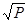
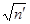
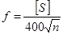
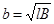

СТРОИТЕЛЬНЫЕ
НОРМЫ И ПРАВИЛА
ИНЖЕНЕРНЫЕ ИЗЫСКАНИЯ
ДЛЯ СТРОИТЕЛЬСТВА
СНиП 1.02.07-87
ГОСУДАРСТВЕННЫЙ
СТРОИТЕЛЬНЫЙ КОМИТЕТ СССР
ГЛАВНОЕ
УПРАВЛЕНИЕ ГЕОДЕЗИИ И КАРТОГРАФИИ ПРИ СОВЕТЕ МИНИСТРОВ СССР
Москва 1987
РАЗРАБОТАНЫ ПНИИИС Госстроя СССР (д-р геол.-минералог.
наук В.В. Баулин, канд. техн. наук Т.А. Ларина - руководитель
темы, В.Е. Бирюков, Г.Г. Кальбергенов, М.П. Седышева, канд. геогр. наук А.Ф.
Крашников, В.В. Ларин, а также д-р техн. наук Л.С. Амарян, канд.
техн. наук С.А. Алейников, Е.А. Боровикова, И.С. Бочарова, канд.
геол.-минералог. наук B.C. Быкова, И.Г. Гуськова, д-р геол.-минералог. наук Г.И. Дубиков, канд.
техн. наук Ф.В. Залесский, А.А. Захаров, д-р геол.-минералог. наук Р.С.
Зиангиров, кандидаты техн. наук Ю.Д. Зыков, В.К. Львов, И.Г. Миндаль,
канд. геогр. наук В.Л. Познанин, канд. геол.-минералог. наук А.Л.
Рагозин, И.А. Саваренский, канд. геол.-минералог. наук И.А. Сафохина,
канд. техн. наук В.В. Севостьянов, канд. геол.-минералог. наук О.В.
Слинко, А.В. Сманцер, кандидаты геол.-минералог. наук И.О. Тихвинский,
Э.Р. Черняк, Я.Е. Шаевич);
при участии:
НИИОСП им. Н.М. Герсеванова Госстроя СССР (канд. техн.
наук В.Ф. Жуков, д-р техн. наук П.А. Коновалов, кандидаты техн.
наук Л.Г. Мариупольский, В.П. Петрухин, Г.В. Сорокина, д-р техн. наук Е.А.
Сорочан, Г.М. Троицкий, И.Г. Рабинович); ВНИИ ВОДГЕО Госстроя СССР (д-р
техн. Наук А.М. Муфтахов); Укрвосток ГИИНТИЗа Госстроя УССР
(канд. геол.-минералог. наук Г.Г. Стрижельчик, Н.Г. Качалов); ЛитИИИ
Госстроя ЛитССР (А.С. Брилингас, Ю.Ю. Масолас, B.C.
Ришкус); ЭстГИИИЗ Госстроя ЭССР (А.Я.
Валлнер, канд. техн. наук М.А. Метс, Л.А. Саапар); П/О
Стройизыскания Госстроя РСФСР (кандидаты геол.-минералог. наук М.А.
Солодухин, А.И. Левкович); Гидропроект им. С.Я. Жука Минэнерго СССР
(кандидаты геол.-минералог. наук А.И. Котюжан и В.В. Каякин, Э.А.
Никаноров); Мосгипротранс М.C.
Шавлохов, Ф.Ф. Журов), ЦНИИС
Минтрансстроя СССР (канд. техн. наук М.А. Баранов); Фундаментпроект
Минмонтажспецстроя СССР И. Ф. Ефимов, канд.-геол.-минералог, наук
М.А. Минкин); Союздорпроект Минтрансстроя СССР (д-р техн. наук Б.Ф.
Перевозников); НИИПГ ГУГК СССР (канд. техн. наук Т.А. Башкова);
Союзморниипроект Минморфлота СССР (канд. техн. наук Л.В. Купче);
ВСЕГИНГЕО Мингео СССР (кандидаты геол.-минералог. наук Т.А. Грязнов, П.В.
Царев); МИСИ им. В.В. Куйбышева Минвуза СССР (кандидаты геол.-минералог.
наук Н.А. Платов, А.Д. Потапов); Мосгоргеотрест Мосгорисполкома
(кандидаты техн. наук Б.И. Коськов и И.Е. Карасик, Б.Н. Румянцев);
ИФЗ АН СССР (д-р физ.-мат. наук В.В. Штейнберг); МГУ Минвуза СССР (д-р
геогр. наук С.М. Мягков, канд. геол.-минералог. наук Т.И. Пантелеева);
Укргипроводхоз Минводхоза СССР (Я.Ф. Левченко); Гипроречтранс (В.Д.
Паройков), Ленгипроречтранс Минречфлота РСФСР (Ю.М. Глаубена).
ВНЕСЕНЫ ПНИИИС Госстроя СССР.
ПОДГОТОВЛЕНЫ К УТВЕРЖДЕНИЮ Управлением стандартизации
и технических норм в строительстве Госстроя СССР (В.А. Дубиняк).
С введением в действие СНиП 1.02.07-87 «Инженерные
изыскания для строительства» утрачивают силу: СНиП 11-9-78 «Инженерные
изыскания для строительства. Основные положения», СН 211-62 «Инструкция по
инженерным изысканиям для городского и поселкового строительства», СН 212-62
«Инструкция по топографо-геодезическим работам для городского, поселкового и
промышленного строительства», СН 212-73 «Инструкция по топографо-геодезическим
работам при инженерных изысканиях для промышленного, сельскохозяйственного,
городского и поселкового строительства», СН 225-79 «Инструкция по инженерным
изысканиям для промышленного строительства», СН 234-62 «Инструкция по
инженерным изысканиям для линейного строительства», СН 448-72 «Указания по
зондированию грунтов для строительства».
При пользовании нормативным документом следует
учитывать утвержденные изменения строительных норм и правил и государственных
стандартов, публикуемые в журнале «Бюллетень строительной техники», «Сборнике
изменений к строительным нормам и правилам» Госстроя СССР и информационном
указателе «Государственные стандарты СССР» Госстандарта СССР.
|
Государственный
строительный комитет СССР
(Госстрой СССР)
Главное управление
геодезии и картографии
при Совете Министров СССР
(ГУГК СССР)
|
Строительные
нормы и правила
|
СНиП
1.02.07-87
|
|
Инженерные
изыскания
для строительства
|
Взамен
СНиП II-9-78, СН
211-62, СН 212-62, СН 212-73, СН 225-79, СН 234-62, СН 448-72
|
Настоящие нормы и правила
распространяются на инженерные изыскания для проектирования и строительства
новых, расширения, реконструкции и технического перевооружения действующих
предприятий, зданий и сооружений и устанавливают основные требования к
организации и производству инженерных изысканий в соответствии со стадиями
проектирования.
|
Внесены
пнииис
Госстроя СССР
|
Утверждены
постановлением
Государственного строительного комитета СССР
и Главного управления
геодезии и картографии
при Совете Министров СССР
от 6 августа 1987 г. № 169/413п
|
Срок
введения в действие
1 января 1988 г.
|
1.1. Инженерные
изыскания для строительства следует выполнять в порядке, установленном
законодательством Союза ССР и союзных республик, и в соответствии с
требованиями государственных стандартов и нормативных документов, утвержденных
или согласованных Госстроем СССР.
1.2. Инженерные
изыскания должны обеспечивать комплексное изучение природных условий района,
площадки, участка, трассы проектируемого строительства, местных строительных
материалов и источников водоснабжения и получение необходимых и достаточных
материалов для разработки экономически целесообразных и технически обоснованных
решений при проектировании и строительстве объектов с учетом рационального
использования и охраны природной среды, а также получение данных для
составления прогноза изменений природной среды под воздействием строительства и
эксплуатации предприятий, зданий и сооружений.
1.3. Инженерные
изыскания необходимо выполнять в соответствии с установленным порядком
проектирования, природными условиями и характером проектируемых объектов для
разработки:
предпроектной
документации - технико-экономических обоснований (ТЭО) и технико-экономических
расчетов (ТЭР) строительства новых, расширения, реконструкции и технического
перевооружения действующих предприятий, зданий и сооружений; генеральных планов
городов, поселков и сельских населенных пунктов; проектов планировки
промышленных зон (районов) городов, проектов детальной планировки; схем и
генеральных планов промышленных узлов;
проектов
(рабочих проектов) предприятий, зданий и сооружений;
рабочей
документации предприятий, зданий и сооружений.
При отсутствии
или недостаточности имеющихся материалов ГУГК СССР, Мингео СССР и
Госкомгидромета СССР для обоснования разработки проектов районной планировки и
различных схем (схемы районной планировки города, использования рек, инженерной
защиты от опасных геологических и гидрометеорологических процессов и др.)
следует выполнять инженерные изыскания, состав и объем которых устанавливается
программой изысканий в соответствии с техническим заданием заказчика.
1.4. Инженерные
изыскания для разработки ТЭО и ТЭР строительства новых, расширения,
реконструкции и технического перевооружения действующих предприятий, зданий и
сооружений должны обеспечивать изучение природных условий всех намеченных
конкурентоспособных вариантов размещения площадок, трасс и получение необходимых
и достаточных материалов и данных для обоснования выбора площадок, трасс для
строительства, а также принятия принципиальных объемно-планировочных и
конструктивных решений по наиболее крупным и сложным зданиям и сооружениям,
составления схем ситуационных и генеральных планов объектов, установления
мероприятий по охране природной среды и определения расчетной стоимости
строительства объектов.
Для разработки
ТЭР допускается не выполнять изыскания с производством полевых работ в простых
природных условиях, не оказывающих существенного влияния на выбор площадки
(трассы) для строительства.
1.5. При изысканиях
на застроенных территориях и для расширения, реконструкции и технического
перевооружения объектов должны быть установлены изменения природных условий за
период строительства и эксплуатации предприятий, зданий и сооружений (на
основании сопоставления природных условий до освоения территорий и выявленных в
процессе изысканий).
1.6. При
производстве инженерных изысканий должно обеспечиваться экономное расходование материальных и
трудовых ресурсов путем четкой организации работ, повышения производительности
труда за счет автоматизации и механизации технологических процессов, применения
прогрессивных методов, современных приборов и оборудования, новых технических
средств и соблюдения правил их эксплуатации.
1.7. Инженерные
изыскания для строительства должны выполняться изыскательскими,
проектно-изыскательскими и проектными организациями, которым в установленном
порядке предоставлено такое право.
1.8. К инженерным
изысканиям не относятся: геодезические работы в строительстве (создание
геодезической разбивочной основы для строительства, геодезические
исполнительные съемки и др.); наблюдения за деформациями оснований зданий и
сооружений; наземная фотограмметрическая съемка фасадов и интерьеров зданий;
геологические работы и исследования в процессе строительства
(инженерно-геологическая документация, геотехнический контроль за качеством
возведения земляных сооружений и подготовкой оснований и др.); специальные гидрогеологические
исследования (изучение процессов влагопереноса, испытания опытных участков
дренажа и др.); бурение эксплуатационных скважин на воду, согласования при
выборе площадок (трасс) строительства и отвод земельных участков и т. п.
Выполнение этих
работ изыскательскими организациями и изыскательскими подразделениями
проектно-изыскательских и проектных организаций производится по отдельным
договорам (соглашениям) с заказчиками.
Примечание.
Инженерно-геологические работы и исследования в период строительства и
эксплуатации объектов следует выполнять для уточнения, детализации и контроля
материалов изысканий при возведении крупных объектов и в сложных
инженерно-геологических условиях с целью возможной корректировки проектной
документации и обеспечения устойчивости и эксплуатационной пригодности зданий и
сооружений, а также при производстве натурных наблюдений за работой сооружений
с использованием установленной контрольно-измерительной аппаратуры и
обследовании в котлованах грунтов оснований фундаментов строящихся зданий и
сооружений. Состав и объем этих работ устанавливаются программой, согласованной
с заказчиком.
1.9. Состав и объем
инженерных изысканий должны устанавливаться программой изысканий в соответствии
с природными условиями, стадией проектирования и характером проектируемого
объекта, требованиями общесоюзных нормативных документов по инженерным
изысканиям, а для отдельных видов строительства (гидротехнического,
энергетического, мелиоративного, транспортного и др.) состав и объем изысканий
определяются в соответствии с ведомственными строительными нормами.
1.10. Метрологическое
обеспечение единства и точности измерений должно осуществляться в соответствии
с требованиями государственных стандартов.
1.11. При инженерных
изысканиях необходимо соблюдать нормы, правила и требования по охране труда
соответствующих нормативных документов и государственных стандартов.
1.12. Организации,
выполняющие инженерные изыскания, и их должностные лица несут установленную
законодательством ответственность за полноту и достоверность материалов
инженерных изысканий.
1.13. Для выполнения
инженерных изысканий на объекте должны быть составлены и оформлены техническое
задание, программа изысканий, сметно-договорная документация, разрешение на
проведение изыскательских работ, а в необходимых случаях осуществлены
согласование и регистрация работ.
1.14. Техническое
задание должно составляться заказчиком на производство всего комплекса
изыскательских работ на объекте с привлечением в необходимых случаях
изыскательской организации.
Техническое
задание изыскательской организации должна выдавать, как правило, проектная
организация - генеральный проектировщик по согласованию с заинтересованными
субподрядными организациями.
Техническое
задание изыскательскому подразделению в проектно-изыскательских и проектных
организациях должен выдавать главный инженер проекта с участием
заинтересованных подразделений.
Допускается
выдача технических заданий действующими объединениями, предприятиями и
организациями на работы, указанные в п. 1.8, на изыскания для реконструкции и расширения
отдельных цехов (участков) и на изыскания для проектирования строительства,
осуществляемого хозяйственным способом.
Технические
задания должны быть утверждены руководством организаций, их выдавших.
Выполнение
инженерных изысканий при отсутствии технического задания или при его
несоответствии требованиям нормативных документов по изысканиям и
проектированию не допускается.
1.15. Техническое
задание на инженерные изыскания должно содержать сведения и данные,
необходимые и достаточные для организации и производства изысканий, составления
программы и отчетных материалов:
основание для
производства инженерных изысканий;
наименование
объекта;
проектная
организация - генеральный проектировщик;
характер
строительства (новое строительство, реконструкция, расширение, техническое
перевооружение);
виды изысканий;
данные о
местоположении и границах площадки, участка, трассы или их конкурентоспособных
вариантов;
сведения о
стадийности, сроках проектирования и строительства;
сведения о ранее
выполненных инженерных изысканиях и исследованиях;
характеристику
проектируемых предприятий, класс ответственности зданий и сооружений в
соответствии с «Правилами учета степени ответственности зданий и сооружений при
проектировании конструкций»;
данные о
воздействии проектируемых объектов на природную среду, рациональном
природопользовании и о мероприятиях по охране природной среды и инженерной
защите территорий и сооружений;
требования к
составу, точности, надежности, достоверности и обеспеченности определения
необходимых данных при изысканиях;
требования к
составу, срокам и порядку представления отчетных материалов заказчику;
дополнительные
требования и сведения по производству отдельных видов инженерных изысканий;
фамилия,
инициалы и номер телефона ответственного представителя заказчика.
К тексту
технического задания следует прилагать техническую документацию, необходимую для
правильного и обоснованного определения состава и объема изыскательских работ:
топографические планы и карты, генеральные планы, схемы с указанием границ
площадок, участков, трасс изысканий, расположений контуров существующих и
проектируемых зданий и сооружений, инженерных коммуникаций, копию решения
исполкома Совета народных депутатов о предварительном согласовании места
расположения всех конкурентоспособных вариантов площадок (трасс) или копию акта
выбора площадки (трассы) строительства.
В техническом задании
не допускается устанавливать состав и объемы изыскательских работ, методику и
технологию их выполнения.
Примечания: 1. При выдаче технического задания
заказчик должен передать изыскательской организации во временное пользование
имеющиеся у него материалы ранее выполненных инженерных изысканий на площадке
(участке, трассе) проектируемого строительства и другие материалы о природных
условиях района.
2. В необходимых
случаях в техническом задании заказчика должны предусматриваться изыскания
источников водоснабжения на базе подземных вод, местных строительных материалов
или сбор соответствующих сведений об имеющихся ресурсах.
1.16. Заказчик несет
ответственность за полноту и достоверность изложенных в техническом задании
сведений и требований к производству изысканий и к отчетным материалам, а также
за своевременное представление изменений и дополнений к техническому заданию,
которые следует считать его неотъемлемой частью.
Изыскательские
работы, материалы которых не могут быть использованы при проектировании
вследствие несвоевременной выдачи изыскательской организации изменений и
дополнений к техническому заданию или его отмены, подлежат оплате заказчиком.
1.17. Сбор материалов
инженерных изысканий прошлых лет и других данных о природных
условиях района, площадки, участка, трассы следует осуществлять в исполкомах
Советов народных депутатов, фондах Мингео СССР, Госкомгидромета СССР, ГУГК
СССР, территориальных изыскательских, проектно-изыскательских и проектных
организациях, действующих предприятиях и других организациях различных
министерств и ведомств.
При составлении
программы изысканий необходимо использовать научные публикации и справочные
данные о природных условиях района изысканий.
1.18. В результате
обобщения и анализа собранных материалов инженерных изысканий
прошлых лет должна быть установлена возможность их использования для
составления программы инженерных изысканий и в последующем.
С целью сбора
дополнительных данных о природных условиях при необходимости должно проводиться
полевое обследование района, площадки, участка и трассы работ.
1.19. Программа
инженерных изысканий должна составляться изыскательской организацией
(подразделением) на основе технического задания заказчика в соответствии с
требованиями нормативных документов и с максимальным использованием материалов
ранее выполненных инженерных изысканий и других сведений о природных условиях
района, площадки, участка, трассы изысканий, а также с учетом результатов
полевого обследования района, если оно проводилось.
Программа
инженерных изысканий должна устанавливать задачи изысканий, состав, объем,
методику, технологию и последовательность выполнения работ, обеспечивающих
полноту и достоверность отчетных материалов, а также предусматривать
рациональную организацию работ и завершение изысканий в установленные сроки.
Примечания: 1. При необходимости к программе
изысканий прилагаются расчеты потребности в материальных и трудовых ресурсах.
2. При
изысканиях в простых природных условиях для строительства отдельных зданий и
сооружений II-III классов ответственности
и выполнении работ, предусмотренных в п. 1.8,
допускается взамен программы составлять краткое предписание на производство
изысканий без согласования его с заказчиком.
1.20. Программа
инженерных изысканий подлежит согласованию с заказчиком в части ее соответствия
техническому заданию, состава, очередности и сроков представления отчетных
материалов и общего объема финансирования.
Программа
инженерных изысканий для крупных и ответственных сооружений до передачи ее
заказчику в установленном порядке согласовывается с территориальной
изыскательской организацией в части соблюдения требований нормативных
документов и полноты использования материалов изысканий прошлых лет.
1.21. Программа
инженерных изысканий должна содержать:
наименование и
местоположение объекта с указанием административной принадлежности площадки,
участка, трассы изыскание-характеристику проектируемых зданий и сооружений;
цели и задачи
изысканий;
сведения о ранее
выполненных изысканиях и их использовании;
характеристику и
оценку изученности природных условий;
сведения о
природных условиях района, влияющих на организацию и производство изысканий;
обоснование
изменения границ площадей проведения изысканий (при уточнении сферы
взаимодействия проектируемых объектов с природной средой), категорий сложности
природных условий, состава, объемов, методов, технологии и последовательности
выполнения изыскательских работ, а также мест и времени производства отдельных
видов работ на основе требований нормативных документов и государственных
стандартов;
мероприятия по
обеспечению безопасных условий труда и санитарно-гигиеническому обслуживанию
работающих с учетом природных условий и характера выполняемых работ;
мероприятия по
охране окружающей среды и исключение ее загрязнения при выполнении изысканий;
базовые
качественные характеристики в соответствии с «Положением об оценке качества
проектно-сметной документации для строительства»;
требования к
организации и производству работ;
перечень и
состав отчетных материалов, сроки их представления;
обоснование
необходимости выполнения научно-исследовательских работ для проектирования
крупных объектов или в сложных природных условиях.
К программе
инженерных изысканий следует прилагать копию технического задания на изыскания
и указанную в п. 1.15
документацию, необходимую при производстве работ.
1.22. Предписание на
производство инженерных изысканий должно содержать в краткой форме указанные в п. 1.21 сведения и данные, необходимые и
достаточные для качественного выполнения работ.
В предписании
следует приводить состав, объем, методы, последовательность выполнения
изыскательских работ.
1.23. Предварительную
смету стоимости изыскательских работ на объекте следует составлять на основе
программы (предписания) инженерных изысканий, в которой должны приводиться
намеченные к выполнению виды и объемы работ.
Исполнительную
смету стоимости изыскательских работ необходимо составлять на основе
технического отчета (заключения) о результатах инженерных изысканий, в котором
должны приводиться фактически выполненные объемы работ.
1.24. Инженерные
изыскания следует выполнять при наличии разрешений, выдаваемых отделами
по делам строительства и архитектуры исполнительных комитетов местных Советов
народных депутатов.
Разрешение на
производство изысканий должно быть оформлено, как правило, заказчиком при
оформлении договора и согласовании смет и программы изысканий или по его
поручению организацией, выполняющей изыскания (с ее согласия) с дополнительной
оплатой соответствующих затрат.
На
инженерно-геодезические изыскания, связанные с выполнением аэрофотосъемочных
работ, развитием государственной геодезической сети, производством
топографических съемок и обновлением топографических планов (съемкой текущих
изменений) на площади более 1 км2, а также трасс линейных сооружений
протяженностью более 25 км, необходимо разрешение органов Госгеонадзора ГУГК
СССР.
1.25. Производство
инженерно-геологических и инженерно-гидрометеорологических изысканий подлежит
регистрации в установленном порядке в фондах Мингео СССР и органах
Госкомгидромета СССР.
1.26. Организация,
выполняющая изыскания, должна согласовывать сезонность и (или) время проведения
работ, места производства работ, возможные нарушения режимов работы предприятий
и мероприятия по обеспечению безопасных условий работ с владельцами инженерных
коммуникаций, землепользователями, органами по регулированию использования и охране
вод, а также с действующими объединениями, предприятиями, колхозами, совхозами
и другими заинтересованными организациями.
Примечание. Если при
согласовании с заинтересованными организациями выявится необходимость изменения
состава и сроков изысканий, то следует внести соответствующие изменения в
программу (предписание) и сметно-договорную документацию и согласовать их с
заказчиком.
1.27. Инженерные
изыскания производятся без изъятия земельных участков у землепользователей.
Организация,
выполняющая инженерные изыскания, имеет право устанавливать (закладывать)
геодезические пункты, осуществлять проходку горных выработок, отбирать пробы
воздуха, воды, грунта, выполнять подготовительные и сопутствующие работы
(расчистка и планировка площадок, прокладка визирок, устройство временных
дорог, переездов, водоводов и др.), необходимые для изысканий.
Рубка леса,
необходимая для выполнения изысканий, допускается только при наличии
лесорубочного билета, получаемого заказчиком в установленном порядке до начала
изысканий.
1.28. При
производстве изысканий, связанных с нарушением почвенного покрова, необходимо
снимать, хранить и наносить после окончания работ почвенный плодородный слой на
нарушенные земли, а также не допускать загрязнения воздуха, воды и почвы.
1.29. В период
изысканий в зависимости от результатов работ изыскательские организации и
изыскательские подразделения проектно-изыскательских и проектных организаций
должны вносить в программу (предписание) необходимые изменения и дополнения,
направленные на повышение качества и сокращение продолжительности изысканий.
Изменения и
дополнения, вызывающие увеличение стоимости и продолжительности изыскательских
работ, подлежат согласованию с заказчиком с оформлением при необходимости
соответствующих разрешений (п. 1.24).
При выявлении в
процессе работ неблагоприятных природных условий, изучение которых не было
предусмотрено программой изысканий, следует поставить заказчика в известность о
необходимости внесения изменений в программу изысканий и сметно-договорную
документацию.
1.30. Изыскательская
организация (подразделение) должна осуществлять контроль за производством работ
в соответствии с действующими нормативными документами и государственными
стандартами.
Результаты
контроля необходимо отражать в полевой, лабораторной и другой технической
документации.
По результатам
инспекционного и приемочного контроля должен составляться акт, в котором
следует приводить оценку полноты и качества материалов изысканий.
1.31. Контроль
соблюдения требований нормативных документов и государственных стандартов при
инженерных изысканиях осуществляют в установленном порядке органы
Государственного контроля и надзора, органы, выдавшие разрешение на изыскания и
осуществившие их регистрацию, Госстрой СССР и госстрои союзных республик,
заказчик, а также головные и территориальные изыскательские организации.
Примечание. Контролирующим
учреждениям и организациям следует координировать и согласовывать между собой
свою деятельность в целях исключения дублирования и повышения эффективности
контроля качества инженерных изысканий.
1.32. Ведение,
оформление и содержание полевой документации при производстве инженерных
изысканий должны соответствовать требованиям государственных стандартов и
нормативных документов.
1.33. По результатам
выполненных инженерных изысканий необходимо составлять технический
отчет (заключение), который должен содержать данные, предусмотренные
техническим заданием заказчика и программой изысканий, а также обоснования
допущенных изменений программы.
При инженерных
изысканиях в простых природных условиях для проектирования отдельных зданий и
сооружений (п. 1.19) допускается вместо
технического отчета составлять заключение или пояснительную записку, в которых
следует кратко освещать результаты выполненных работ. Составление заключения
(пояснительной записки) предусматривается предписанием и сметно-договорной
документацией.
При
достаточности собранных материалов изысканий прошлых лет для обоснования
соответствующей стадии (задачи) проектирования их результаты следует оформлять
в виде заключения.
В состав
технического отчета (заключения) должны входить текст отчета, текстовые и
графические приложения.
Отчетные
материалы инженерных изысканий должны содержать рекомендации и предложения по
учету природных условий при проектировании и строительстве объектов и
инженерной подготовке территории, а также рекомендации по производству
изысканий для последующих стадий проектирования.
1.34. Технический
отчет (заключение) должен представляться заказчику и в установленном порядке
органам, выдавшим разрешение на производство изысканий, проводившим их
регистрацию, и территориальной изыскательской организации.
Один экземпляр
технического отчета (заключения) сдается на хранение в архив организации,
выполнявшей изыскания.
Примечание. Полевая
техническая документация не входит в состав технического отчета (заключения),
заказчику не передается и хранится в архиве организации, выполнившей изыскания.
1.35. Разногласия по
техническим вопросам между заказчиком и изыскательской организацией должны
разрешаться их вышестоящими организациями по подчиненности.
1.36. Заказчик обязан
после получения отчетных материалов изысканий в установленные сроки осуществить
их приемку и дать оценку полноты и качества технического отчета (заключения) и
соответствия его техническому заданию заказчика и согласованной программе
изысканий.
2.1.
Инженерно-геодезические изыскания для строительства следует выполнять в
соответствии с требованиями п. 1.1 и с учетом требований нормативных документов
ГУГК СССР.
2.2.
Инженерно-геодезические изыскания должны обеспечивать получение топографо-геодезических
материалов и данных, необходимых для проектирования, строительства и
реконструкции предприятий, зданий и сооружений, а также для выполнения других
видов инженерных изысканий.
2.3. В состав
инженерно-геодезических изысканий входят:
сбор и анализ
имеющихся топографо-геодезических материалов и данных прошлых лет на район
(участок) строительства;
построение
(развитие) опорных геодезических сетей - геодезической сети 3 и 4 классов,
геодезической сети сгущения 1 и 2 разрядов и нивелирной сети II, III и IV классов;
создание
планово-высотной съемочной геодезической сети;
топографическая
(наземная и аэрофототопографическая) съемка в масштабах 1:10000 - 1:500,
включая съемку подземных и надземных сооружений;
обновление
инженерно-топографических планов1 в масштабах 1:10 000 - 1:500;
__________
1
Инженерно-топографический план - специальный топографический план, на котором
отображены элементы ситуации и рельефа местности, существующие здания и
сооружения, включая подземные и надземные сооружения, с техническими
характеристиками, необходимыми для проектирования, строительства и эксплуатации
объектов.
трассирование
линейных сооружений;
перенесение в
натуру и привязка инженерно-геологических выработок, геофизических и других
точек;
инженерно-гидрографические
работы;
геодезические
работы для изучения опасных геологических процессов (оползни, карст,
переработка берегов и др.);
геодезические
работы для обоснования проектов реконструкции и технического перевооружения существующих
предприятий, зданий (сооружений), включая съемки подземных и надземных
сооружений, координирование, наружные обмеры зданий (сооружений), съемки
существующих железных и автомобильных дорог и др.;
составление и размножение планов.
Примечания: 1. Построение (развитие) опорной геодезической сети
3 класса и топографическую съемку (обновление планов) в масштабе 1:10000 при
инженерно-геодезических изысканиях допускается выполнять по согласованию с
территориальными инспекциями Госгеонадзора ГУГК СССР.
2. На отдельных участках промышленных предприятий и
улиц (проездов, переходов) городов с густой сетью подземных и надземных
сооружений разрешается выполнять топографическую съемку в масштабе 1:200.
Технические требования к ее выполнению должны устанавливаться заданием
заказчика и обосновываться в программе работ.
2.4.
Техническое задание на производство инженерно-геодезических изысканий
составляется в соответствии с требованиями п. 1.15.
Задание должно содержать:
сведения о системе координат и высот;
данные о границах и площадях топографической съемки
(обновления планов);
указания о масштабе съемки и высоте сечения рельефа по
отдельным участкам;
технические требования к трассированию линейных
сооружений, указания об их проектных вариантах, точках примыкания;
дополнительные требования к геодезическим работам.
2.5.
Программа инженерно-геодезических изысканий должна составляться в соответствии
с требованиями п. 1.21.
Программа должна содержать:
сведения о принятой системе координат и высот;
данные о наличии материалов изысканий прошлых лет и
объеме их использования;
обоснование видов и классов (разрядов) проектируемой
опорной геодезической сети и схемы ее построения с расчетом точности для
сложных и особо точных сетей;
указания по развитию съемочной геодезической сети и
выполнению топографических съемок;
обоснование принятых масштабов топографических съемок
и высот сечения рельефа в случаях их несоответствия установленным в техническом
задании;
требования к съемке подземных и надземных сооружений;
проектные варианты трасс;
требования к разбивке и планово-высотной привязке
инженерно-геологических выработок и других точек;
указания о выполнении геодезических работ по дополнительным
требованиям заказчика.
К программе работ должны быть приложены:
копии задания на производство изысканий;
схема топографо-геодезической изученности района
(участка) работ;
схема проектируемой опорной геодезической сети;
картограмма расположения участков топографической
съемки;
чертежи специальных геодезических центров, если
намечена их закладка;
топографические карты (планы) с указанием проектных
вариантов трасс линейных сооружений.
Примечание.
Допускается совмещение прилагаемых схем и картограмм.
2.6.
Геодезической основой для производства инженерно-геодезических изысканий на
площадках служат пункты опорных геодезических сетей, а также пункты (точки)
съемочной геодезической сети.
2.7.
Геодезической основой при инженерно-геодезических изысканиях трасс линейных
сооружений служат пункты (точки) съемочной геодезической сети.
2.8.
Геодезические ходы съемочной сети, прокладываемые при изысканиях трасс линейных
сооружений, должны быть привязаны в плане и по высоте к пунктам опорной
геодезической сети не реже чем через 30 км (при изысканиях магистральных
каналов - 8 км).
В случае расположения пунктов опорной геодезической
сети от трассы на расстоянии более 5 км, допускается вместо плановой привязки
определять не реже чем через 15 км истинные азимуты сторон хода.
При изысканиях трасс линейных сооружений на
территориях городов и промышленных предприятий, а также на территориях
разработки полезных ископаемых плановая и высотная привязка к пунктам опорной
геодезической сети обязательна.
2.9. Системы
координат и высот должны устанавливаться в программе работ по согласованию с
органом, выдавшим разрешение на производство изысканий.
Для проектирования и строительства новых предприятий,
зданий и сооружений изыскания выполняются в местной системе координат, а для
расширения, реконструкции и технического перевооружения действующих
предприятий, зданий и сооружений - выполняются, как правило, в ранее принятой
системе координат для этих объектов.
2.10.
Планово-высотную привязку к пунктам государственной геодезической сети следует
выполнять при расположении их от границ площадки изысканий на расстоянии не
более 5 км.
2.11.
Координаты пунктов (точек) геодезической основы вычисляются в принятой для
объекта системе прямоугольных координат на плоскости в проекции Гаусса в
трехградусных зонах с учетом, при необходимости, среднего уровня площадки
строительства.
2.12. Для
обоснования топографических съемок плотность пунктов государственной
геодезической сети должна быть не менее: 1 пункт на 30 км для съемки в масштабе
1:5000; 1 пункт на 15 км для съемки в масштабе 1:2000 и крупнее.
На застроенных территориях городов и их участках,
подлежащих застройке в ближайшие годы, а также на площадках проектируемых
(реконструируемых) промышленных предприятий плотность пунктов государственной
геодезической сети должна на быть не менее одного на 5 км2.
2.13.
Плотность пунктов опорных геодезических сетей для производства
инженерно-геодезических изысканий устанавливается в программе работ и, как
правило, должна составлять на территориях городов, поселков городского типа и
промышленных площадок не менее четырех пунктов триангуляции (трилатерации) и
полигонометрии на 1 км2 на застроенных территориях; один пункт на 1
км2 на незастроенных территориях.
Реперы и марки
нивелирной сети должны располагаться так, чтобы при нанесении их на каждый лист
плана в масштабе 1:5000 приходилось не менее одного нивелирного знака.
2.14. При
инженерно-геодезических изысканиях на площадках геодезические сети следует
строить в соответствии с табл. 1.
Таблица 1
|
Площадь
участка изысканий, км2
|
Опорная
геодезическая сеть
|
|
Триангуляция,
трилатерация и полигонометрия
|
Класс
нивелирования
|
|
класс
|
разряд
|
|
До 1*
|
-
|
-
|
-
|
|
От 1 до 5
включ.
|
-
|
2
|
IV
|
|
« 5 « 10 «
|
-
|
1;
2
|
IV
|
|
« 10 « 25 «
|
4
|
1;
2
|
IV
|
|
« 25 « 50 «
|
4
|
1;
2
|
III, IV
|
|
« 50 « 200 «
|
3;
4
|
1;
2
|
II-IV
|
|
200 и более
|
2;
3; 4
|
1;
2
|
I-IV
|
Примечания: 1. На территориях действующих и
реконструируемых промышленных предприятий допускается повышение класса
(разряда) опорных геодезических сетей.
2. Допускается
создание геодезических сетей специального назначения. Необходимость создания
таких сетей в каждом отдельном случае обосновывается в программе работ.
___________
*
Съемочная геодезическая сеть - теодолитные ходы или триангуляция (взамен
теодолитных ходов), ходы технического и тригонометрического нивелирования.
2.15. Средние
погрешности пунктов (точек) плановой съемочной сети, в том числе плановых опорных
точек (контрольных пунктов), относительно пунктов опорной геодезической сети не
должны превышать в масштабе плана на открытой местности и на застроенной
территории 0,1 мм, а на местности, закрытой древесной и кустарниковой
растительностью, - 0,15 мм.
Средние
погрешности высот пунктов (точек) съемочных геодезических сетей относительно
ближайших реперов (марок) нивелирования I, II, III и IV классов не
должны превышать на равнинной местности 1/10, а в горных и предгорных районах -
1/6 высоты сечения рельефа, принятой для топографических планов.
2.16. Закрепление
геодезических пунктов на местности и их наружное оформление должно
осуществляться в соответствии с требованиями нормативного документа ГУГК СССР
«Центры геодезических пунктов для территорий городов, поселков и промышленных
площадок». По согласованию с территориальными инспекциями Госгеонадзора ГУГК
СССР закрепление пунктов может производиться другими центрами. Допускается
закрепление привязочных ходов временными знаками. На застроенной территории,
как правило, должны применяться стенные знаки.
Геодезические
пункты следует устанавливать в местах, обеспечивающих их долговременную
сохранность, неизменное положение в плане и по высоте, благоприятные и
безопасные условия для измерения с учетом охраны природной среды (сохранение
ценных угодий и насаждений).
2.17. При изысканиях
по трассам линейных сооружений на незастроенных территориях начальная и конечная
точки трасс, если они не фиксированы на местности, вершины углов поворота, а
также створные точки прямолинейных участков в пределах взаимной видимости, но
не реже чем через 1 км, должны закрепляться временными знаками (деревянными и
железобетонными столбами, металлическими уголками и др.).
На застроенных
территориях закрепление трасс, как правило, не производится, а их точки
привязываются линейными промерами к постоянным элементам ситуации.
2.18. Нивелирные
знаки должны устанавливаться по трассам автомобильных и железных дорог,
магистральных каналов не реже чем через 2 км, а по трассам трубопроводов - не
реже чем через 5 км (в том числе на переходах через большие водотоки и на
организуемых водомерных постах).
2.19. Геодезические
пункты, закрепленные постоянными знаками, подлежат сдаче для наблюдения за
сохранностью в соответствии с требованиями «Инструкции об охране геодезических
пунктов» ГУГК СССР.
2.20. Знаки и реперы,
устанавливаемые при изысканиях линейных сооружений, должны передаваться по акту
заказчику или указанным им организациям.
2.21. Геодезические
приборы, используемые для производства инженерно-геодезических изысканий,
должны быть поверены в соответствии с требованиями нормативных документов
Госстандарта СССР и ведомственных метрологических служб.
2.22. По результатам
выполненных инженерно-геодезических изысканий необходимо составлять технический
отчет (пояснительную записку) в соответствии с п. 1.33 и рекомендуемым приложением 1.
2.23. Для разработки
предпроектной документации следует осуществлять сбор и анализ имеющихся
топографических карт, планов и фотопланов, землеустроительных и
лесоустроительных планов, материалов изысканий прошлых лет, а также сбор
сведений о наличии материалов по опорным геодезическим сетям и крупномасштабным
топографическим съемкам для рассматриваемых вариантов размещения строительной
площадки (направления трассы).
Примечание.
При наличии достаточных по полноте и качеству материалов и данных прошлых лет
решение проектных задач производится на их основе, и дальнейшие полевые работы
для разработки предпроектной документации не выполняются.
2.24.
Масштабы инженерно-топографических планов для разработки ТЭО (ТЭР) на площадках
нового строительства следует принимать равными 1:10000, 1:5000, а для
реконструкции предприятий - 1:5000,1:2000.
Масштабы инженерно-топографических планов для разработки
проектов планировки населенных пунктов устанавливаются в соответствии с
требованиями ведомственных строительных норм, утвержденных Госгражданстроем.
Примечание. При
необходимости допускается использовать карты и планы в более мелких и в более
крупных масштабах.
2.25. На
площадках проектируемого строительства выполняются следующие полевые работы:
проверка сохранности пунктов опорной геодезической
сети (в случае необходимости производится создание опорной геодезической сети);
проверка соответствия имеющихся топографических планов
на территории площадок современному состоянию ситуации и рельефа и обновление
их в случае необходимости;
топографические съемки в случае отсутствия
топографических карт и планов в масштабах, необходимых для разработки ТЭО
(ТЭР);
промеры глубин на реках и водоемах; нивелирование
водотоков для составления продольного профиля на исследуемом участке реки и
поперечных профилей по промерным створам;
перенесение в натуру и привязка
инженерно-геологических выработок, геофизических и других точек;
геодезические работы при выполнении режимных
наблюдений по изучению опасных геологических процессов: переработка берегов,
склоновые процессы и др.;
при изысканиях для разработки ТЭО уникальных объектов
при необходимости производятся специальные геодезические измерения с целью
выявления современных движений земной коры.
2.26. Для
выбора направления трасс линейных сооружений следует использовать имеющиеся
топографические карты и материалы аэрофотосъемки.
Камеральное трассирование вариантов линейных сооружений
производится по картам в масштабах 1:100000 - 1:10000 и аэроснимкам; при этом
на сложных и эталонных участках используются топографические планы в масштабах
1:5000, 1:2000.
В полевых условиях по вариантам линейных сооружений
выполняются рекогносцировочное обследование и при необходимости визуальный
(аэровизуальный) осмотр с целью определения полноты содержания и достоверности
имеющихся топографических материалов.
В зависимости от вида линейного сооружения на сложных
и эталонных участках при отсутствии необходимых материалов выполняются:
маршрутная
аэрофотосъемка для составления крупномасштабных планов;
наземная
топографическая съемка в случаях, когда аэрофотосъемку производить экономически
нецелесообразно или не представляется возможным;
проложение
тахеометрических ходов с набором пикетов в характерных местах рельефа и
ситуации.
2.27.
Инженерно-геодезические изыскания должны обеспечить получение
топографо-геодезических материалов и данных, необходимых для разработки
генерального плана объекта (определения оптимального положения трассы), а также
доработки и детализации проектных решений, принятых в ТЭО (ТЭР) и при
разработке другой предпроектной документации.
2.28. При
инженерно-геодезических изысканиях для разработки проектов на площадках
строительства, как правило, должны выполняться:
сбор и анализ топографо-геодезических материалов,
включая материалы и данные изысканий прошлых лет;
построение (развитие) опорных геодезических сетей;
создание планово-высотной съемочной геодезической
сети;
топографические съемки (обновление планов);
инженерно-гидрографические работы;
геодезическое обеспечение других видов изысканий,
включая изучение опасных геологических процессов;
составление и размножение планов.
Состав и объем инженерно-геодезических изысканий
должны определяться в программе изысканий.
2.29. По
результатам сбора, анализа и систематизации материалов изысканий прошлых лет
должны быть получены сведения о системе координат и высот, типах центров и
наружных знаков опорных геодезических сетей, о времени и методах выполнения
топографических съемок, их масштабах, высоте сечения рельефа.
2.30.
Границы и площади участков, подлежащих съемкам (обновлению планов), должны
устанавливаться в техническом задании с учетом необходимости обеспечения других
видов изысканий.
Границы топографических съемок на переходах через
водные препятствия, состав и объем инженерно-геодезических изысканий на
акваториях принимаются с учетом требований программы гидрометеорологических
изысканий.
2.31.
Топографическая съемка для разработки проекта строительства должна выполняться,
как правило, в масштабах 1:5000 - 1:2000 с высотами сечения рельефа,
выбираемыми по табл. 13
в зависимости от характера рельефа.
2.32. Для
разработки проектов реконструкции (расширения) промышленных и агропромышленных
предприятий, железнодорожных станций и узлов и для разработки проектов
застройки населенных пунктов выполняется топографическая съемка в масштабах
1:1000 - 1:500 с высотой сечения рельефа через 1-0,5 м.
2.33.
Инженерно-геодезические изыскания трасс линейных сооружений должны выполняться
по утвержденным в ТЭО (ТЭР) направлениям.
В состав
изысканий входят:
сбор и анализ
имеющихся топографо-геодезических, аэрофотосъемочных материалов, а также данных
изысканий прошлых лет по направлению трассы;
камеральное
трассирование вариантов трассы и полевое обследование (рекогносцировка)
намеченных вариантов;
топографическая
съемка вдоль намеченных вариантов трассы автомобильных и железных дорог,
магистральных каналов, трубопроводов, а также мест индивидуального
проектирования (переходы через естественные и искусственные препятствия,
пересечения коммуникаций, площадки и др.);
полевое
трассирование с проложением теодолитных и тахеометрических ходов, по всей длине
трассы в случае отсутствия крупномасштабных топографических планов;
геодезическое
обеспечение других видов изысканий.
2.34. При полевом
обследовании надлежит уточнять намеченное положение трассы; осуществлять сбор и
уточнение сведений о пересекаемых коммуникациях; в случае несоответствия
содержания имеющихся планов современному состоянию ситуации и рельефа,
производится их обновление. Обновление планов должно осуществляться, как
правило, в полосе не менее ширины охранной зоны сооружения.
2.35. При изысканиях
автомобильных и железных дорог, магистральных каналов и трубопроводов по
намеченным вариантам разрешается выполнять топографическую съемку (обновление
планов) полосы шириной, обеспечивающей возможность проектирования вариантов
трассы.
2.36. Ширина полосы
местности вдоль трассы, подлежащей топографической съемке (обновлению),
устанавливается ведомственными строительными нормами в зависимости от вида
линейного сооружения.
2.37. Состав и объем
изысканий для рабочего проекта должен приниматься с учетом указаний по составу
и объему изысканий для проекта и рабочей документации.
2.38.
Инженерно-геодезические изыскания должны обеспечить получение необходимых
топографо-геодезических материалов и данных на участках проектируемых зданий и
сооружений.
При этом на
площадках строительства, как правило, выполняются:
развитие
(сгущение) опорных и съемочных геодезических сетей;
топографические
съемки (обновление планов);
инженерно-гидрографические
работы;
геодезическое
обеспечение других видов изысканий;
составление и
размножение планов.
Для
реконструкции и технического перевооружения действующих предприятий в
соответствии с требованиями технического задания дополнительно выполняются:
координирование
углов капитальных зданий (сооружений), центров стрелочных переводов, основных
элементов путевого развития и вершин углов железнодорожных путей, колодцев
(камер), опор инженерных коммуникаций и других точек; детальное обследование
инженерных коммуникаций, подлежащих реконструкции или переустройству, а также
опор и колодцев (камер) в местах подключения проектируемых коммуникаций; съемка
существующих железных и автомобильных дорог; наружные обмеры зданий
(сооружений) и установок; геодезическое обеспечение инженерно-геологических и
инженерно-гидрогеологических режимных наблюдений.
2.39. Масштабы
топографических съемок должны устанавливаться в зависимости от характеристики
участков съемки и видов проектируемых сооружений по табл. 2.
Таблица 2
|
Характеристика
участка съемки, сооружения
|
Масштаб
съемки
|
Высота
сечения рельефа, м
|
|
Территория с
капитальной застройкой (реконструкция, расширение) с подземными и надземными
сооружениями
|
1:500
|
1;
0,5
|
|
Незастроенная,
малозастроенная территория или территория с малоэтажной застройкой с
подземными и надземными сооружениями
|
1:2000;
1:1000
|
2;
1; 0,5
|
|
Территория
новых или реконструируемых микрорайонов, кварталов, градостроительных
комплексов, а также групп жилых и общественных зданий
|
1:1000;
1:500
|
1;
0,5
|
|
Трасса
магистральных трубопроводов в несложных условиях
|
1:10
000
|
-
|
|
Трасса
магистральных каналов; трасса автомобильных и железных дорог в равнинной
местности; трасса внеплощадочных коммуникаций промышленных и агропромышленных
предприятий и городских коммуникаций на незастроенных территориях; трасса
электрических кабелей и кабелей связи; трасса ЛЭП; трасса магистральных
трубопроводов на сложных участках (поймы рек, болота и т. д.); участок
аварийного разлива нефти
|
1:5000;
1:2000
|
2;
1; 0,5
|
|
Трасса
автомобильных и железных дорог при пересеченном рельефе и в горных условиях,
на сложных участках местности (оползни, осыпи, карст и т. д.), место
размещения малых искусственных сооружений; трасса магистральных каналов на
сложных участках; подход ЛЭП и электрокабелей к станциям и подстанциям;
пересечение и сближение трасс с транспортными и другими коммуникациями и
сооружениями; резерв грунта, месторождение строительных материалов
|
1:2000;
1:1000
|
2;
1; 0,5
|
|
Трасса
линейных сооружений на застроенной территории городов, поселков, промышленных
и агропромышленных предприятий
|
1:1000;
1:500
|
1;
0,5
|
|
Переход через
водные преграды
|
1:5000
- 1:500 (в зависимости от ширины реки)
|
2;
1; 0,5
|
|
Примечания:
1. Топографическую съемку на незастроенной территории в масштабе 1:500
допускается выполнять на участках проектируемой застройки в пределах
городской черты, а также в сложных (II и III категорий
сложности) инженерно-геологических и геоморфологических условиях при
соответствующем обосновании в программе работ.
2. Высоты
сечения рельефа необходимо устанавливать по табл. 13 с учетом рельефа местности и
масштаба съемки.
|
2.40. По трассам
магистральных трубопроводов, прокладываемых в несложных условиях, трассам
электрических кабелей 6-20 кВ, кабелей связи, трассам ЛЭП выполняется съемка
ситуации.
2.41. Для
реконструкции предприятий по специальному заданию по данным наружных обмеров
зданий (сооружений) составляются обмерные чертежи в масштабах 1:500 - 1:50.
Расхождение длин стен зданий, полученных из обмеров и вычисленных по
координатам, не должно превышать 10 см при длинах менее 100 м и 1/1000 при
длинах свыше 100 м.
По результатам
детального обследования подземных и надземных сооружений составляются эскизы
колодцев (камер) в масштабах 1:50 - 1:20 и эскизы типовых опор в масштабах
1:200 - 1:20 (в зависимости от их высоты).
Примечания: 1. Расстояния и координаты, выписанные
на обмерные чертежи, должны быть увязаны между собой.
2.
Допускается вместо эскизов представление фотографий обследованных опор с их
размерами.
2.42. По трассам
линейных сооружений при необходимости выполняются: полевое трассирование;
планово-высотные привязки трасс к пунктам опорной геодезической сети;
топографическая съемка полосы местности вдоль трассы (съемка текущих изменений
при наличии планов); геодезическое обеспечение других видов изысканий.
2.43. В состав работ
при полевом трассировании входят: проложение теодолитных (тахеометрических)
ходов по оси трассы с закреплением углов поворота и створных точек,
установление реперов, разбивка и закрепление пикетажа, элементов кривых и поперечных
профилей, техническое (тригонометрическое) нивелирование по трассе и поперечным
профилям.
2.44. На застроенной
территории городов и промышленных предприятий вместо полевого трассирования
допускается выполнение крупномасштабной топографической съемки полосы по
выбранной трассе с последующей камеральной укладкой трассы по материалам съемки
в существующей системе координат и высот.
2.45. Масштабы и
высоты сечения рельефа топографических съемок по трассам и на участках
переходов, пересечений, сближений и т. д. устанавливаются по табл. 2.
2.46. Ширина полосы
съемки вдоль трассы линейного сооружения должна составлять до 100 м на
незастроенных территориях, а для застроенных территорий должна ограничиваться
шириной проезда (улицы). Для существующих железных дорог ширина полосы съемки
ограничивается, как правило, полосой отвода железной дороги.
Примечание. На участках
пересечений и сближений трасс с существующими коммуникациями и другими
сооружениями ширину полосы съемки надлежит принимать с учетом обеспечения
требований проектирования по их переустройству и переносу.
2.47. Состав и объем
камеральных работ, выполняемых в полевых условиях, должен обеспечить контроль
качества и полноты выполняемых полевых работ.
2.48. Координаты
пунктов опорных геодезических сетей определяются методами триангуляции,
трилатерации, полигонометрии и (или) их сочетанием.
Высоты центров
пунктов опорной высотной сети следует определять методом геометрического
нивелирования.
2.49. Существующие
геодезические пункты при изысканиях должны включаться в развиваемую
геодезическую сеть.
Центры пунктов
опорных геодезических сетей, заложенные ранее и включенные в новую сеть,
перезакладке не подлежат.
2.50. При установке
на зданиях (сооружениях) геодезических знаков в виде специальных металлических
или деревянных надстроек должна быть учтена возможность снесения координат этих
знаков на центры полигонометрии (предпочтительнее на стенные знаки) с
измерением не менее двух базисов. Места установки геодезических пунктов и
знаков на зданиях и сооружениях в застроенной части должны быть согласованы с
главными архитекторами населенных пунктов.
2.51. На
незастроенных территориях при отсутствии видимых с земли (со штатива над
центром пункта) знаков плановых опорных геодезических сетей или местных
предметов (шпилей выдающихся зданий, водонапорных башен и т. п.) у каждого
пункта триангуляции (трилатерации) на расстоянии не менее 500 м от него следует
устанавливать два ориентирных пункта в виде грунтовых центров типа 5 г.р. или 6
г.р.
В закрытой
(лесной) местности расстояния между геодезическим пунктом и ориентирными
знаками допускается уменьшать до 250 м, в этом случае ориентирные знаки могут
быть разнесены на расстояние свыше 50 м.
В случае
примыкания к пунктам триангуляции (трилатерации) полигонометрических ходов
ориентирные знаки у пунктов не устанавливаются.
2.52. Обработка
результатов полевых измерений опорных геодезических сетей должна производиться
независимо двумя разными исполнителями (в «две руки») с применением современных
средств вычислительной техники. Уравнивание должно производиться методами,
обеспечивающими контроль и исключающими случайные просчеты.
Программы для
ЭВМ должны предусматривать печать:
исходной информации;
результатов
счета;
оценки точности
измерений.
2.53. Уравнивание
плановой опорной геодезической сети 4 класса и нивелирной сети IV класса должно
производиться по методу наименьших квадратов.
Геодезические
сети сгущения 1 и 2 разрядов допускается уравнивать упрощенными способами.
2.54. При построении
триангуляционных сетей 4 класса, 1 и 2 разрядов должны соблюдаться требования,
приведенные в табл. 3.
2.55. В
самостоятельных сетях триангуляции, не опирающихся на пункты высшего класса или
разряда, должны измеряться не менее двух базисных (выходных) сторон.
2.56. На пунктах
триангуляции измерение горизонтальных направлений должно производиться способом
круговых приемов в соответствии с табл. 4.
2.57. При большом
числе горизонтальных направлений одного класса или разряда или при
невозможности наблюдения всех направлений в одной группе измерения на пункте
триангуляции должны производиться в отдельных группах с включением в каждую
группу не более семи направлений.
Выбор на пункте
общего начального направления для всех групп является обязательным.
2.58. Погрешность
центрирования теодолита над центром пункта триангуляции не должна превышать 2
мм.
2.59. При измерении
горизонтальных направлений триангуляции полученные расхождения (колебания) не
должны превышать допусков, указанных в табл. 5.
При измерении на
пункте только двух направлений замыкание горизонта не выполняется.
2.60. Элементы
приведений (центрирование и редукция) на триангуляционных знаках (сигналах,
пирамидах) следует определять дважды: до наблюдений и по окончании их.
Длины сторон
треугольников погрешностей, полученных при графическом определении элементов
приведений, не должны быть более 10 мм.
Линейные
расхождения между двумя смежными определениями центрирования или редукции не
должны превышать 10 мм.
2.61. Измерение длин
базисных (выходных) сторон должно производиться светодальномерами.
Методику и число
приемов при измерении длин базисных (выходных) сторон светодальномерами следует
принимать исходя из требований к точности измерений (см. табл. 3) и указаний
предприятий-изготовителей светодальномеров.
Примечание. Прием - это
цикл измерений, позволяющий однозначно определить светодальномером длину
стороны.
2.62. Определение
высот пунктов триангуляции в горной местности выполняется тригонометрическим
нивелированием по сторонам сети. Измерение вертикальных углов теодолитами Т2 и
равноточными ему следует производить тремя полными приемами по средней нити в
прямом и обратном направлениях; при этом колебания значений вертикальных углов
и «места нуля», вычисленные из отдельных приемов, не должны превышать 15".
Таблица 3
|
Показатель
|
Триангуляция
|
|
4
класса
|
1
разряда
|
2
разряда
|
|
Длина стороны
треугольника, км
|
2-5
|
0,5-5
|
0,25-3
|
|
Относительная
средняя квадратическая погрешность:
|
|
|
|
|
базисной
(выходной) стороны, не более
|
1
200000
|
1
50000
|
1
20000
|
|
определяемой
стороны сети в наиболее слабом месте, не более
|
1
70000
|
1
20000
|
1
10000
|
|
Наименьшее
значение угла треугольника между направлениями данного класса (разряда),
град:
|
|
|
|
|
в сплошной
сети
|
20
|
20
|
20
|
|
в связующей
цепочке треугольников
|
30
|
30
|
30
|
|
во вставке
|
30
|
30
|
20
|
|
Предельная
невязка в треугольнике, с
|
8
|
20
|
40
|
|
Средняя
квадратическая погрешность измеренного угла (вычисленная по невязкам
треугольников), с, не более
|
2
|
5
|
10
|
|
Длина базисной
(выходной) стороны, км, не менее
|
2
|
1
|
1
|
|
Число
треугольников между исходными (базисными) сторонами или между исходным
пунктом и исходной стороной, не более
|
20
|
10
|
10
|
Таблица 4
|
Теодолит
|
Число
круговых приемов в триангуляции
|
|
4
класса
|
1
разряда
|
2
разряда
|
|
Т2 и
равноточные
|
6
|
3
|
2
|
|
Т5 и
равноточные
|
-
|
4
|
3
|
Таблица 5
|
Расхождение
|
Допуск
расхождения для типа теодолита
|
|
Т2
и равноточных, с
|
Т5
и равноточных, мин
|
|
Между
результатами наблюдений направления на начальный предмет в начале и конце
полуприема
|
8
|
0,2
|
|
Значений
направлений в отдельных приемах (полуприемах), приведенных к общему нулю
|
8
|
0,2
|
Расхождение
между прямым и обратным направлениями не должно превышать 10 см на каждый
километр длины стороны.
Допустимые
невязки по высоте, вычисленные по ходовым линиям между исходными пунктами вдоль
сторон сети, а также в замкнутых полигонах, образованных сторонами
геодезических фигур, не должны превышать величины 10 , см, где L - число
километров в ходе.
, см, где L - число
километров в ходе.
2.63. При построении
трилатерации 4 класса, 1 и 2 разрядов должны соблюдаться требования,
приведенные в табл. 6.
2.64. Измерение длин
сторон трилатерации должно производиться в соответствии с указаниями п. 2.61 и табл. 6.
Таблица 6
|
Показатель
|
Трилатерация
|
|
4
класса
|
1
разряда
|
2
разряда
|
|
Длина стороны
треугольника, км
|
1-5
|
0,5-5
|
0,25-3
|
|
Относительная
средняя квадратическая погрешность измерения сторон (по внутренней
сходимости), не более
|
1
100000
|
1
50000
|
1
20000
|
|
Наименьшее
значение угла треугольника, град
|
20
|
20
|
20
|
|
Число сторон
между исходными сторонами или между исходным пунктом и исходной стороной, не
более
|
10
|
10
|
10
|
Примечания: 1. При меньших значениях углов
треугольников применяется линейно-угловая сеть, обоснованная в программе работ.
2. При связи
сети трилатерации с ранее созданными сетями должны быть повторно измерены все
смежные стороны.
2.65. При построении
полигонометрических сетей должны соблюдаться требования, приведенные в табл. 7.
Таблица 7
|
Показатель
|
Полигонометрия
|
|
4
класса
|
1
разряда
|
2
разряда
|
|
Предельная
длина хода, км:
|
|
|
|
|
отдельного
|
15
|
5
|
3
|
|
между исходным
пунктом и узловой точкой
|
10
|
3
|
2
|
|
между узловыми
точками
|
7
|
2
|
1,5
|
|
Средняя
квадратическая погрешность измерения угла (по невязкам в ходах), с, не более
|
3
|
5
|
10
|
|
Угловая
невязка в ходах или полигонах, с, не более (n - число
углов в ходе или полигоне)
|
5
|
10
|
20
|
|
Периметр
полигона, образованного полигонометрическими ходами в свободной сети, км, не
более
|
30
|
15
|
9
|
|
Длина стороны
хода, м:
|
|
|
|
|
наибольшая
|
2000
|
800
|
350
|
|
наименьшая
|
250
|
120
|
80
|
|
Предельная
относительная погрешность хода
|
1
25000
|
1
10000
|
1
5000
|
|
Число сторон в
ходе, не более
|
15
|
15
|
15
|
|
Примечания:
1.В полигонометрической сети следует предусматривать минимальное число
порядков, ограничиваясь, как правило, полигонометрией 4 класса и 1 разряда.
2. Допускается
при использовании светодальномеров увеличивать длины ходов и сторон хода
полигонометрии 1 и 2 разрядов до 30 %.
3. В ходах
полигонометрии 1 разряда длиной до 1 км и 2 разряда длиной до 0,5 км
допускается абсолютная линейная невязка 10 см.
4. При числе
сторон в ходе полигонометрии 1 и 2 разрядов более 15 дополнительно должны
передаваться дирекционные углы с пунктов опорных геодезических сетей на
отдельные стороны хода или определяться азимуты этих сторон из
астрономических (гиротеодолитных) наблюдений со средней квадратической
погрешностью (по внутренней сходимости), не превышающей 5" - для 1
разряда и 10" - для 2 разряда полигонометрии.
|
2.66. Отдельный ход
полигонометрии должен опираться на два исходных пункта и два твердых
дирекционных угла. Проложение висячих ходов полигонометрии не допускается. В
исключительных случаях допускаются:
проложение хода
полигонометрии 1 и 2 разрядов, опирающегося на два исходных пункта без угловой
привязки на одном из них, при этом для контроля угловых измерений должны
использоваться дирекционные углы на ориентирные пункты государственной
геодезической сети или дирекционные углы примыкающих сторон, полученные из
астрономических или гиротеодолитных измерений с погрешностью не более 15";
проложение
замкнутого хода полигонометрии 1 и 2 разрядов, опирающегося на один исходный
пункт, при условии передачи или измерения с точек хода двух дирекционных углов
с погрешностью не более 15" на две смежные стороны по возможности в слабом
месте (середине хода);
координатная привязка
к пунктам геодезической сети, при этом для контроля угловых измерений в целях
обнаружения грубых погрешностей измерений должны использоваться дирекционные
углы на ориентирные пункты или азимуты, полученные из астрономических или
гиротеодолитных измерений.
2.67. Углы в ходах
полигонометрии следует измерять способом круговых приемов по трехштативной
системе при соблюдении числа приемов, указанных в табл.
8.
Таблица 8
|
Теодолит
|
Число
приемов в полигонометрии
|
|
4
класса
|
1
разряда
|
2
разряда
|
|
Т1 и
равноточные
|
4
|
|
|
|
Т2 « «
|
6
|
2
|
1
|
|
Т5 « «
|
-
|
3
|
2
|
Примечание. Измерение
углов на пунктах полигонометрии при двух направлениях производится без
замыкания горизонта.
2.68. Погрешность
центрирования инструмента и визирных марок не должна превышать 1 мм.
2.69. При измерении
горизонтальных направлений на пунктах полигонометрии полученные расхождения не
должны превышать значений, указанных в табл. 5.
2.70. Направления на
стенные знаки в полигонометрии 4 класса следует измерять тремя круговыми
приемами по окончании наблюдений на пункты полигонометрического хода, а в
полигонометрии 1 и 2 разрядов по программе измерения основных углов. При этом колебания
в отдельных приемах направлений, приведенных к общему нулю, не должны превышать
указанных в табл. 9.
Таблица 9
|
Расстояние
до стенного знака, м
|
2
|
4
|
6
|
8
|
10
|
15
|
20
|
30
|
|
Колебания
направлений, приведенных к общему нулю, в отдельных приемах, с
|
150
|
70
|
50
|
40
|
30
|
20
|
15
|
10
|
|
Примечание.
При расстояниях до стенного знака св. 30 м расхождения в отдельных приемах не
должны превышать значений, указанных в табл. 5.
|
2.71. Измерение длин
сторон полигонометрии должно производиться светодальномерами, электронными
тахеометрами и другими приборами и методами, обеспечивающими требуемую
точность: параллактическим методом, проволоками, а также редукционными или
оптическими дальномерами.
2.72. Методику и
число приемов для обеспечения необходимой точности измерения длин сторон
полигонометрии светодальномерами следует принимать исходя из требований к
точности измерений, приведенных в табл. 7, и указаний по их эксплуатации
предприятий-изготовителей.
2.73. Технические
требования, предъявляемые к измерениям длин сторон полигонометрии без
использования светодальномеров, и применяемые методы должны быть обоснованы в
программе изысканий.
2.74. При вычислении
полигонометрических ходов значения углов следует округлять до целых секунд,
длины линий и координат - до 1 мм.
2.75. Результатом
выполнения работ по построению плановых опорных геодезических сетей должна быть
следующая документация:
ведомость
обследования исходных геодезических пунктов;
схема сети с
указанием привязок к исходным пунктам;
карточки
установленных постоянных знаков и центров;
журналы
измерения направлений, сводки измеренных направлений и листы графического
определения элементов приведений;
абрисы
геодезических пунктов, привязанных к постоянным предметам местности;
журналы
измерения базисов (линий) и материалы по определению их высот;
материалы
исследования и эталонирования приборов;
материалы
вычислений и оценки точности, ведомости координат пунктов;
акты о сдаче
геодезических пунктов на наблюдение за их сохранностью.
Примечание. Результаты
выполненных геодезических измерений могут быть представлены в виде данных,
полученных с регистрирующих устройств или других носителей информации.
2.76. Нивелирная сеть
должна создаваться в виде отдельных ходов, систем ходов (полигонов) или в виде
самостоятельной сети и привязываться не менее чем к двум исходным нивелирным
знакам (реперам), как правило, высшего класса.
Допускается
производить привязку линий нивелирования IV класса к реперам нивелирования IV
класса.
2.77. Нивелирные
знаки должны закладываться в стены капитальных зданий и сооружений, построенных
не менее чем за два года до закладки знака.
Грунтовые реперы
закладываются только в случае отсутствия капитальных зданий (сооружений) вблизи
места расположения.
2.78. Стенные марки и
реперы разрешается нивелировать не раньше чем через трое суток после их
закладки, а фундаментальные и грунтовые реперы - не раньше чем через 10 дней
после засыпки котлована.
В районах
многолетней (вечной) мерзлоты нивелирование заложенных фундаментальных и
грунтовых реперов следует производить:
при котлованном
способе закладки - в следующий после закладки полевой сезон;
при закладке
бурением - не раньше чем через 10 дней после закладки;
при закладке с
протаиванием грунта - не раньше чем через два месяца после закладки.
2.79. На все
заложенные нивелирные знаки должны составляться абрисы. Для грунтовых реперов
следует также определять их координаты засечками, проложением
полигонометрического или теодолитного хода, а также графически по имеющимся
картам наиболее крупного масштаба.
2.80. Нивелирные ходы
II класса должны прокладываться в виде полигонов так, чтобы марки и грунтовые
реперы располагались равномерно по всей территории работ.
На застроенных
территориях в нивелирных ходах марки и стенные реперы под ними следует
закладывать не реже чем через 2 км, а на незастроенных территориях - не реже
чем через 3 км.
В случаях
невозможности закладки марок и стенных реперов закладываются грунтовые реперы.
2.81. Периметры
полигонов или длины ходов между исходными марками (реперами) при нивелировании II класса не
должны превышать 40 км, а длины ходов между узловыми точками - 10 км.
2.82. Для
нивелирования II класса следует применять нивелиры типа Н-05 по ГОСТ 10528-76 и
равноточные им и рейки типа РН-05 по ГОСТ 11158-83. Случайные погрешности
метровых интервалов шкал и всей шкалы реек допускаются до 0,3 мм.
2.83. Нивелирование
II класса производится способом совмещения в прямом и обратном направлениях.
Прямой и обратный ходы для каждой секции следует, как правило, прокладывать в
разные половины дня.
Оптимальная
длина визирного луча принимается равной 65 м. При хорошей видимости расстояние
от нивелира до реек допускается увеличивать до 75 м.
Неравенство
расстояний от нивелира до реек на станции не должно превышать 1 м, а накопление
их в секции между соседними марками или реперами - 2 м.
При применении
нивелиров с самоустанавливающейся линией визирования эти допуски увеличиваются
соответственно до 3 м на станции и 5 м - в секции.
Разность
превышений, полученная по отсчетам основной и дополнительной шкал реек, не
должна превышать 0,7 мм (15 делений отсчетного барабана). При большем
расхождении все наблюдения на станции повторяются.
Высота визирного
луча над поверхностью земли (или ее покрытием) должна быть не менее 0,5 м. При
расстоянии от нивелира до рейки менее 30 м высота визирного луча допускается до
0,3 м.
2.84. Разность
превышений прямого и обратного нивелирных ходов, подсчитанная между двумя
знаками секции или в полигоне, не должна превышать: 5, мм - при среднем числе
станций не более 15 на 1 км хода; 6, мм
- при среднем числе станций более 15 на 1 км хода, где L - число
километров в ходе.
2.85. Если разность
превышений прямого и обратного нивелирных ходов превышает допуск, установленный
в п. 2.84, то нивелирование на таком
участке должно быть повторено в одном направлении.
Если результаты
повторного нивелирования будут отличаться от результатов первоначального
прямого и обратного нивелирования на величину не более полуторного допуска,
предусмотренного п. 2.84 (соответственно 7 или 9, мм), то за
окончательное превышение принимается среднее арифметическое из трех полученных
превышений. При расхождениях, превышающих указанный допуск, нивелирование
производится заново в прямом и обратном направлениях.
Допустимая
невязка в полигонах нивелирования не должна превышать 5
, мм, где Р -
периметр полигона, км.
2.86. Вычислять
превышения на станциях и между марками (реперами) следует с округлением до 0,05
мм, а среднее превышение из прямого и обратного нивелирных ходов - с
округлением до 0,1 мм.
2.87. В результате
нивелирования II класса должна быть представлена документация:
ведомость
обследования исходных марок и реперов;
схема ходов
нивелирования;
полевые журналы;
материалы
исследований нивелиров и компарирования реек;
ведомости
превышений;
материалы
вычислений и оценки точности;
абрисы
нивелирных знаков (марок, стенных и грунтовых реперов);
ведомость высот
нивелирных знаков;
акты сдачи
нивелирных знаков на наблюдение за сохранностью.
Примечание. Результаты
выполненных геодезических измерений могут быть представлены в виде данных,
полученных с регистрирующих устройств или других носителей информации.
2.88. При проложении
ходов III класса должны
соблюдаться следующие требования:
длины ходов
между пунктами нивелирования высших классов не должны превышать 15 км, а между
узловыми точками - 5 км;
на застроенных
территориях расстояния между знаками в нивелирных ходах не должны превышать 0,3
км на улицах и проездах плотно застроенных частей города и не должны превышать
0,8 км на улицах и проездах слабо застроенных территорий. Нивелирные знаки
следует совмещать по возможности со стенными знаками полигонометрии.
2.89. Если
нивелирование III класса является
самостоятельной опорной сетью, то она должна строиться в виде систем замкнутых
полигонов.
При сгущении
нивелирной сети II класса нивелирование Ш класса следует производить в
виде отдельных ходов или систем ходов и полигонов, опирающихся на марки и
реперы нивелирования высших классов.
2.90. Для
нивелирования III класса
разрешается применять нивелиры типа Н-3 и равноточные им по ГОСТ 10528-76 и
рейки типа РН-3 по ГОСТ 11158-83.
Случайные
погрешности дециметровых делений реек не должны быть более 0,5 мм.
Нивелирование Ш
класса следует производить способом совмещения или способом отсчетов по трем
нитям - по черной стороне рейки и по средней нити - по красной стороне рейки.
2.91. В случаях,
когда нивелирная сеть III класса является самостоятельной,
нивелирные ходы надлежит прокладывать в прямом и обратном направлениях; ходы III класса нивелируются
в одном направлении в случаях, когда они располагаются внутри полигона II класса.
Оптимальное
расстояние от нивелира до реек принимается 75 м, в случае ухудшения видимости
это расстояние должно быть уменьшено. При отсутствии колебания изображения и при
35-кратном увеличении трубы нивелира допускается длина визирного луча до 100 м.
Высота визирного
луча над поверхностью должна быть не менее 0,3 м.
Неравенство
расстояний от нивелира до реек на станции не должно превышать 2 м, а накопление
их в секции - 5 м.
При применении
нивелиров с самоустанавливающейся линией визирования эти допуски увеличиваются
соответственно до 4 м на станции и до 7 м в секции.
Разность
превышений, полученная на станции по черным и красным сторонам реек, не должна
превышать 3 мм.
2.92. В ходах,
опирающихся на пункты нивелирования высших классов, а также в замкнутых ходах
(полигонах) предельные невязки не должны превышать величины 10, м, где L - длина хода
или периметр полигона, км.
При числе
станций не более 15 на 1 км хода допустимая невязка не должна превышать 2,6, мм, где n - число станций
в полигоне или ходе.
2.93. В результате
нивелирования III класса должны
быть представлены материалы согласно п. 2.87.
2.94. На
застроенных территориях стенные и грунтовые реперы в нивелирных ходах следует
устанавливать не реже чем через 0,8 км. На незастроенных территориях реперы
устанавливаются не реже чем через 2 км.
2.95. Нивелирование IV класса
разрешается выполнять нивелирами типа Н-3 и равноточными им по ГОСТ 10528-76.
Рейки для
нивелирования IV класса следует применять типа РН-3 по ГОСТ 11158-83. Случайные
погрешности дециметровых делений реек не должны превышать 1 мм.
2.96. Нивелирование
должно производиться из середины при оптимальном расстоянии от реек до 100 м. В
случае использования нивелира с 30-кратным и более увеличением трубы при
спокойном изображении допускается увеличивать длину визирного луча до 150 м.
2.97. Отсчеты по
рейкам при нивелировании IV класса надлежит выполнять по средней и одной из
крайних нитей - по черной стороне реек и по средней нити - по красной стороне
реек.
Неравенство
расстояний от нивелира до реек на станции не должно превышать 5 м, а накопление
их в секции - 10 м.
При применении
нивелиров с самоустанавливающейся линией визирования эти допуски увеличиваются
соответственно до 7 м на станции и до 12 м в секции.
Высота визирного
луча над поверхностью земли (или над препятствием) должна быть не менее 0,2 м.
2.98. Расхождения в
превышениях, полученных по черной и красной сторонам реек, не должны превышать
на станции 5 мм.
2.99. Невязки в ходах
или полигонах должны быть, мм, не более: 20 - при числе станций п
менее 15 на 1 км хода и 5 - при числе станций более 15 на 1 км хода,
где L - длина хода
(полигона), км, определенная по нитяному дальномеру.
Вычисление
превышений и высот нивелирования IV класса следует производить с округлением до
0,001 м.
2.100. В результате
нивелирования IV класса должны быть представлены материалы согласно п. 2.87.
2.101. Съемочная
геодезическая сеть строится в развитие опорной геодезической сети или в
качестве самостоятельной геодезической основы и состоит из теодолитных ходов
(или заменяющей их триангуляции), прямых, обратных и комбинированных засечек,
ходов технического и тригонометрического нивелирования.
2.102.
Точки
съемочной сети, как правило, должны закрепляться временными знаками:
металлическими костылями, штырями и трубками, деревянными столбами и кольями, а
также гвоздями, вбитыми в пни и столбы. На застроенной территории в качестве
точек постоянной съемочной сети используются центры люков смотровых колодцев
подземных коммуникаций, углы капитальных зданий (сооружений) и другие четко
обозначенные местные предметы.
2.103. На
незастроенной территории, когда съемочная сеть является самостоятельной геодезической
основой, не менее чем пятая часть точек съемочной сети должна быть закреплена
постоянными знаками типа 5 г.р., 6 г. р. При закреплении следует учитывать
указания п. 2.118.
В качестве постоянных знаков допускается использовать центры люков смотровых
колодцев, граничные знаки и другие четко обозначенные местные предметы.
2.104. Теодолитные
ходы между исходными пунктами прокладываются в виде отдельных ходов
или систем ходов с узловыми точками.
Допускается
проложение висячих ходов с числом сторон не более трех. Длина висячих ходов не
должна быть более 500 м при съемке в масштабе 1:5000; 300 м при съемке в
масштабе 1:2000 и 150 м при съемке в масштабе 1:1000 или 1:500. При развитии
съемочной геодезической сети полярным способом с применением электронных
тахеометров длины полярных направлений допускается увеличивать до 1000 м.
Погрешность измерения горизонтальных углов не должна превышать 15".
2.105. Предельные
длины и предельные абсолютные линейные невязки теодолитных ходов для
выполнения топографических съемок принимаются в соответствии с табл. 10.
Таблица 10
|
Масштаб
съемки
|
Предельная
длина хода между исходными пунктами, км
|
Предельная
абсолютная линейная невязка, м
|
|
Застроенная
территория, незастроенная территория, открытая местность
|
Незастроенная
территория, местность, закрытая древесной и кустарниковой растительностью
|
|
1:5000
|
6,0
|
2,0
|
3,0
|
|
1:2000
|
3,0
|
1,0
|
1,5
|
|
1:1000
|
1,8
|
0,6
|
0,9
|
|
1:500
|
0.9
|
0,3
|
0,4
|
Примечания: 1. При построении систем ходов с
узловыми точками предельные длины ходов между исходными пунктами и узловыми
точками или между узловыми точками должны приниматься с коэффициентом 0,7.
2. Допускается
при использовании светодальномеров, а также при привязке к пунктам опорной
геодезической сети увеличивать длины ходов в 1,3 раза.
3. Предельные
длины теодолитных ходов на существующих железнодорожных станциях определяются
схемой станции (длиной парков).
4. Предельные
относительные линейные невязки теодолитных ходов, как правило, не должны
превышать 1/2000, а на местности, закрытой древесной и кустарниковой
растительностью и на изрытых участках строительных площадок - 1/1000.
2.106. Допускаемые
величины невязок в геодезических ходах при изыскании линейных сооружений
следует принимать согласно табл. 11.
2.107. Длины линий в
теодолитных ходах должны быть не более 350 м и не менее 20 м на застроенной
и 40 м на незастроенной территориях.
Примечание. Большие длины
линий допускаются в съемочной сети при изыскании линейных сооружений и в
привязочных ходах. Меньшие длины линий допускаются при обосновании в программе
работ.
2.108. Измерение
светодальномерами длин линий в теодолитных ходах допускается производить
двумя приемами в одном направлении. Измерение длин линий оптическими
дальномерами, стальными лентами или рулетками необходимо производить в прямом и
обратном направлениях; при этом расхождение между прямым и обратным измерениями
не должно превышать 1/2000.
2.109. Поправка за
наклон линий к горизонту должна учитываться при величине угла наклона более
1,5.
В длины линий,
измеренные стальными лентами и рулетками, следует вводить поправку за
температуру, если разность температуры воздуха при компарировании и измерении
линий превышает 8 °С.
Введение
поправки за компарирование обязательно, если длина мерного прибора отличается
от нормальной более чем на 1/10 000.
2.110. Измерение углов
в теодолитных ходах должно производиться теодолитами типа Т5, Т15 и
Т30 одним приемом с перестановкой лимба между полуприемами для теодолитов с
двусторонней системой отсчета на величину, близкую к 90°, а для теодолитов с
односторонней системой отсчета - в пределах 5.
Расхождения в
значениях угла между полуприемами не должны превышать 45².
Угловые невязки
в теодолитных ходах и полигонах не должны превышать величины fb = 1¢, где п
- число углов в ходе (полигоне).
2.111. Определение
координат углов капитальных зданий (сооружений) и центров смотровых
колодцев как точек постоянной съемочной сети следует выполнять полярным способом
с пунктов опорной геодезической сети и точек теодолитных ходов первого порядка
с учетом указаний пп. 2.108-2.110. При этом расхождения (в минутах)
между результатами измерений примыкающего угла в полуприемах не должны
превышать величины D¢ = 50/L, где L - расстояние,
м, до определяемой точки, которое не должно превышать длины мерного прибора (но
не более 50 м).
Предельные длины
полярных направлений, измеряемые светодальномерами, следует устанавливать в
программе работ.
Для контроля
должны выполняться линейные промеры между определяемыми точками либо измеряться
дополнительные углы с других пунктов (точек) геодезических сетей.
2.112. Между исходными
сторонами (базисами) или пунктами опорных геодезических сетей допускается
построение треугольников триангуляции, не более:
20 - для съемки
в масштабе 1:5000;
17 - « «
« « 1:2000;
15 - « «
« « 1:1000;
10 - « «
« « 1:500.
Не допускается
развитие сетей и цепочек треугольников, опирающихся на одну исходную сторону.
Таблица 11
|
Геодезические
ходы
|
Допустимые
невязки измерений
|
|
угловых,
мин
|
линейных
|
высотных,
мм
|
|
Геодезические
ходы при изысканиях для ТЭО (ТЭР)
|
3
|
1
300
|
300
|
|
Геодезические
ходы при трассировании на стадиях проекта (рабочего проекта) и рабочей
документации:
|
|
|
|
|
Трубопроводы
|
1,5
|
1
1000
|
50,
400L

при
тригонометрическом нивелировании в горной местности
|
|
Железные
дороги
|
1
|
1
2000
(в
трудных условиях
1
1000
)
|
50
|
|
Автомобильные
дороги
|
1,5
|
1
1000
(в
трудных условиях пересеченной и горной местности
1
500)
|
50
|
|
Линии
электропередачи:
|
|
|
|
|
в пересеченной
местности с углами наклона до 6°
|
1,5
|
1
300
|
300
|
|
в горной
местности с углами наклона более 6°
|
1,5
|
1
300
|
500
|
|
в равнинной
местности
|
1,5
|
1
1000
|
50
|
|
Магистральные
каналы и коллекторы
|
1
|
1
2000
|
50
|
|
Канатно-подвесные
дороги
|
1,5
|
1
1000
|
400L
|
|
Линии связи
|
1,5
|
1
1000
|
50
на
переходах через сплавные и судоходные реки
|
|
Линейные
сооружения на застроенной территории
|
1
|
1
2000
|
50
|
|
Геодезические
ходы при топографической съемке:
|
|
|
|
|
существующих
железнодорожных станций
|
0,3
|
1
4000
|
30
|
|
перегонов,
разъездов
|
1
|
1
2000
|
50
|
|
существующих
автомобильных дорог
|
1,5
|
1
1000
|
50
|
|
Обозначения: n - число углов
в ходе; L - длина хода, км; n¢ - число линий
в ходе.
Примечание. При обосновании в программе
допускается на отдельных участках с учетом обеспечения последующих
разбивочных работ повышение точности трассирования.
|
Длина
цепи треугольников триангуляции не должна превышать допустимой длины
теодолитного хода соответствующего масштаба съемки согласно табл. 10.
2.113. Базисы
триангуляции следует измерять с относительной средней квадратической
погрешностью не более 1/5000.
2.114. Углы
треугольников должны быть не менее 20°, а длины сторон не менее 150 м. Измерение
углов следует производить в соответствии с п.
2.110. Невязки в треугольниках не должны превышать 1,5.
В измеренные на
точке углы должны вводиться поправки за центрировку и редукцию, если величины
линейных элементов превышают 1/10000 длин линий.
2.115. Прямые засечки
следует выполнять не менее чем с трех пунктов опорной геодезической
сети так, чтобы углы между смежными направлениями на определяемой точке были не
менее 30° и не более 150.
Обратные засечки
должны выполняться не менее чем по четырем пунктам опорной геодезической сети
при условии, чтобы определяемая точка не находилась вблизи окружности,
проходящей через три исходных пункта.
Комбинированные
засечки должны строиться сочетанием прямых и обратных засечек с использованием
не менее трех исходных пунктов.
2.116. Техническим
нивелированием должны определяться высоты точек съемочной сети, а также
пунктов триангуляции (трилатерации) и полигонометрии, высоты которых не
определены нивелированием I-IV классов.
2.117. Ходы
технического нивелирования, как правило, должны прокладываться между реперами и
марками нивелирования I-IV классов в виде
отдельных ходов или систем ходов (полигонов).
Допускаются, как
исключение, «висячие ходы», прокладываемые в прямом и обратном направлениях
(замкнутые ходы, опирающиеся на один исходный пункт).
2.118. При построении
высотной съемочной сети, в случае отсутствия на участке изысканий
реперов и марок государственной нивелирной сети, ходы технического
нивелирования должны закрепляться нивелирными знаками из расчета не менее двух
на участок работ и не реже чем через 3 км один от другого.
2.119. Допустимые
длины ходов технического нивелирования в зависимости от высоты сечения рельефа
топографической съемки должны приниматься по табл.
12.
2.120. Техническое
нивелирование следует выполнять нивелирами, а также теодолитами с
компенсаторами или уровнем при трубе, с отсчетом по средней нити по двум
сторонам рейки.
Таблица 12
|
Характеристика
хода
|
Длина
хода, км, при сечении рельефа, м
|
|
0,25
|
0,5
|
1
и более
|
|
Между двумя
исходными пунктами
|
2
|
8
|
16
|
|
Между
исходными пунктами и узловой точкой
|
1,5
|
6
|
12
|
|
Между двумя
узловыми точками
|
1
|
4
|
8
|
Расхождения
между значениями превышений, полученными на станции, по двум сторонам реек не
должны быть более 5 мм.
Расстояния от
инструмента до реек должны быть по возможности равными и не превышать 150 м.
2.121. Невязка хода
или полигона не должна превышать величины 50, мм, где L - длина хода, км,
или 10,
мм, где n - число станций
в ходе.
2.122.
Тригонометрическое нивелирование применяется для определения высот точек
съемочной сети при топографических съемках с высотой сечения рельефа через 2 и
5 м, а на всхолмленной и пересеченной местности через 1 м.
2.123. В качестве
исходных для тригонометрического нивелирования должны использоваться пункты,
высоты которых определены методом геометрического нивелирования. В горных
районах допускается использовать в качестве исходных пункты опорной
геодезической сети, высоты которых определены тригонометрическим нивелированием
в соответствии с требованиями п. 2.62.
2.124. Длина ходов
тригонометрического нивелирования не должна превышать при топографических
съемках с высотой сечения рельефа через 1, 2 и 5 м соответственно 2, 6 и 12 км.
2.125.
Тригонометрическое нивелирование съемочной сети должно производиться в прямом и
обратном направлениях с измерением вертикальных углов теодолитом по средней
нити одним приемом при двух положениях вертикального круга. Допускается
проложение висячих ходов длиной, не более указанной в п. 2.104, с измерением вертикальных
углов в одном направлении по трем нитям при двух положениях вертикального
круга. Колебание «места нуля» на станции не должно превышать 1. Высоты
инструмента и визирных целей следует измерять с точностью до 1 см.
2.126. Расхождение
между прямым и обратным превышением для одной и той же линии не должно
быть более 0,4S, м, где S - длина линии,
выраженная в сотнях метров.
Допустимые
невязки по высоте в ходах и замкнутых полигонах не должны превышать величины
0,4S, м, где п
- число линий в ходе или полигоне.
2.127. Уравнивание
съемочных сетей производится упрощенными способами таким образом, чтобы
не возникали системы ходов более 2-го порядка.
Висячие ходы
разрешается вычислять с пунктов опорных геодезических сетей и точек съемочных
сетей.
2.128. В съемочных
сетях значения углов следует вычислять до 0,1, а координат - до 0,01¢ м. Значения
высот точек в ходах технического нивелирования должны вычисляться до 0,001 м и
в ходах тригонометрического нивелирования - до 0,01 м.
2.129. В результате
построения съемочной сети должна быть представлена документация:
ведомость
обследования исходных геодезических пунктов;
схемы съемочных
сетей и абрисы точек, закрепленных постоянными знаками, и точек постоянного
съемочного обоснования;
журналы
измерения углов, линий, технического и тригонометрического нивелирования;
материалы
компарирования мерных приборов;
ведомости
уравнивания и вычисления координат и высот точек;
акты о сдаче
долговременно закрепленных точек на наблюдение за сохранностью;
ведомость
координат и высот долговременно закрепленных точек.
Примечание. Результаты
выполненных геодезических измерений могут быть представлены в виде данных,
полученных с регистрирующих устройств или других носителей информации.
2.130.
Инженерно-топографические планы в масштабах 1:5000, 1:2000. 1:1000 и 1:500 создаются
путем топографических съемок или составлением по материалам съемок, как
правило, более крупного масштаба.
Допускается
создание планов незастроенных территорий с графической точностью планов
смежного, более мелкого масштаба, при соответствующем обосновании в программе
изысканий; при этом на увеличенных планах должен указываться метод их создания
и точность съемки.
2.131. Высоты сечения
рельефа для топографических съемок при изысканиях должны приниматься в
соответствии с табл. 13.
2.132. Топографическая
съемка местности выполняется горизонтальным и высотным (вертикальным), мензульным,
тахеометрическим, нивелированием поверхности, стереотопографическим,
комбинированным аэрофототопографическим, наземным фототопографическим методами,
а также сочетанием различных методов.
2.133.
Инженерно-топографические планы при изысканиях железных и автомобильных дорог,
магистральных каналов и магистральных трубопроводов следует составлять, как
правило, аэрофототопографическим методом по материалам аэрофотосъемки.
Наземную
топографическую съемку производят в случаях, когда выполнять аэрофотосъемку
экономически нецелесообразно, не представляется возможным или
аэрофототопографический метод не обеспечивает требуемой точности.
Таблица 13
|
Масштаб
топографической съемки
|
Характеристика
рельефа участка местности
|
|
Равнинный
с углами наклона до 2°
|
Всхолмленный
с углами наклона до 4°
|
Пересеченный
с углами наклона до 6°
|
Горный
и предгорный с углами наклона св. 6°
|
|
Высота
сечения рельефа местности, м
|
|
1:5000
|
0,5;
1
|
1;
2
|
2;
5
|
2;
5
|
|
1:2000
|
0,5;
1
|
0,5;
1; 2
|
1;
2
|
2
|
|
1:1000
|
0,5;
1
|
0,5;
1
|
0,5;
1
|
1
|
|
1:500
|
0,5
|
0,5;
1
|
0,5;
1
|
1
|
Примечания: 1. Топографическая съемка выполняется,
как правило, при высоте
снежного покрова не более 20 см. Инженерно-топографические планы, выполненные
при высоте снежного покрова более 20 см, подлежат обновлению в благоприятный
период года в соответствии с требованиями пп. 2.293-2.299.
2. Допускается
при топографической съемке в масштабах 1:5000-1:500 высота сечения рельефа
через 0,25 м. Необходимость такого сечения должна быть обоснована в программе
изысканий.
2.134. Инженерно-топографические
планы представляются в графическом виде или в виде цифровых моделей местности.
Инженерно-топографические
планы создаются на копиях (репродукциях) с фотопланов, изготовленных: на
жесткой основе; на чертежной бумаге, наклеенной на жесткую основу; на
малодеформируемых пластиках.
Планы
одноразового пользования небольших изолированных участков и узких полос в
незастроенной местности допускается составлять на чертежной бумаге.
2.135. При создании
инженерно-топографических планов участков местности площадью до 20 км , как
правило, применяется квадратная разграфка с рамками размерами 40´40 см для листов
планов в масштабе 1:5000 и 50´50
см для листов планов в масштабах 1:2000, 1:1000 и 1:500. В этом случае за
основу разграфки должен приниматься лист плана в масштабе 1:5000, номенклатура
которого должна обозначаться арабскими цифрами. Ему соответствуют четыре листа
плана в масштабе 1:2000, номенклатура которых образуется присоединением к
номеру листа плана в масштабе 1:5000 одной из первых четырех заглавных букв
русского алфавита - А, Б, В, Г (например, 14-Б).
Листу плана в
масштабе 1:2000 соответствуют четыре листа плана в масштабе 1:1000,
обозначаемых римскими цифрами (I, II, III, IV), и 16 листов
плана в масштабе
1:500, обозначаемых арабскими цифрами (1, 2, 3, ..., 16).
Номенклатура
листов планов в масштабе 1:1000 или 1:500 должна складываться из номенклатуры
листа плана в масштабе 1:2000 и соответствующей римской цифры для листа плана в
масштабе 1:1000 или арабской цифры для листа плана в масштабе 1:500 (например,
14-B-IV или 14-Б-16).
Примечания: 1. Для планов в масштабе 1:5000
значения километровой сетки, ограничивающей рамки листа плана по абсциссам и
ординатам, устанавливаются, как правило, равными четному числу километров.
2. Для отдельных
изолированных площадок номенклатуру листов планов в масштабах 1:1000 и 1:500
следует устанавливать в программе изысканий.
3.
Инженерно-топографические планы линейных сооружений разрешается составлять на
листах произвольной разграфки.
2.136. В основу
разграфки создаваемых инженерно-топографических планов в масштабах 1:5000 и
1:2000 участков местности площадью свыше 20 км2, как правило,
принимается лист карты в масштабе 1:100000, который делится на 256 частей в
масштабе 1:5000, а каждый лист плана в масштабе 1:5000 делится на девять частей
в масштабе 1:2000.
Номенклатура
листа плана в масштабе 1:5000 должна складываться из номенклатуры листа карты в
масштабе 1:100000 и номера листа плана в масштабе 1:5000 (в скобках), например,
М-38-39 (255).
Номенклатура
листа плана в масштабе 1:2000 должна складываться из номенклатуры листа плана в
масштабе 1:5000 и одной из первых девяти строчных букв русского алфавита (а, б,
в, г, д, е, ж, з, и), например, М-38-39 (255-а).
Размеры рамок
листов планов указанной разграфки следует принимать:
для масштаба по
широте по долготе
1:5000 1¢15,0" 1¢52,5"
1:2000 25,0"
37,5"
При составлении
планов участков, расположенных севернее 60° параллели, листы этих планов по
долготе сдваиваются.
На планах показывается
сетка прямоугольных координат, линии которых проводятся через 10 см.
На территории
существующих городов и крупных действующих предприятий принятая разграфка и
номенклатура листов планов должны быть сохранены.
2.137. Средние
погрешности в положении на инженерно-топографических планах изображений
предметов и контуров местности с четкими очертаниями относительно ближайших
точек съемочного обоснования не должны превышать 0,5 мм, а в горных и
залесенных районах - 0,7 мм.
Предельные
погрешности во взаимном положении на плане закоординированных точек и основных
углов капитальных зданий (сооружений), расположенных один от другого на
расстоянии до 50 м, не должны превышать 0,4 мм на плане.
2.138. Средние
погрешности съемки рельефа и его изображения на инженерно-топографических
планах относительно ближайших точек съемочного обоснования не должны превышать
от принятой высоты сечения рельефа:
1/4 - при углах
наклона до 2°;
1/3 - при углах
наклона от 2 до 6° для планов в масштабах
1:5000 и 1:2000 и до 10° для планов в масштабах 1:1000 и 1:500;
1/3 - при высоте
сечения рельефа через 0,5 м для планов в масштабах 1:5000 и 1:2000.
Для залесенных
(закрытых) участков местности указанные допуски увеличиваются в полтора раза.
В районах с
рельефом, имеющим углы наклона свыше 6° (для планов в масштабах 1:5000 и
1:2000) и свыше 10° (для планов в масштабах 1:1000 и 1:500) число горизонталей
должно соответствовать разности высот, определенных на перегибах скатов, а
средние погрешности высот, определенных на характерных точках рельефа, не
должны превышать 1/3 принятой высоты сечения рельефа.
2.139. Точность
инженерно-топографических планов оценивается по величинам средних
расхождений положений предметов и контуров, точек подземных сооружений, а также
в высотах точек, рассчитанных по горизонталям, с данными контрольных полевых
измерений.
Предельные
расхождения не должны превышать удвоенных значений средних погрешностей,
приведенных в пп. 2.137, 2.138, 2.289, 2.290. Расхождения, превышающие предельные, должны
устраняться; при этом число их не должно превышать 10 % общего числа
контрольных измерений.
2.140. При
топографической съемке изолированных участков и узких полос местности
планы-оригиналы могут быть по согласованию с заказчиком и органом, выдавшим
разрешение на производство инженерно-геодезических изысканий, оформлены
карандашом.
2.141. Ситуация,
подземные, надземные сооружения и рельеф должны изображаться на
инженерно-топографических планах действующими условными знаками, утвержденными
или согласованными ГУГК СССР.
При
необходимости содержание таблицы условных знаков разрешается дополнять новыми
условными знаками или характеризовать пояснительными надписями взамен их по
согласованию с территориальными инспекциями государственного геодезического
надзора ГУГК СССР (для планов в масштабах 1:5000 и 1:2000), с геодезическими
службами исполкомов местных Советов народных депутатов (для планов в масштабах
1:1000 и 1:500) и с заказчиком при съемке промышленных (агропромышленных)
предприятий и линейных сооружений.
2.142. На
инженерно-топографических планах в масштабах 1:5000-1:500 подлежат отображению
условными знаками:
пункты
геодезических сетей, закрепленные постоянными знаками;
здания и
сооружения;
дорожная сеть и
сооружения на ней;
гидрография и
гидротехнические сооружения;
закрепленные на
местности границы и ограждения;
растительный
покров, грунты и формы рельефа местности;
надземные и
подземные сооружения.
Содержание и
оформление планов при изыскании железных дорог должно соответствовать ГОСТ 21.510-83.
2.143. На планах в
масштабах 1:5000 и 1:2000 не следует показывать:
нежилые строения
индивидуального пользования площадью менее 1,5 мм2 на плане;
отмостки и
внутриквартальные проезды шириной менее 1 мм на плане;
деревянные и
живые изгороди высотой менее 1 м;
подземные
сооружения на территориях городов и промышленных площадок предприятий, кроме
магистральных сетей.
На плане в
масштабе 1:5000 застроенных территорий могут не наноситься тротуары, колодцы,
камеры, коверы, границы владений внутри кварталов, заборы во владениях, стенные
марки и реперы, индивидуальные приусадебные огороды, линии электропередачи
низкого напряжения и связи.
Примечание. На участках
изысканий, где кроме плана в масштабе 1:2000 имеется или проектируется съемка в
более крупных масштабах, колодцы, как правило, не показываются.
2.144. На планах в
масштабах 1:5000-1:500 не следует показывать переносные и временные сооружения
(ларьки, палатки, киоски и др.), а также временные заборы и сооружения на
строительных площадках.
2.145. Наименьшая
площадь контуров, подлежащая отображению на планах в масштабах 1:5000- 1:500,
должна составлять:
20 мм2
- для хозяйственно ценных угодий или расположенных внутри них участков, не
имеющих хозяйственного значения;
50 мм2
- для участков, не имеющих хозяйственного значения.
2.146. Архитектурные
выступы и уступы зданий (сооружений) должны сниматься, если величина их более
0,5 мм на плане.
2.147. На планах в
масштабах 1:1000 и 1:500 у примыкающих один к другому неупорядоченных
деревянных, глинобитных, металлических строений индивидуального пользования
разрешается не показывать выступы, уступы и разрывы менее 2 мм в масштабе
плана.
2.148. Топографическую
съемку контуров застройки, подлежащей сносу, допускается выполнять с меньшей
детальностью и точностью, чем это требуется при съемке контуров капитальной
застройки в соответствующем масштабе. Требования к меньшей детальности и
точности съемки должны предусматриваться программой изысканий.
2.149. Полосу отвода
железных и автомобильных дорог, границы отвода земель, административные границы
следует наносить на планы по граничным ограждениям и знакам по специальному
заданию.
2.150. На планах в
масштабах 1:1000-1:500 при съемке автомобильных дорог необходимо показывать
километровые и пикетажные столбы, а в масштабах 1:2000-1:5000 - только
километровые столбы.
2.151. На планах в
масштабах 1:2000-1:500 следует показывать все опоры (столбы) линий
электропередачи высокого и низкого напряжений и линий связи, а на планах в
масштабах 1:5000 - опоры линий высокого напряжения и поворотные столбы линий
низкого напряжения и связи.
2.152. На планах
должно быть указано назначение зданий, материал стен, этажность, а на планах в
масштабах 1:2000-1:500 также их номера. На планах в масштабе 1:2000 при индивидуальной
застройке с упорядоченной нумерацией допускается показывать номера зданий
только по углам кварталов или через 5-10 зданий.
2.153. Съемка рек,
ручьев, каналов и других водотоков при ширине их изображения на плане более 3
мм должна производиться по двум берегам, а при ширине до 3 мм - по одному
берегу.
Высоты урезов
следует подписывать на плане не реже, чем через 15 см, с указанием даты их
определения.
2.154. При съемке леса
должны определяться:
порода, средняя
высота деревьев, толщина их на высоте 1,5 м от поверхности земли, средние
расстояния между деревьями в отдельных местах, контуры вырубок, гарей, полян и
сельскохозяйственных угодий, находящихся среди леса.
Отдельно стоящие
деревья подлежат съемке и нанесению на планы всех масштабов.
Деревья толщиной
более 5 см, расположенные на проездах и площадях, в аллеях и скверах, подлежат
подеревной съемке и нанесению на планы в масштабах 1:1000-1:500.
Деревья толщиной
менее 5 см, расположенные группами, следует показывать на планах контуром, а
при линейном расположении - наносить только крайние деревья с пояснительной
надписью «Молодая посадка».
Съемка деревьев,
расположенных внутри кварталов и дворов, а также деревьев в садах, приусадебных
участках, в парках и лесных массивах производится по специальному заданию.
2.155. При съемке
болот следует определять и показывать на планах их проходимость и растительный
покров.
2.156. При съемке
карстовых территорий на плане должны показываться все западины (воронки), а при
съемке оползневых территорий - контуры участков оползания с изображением
рельефа в их пределах специальными условными знаками.
2.157. Рельеф
местности изображается на планах горизонталями в сочетании с условными знаками
и высотами. Для изображения характерных особенностей рельефа (вершины, котловины,
седловины, поймы рек и др.) проводятся полугоризонтали и вспомогательные
горизонтали.
По изображениям
строений, улиц, проездов и автомобильных дорог горизонтали проводиться не
должны.
Изрытые участки,
свалки, карьеры должны характеризоваться высотами по их контуру и в отдельных
местах внутри контура без проведения горизонталей.
2.158. Рельеф, как
правило, характеризуется только высотами на инженерно-топографических планах в
масштабах 1:1000 и 1:500 застроенных и спланированных территорий городов,
промышленных и агропромышленных предприятий, железнодорожных станций, а также
на инженерно-топографических планах в масштабах 1:5000 и 1:2000 участков с
плотной застройкой или на разных уровнях.
2.159. На
инженерно-топографических планах высоты должны наноситься в местах,
характеризующих элементы рельефа местности, а также для высотной характеристики
плотин, мостов, насыпей, дорог, колодцев и других объектов.
Кроме того, на
планах в масштабах 1:500 и 1:1000 высотами должны быть охарактеризованы:
головки рельсов;
верх и низ
подпорных стенок, укрепленных откосов и бетонированных лотков;
углы и цоколи
капитальных зданий;
места изменения
профиля спланированных поверхностей и мощения;
площадки у входа
в капитальные здания (на планах в масштабе 1:500).
Высоты по
дорогам и проездам должны выписываться по поперечным профилям, размещенным не
реже чем через 8 см на плане, а также в местах поворотов, примыканий и
изменений профиля.
На
инженерно-топографические планы в масштабах 1:5000 и 1:2000 не наносятся высоты
подземных коммуникаций на застроенных территориях и площадок у входов, головок
рельсов трамвайных путей. Высоты укрепленных откосов, подпорных стенок,
бетонированных лотков и кюветов допускается характеризовать величиной
превышения относительно уровня спланированной поверхности участка.
2.160. При высоте
сечения рельефа через 1 м и более высоты пикетов должны вычисляться с точностью
до 0,01 м и выписываться на плане с округлением до 0,1 м. При высоте сечения
рельефа менее 1 м высоты пикетов следует вычислять и выписывать на плане с
точностью до 0,01 м.
2.161. На каждом
квадратном дециметре планов в масштабах 1:5000-1:500 должно быть подписано не
менее пяти высот характерных точек местности.
2.162. В дополнение к
условным знакам для характеристики предметов местности, контуров ситуации и
рельефа, изображенных на планах, даются пояснительные надписи.
2.163. На планах
должны указываться собственные (официальные) названия населенных пунктов, улиц,
рек, озер, источников, болот, лесов, гор и других географических объектов.
При установлении
формы написания названий на планах в масштабах 1:5000 и 1:2000 следует
руководствоваться списками собственных названий и наименований, заверенных
исполкомами районных или сельских Советов народных депутатов.
2.164. По окончании
съемки план должен быть сведен по тем сторонам рамки, к которым примыкают
снятые в том же году или ранее планы того же или более крупного масштаба. По
другим сторонам рамки съемка должна быть продолжена на 1 см за рамку.
Расхождения в
положении контуров ситуации и рельефа на сводках не должны превышать полуторной
величины предельных расхождений, указанных в пп.
2.137 - 2.139, 2.289.
2.165.
Инженерно-топографические планы должны проверяться и приниматься в поле. Приемка
оформляется актом.
2.166. Горизонтальная
съемка застроенных территорий в масштабах 1:2000 - 1:500 выполняется
самостоятельно или в сочетании с высотной съемкой.
Горизонтальную
съемку допускается выполнять способами: перпендикуляров (абсцисс и ординат),
засечек, полярным и графоаналитическим. При всех способах этой съемки должны
составляться абрисы, производиться обмеры контуров зданий (сооружений) и
измеряться контрольные связки между ними.
2.167. Съемка
застроенной территории должна производиться с пунктов (точек) опорной и
съемочной геодезической сетей. Производить съемку с точек мензульных ходов не
разрешается.
2.168. Длины
перпендикуляров не должны превышать, м, в масштабах:
8
- 1:2000;
6
- 1:1000;
4
- 1:500.
При применении
эккера длины перпендикуляров допускается увеличивать, м, при съемке в
масштабах:
до
60 - 1:2000;
«
40 - 1:1000;
«
20 - 1:500.
2.169. При
использовании способа засечек их длина не должна превышать 50 м, а угол засечки
не должен быть менее 30 и более 150°.
2.170. При
использовании полярного способа съемки длины полярных направлений не должны
превышать установленных в табл. 14. Горизонтальные углы следует измерять
теодолитами при одном положении круга со средней погрешностью 1.
Таблица 14
|
Масштаб
плана
|
Максимальное
расстояние, м, от прибора до четких контуров при измерении
|
|
светодальномером
|
рулеткой
(лентой)
|
нитяным
дальномером
|
оптическим
дальномером
|
|
1:2000
|
750
|
250
|
100
|
180
|
|
1:1000
|
400
|
180
|
80
|
120
|
|
1:500
|
250
|
120
|
60
|
80
|
Примечания: 1. При съемке нечетких контуров
расстояния разрешается увеличивать до 1,5 раза.
2. Съемка в
масштабе 1:500 основных углов капитальных зданий (сооружений) с измерением
расстояний нитяным дальномером не допускается.
2.171. Накладка
контуров капитальных зданий (сооружений) с помощью транспортира допускается при
величине полярных расстояний до 6 см в масштабе плана. При полярных
расстояниях, превышающих указанную величину, накладка таких контуров на план
должна производиться по координатам.
2.172. При графоаналитическом
способе углы кварталов и капитальные здания (сооружения) должны наноситься на план
по координатам, определенным с пунктов планового съемочного обоснования в
соответствии с п.
2.111 и данными обмеров контуров зданий (сооружений). Съемку прочих
элементов ситуации разрешается производить методом мензульной съемки или
тахеометром с картографическим столиком одновременно со съемкой рельефа.
2.173. Высотную съемку
территории с равнинным рельефом следует выполнять горизонтальным лучом:
нивелиром, теодолитом или кипрегелем с уровнем при трубе, а территорий с
всхолмленным рельефом - тахеометром или кипрегелем.
2.174. При выполнении
высотной съемки должны быть определены высоты пикетов на всех характерных
точках местности, но не реже чем через 50 м - при съемке в масштабе 1:2000, 30
м - 1:1000 и 20 м - 1:500. Максимальное расстояние от нивелира до рейки не
должно превышать 150 м.
2.175. Высоты люков
колодцев подземных сооружений и верха труб на дорогах, урезов воды в водоемах
(водотоках), полов в капитальных зданиях (при наличии задания) должны
определяться геометрическим нивелированием по двум сторонам рейки или
тригонометрическим нивелированием при двух положениях вертикального круга.
Расхождения между превышениями не должна быть более 2 см. Высоты других пикетов
следует определять по одной стороне рейки (при одном положении вертикального
круга в случае тригонометрического нивелирования), при расстояниях до пикетов
более 250 м следует вводить поправки за кривизну земной поверхности и
рефракцию.
2.176. На улицах
(проездах) поперечные профили должны измеряться через 40, 60, 100 м (в
зависимости от масштаба планов), а также в местах перегиба рельефа и по осям
пересекающихся улиц (проездов).
2.177. При
нивелировании поперечных профилей должны быть определены высоты у фасадной
линии, бровки тротуара (бордюрного камня), оси улицы (проезда), бровки и дна
кюветов, а также других характерных точек рельефа.
Расстояния между
нивелирными точками на поперечных профилях не должны превышать 40 м на планах в
масштабе 1:2000 и 20 м - 1:1000 и 1:500.
2.178. Результатом
выполненных работ по горизонтальной и высотной съемке застроенных территорий
должна быть следующая документация: абрисы и журналы съемки, оригиналы планов
съемки с формулярами, акты полевого приемочного контроля.
Примечание. При создании планов в масштабах
1:2000-1:500 на малодеформируемых пластиках формуляры, как правило, не
составляются. Необходимые данные помещаются за рамками планшета.
2.179. Мензульная
съемка должна применяться в случаях, когда выполнение аэрофототопографической
съемки экономически нецелесообразно или технически невозможно для создания
инженерно-топографических планов в масштабах 1:5000-1:2000 застроенной и
незастроенной территории и в масштабах 1:1000-1:500 незастроенной территории и
территории с некапитальной застройкой.
2.180. Мензульная
съемка производится с пунктов (точек) съемочного обоснования. Сгущение
съемочного обоснования разрешается выполнять графическими прямыми и комбинированными
засечками с числом направлений не менее трех, а на незастроенной территории
также проложением мензульных ходов с соблюдением требований, указанных в табл. 15.
Таблица 15
|
Масштаб
съемки
|
Максимальная
длина, м
|
Максимальное
число линий в мензульном ходе
|
|
направления
засечки
|
мензульного
хода
|
сторон
мензульного хода
|
|
1:5000
|
600
|
1000
|
250
|
5
|
|
1:2000
|
300
|
500
|
200
|
5
|
|
1:1000
|
150
|
250
|
100
|
3
|
|
1:500
|
-
|
200
|
100
|
2
|
2.181. От аналитически
определенных пунктов (точек) допускается проложение висячих
мензульных ходов с двумя переходными точками при съемке в масштабах 1 : 5000 и
1 : 2000 и одной переходной точкой при съемке в масштабах 1 : 1000 и 1 : 500.
2.182. Расстояния
между точками мензульного хода следует определять дальномером в прямом и
обратном направлениях. Расхождения между прямым и обратным измерениями не
должно превышать 1/200 длины линии. При углах наклона более 3° линии должны
приводиться к горизонту. Относительная невязка мензульного хода не должна
превышать 1/300 его длины.
Стороны
мензульного хода при съемке в масштабе 1 : 500 должны измеряться стальной
рулеткой (лентой) или оптическим дальномером (дальномерной насадкой).
2.183. Для определения
высот точек мензульного хода и висячих переходных точек измерение
вертикальных углов следует производить кипрегелем в прямом и обратном
направлениях при двух положениях вертикального круга. При работе номограммным
кипрегелем должны дважды определяться превышения при одном положении круга с
наведением на разные высоты. Расхождения между прямым и обратным превышениями
или между превышениями, определенными на разных высотах визирования, не должны
быть более 0,04 S, м, где S - длина стороны
мензульного хода, сотни метров.
2.184. Высотная невязка мензульного хода, состоящего из
нескольких сторон и опирающегося на
пункты (точки) опорных и съемочных сетей, не должна превышать 0,04S, м, где п - число сторон хода.
2.185.
Погрешность в центрировании мензулы не должна превышать, см:
25 - при съемке в масштабе 1:5000;
10 - « « « « 1:2000;
5 - « « « « 1:1000 и
1:500.
2.186.
Ориентирование мензулы должно производиться не менее чем по двум наиболее
удаленным точкам и проверяться во время и после окончания работы на станции.
2.187. Расстояния между пикетами и расстояния от прибора до
рейки при съемке не должны быть более
приведенных в табл. 16.
2.188. Допускается съемка отдельных точек ситуации засечками
с числом направлений не менее трех. При
этом крайние направления засечек должны пересекаться под углом не менее 60°.
2.189.
Данные наблюдений по определению высот точек мензульных ходов и переходных
точек, пикетов для определения высот урезов воды, высоты мостов, верха труб на
дорогах, колодцев, устьев горных выработок, пересечений дорог должны
записываться в журнале. Данные наблюдений остальных пикетов при съемке номограммными
кипрегелями допускается не записывать.
2.190. На
съемочные планшеты в масштабах 1:5000 и 1:2000 должны составляться кальки высот
и контуров. Взамен калек контуров и высот допускается изготовление
электрографических копий полевых оригиналов. При горизонтальной съемке с
составлением абриса кальки контуров не изготовляются.
2.191.
Результатом выполнения мензульной съемки должна быть следующая документация:
схема участков съемки с разграфкой листов плана, журналы мензульной съемки,
кальки высот и контуров (электрографические копии, выкопировки по рамкам -
южной и восточной) планов в масштабах 1:5000 - 1:2000, оригиналы планов съемки
с формулярами, акты полевого приемочного контроля.
Примечание.
При создании планов в масштабах 1:5000 - 1:500 на малодеформируемых пластиках
формуляры, как правило, не составляются. Необходимые данные помещаются за
рамками планшета.
2.192.
Тахеометрическая съемка применяется для съемки небольших и узких полос
местности, когда использование аэрофототопографической съемки и мензульной
съемки экономически нецелесообразно или технически невозможно.
Таблица 16
|
Масштаб
съемки
|
Высота
сечения рельефа, м
|
Максимально
допустимое расстояние между пикетами, м, при съемке
|
Максимально
допустимое расстояние от прибора до рейки при съемке, м
|
|
мензульной
|
тахеометрической
|
рельефа
|
четких
контуров ситуации
|
|
1:5000
|
0,5
|
70
|
60
|
250
|
150
|
|
1,0
|
100
|
80
|
300
|
150
|
|
2,0
|
120
|
100
|
350
|
150
|
|
5,0
|
150
|
120
|
350
|
150
|
|
1:2000
|
0,5
|
50
|
40
|
200
|
100
|
|
1,0
|
60
|
50
|
250
|
100
|
|
2,0
|
70
|
60
|
250
|
100
|
|
1:1000
|
0,5
|
30
|
20
|
150
|
80
|
|
1,0
|
40
|
30
|
200
|
80
|
|
1,500
|
0,5
|
20
|
15
|
100
|
60
|
|
1,0
|
30
|
20
|
150
|
60
|
|
Примечание.
Расстояние от прибора до контуров с нечеткими очертаниями допускается
увеличивать в 1,5 раза.
|
2.193.
Тахеометрическая съемка выполняется с пунктов (точек) съемочного обоснования. Сгущение
съемочного обоснования разрешается выполнять проложением тахеометрических ходов
в соответствии с указаниями пп. 2.181-2.183 и с соблюдением требований, указанных
в табл. 17.
Таблица 17
|
Масштаб
съемки
|
Максимально
допустимая длина, м
|
Максимальное
число линий в тахеометрическом ходе
|
|
тахеометрического
хода
|
стороны
тахеометрического хода
|
|
1:5000
|
1200
|
300
|
6
|
|
1:2000
|
600
|
200
|
5
|
|
1:1000
|
300
|
150
|
3
|
|
1:500
|
200
|
100
|
2
|
2.194. Допустимые
невязки по высоте в тахеометрических ходах должны вычисляться согласно
указаниям п. 2.184.
Допустимые
линейные невязки определяются по формуле

, (1)
где [S] - длина хода,
м;
п - число линий в
ходе.
2.195. Расстояния
между пикетами и от прибора до рейки при выполнении тахеометрической съемки не
должны быть более приведенных в табл. 16.
2.196. По окончании
работы на станции следует проверить ориентирование лимба теодолита. Отклонение
от первоначального ориентирования не должно быть более 1,5¢.
2.197. На каждой
станции должен вестись абрис, в котором следует показывать пикеты, ситуацию, а
также структурные линии рельефа местности (тальвеги, водоразделы), направление
скатов.
При
тахеометрической съемке простого рельефа показ всех пикетов в абрисе не
обязателен.
2.198. Планы
тахеометрической съемки принимаются в полевых условиях с оформлением акта
приемки.
2.199. Результатом
выполнения тахеометрической съемки должна быть следующая документация:
абрисы, журналы тахеометрической съемки, оригиналы планов съемки с формулярами,
акты полевого приемочного контроля.
2.200.
Аэрофототопографическая съемка для создания инженерно-топографических планов в
масштабах 1:5000, 1:2000, 1:1000 и 1:500 выполняется стереотопографическим или
комбинированным методами.
Выбор метода
определяется характером ситуации (рельефа) снимаемой территории, масштабом и
площадью съемки, имеющимся фотограмметрическим оборудованием, а также
технико-экономическими соображениями (расчетами). С учетом указанных факторов и
условий производства работ на конкретных объектах допускается сочетание
стереотопографического и комбинированного методов.
2.201.
Аэрофототопографическая съемка должна выполняться в соответствии с указаниями
настоящих норм и «Инструкции по фотограмметрическим работам при создании
топографических карт и планов» ГУГК СССР.
Аэрофотосъемку
следует выполнять в соответствии с «Основными положениями по аэрофотосъемке,
выполняемой для создания и обновления топографических карт и планов» ГУГК СССР
и Министерства гражданской авиации СССР.
2.202. Величины
наименьших съемочных участков для использования аэрофототопографической съемки
надлежит принимать в соответствии с табл. 18.
Таблица 18
|
Масштаб
плана
|
Длина
в направлении маршрута или площадь наименьшего съемочного участка
|
|
1:5000
|
Одна трапеция
масштаба 1:10000
|
|
1:2000
|
Одна трапеция
масштаба 1:5000
|
|
1:1000 и 1:500
|
Не менее 1 км2
|
Таблица 19
|
Высота
сечения рельефа, м
|
Фокусное
расстояние аэрофотоаппарата, мм
|
Масштаб
аэрофотосъемки
|
Высотная
подготовка: сплошная - С, разреженная - Р
|
Территория:
незастроенная-1, застроенная - 2
|
|
Масштаб
плана 1:5000
|
|
0,5
|
70
|
1:6500
|
С;
Р
|
1
|
|
100
|
1:5500
|
С;
Р
|
1;
2
|
|
1,0
|
70
|
1:12000
|
С;
Р
|
1
|
|
100
|
1:10000
|
С;
Р
|
1;
2
|
|
2,0
|
70;
100
|
1:20
000
|
С;
Р
|
1;
2
|
|
70;
100
|
1:18000
|
С;
Р
|
1;
2
|
|
140
|
1:15000
|
С;
Р
|
2
|
|
5,0
|
70;
100
|
1:20000
|
С;
Р
|
1
|
|
100;
140
|
1:20
000
|
С;
Р
|
2
|
|
100;
140
|
1:15000
|
С;
Р
|
1;
2
|
|
Масштаб
плана 1:2000
|
|
0,5
|
70
|
1:6500
|
С;
Р
|
1
|
|
100
|
1:5500
|
С;
Р
|
1;
2
|
|
1,0
|
70
|
1:10000
|
С;
Р
|
1
|
|
100
|
1:10000
|
С;
Р
|
2
|
|
70;
100
|
1:7000
|
С;
Р
|
1;
2
|
|
2,0
|
70;
100
|
1:10000
|
Р
|
1;
2
|
|
100;
140
|
1:7000
|
Р
|
1;
2
|
|
Масштаб
плана 1:1000
|
|
0,5
|
70
|
1:5000
|
С;
Р
|
1
|
|
100;
140
|
1:3500
|
Р
|
1;
2
|
|
1,0
|
100;
140
|
1:5000
|
Р
|
1;
2
|
|
140;
200
|
1:3500
|
Р
|
1;
2
|
|
Масштаб
плана 1:500
|
|
0,5;
1,0
|
100;
140; 200
|
1:3000
|
С;
Р
|
1;
2
|
|
100;
140; 200
|
1:1750
|
С;
Р
|
1;
2
|
2.203. При
стереотопографическом методе масштаб аэрофотосъемки (относительно точек местности
с наименьшими высотами) в зависимости от характера местности, высоты сечения
рельефа и фокусного расстояния применяемого аэрофотоаппарата не должен
превышать значений, приведенных в табл. 19.
2.204. При
составлении фотопланов масштаб аэрофотосъемки определяется в зависимости от
масштаба плана, фокусного расстояния азрофотоаппарата, типа используемых
фотограмметрических приборов и типа высотной подготовки в соответствии с табл. 20.
При изготовлении ортофотопланов масштаб аэрофотосъемки
допускается мельче масштаба плана не более чем в четыре раза.
Таблица 20
|
Масштаб
плана
|
Масштаб
аэрофотосъемки
|
Фокусное
расстояние камеры фотоаппарата, мм
|
Тип
фототрансформатора
|
|
1:5000
|
1:20
000
|
200,
100
|
SEG-V
|
|
1:15000
|
350
|
ФТБ
|
|
1:10000
|
350,
200, 100
|
ФТБ,
ФТМ
|
|
1:2000
|
1:8000
|
500,
350, 200
|
SEG-V
|
|
1:4500
|
500,
350, 200
|
ФТБ,
ФТМ
|
|
1:1000
|
1:5000
|
500,
350, 200
|
SEG-V
|
|
1:2400
|
500,
350, 200
|
ФТБ,
ФТМ
|
|
1:500
|
1:3000
|
500,
350, 200
|
SEG-V
|
|
1:1200
|
500,
350, 200
|
ФТБ,ФТМ
|
2.205. В тех
случаях, когда фотограмметрически работы производятся по аэрофотоснимкам
мелкого масштаба, не позволяющим выполнить дешифрирование с необходимой полнотой
и подробностью, аэрофотосъемку выполняют двумя аэрофотоаппаратами одновременно,
получая дополнительным аэрофотоаппаратом крупномасштабные аэрофотоснимки для
целей дешифрирования. При этом масштаб фотографирования и тип аэрофотоаппарата
выбираются в зависимости от назначения залетов.
2.206. В
результате выполнения аэрофотосъемки следует представить документы:
аэронегативы в виде аэрофильмов;
контактные отпечатки в двух экземплярах;
репродукции накидных монтажей в двух экземплярах;
негативы репродукций накидных монтажей и регистрации
показаний радиовысотомера и статоскопа;
журналы регистрации аэронегативов и негативов
репродукций;
контрольные негативы (на стекле) прикладной рамки
аэрофотоаппарата;
выписку из паспорта аэрофотоаппарата, содержащую
данные о величине фотограмметрической полной и не компенсируемой дисторсии по
всем осям, значение фокусного расстояния между координатными метками или их
координаты;
паспорта аэрофотосъемки (по участкам) и
аэрофотопленок;
журналы фотографической обработки, фотограмметрических
и сенситометрических измерений.
2.207.
Комплекс полевых работ при аэрофототопографической съемке включает следующие
процессы:
развитие планово-высотного съемочного обоснования
(планово-высотная подготовка аэрофотоснимков);
маркировку опорных точек или опознавание четких
контуров на аэрофотоснимках;
дешифрирование контуров при стереотопографической
съемке;
съемку рельефа и дешифрирование контуров при
комбинированной съемке.
2.208. При
аэрофототопографической съемке в масштабе 1:5000 маркировку пунктов (точек)
опорной и съемочной геодезической сети следует производить только на участках,
где недостаточно четких контуров, пригодных для опознавания.
При съемке в масштабах 1:2000, 1:1000 и 1:500 следует
производить маркирование пунктов (точек) опорной и съемочной геодезической
сети, плановых и планово-высотных опорных точек, люков подземных сооружений,
входных и выходных ориентиров на осях маршрутов аэрофотосъемки.
При съемке территории с редкой одноэтажной застройкой
сельского типа и большим числом контуров, пригодных для опознавания,
необходимость маркирования устанавливается в результате полевого обследования
участка съемки.
2.209.
Маркировочные знаки должны иметь, как правило, форму креста, квадрата или
круга, выкрашенного в цвет, обеспечивающий максимальный цветовой контраст знака
с окружающим фоном.
2.210. Для
маркировочных знаков белого и желтого цветов в виде креста длина и ширина
одного луча должна быть на аэрофотоснимке не менее 0,15 и 0,05 мм
соответственно, а диаметр круга или сторона квадрата должна быть не менее 0,1
мм.
Ширина луча маркировочного знака в виде креста темного
цвета должна быть в 1,5 раза больше, чем у знака белого цвета.
2.211. Оси
маршрутов аэрофотосъемки маркируются знаками в виде стрелок и прямоугольников
(полос) длиной 0,6 мм, шириной от 0,10 до 0,15 мм в масштабе аэрофотоснимка.
2.212. В
качестве плановых опорных точек используются четко опознаваемые или
замаркированные пункты геодезической опорной и съемочной геодезической сети,
контурные точки на местности, местные предметы или детали различных сооружений,
отчетливо изображенные на аэрофотоснимках.
Средняя погрешность опознавания плановых опорных точек
на аэрофотоснимках должна быть не более 0,1 мм в масштабе составляемого плана.
2.213.
Плановыми опорными точками обеспечивается каждый азрофотосъемочный маршрут с
расположением точек, как правило, в тройном продольном перекрытии и в зонах
поперечного перекрытия аэрофотоснимков смежных маршрутов.
Начало и конец маршрута аэрофотосъемки должны быть
обеспечены двумя плановыми опорными точками, одна из которых должна находиться
за границей участка съемки. Кроме того, одна опорная точка должна размещаться в
середине маршрута.
Расстояния между плановыми опорными точками в
направлении оси маршрута должны быть от 8 до 10 дм в масштабе плана.
2.214. При съемке
застроенных территорий в масштабах 1:5000-1:500 следует выполнять сплошную
плановую привязку аэроснимков.
Если коэффициент
увеличения аэрофотоснимков более четырех, плановые опорные точки размещают, по
возможности, в углах съемочных планшетов.
2.215. Плановые
опорные точки накалываются на аэрофотоснимки, опознаются и закрепляются на
местности в соответствии с требованиями п.
2.102, а определение их координат должно выполняться в соответствии с
требованиями пп. 2.15,
2.101, 2.104,
2.105, 2.107-2.110, 2.112-2.115, 2.127,
2.128.
2.216.
Незамаркированные опорные точки подвергаются полному полевому контролю
опознавания, выполненному вторым исполнителем на другом экземпляре
аэрофотоснимка. При этом составляется сличительная ведомость. Сличение наколов
должен выполнять руководитель полевого подразделения.
При сплошной
высотной подготовке надлежит производить контрольное опознавание не менее 25 %
всех высотных опорных точек.
2.217. Высотная
подготовка аэрофотоснимков производится двумя основными способами: сплошной
(полной) или разреженной подготовкой.
Способ высотной
подготовки аэрофотоснимков следует выбирать в соответствии с табл. 19.
2.218. При сплошной
высотной подготовке на каждой стереопаре определяется по пять высотных опорных
точек, четыре из которых размещают в углах, а пятую - примерно в центре зоны
перекрытия аэрофотоснимков.
2.219. При разреженной
высотной подготовке опорные высотные точки следует располагать попарно по обе
стороны относительно оси аэрофотосъемочного маршрута и в зоне поперечного
перекрытия аэрофотоснимков смежных маршрутов.
При съемке с
высотой сечения рельефа 0,5 и 1 м расстояние между высотными опорными точками
составляет 2-2,5 км. Если высота сечения рельефа равна 2 и 5 м, то высотные
опорные точки следует совмещать с плановыми.
2.220. В качестве
высотных опорных точек используются замаркированные точки или четко
опознаваемые контуры, хорошо изображенные на аэрофотоснимках.
Высотные опорные
точки не допускается выбирать на крутых склонах, вблизи высоких зданий и
деревьев.
В малоконтурных
плоскоравнинных районах положение высотных опорных точек следует определять
промерами расстояний не менее чем от трех четко изобразившихся на аэрофотоснимке
контуров местности или в створе между двумя опознанными контурными точками.
Высотные опорные
точки накалываются на аэрофотоснимки, опознаются и закрепляются временными
знаками в соответствии с п. 2.102.
2.221. Опознавание
высотной опорной точки на местности и отождествление ее на аэрофотоснимке не
должны приводить к погрешности в высоте точки более 1/10 высоты сечения
рельефа.
2.222. В зависимости
от характера местности и высоты сечения рельефа для определения высот опорных
точек применяют следующие способы: при высотах сечения рельефа 0,5; 1; 2 м -
техническое нивелирование; при съемке всхолмленных и горных районов с высотой
сечения рельефа 2; 5м - тригонометрическое нивелирование.
Высоты опорных
точек следует определять в соответствии с пп.
2.117-2.128.
2.223. В результате
планово-высотной подготовки аэрофотоснимков представляются: аэрофотоснимки с
опознанными опорными точками; аэрофотоснимки контрольного опознавания и
сличительные ведомости; формуляры планов; репродукция накидного монтажа с
нанесением выполненного проекта полевых работ; журналы измерений, ведомости
вычислений и ведомости координат и высот.
2.224. Полевое дешифрирование
производится в случаях, когда территория съемки мало обеспечена
топографическими материалами, материалы аэрофотосъемки на территорию устарели,
высокая растительность закрывает объекты местности, подлежащие распознаванию на
аэрофотоснимках и нанесению на планы, на территории съемки имеется много мелких
контуров, плохо опознаваемых на аэрофотоснимках в камеральных условиях,
выполняется определение бродов, обрывов, характеристик дорог, лесов, мостов и
др.
Во всех других
случаях выполняется камеральное дешифрирование, дополняемое полевыми работами,
заключающимися в проверке результатов камерального дешифрирования, определении
необходимых технических характеристик объектов, нанесении или съемке подземных
и надземных сооружений, установлении собственных названий и досъемке контуров,
не различимых на аэрофотоснимках.
2.225. При камеральном
дешифрировании следует составлять кальку, на которой фиксировать: контуры и
объекты, которые необходимо обследовать в поле; характеристики
отдешифрированных объектов, требующие уточнения; участки, для нанесения которых
необходимо сделать полевые измерения.
2.226. При
дешифрировании застроенных территорий вычерчивание контуров высоких зданий и
сооружений следует выполнять с учетом поправок за перспективное смещение
фотоизображений крыш и наличие карнизов. Поправки учитываются в том случае,
если их величина превышает 0,2 мм в масштабе плана и определяются из
соответствующих измерений в полевых условиях, а также непосредственно по
перспективному фотоизображению объекта или его тени.
При
оконтуривании построек на фотопланах необходимо учитывать разномасштабность
изображений крыш и цоколя здания.
2.227. Результаты
дешифрирования должны контролироваться и приниматься непосредственно на
местности. В процессе контроля проверяется полнота и правильность
дешифрирования и нанесения на инженерно-топографические планы объектов
местности.
2.228. При
комбинированном методе съемки территории производится определение высот точек
местности, отображение рельефа горизонталями и условными знаками,
дешифрирование контуров и съемка не изобразившихся на аэрофотоснимках объектов.
2.229.
Полевая съемка рельефа выполняется методом мензульной съемки или с помощью
нивелира.
В качестве съемочных точек разрешается использовать
контурные точки, четко опознанные на фотоплане (графическом плане) и на
местности, или точки, плановое положение которых определено промерами (не менее
трех расстояний) или обратными засечками (не менее четырех направлений) от
близлежащих опознанных контурных точек. На незастроенных бесконтурных
территориях для определения положения точек в плане разрешается прокладывать
между опознанными контурными точками фотоплана (графического плана) мензульные
ходы, которые должны удовлетворять требования пп. 2.180-2.184.
2.230.
Высоты съемочных точек определяются техническим или тригонометрическим
нивелированием, выполненным согласно указаниям пп. 2.120-2.126, или мензульными ходами,
проложенными между точками высотного съемочного обоснования.
Максимальные длины съемочных ходов должны быть не
более указанных в табл. 15, 17.
2.231. При
комбинированной съемке должны соблюдаться указания пп. 2.187, 2.188.
При выполнении работ по съемке рельефа на каждый
планшет в масштабах 1:5000 - 1:2000 составляется калька высот.
По завершении съемки выполняется сводка планов по
сторонам рамок, к которым примыкают составленные в этом же году или ранее планы
того же или более крупного масштаба; при этом максимальные расхождения контуров
в плане не должны превышать 1 мм для основных контуров (дороги, здания,
сооружения) и 1,5 мм для прочих контуров; расхождения по высоте должны быть не
больше удвоенных допустимых средних погрешностей съемки рельефа относительно
ближайших точек геодезического обоснования.
2.232. В
результате аэрофототопографической съемки, выполненной комбинированным методом,
должна быть представлена документация: фотопланы (графические планы) с нанесенными
ситуацией и рельефом с формулярами; журналы съемки и развития высотного
обоснования; кальки высот; выкопировки сводок по рамкам; акты проверки и
приемки полевых работ.
2.233.
Фотограмметрическое сгущение съемочного обоснования выполняется двумя методами
- аналоговой, на универсальных стереофотограмметрических приборах, и
аналитической фототриангуляцией с применением прецизионных стереокомпараторов и
электронно-вычислительных машин.
При небольшом объеме работ применяется сочетание
аналоговой и аналитической фототриангуляции.
При фотограмметрическом сгущении на каждой стереопаре
следует определять не менее шести стандартно расположенных точек. В качестве
определяемых используют контурные точки, хорошо опознаваемые на
аэрофотоснимках.
2.234.
Средние погрешности определения координат и высот опорных точек при
фотограмметрическом сгущении не должны превышать 0,7 величины средних
погрешностей положения на плане контуров и изображения рельефа, приведенных в пп. 2.137-2.138.
2.235. При
значительном расчленении рельефа местности аэрофотоснимки следует
трансформировать по зонам. Число зон при изготовлении фотоплана с одного
аэрофотоснимка не должно быть более пяти.
Величины высот зон трансформирования для
аэрофотоснимков определяются при условии, что смещения изображений точек земной
поверхности за рельеф dh на краю зоны не должны превышать 0,3 мм на участках с капитальной
застройкой и 0,5 мм в остальных районах. Величины высот зон для
трансформирования аэрофотоснимков следует принимать по табл. 21.
2.236.
Точность смонтированного фотоплана проверяется по смещению фотоизображений
пунктов съемочного обоснования и трансформационных точек от их положения на
основе, по взаимному смещению контуров на порезах аэрофотоснимка и по сводкам
со смежными трапециями.
Величины несовмещения при контроле по точкам в
равнинных и всхолмленных районах не должны превышать 0,5 мм, в горных - 0,7 мм;
несовмещение контуров при контроле по порезам должно быть не более 0,7 мм, а в
горных районах - не более 1 мм; несовмещение при контроле по сводкам для
равнинных и всхолмленных районов - 1 мм, для горных - 1,5 мм.
2.237. Для
стереотопографической съемки рельефа и контуров следует использовать
отъюстированные стереофотограмметрические приборы, инструментальная погрешность
измерения на которых при проверке по макетам Ошуркова не должна быть по высоте
более 1/5000 высоты фотографирования и не более 0,01 мм в плане.
2.238. В
процессе обработки аэрофотоснимков на универсальном стереофотограмметрическом
приборе центрирование негативов должно выполняться с погрешностью не более 0,1
мм.
Взаимное ориентирование считается законченным, если
остаточные поперечные параллаксы на точках не превышают 1/4 диаметра
измерительной марки.
При масштабировании по двум точкам остаточные
расхождения в плане не должны превышать 0,2 мм, при масштабировании по трем
(четырем) точкам - 0,4 мм.
Остаточные расхождения высот на опорных точках не
должны быть более 0,2 высоты сечения рельефа.
2.239. После стереоскопической рисовки рельефа в пределах
модели при осуществлении сводки
горизонталей и контуров на границах со смежными стереопарами расхождения в
положении контуров с четкими границами должны составлять не более 0,6 мм в
масштабе плана, а расхождения в положении горизонталей на равнинных и
всхолмленных участках не должны превышать 1/3 высоты сечения рельефа.
Таблица 21
|
Радиус
рабочей площади на аэрофотоснимке, мм
|
Масштаб
плана
|
|
1:5000
|
1:2000
|
1:1000
|
1:500
|
|
fk, мм
|
|
70
|
100
|
140
|
200
|
70
|
100
|
140
|
200
|
350
|
100
|
140
|
200
|
350
|
500
|
200
|
350
|
500
|
|
Высота
зоны h, м, при dh = 0,3 мм
|
|
60
|
3,5
|
5,0
|
7,0
|
10,0
|
1,4
|
2.0
|
2,8
|
4,0
|
7,0
|
1,0
|
1,4
|
2,0
|
3,5
|
6,0
|
1,0
|
1,8
|
2,5
|
|
70
|
3,0
|
4,3
|
6,0
|
8,5
|
1,2
|
1,7
|
2,4
|
3,4
|
6,0
|
0,8
|
1,2
|
1,7
|
3,0
|
4,5
|
0,8
|
1,5
|
2,0
|
|
80
|
2,6
|
3,8
|
5,2
|
7,5
|
1,0
|
1.5
|
2,1
|
3,0
|
5,2
|
0,7
|
1,1
|
1,5
|
2,6
|
4,0
|
0,7
|
1,3
|
2,0
|
|
90
|
2,3
|
3,3
|
4,6
|
6,5
|
0,9
|
1,3
|
1,9
|
2,7
|
4,7
|
0,7
|
1,0
|
1,4
|
2,4
|
3,5
|
0,7
|
1,2
|
1,8
|
|
100
|
2,1
|
3,0
|
4,2
|
6,0
|
0,8
|
1,2
|
1,7
|
2,4
|
4,2
|
0,6
|
0,8
|
1,2
|
2,1
|
3,0
|
0,6
|
1,0
|
1,5
|
|
110
|
1,9
|
2,8
|
3,8
|
5,4
|
0,8
|
1,1
|
1,5
|
2,2
|
3,8
|
0,5
|
0,7
|
1,1
|
1,9
|
3,0
|
0,5
|
1,0
|
1,5
|
|
Высота
зоны h, м, при dh = 0,5 мм
|
|
60
|
5,8
|
8,3
|
11,0
|
17,0
|
2,3
|
3,3
|
4,7
|
6,7
|
12,0
|
1,7
|
2,3
|
3,3
|
5,8
|
8,4
|
1,7
|
2,9
|
4,2
|
|
70
|
5,0
|
7,1
|
10,0
|
14,0
|
2,0
|
2,9
|
4,0
|
5,7
|
10,0
|
1,4
|
2,0
|
2,9
|
5,0
|
7,2
|
1,4
|
2,5
|
3,6
|
|
80
|
4,4
|
6,3
|
8,8
|
12,0
|
1,7
|
2,5
|
3,5
|
5,0
|
8,8
|
1,2
|
1,8
|
2,5
|
4,4
|
6,2
|
1,2
|
2,2
|
3,1
|
|
90
|
3,9
|
5,5
|
7,8
|
11,0
|
1,6
|
2,2
|
3,1
|
4,4
|
7,8
|
1,1
|
1,6
|
2,2
|
3,9
|
5,5
|
1,1
|
2,0
|
2,8
|
|
100
|
3,5
|
5,0
|
7,0
|
10,0
|
1,4
|
2,0
|
2,8
|
4,0
|
7,0
|
1,0
|
1,4
|
2,0
|
3,5
|
5,0
|
1,0
|
1,8
|
2,5
|
|
110
|
3,2
|
4,5
|
6,4
|
9,0
|
1,3
|
1,8
|
2,5
|
3,6
|
6,4
|
0,9
|
1,3
|
1,8
|
3,2
|
4,5
|
0,9
|
1,6
|
2,2
|
Точность
стереоскопической рисовки рельефа должна проверяться:
по контрольным
точкам, определенным из фотограмметрического сгущения съемочного обоснования
или из геодезических измерений;
путем набора
пикетов на характерных элементах рельефа и сравнением их высот с высотами,
рассчитанными по горизонталям.
Расхождения для
точек фотограмметрического сгущения должны быть не более 0,8 соответствующих
допусков, указанных в п. 2.138, а для
геодезических точек - не более величин этих допусков.
После выполнения
рисовки рельефа в пределах листа плана осуществляется сводка по рамкам смежных
оригиналов. При этом расхождения в положении контуров и объектов местности с
четкими очертаниями не должны превышать 1 мм в равнинных и всхолмленных районах
и 1,5 мм в горных и высокогорных районах, а допустимые расхождения в положении
горизонталей должны быть установлены в соответствии с «Инструкцией по
фотограмметрическим работам при создании топографических карт и планов» ГУГК
СССР.
2.240. Наземная
фототопографическая съемка применяется в районах с горным и всхолмленным
рельефом. В особых случаях допускается ее применение в районах с равнинным
рельефом.
2.241. При выполнении
наземной фототопографической съемки незастроенных территорий в триангуляции 1 и
2 разрядов допускается в отдельных случаях, обоснованных в программе работ,
увеличение предельных длин сторон и цепей треугольников, указанных в табл. 3.
2.242. Проект
размещения основных фотобазисов, входящий в состав программы работ,
составляется в виде схемы для сложных участков площадью более 1 км2.
В качестве стандартных при съемке с равномерно отклоненными осями для основных
фотобазисов применяются направления съемки, имеющие при горизонтальном формате
кадра следующие отклонения от нормали к базису фотографирования для фотокамер:
УМК 10/1318 минус
20°;
плюс 20°;
0°
РНОТНЕ019/1318
и УМК 20/1318 минус
30°;
0°;
плюс 30°
УМК 30/1318 минус
40°; минус 20°;
0°;
плюс
20°; плюс 40°
2.243. Сплошную
полевую привязку фототеодолитных снимков разрешается выполнять только при
площадочной съемке небольших и сложных участков, а также при съемке с одиночных
фотобазисов (без перекрытия со смежных фотобазисов).
Сгущение сети
опорных точек в камеральных условиях разрешается выполнять графомеханическим
или аналитическим методом.
2.244. Границы
снимаемого участка, как правило, следует устанавливать по рамкам трапеций или
по километровой сетке.
В
труднодоступной местности допускается проведение границ по водораздельным
хребтам или по тальвегам лощин.
2.245. Предельные
отстояния фотографирования следует принимать исходя из точности плана,
фокусного расстояния фотокамеры и используемого для обработки снимков
стереофотограмметрического прибора согласно табл. 22.
2.246. Составление
планов на стереоавтографе 1318 EL по снимкам, полученным фотокамерами,
имеющими фокусное расстояние 300 мм и 100 мм, а на технокарте - фотокамерами,
имеющими фокусное расстояние 300 мм, должно производиться по способу
преобразованных связок. Допускаемые максимальные отстояния обработки для
возможных соотношений масштабов стереомодели и плана приведены в табл. 23.
2.247. Длина базиса
фотографирования не должна превышать одной четвертой минимального отстояния и
должна быть не менее величины, приведенной в табл. 24.
Таблица 22
|
Масштаб
составляемого плана
|
Предельные
отстояния, км
|
|
Стереоавтограф
1318
|
Стереоавтограф
1318 EL
|
Технокарт
|
|
Средняя
погрешность нанесения контура на план, мм
|
|
0,5
|
0,7
|
0,5
|
0,7
|
0,5
|
0,7
|
|
Фотокамера
с фокусным расстоянием, мм
|
|
200
|
200
|
100
|
200
|
300
|
100
|
200
|
300
|
100
|
200
|
300
|
100
|
200
|
300
|
|
1:5000
|
4,0
|
4,0
|
3,5
|
5,0
|
7,0
|
5,0
|
8,0
|
9,0
|
3,5
|
5,0
|
8,0
|
5,0
|
8,0
|
10,0
|
|
1:2000
|
1,6
|
1,6
|
1,4
|
2,0
|
2,8
|
2,0
|
3,2
|
3,6
|
1,4
|
2,0
|
3,2
|
2,0
|
3,2
|
4,0
|
|
1:1000
|
0,8
|
0,8
|
0,7
|
1,0
|
1,4
|
1,0
|
1,6
|
1,8
|
0,7
|
1,0
|
1,6
|
1,0
|
1,6
|
2,0
|
|
1:500
|
0,4
|
0,4
|
0,35
|
0,5
|
0,7
|
0,5
|
0.8
|
0,9
|
0,35
|
0,5
|
0,8
|
0,5
|
0,8
|
1,0
|
Таблица 23
|
Общее
соотношение масштабов стереомодели и плана
|
Оси
координат
|
Стереоавтограф
1318 EL
|
Технокарт
|
|
Фотокамера
с фокусным расстоянием, мм
|
|
100
|
300
|
300
|
|
Частное
соотношение масштабов
|
Максимальное
отстояние, мм
|
Фокусное
расстояние, устанавливаемое на приборе
|
Частное
соотношение масштабов
|
Максимальное
отстояние, мм
|
Фокусное
расстояние, устанавливаемое на приборе
|
Частное
соотношение масштабов
|
Максимальное
отстояние, мм
|
Фокусное
расстояние, устанавливаемое на приборе
|
|
1:1
|
у
|
1:0,625
|
250
|
fk
0,625
|
1:1,5625
|
625
|
fk
1,5625
|
1:2
|
700
|
fk
2
|
|
x; z
|
1:1
|
1:1
|
1:1
|
|
1:2
|
у
|
1:1,25
|
500
|
fk
|
1:3,125
|
1250
|
fk
1,5625
|
1:4
|
1400
|
fk
2
|
|
x; z
|
1:2
|
0,625
|
1:2
|
1:2
|
|
1:2,5
|
у
|
-
|
-
|
-
|
1:4
|
1600
|
fk
1,6
|
1:5
|
1750
|
fk
2
|
|
x; z
|
-
|
-
|
-
|
1:2,5
|
1:2,5
|
|
1:3,125
|
у
|
-
|
-
|
-
|
1:5
|
2000
|
fk
1,6
|
1:6,25
|
2187
|
fk
2
|
|
x; z
|
-
|
-
|
-
|
1:3,125
|
1:3,125
|
|
1:4
|
у
|
1:2,5
|
1000
|
fk
0,625
|
-
|
-
|
-
|
-
|
-
|
-
|
|
x; z
|
1:4
|
-
|
-
|
-
|
-
|
-
|
-
|
|
1:5
|
у
|
1:3,125
|
1250
|
fk
0,625
|
-
|
-
|
-
|
|
-
|
-
|
|
x; z
|
1:5
|
-
|
-
|
-
|
-
|
-
|
-
|
2.248. При съемке со
вспомогательных базисов допускается использование произвольных по величине углов
отклонения оптической оси от нормали к базису фотографирования, но не
превышающих 30, 50, 60° для фотокамер с форматом кадра 13´18 и фокусным
расстоянием 100, 200, 300 мм соответственно.
2.249. Максимальная
величина превышения одного конца базиса фотографирования относительно другого
не должна быть более 10 мм в масштабе стереомодели при обработке снимков на
стереоавтографе и 15 мм - при обработке снимков на технокарте.
2.250. При сплошной
привязке снимков каждая стереопара должна быть обеспечена четырьмя опорными
точками, две из которых должны быть расположены вблизи оптической оси, одна на
ближнем, другая на дальнем плане, а две других точки - на дальнем плане, по
разные стороны от оптической оси, на краях стереопары.
2.251. При разреженной
привязке снимков каждая стереопара должна быть обеспечена одним-двумя
контрольными направлениями.
2.252. Маркировочные
знаки в зависимости от расстояний между ними и фотобазисов должны иметь
размеры, не менее указанных в табл. 25.
2.253. Левые концы
базисов фотографирования, не совмещенные с пунктами опорной геодезической сети,
должны закрепляться на местности штырями, кольями, насечками на бетоне или
скале.
2.254. Координаты и
высоты левых концов базисов фотографирования и опорных точек должны
определяться относительно пунктов опорной геодезической сети со средней
погрешностью, соответствующей п. 2.15.
2.255. Фотостанции и
опорные точки следует привязывать теодолитными ходами, которые должны
прокладываться по трехштативной системе в соответствии с пп. 2.105, 2.107-2.110 или построением триангуляции взамен
теодолитных ходов согласно пп. 2.112-2.114, техническим и тригонометрическим
нивелированием согласно пп. 2.116-2.126, а также прямыми, обратными и
комбинированными засечками.
Измерение
горизонтальных углов в засечках при привязке фотостанций теодолитами типа Theo 020 (030) или
равноточными им должно выполняться двумя полными приемами, а при привязке
опорных точек - одним приемом.
Привязку опорных
точек прямыми засечками разрешается производить с фотостанций.
Таблица 24
|
Фокусное
расстояние фотокамеры, мм
|
Средняя
погрешность положения контура, мм
|
Минимальная
длина базиса фотографирования, мм, для нормального случая съемки при
максимальных отстояниях Y, дм, на плане, равных
|
|
4
|
6
|
8
|
10
|
14
|
16
|
18
|
20
|
|
100
|
0,5
|
32
|
72
|
128
|
-
|
-
|
-
|
-
|
|
|
0,7
|
23
|
51
|
92
|
143
|
-
|
-
|
-
|
-
|
|
200
|
0,5
|
16
|
32
|
64
|
100
|
-
|
-
|
-
|
-
|
|
0,7
|
11
|
26
|
45
|
71
|
139
|
182
|
-
|
-
|
|
300
|
0,5
|
11
|
24
|
43
|
67
|
131
|
172
|
-
|
-
|
|
0,7
|
8
|
17
|
31
|
48
|
94
|
123
|
155
|
192
|
|
Примечание.
При съемке с равномерно отклоненными осями фотокамерой с фокусным расстоянием
200 мм на угол 30° минимальная величина базиса должна быть увеличена в 1,15
раза, а при съемке фотокамерой с фокусным расстоянием 300 мм на угол 20 или
40° должна быть увеличена в 1,06 и 1,3 раза соответственно.
|
Таблица 25
|
Расстояние
от фотостанций до маркировочного знака, м
|
Фотокамера
с фокусным расстоянием, мм
|
|
100
|
200
|
300
|
|
Размеры
маркировочного знака, м
|
|
Высота
|
Ширина
|
Высота
|
Ширина
|
Высота
|
Ширина
|
|
200
|
0,3
|
0,1
|
0,2
|
0,1
|
-
|
-
|
|
400
|
0,5
|
0,2
|
0,3
|
0,1
|
0,2
|
0,1
|
|
800
|
1,0
|
0,4
|
0,5
|
0,2
|
0,4
|
0,2
|
|
1500
|
1,8
|
0,6
|
0,9
|
0,3
|
0,6
|
0,2
|
|
3000
|
-
|
-
|
1,8
|
0,6
|
1,6
|
0,4
|
При
съемке в масштабах 1:1000 и 1: 500 привязка основных фотостанций обратными
засечками не допускается.
2.256. При съемках в
масштабах 1:2000, 1:1000, 1:500 допускается привязка опорных точек полярным
методом с использованием топографических светодальномеров и малых радиостанций.
2.257. Дирекционный
угол базиса фотографирования определяется по примыкающим углам, измеренным
одним полным приемом. Если один из концов базиса фотографирования совмещен с
пунктом опорной геодезической сети, то примыкающие углы измеряются не менее чем
на два удаленных пункта.
2.258. Разрешается
измерять базисы фотографирования стальной рулеткой в пределах ее длины, но не
более 50 м. Базисы большей величины следует измерять параллактическим методом.
С помощью двухметровой параллактической рейки непосредственно разрешается
измерять базисы величиной не более 130 м. Базисы большей величины должны
измеряться путем построения сложного параллактического звена, в котором
величина вспомогательного базиса b должна быть
близка к радикалу из произведения длины горизонтальной рейки l на приближенную
величину базиса фотографирования В:

. (2)
Измерение
параллактических углов основного и вспомогательного базисов должно
производиться со средней квадратической погрешностью 2".
Угол между
основным и вспомогательным базисами следует измерять одним приемом с
погрешностью не более 1¢.
2.259. Полевое
топографическое дешифрирование разрешается выполнять как на фотопанорамах, так
и на отдельных контактных отпечатках.
Обязательному
полевому дешифрированию подлежат: населенные пункты и отдельные строения;
дорожная сеть и сооружения на ней; линии электропередачи и связи; промышленные,
сельскохозяйственные и культурные объекты; гидрографическая сеть и сооружения
на ней.
Для камерального
дешифрирования почвенно-растительного покрова должны изготовляться
снимки-эталоны.
К
дешифрированным снимкам должны быть приложены схемы:
расположения
улиц (зданий) в населенных пунктах;
расположения
линий электропередачи и связи, колодцев подземных сооружений и т. п.;
дорожной и
гидрографической сети.
2.260. Закрытие
(съемка) «мертвых пространств» выполняется методами аэрофототопографической,
мензульной или тахеометрической съемки, а на планах застроенной территории в
масштабах 1: 2000-1:500 - методами горизонтальной и высотной (вертикальной)
съемки в соответствии с пп. 2.166-2.239.
2.261. Четкие контуры
ситуации с высотами, нанесенными на план по материалам наземной
фототопографической съемки, допускается использовать при закрытии (съемке)
«мертвых пространств» методами съемки:
горизонтальной -
в качестве исходных для привязки доснимаемых контуров;
мензульной - в
качестве точек стояния мензулы;
аэрофототопографической
- в качестве планово-высотных точек.
При закрытии
(съемка) методом аэрофототопографической съемки «мертвых пространств», имеющих
площадь менее полезной площади одной стереопары аэроснимков, допускается
обеспечение стереопары тремя планово-высотными точками. Если конфигурация
«мертвого пространства» имеет вытянутую форму, привязку опорных стереопар
аэросъемки разрешается выполнять по фототеодолитным снимкам, а последующее
сгущение сети опорных точек производить методом пространственной
фототриангуляции по материалам аэрофотосъемки.
2.262. Закрытие
незначительных по площади «мертвых пространств» в труднодоступных горных
районах разрешается выполнять методами картосоставления путем фотомеханического
увеличения или пантографированием этих участков, изображенных на планах более
мелкого масштаба (но не мельче чем в пять раз).
2.263. При вычислении
координат фотостанций и опорных точек предельные расхождения между двумя
значениями, вычисленными из разных комбинаций по избыточным данным, не должны
превышать 0,3 мм в масштабе создаваемого плана. Число пунктов, имеющих
расхождение в значениях координат порядка 0,3 мм, не должно превышать 15 %
общего числа пунктов.
Предельные
расхождения высот, полученных из различных вариантов решений, не должны
превышать одной четвертой величины принятого сечения рельефа.
2.264. При разреженной
полевой привязке снимков сгущение сети опорных точек в камеральных условиях
разрешается выполнять как аналитическими методами, так и методами графических
засечек и связующих точек.
При
использовании метода графических засечек направления на определяемую точку
должны проводиться с трех фотостанций, а углы между направлениями на
определяемой точке не должны быть менее 20°. Длины сторон треугольника
погрешности не должны быть более 0,3 мм.
Предельные
расхождения между значениями высоты определяемой точки, полученные с трех
фотостанций, не должны превышать четвертой части принятого сечения рельефа.
При
использовании метода связующих точек исходная стереопара должна быть
скорректирована не менее чем по четырем стандартно расположенным опорным
точкам. Положение связующих точек на плане и их высота определяются из двойного
наведения марки на стереомодель. При этом расхождения в плане более 0,2 мм, а
по высоте более 0,1 величины принятого сечения рельефа не допускаются.
2.265. При
корректировке стереомодели и рисовке рельефа должна учитываться поправка за
кривизну земной поверхности и рефракцию для отстояний:
более 1,2 км -
при сечении рельефа через 1 м;
« 1,7 « - «
« « « 2 «;
« 2,7 « - «
« « « 5 «.
2.266. Стереомодель
разрешается считать скорректированной, если остаточные погрешности
положения в плане не превышают 0,2 мм для опорных точек, определенных полевыми
методами или аналитическим методом в камеральных условиях, и 0,3 мм для опорных
точек, определенных методами графических засечек или связующих точек, а по
высоте не превышают одной пятой принятого сечения рельефа для всех опорных
точек независимо от метода определения.
Каждая
скорректированная стереопара подлежит приемке руководителем камеральных работ
или уполномоченным с отражением результатов приемки в журнале обработки
стереопар.
2.267. Рисовка контуров
и рельефа должна производиться с учетом сводки с соседними стереопарами в
пределах рабочей площади, ограниченной расположенными в дальнем плане опорными
точками.
При
необходимости допускается расширить границы обработки по отстоянию за дальнюю
опорную точку на одну пятую расстояния между опорными точками, находящимися
вблизи оптической оси влево и вправо от опорных точек, находящихся в дальнем
плане на краях стереопары, на одну пятую расстояния между ними.
2.268. Рисовку рельефа
на ровных склонах при заложении горизонталей 3 мм и менее разрешается выполнять
путем проведения на приборе только утолщенных (каждых пятых) горизонталей с
последующим проведением остальных горизонталей путем интерполирования. При
заложении до 5 мм на стереоприборе между пятыми (утолщенными) горизонталями
должна проводиться одна из промежуточных горизонталей, а остальные горизонтали
разрешается проводить путем интерполирования. При заложении более 5 мм и при
наличии сложных форм рельефа на стереоприборе должна проводиться каждая
горизонталь.
2.269. На ровных
залесенных склонах при составлении планов в масштабах 1:5000 и 1:2000
допускается выполнять рисовку рельефа по кронам деревьев (кустарника) с учетом
их средней высоты. В этих случаях каждая горизонталь должна проводиться дважды,
а за окончательное принимается среднее ее положение.
2.270. При составлении
планов застроенных территорий углы кварталов и капитальных зданий, подлежащих
координированию, должны наноситься на план методом графических засечек с
последующим графическим определением их координат.
2.271. Приемка
обработанной стереопары производится путем набора на зарисованном участке
контрольных пикетов по принимаемой стереопаре. Предельные расхождения
контрольных пикетов на четких контурах не должны превышать в плане 0,7 мм для
равнинных участков и 1 мм для горных участков, а по высоте - половину принятого
сечения рельефа местности с углами наклона до 6 и две трети принятого сечения
рельефа на местности с углами наклона свыше 6°.
Контроль
составления плана следует выполнять набором контрольных пикетов в зонах
перекрытия смежных стереопар; при этом предельные расхождения контрольных
пикетов на четко выраженных контурах не должны превышать в плане 1 мм для
равнинных участков и 1,5 мм для горных районов, а по высоте - 2/3 принятого
сечения рельефа на местности с углами наклона до 6° и величины сечения рельефа
на местности с углами наклона свыше 6°.
Для залесенных
участков на местности с углами наклона свыше 6 расхождение контрольных пикетов
по высоте допускается не более удвоенной величины принятого сечения рельефа.
Камеральным
контролем составления плана на стереоприборах должно быть охвачено не менее 50
% всей площади съемки.
2.272. По результатам
камеральной обработки материалов наземной фототопографической съемки должна быть
представлена документация: оригиналы планов и формуляры к ним, кальки
стереообработки, контуров и высот; журналы обработки стереопар; сводки по
рамкам; ведомости оценки качества негативов; пояснительная записка.
2.273. Надземные и
подземные линейные сооружения, предназначенные для транспортировки жидкостей и
газов, передачи энергии и информации, относятся к инженерным коммуникациям.
2.274. При выполнении
топографической съемки проводятся работы по обследованию надземных сооружений,
в результате чего устанавливаются их назначение, направления прокладок к
смежным опорам (столбам) и зданиям (сооружениям), материал опор (столбов),
диаметр, материал и число трубопроводов.
2.275. По
дополнительному заданию допускается определять напряжение и число проводов в
линиях электропередачи и связи, марку проводов и кабелей, число кабелей,
ведомственную принадлежность коммуникаций, габариты и номера опор, расположение
прокладок на опорах, высоты опор и эстакад, виды прокладок на них, высоты
проводов и кабелей между опорами, составлять эскизы опор.
2.276. Съемка
существующих подземных сооружений должна производиться при отсутствии планов с
подземными коммуникациями (исполнительных чертежей), их недостаточной полноте и
(или) точности.
2.277. В комплекс
работ по съемке существующих подземных сооружений входят:
сбор и анализ
имеющихся материалов;
рекогносцировка;
обследование
подземных сооружений в колодцах (шурфах);
плановая и
высотная съемки выходов подземных сооружений на поверхность земли;
поиск и съемка
подземных сооружений, не имеющих выхода на поверхность земли;
составление
плана (схемы) сетей подземных сооружений с их техническими характеристиками и
согласование его полноты с эксплуатирующими организациями.
2.278. До начала полевых
работ по съемке существующих подземных сооружений должны быть собраны
исполнительные чертежи, инженерно-топографические планы, проектные,
инвентаризационные и другие материалы о наличии, технических характеристиках и
планово-высотном положении подземных сооружений. На основе анализа собранных
материалов должна быть установлена возможность их использования в намечаемых
работах, а также определены предварительные объемы съемки подземных сооружений.
2.279. Рекогносцировка
должна производиться для отыскания на местности по внешним признакам
местоположения и назначения подземных сооружений, а также определения участков
трубопроводов и кабелей для поиска с помощью трубокабелеискателей.
2.280. При
обследовании в колодцах (шурфах) должно быть определено назначение прокладок,
диаметр и материал труб, материал и тип каналов, число кабелей (также труб при
кабельной канализации), направление стока в самотечных трубопроводах,
направления на смежные колодцы (камеры) и вводы в здания (сооружения) с
составлением схемы.
2.281. Габариты
колодцев (камер) надлежит отображать в масштабе плана, если площадь колодцев
(камер) составляет в натуре не менее 4 м2 при съемке в масштабе
1:500 и 9 м2 - в масштабе 1:1000.
Плановое
положение прокладок, размещенных в колодцах (камерах) указанных размеров,
определяется относительно проекции центра люка.
При съемках в
масштабах 1: 2000 и 1: 5000 обмер габаритов колодцев (камер), а также привязка
размещенных в них прокладок не выполняется.
2.282. Детальное
обследование колодцев (камер), выполняемое по дополнительным требованиям, кроме
работ, указанных в п. 2.280, должно
включать:
обмеры габаритов
и определение материалов колодцев (камер) и каналов;
обмеры
конструктивных элементов трубопроводов и их фасонных частей;
определение
взаимного местоположения вводов, выпусков и присоединений прокладок,
составление эскизов по основным сечениям этих сооружений.
2.283. Съемка
планового положения выходов подземных сооружений на поверхность земли
производится в соответствии с требованиями пп. 2.166-2.172. Координирование выходов, углов
поворота и других точек подземных сооружений производится по специальному
заданию.
2.284. Нивелирование
подземных сооружений включает определение высот обечаек (верха чугунного кольца
люка колодца), земли или мощения у колодца, а также высот, расположенных в
колодце труб, кабелей, каналов (промерами от обечайки с отсчетом до 1 см).
В колодцах (камерах)
подлежат нивелированию:
в самотечных
сетях - дно лотка; в перепадных колодцах, кроме того, следует определять высоту
низа входящей трубы; в колодцах-отстойниках - дно колодца, низ входящей и
выходящей трубы;
у напорных
трубопроводов - верх труб;
в каналах и
коллекторах - верх и низ каналов (коллекторов);
в кабельных
сетях - место пересечения кабеля со стенками колодца, верх и низ пакета (блока)
при кабельной канализации.
2.285. Расположение
углов поворота и других скрытых точек подземных сооружений, а также глубина их
заложения должны определяться с помощью трубокабелеискателей, а в
исключительных случаях - шурфованием.
2.286. Фиксация точек
подземных коммуникаций трубокабелеискателями на прямолинейных участках должна
производиться, как правило, через 20, 30, 50 и 100 м при съемках в масштабах
1:500, 1; 1000, 1: 2000 и 1: 5000 соответственно.
2.287. Глубина
заложения бесколодезных прокладок должна определяться на углах поворота, в
точках резкого излома рельефа, но не реже чем через 10 см в масштабе съемки.
2.288. Определение
глубины заложения прокладок с помощью трубокабелеискателей должно выполняться
дважды. Расхождения между результатами измерений не должны превышать 15 %.
2.289. Средние
погрешности в положении на инженерно-топографических планах скрытых точек
подземных сооружений, определенных с помощью трубокабелеискателей, относительно
ближайших капитальных зданий (сооружений) и точек съемочного обоснования не
должны превышать 0,7 мм на плане.
2.290. Средняя
величина расхождений между положениями скрытых точек подземных
сооружений на инженерно-топографических планах и по данным контрольных полевых
определений с помощью трубокабелеискателей относительно ближайших капитальных
зданий (сооружений) и точек съемочного обоснования не должна превышать, мм, в
масштабах: 1-1:500; 0,8-1:1000; 0,6-1:2000.
Предельные
расхождения между значениями глубины заложения подземных сооружений,
определенными с помощью трубокабелеискателей во время съемки и по данным
контрольных полевых измерений, не должны превышать 15 % глубины заложения.
2.291. В зависимости
от насыщенности подземными и надземными сооружениями инженерно-топографические
планы разрешается составлять совмещенными с изображением на одном листе плана
ситуации, рельефа и подземных (надземных) сооружений и раздельными - план
ситуации и рельефа, план совмещенных подземных (надземных) сооружений, планы
отдельных подземных и надземных сооружений, групп их и др.
2.292. В результате выполнения съемки
подземных и надземных сооружений должна быть представлена документация:
журналы
обследования колодцев, шурфов и детального обследования надземных и подъемных
сооружений;
журналы
технического нивелирования;
абрисы
съемки подземных сооружений;
планы надземных
и подземных сооружений, согласованные с эксплуатирующими организациями;
эскизы опор и
колодцев (камер) при их детальном обследовании.
2.293. Обновление
инженерно-топографических планов заключается в приведении их содержания в
соответствие с современным состоянием ситуации и рельефа местности.
2.294. Обновленные
планы по точности, содержанию и оформлению должны удовлетворять требованиям пп. 2.137, 2.138-2.165.
2.295. На участках
местности, где общее изменение ситуации и рельефа составляет более 35 % по
сравнению с их изображением на плане или где ранее выполненная съемка не
отвечает требованиям действующих нормативных документов, съемка производится
заново.
2.296. Для обновления
планов следует использовать документацию: оригиналы или копии планов, их
формуляры; каталоги координат и высот пунктов опорных геодезических сетей и
долговременно закрепленных точек съемочных геодезических сетей; исполнительные
чертежи законченных строительством объектов и аэроснимки.
2.297. При обновлении
планов съемочным плановым обоснованием должны служить пункты существующих
опорных геодезических сетей, точки постоянного съемочного обоснования, четкие
контуры и предметы-ориентиры, а высотным обоснованием - нивелирные знаки и
твердые контуры (колодцы, цоколи и т. п.), обозначенные отметками.
2.298. Съемка вновь
появившихся объектов (контуров) и изменений рельефа, а также оформление полевых
и камеральных материалов должны производиться в соответствии с пп. 2.130-2.199.
2.299. В результате
выполнения работ по обновлению планов должны быть представлены:
оригиналы обновленных планов и их формуляры; комплект аэроснимков,
использованных при исправлении планов в полевых условиях; полевые журналы,
ведомости вычислений координат и высот; акты контроля и приемки полевых работ.
2.300. Перенесение в
натуру выработок (точек) должно производиться со средней погрешностью не более
1 мм инструментально и 5 мм - глазомерно в масштабе используемого плана
относительно ближайших точек геодезической сети или контуров местности.
Перенесение в
натуру выработок (точек) глазомерно допускается при изысканиях для
предпроектных работ.
2.301. При
производстве инженерных изысканий на объекте перенесенные в натуру выработки
(точки) должны быть закреплены временными знаками, тип которых следует
устанавливать в программе изысканий.
2.302. Перенесенные в
натуру выработки (точки) должны передаваться ответственным представителям
геологических, геофизических и других подразделений.
2.303. Требования к
точности планово-высотной привязки выработок (точек) относительно ближайших
пунктов (точек) опорных и съемочных сетей должны соответствовать табл. 26.
Таблица 26
|
Наименование
выработок (точек)
|
Средняя
погрешность определения положения
|
|
в
плане, мм (в масштабе используемой карты или плана)
|
по
высоте, м
|
|
Инженерно-геологические
выработки (буровые скважины, шурфы)
|
0,5
|
0,1
|
|
Обнажения,
расчистки, крупные трещины, линии тектонических нарушений
|
1,5
|
0,1
|
|
Точки
электроразведочных и магнитометрических наблюдений
|
1,0
|
1,0
|
|
Точки
сейсморазведочных наблюдений при съемке в целях сейсмического
микрорайонирования:
|
|
|
|
в масштабе
мельче 1:10000
|
1,0
|
0,5
|
|
в масштабе
1:10000 и крупнее
|
1,0
|
0,25
|
|
Разрозненные
поисковые и разведочные гидрогеологические скважины, точки выхода подземных
вод, колодцы
|
1,5
|
0,5
|
|
Режимная сеть
гидрогеологических скважин на застроенной территории
|
0,5
|
0,05
|
|
Грунтовые
реперы водопостов
|
0,5
|
0,02
|
|
Обозначение: L
- длина хода нивелирования, км.
Примечание.
Для опытных кустов гидрогеологических скважин средние погрешности определения
взаимного положения скважин в кусте устанавливаются в программе работ.
|
2.304. Плановая
привязка выработок (точек) должна производиться:
проложением
геодезических (теодолитных, мензульных, тахеометрических) ходов между исходными
пунктами или точками;
висячими
геодезическими ходами не более чем с тремя углами поворота и измерением
контрольного угла (направления) на последней точке хода;
засечками и
полярным способом (с контролем) с пунктов съемочного обоснования;
промерами трех
расстояний к постоянным предметам местности.
Длины промеров
не должны превышать 50 м, а углы при определяемой точке должны быть не менее
30°.
2.305. Высотная
привязка выработок (точек) должна осуществляться техническим или
тригонометрическим нивелированием от реперов (марок) нивелирования или с точек
съемочного обоснования.
Разрешается
определение высот выработок (точек) по планам при обеспечении точности их
определения согласно табл.
26.
2.306. В результате
выполнения работ по перенесению в натуру и привязке выработок (точек) должны
быть представлены: схема расположения выработок (точек) или вы копировка с
карты или плана; каталог координат и высот выработок (точек); схемы теодолитных
и нивелирных ходов; полевые журналы; абрисы линейных привязок выработок
(точек), ведомости вычисления координат и высот.
2.307.
Инженерно-гидрографические работы включают:
создание
планово-высотной геодезической сети;
топографические
съемки (в том числе русловые) прибрежной части;
промеры глубин;
нивелирование
водной поверхности.
2.308. Технические
требования и состав представляемых материалов при создании планово-высотной
геодезической сети и съемке прибрежной части должны соответствовать указаниям пп. 2.101-2.292.
2.309. Съемки русел
рек и водоемов выполняются в масштабах 1:10000-1:500. Выбор масштаба съемки в
зависимости от стадии проектирования и вида проектируемого сооружения должен
быть обоснован в программе работ.
2.310. Русловые съемки
выполняются в масштабах 1:10 000-1:2000.
Ширина береговой
полосы русловых съемок должна составлять по каждому берегу (считая от меженной
бровки), м, для масштаба: 100-1:2000; 150-1:5000; 200-1:10000.
2.311. Промеры глубин
следует производить по линиям (галсам), пересекающим водоем.
Для контроля
выполняются промеры по продольным галсам, пересекающим основные галсы под углом
в пределах 30-150°.
Расстояния между
галсами и промерными точками надлежит принимать в соответствии с табл. 27.
2.312. Высоту сечения
рельефа дна при изображении его горизонталями (изобатами) следует принимать:
аналогичной
высоте сечения рельефа для топографической съемки прибрежной части;
для специального
и подробного промера - 0,5 м при глубине до 10 м;
для облегченного
и рекогносцировочного промеров - 0,5 м для глубин менее 5 м и 1 м - для глубин
свыше 5 м.
2.313. Средняя
погрешность определения планового положения промерных точек в масштабе плана не
должна превышать: для специального и подробного промеров - 1,5 мм, для
облегченного промера - 2 мм.
2.314. Метод
определения положения промерных точек в плане следует принимать в соответствии
с табл. 28.
2.315. Промеры глубин
допускается выполнять:
эхолотами;
наметкой или
ручным лотом;
механическим
лотом (с гидрометрическим грузом, на лебедке со счетчиком).
Отсчеты при
измерении глубин должны производиться с точностью не менее 0,1 м при глубинах
до 10 м, 0,2 м при глубинах от 10 до 20 м и 0,5 м при глубинах свыше 20 м.
Таблица 27
|
Подробность
промера
|
Масштаб
плана
|
Расстояние,
м
|
|
между
галсами при рельефе
|
между
промерными точками при рельефе
|
|
сложном
|
спокойном
|
сложном
|
спокойном
|
|
Специальный
|
1:500
|
5
|
10
|
2
|
5
|
|
1:1000
|
10
|
20
|
5
|
10
|
|
Подробный
|
1:2000
|
20
|
40
|
10
|
20
|
|
1:5000
|
50
|
100
|
20
|
30
|
|
1:10000
|
100
|
200
|
30
|
40
|
|
Облегченный
|
1:2000
|
40
|
60
|
10
|
20
|
|
1:5000
|
100
|
150
|
20
|
30
|
|
1:10000
|
200
|
300
|
30
|
40
|
|
Рекогносцировочный
|
1:10000
|
-
|
500
|
-
|
50
|
|
1:25
000
|
-
|
800
|
-
|
100
|
Таблица 28
|
Подробность
промера, масштаб плана
|
Скорость
течения, м/сек
|
Метод
определения места при ширине реки или полосы промера, м
|
|
до
200
|
200-600
|
600-1200
|
более
1200
|
|
Облегченный,
1:10000-1:2000
|
Менее 1,0
|
Без
инструментальных засечек с привязкой к береговым ориентирам
|
Одним инструментом
|
Двумя
инструментами
|
|
Более 1,0
|
Одним
инструментом (косыми галсами)
|
Двумя
инструментами
|
|
Подробный,
1:10000-1:2000
|
Менее 1,5
|
Двумя
инструментами, по линю или со льда
|
Двумя
инструментами или со льда
|
Радиодальномерными
системами или двумя инструментами
|
|
Более 1,5
|
Маятник с
засечками двумя инструментами или со льда
|
|
Специальный,
1:1000-1:500
|
Менее 1,5
|
Двумя
теодолитами, по линю или со льда
|
Двумя
теодолитами или ее льда
|
Радиодальномерной
системой типа «ГРАС»
|
|
Более 1,5
|
Маятник с
засечками двумя теодолитами или со льда
|
2.316. Нивелирование
по рабочим уровням воды, от которых измеряются глубины, следует выполнять
ходами IV класса, опирающимися на реперы высотной опорной геодезической сети.
Определение высот уровней воды в отдельных точках
водотока надлежит выполнять двойными висячими ходами (шлейфами) нивелирования IV
класса или технического нивелирования.
2.317.
Определение высот уровней воды при мгновенной и однодневной связке уровней
должно выполняться проложением от реперов и точек однодневной связи (ТОС)
двойных ходов нивелирования IV класса или технического нивелирования - в зависимости
от протяженности шлейфов.
2.318. При
проведении промерных работ в прибрежной зоне морей погрешность передачи «нуля
глубин» от постоянного уровенного поста на временный не должна превышать 5 см.
2.319. Планы
прибрежной зоны должны быть составлены в единой системе координат и высот с планами
прилегающей суши.
2.320. В
результате промерных работ должна быть представлена документация:
материалы по съемочному обоснованию;
схема расположения галсов и журналы разбивки створов;
журналы измерения глубин (при промерах наметкой или
лотом) или эхограммы;
материалы по плановому определению положения промерных
галсов;
планы промеров глубин с изображением рельефа дна в
горизонталях (изобатах).
2.321.
Наблюдения за оползнями при инженерно-геодезических изысканиях выполняются с
целью установления границ оползневых очагов, количественных характеристик
движения, оценки и прогноза развития оползня, разработки противооползневых мероприятий.
2.322.
Наблюдения за оползнями допускается выполнять методами: измерений расстояний;
створов; полярных направлений; линейных засечек; прямых, обратных и
комбинированных засечек; полигонометрии; триангуляции; трилатерации;
геометрического и тригонометрического нивелирования; наземной
фототопографической съемки или их сочетанием.
2.323. Выбор
метода и схемы геодезических измерений должен определяться программой работ.
2.324. Для
наблюдений за оползнями должны устанавливаться опорные (ориентирные) и
деформационные (поверхностные, глубинные, стенные) геодезические знаки.
2.325. В
качестве опорных (ориентирных) знаков следует использовать центры пунктов
плановых геодезических сетей, реперы и марки нивелирования, которые должны
устанавливаться на устойчивых участках местности в стороне от оползней, в
местах легко доступных и с хорошей видимостью.
Допускается
установка совмещенных опорных знаков, служащих для измерения горизонтальных и
вертикальных смещений.
2.326. Число опорных
(ориентирных) знаков на каждом оползневом участке должно быть не менее трех.
2.327. Конструкция
опорных (ориентирных) и деформационных знаков, а также число наблюдаемых
деформационных знаков должны устанавливаться программой работ.
2.328. Средние
погрешности определения положения деформационных знаков относительно опорных
знаков не должны превышать 20 мм в плане и 5 мм по высоте.
2.329. В процессе
измерений оползневых смещений следует контролировать устойчивость опорных
(ориентирных) знаков.
2.330. Обработку
данных оползневых смещений следует выполнять, как правило, в местной системе
координат и Балтийской системе высот.
При расположении
оползневого участка на расстоянии более 3 км от пункта опорной геодезической
сети допускается применять условные системы координат и высот.
2.331. В результате
геодезических наблюдений за оползневыми смещениями должны быть представлены
следующие материалы:
схема
расположения геодезических знаков;
журналы полевых
измерений;
чертежи центров
и абрисы центров геодезических знаков;
ведомости
вычислений координат и высот геодезических знаков и величин деформаций;
инженерно-топографический
план, графики и другие чертежи, характеризующие расположение геодезических
знаков, а также величину и направление деформаций;
пояснительная
записка (технический отчет).
2.332. Наблюдения за
карстом при инженерно-геодезических изысканиях выполняются с целью выявления
общих и локальных оседаний толщи горных пород и земной поверхности, определения
количественных характеристик деформаций толщи горных пород и земной
поверхности, оценки и прогноза развития карста и разработки противокарстовых
мероприятий.
2.333. Наблюдения за
карстом следует выполнять путем периодического определения высот осадочных
реперов и деформационных знаков методами наземной фототопографической съемки,
геометрического, тригонометрического нивелирования и их сочетаниями.
2.334. Геодезические
знаки для наблюдений, методы и требования к точности геодезических измерений
следует принимать в соответствии с ГОСТ
24846-81.
2.335. Осадочные
реперы следует устанавливать в зданиях (сооружениях) или вблизи их.
При отсутствии
на территории зданий (сооружений) осадочные реперы следует устанавливать над
выявленными карстовыми полостями и на участках выявленных оседании земной
поверхности.
2.336. Число опорных
геодезических знаков, высотных марок, реперов и других деформационных знаков,
методы и точность определения высот следует устанавливать в программе работ.
2.337. В результате
геодезических наблюдений за карстом должны быть представлены следующие
материалы:
схема
расположения опорных, осадочных и деформационных геодезических знаков;
журналы полевых
измерений;
чертежи и абрисы
установленных центров геодезических знаков;
ведомости
вычислений координат и высот опорных геодезических знаков, марок и реперов и
других деформационных геодезических знаков с оценкой точности их определения;
ведомости
смещений осадочных и деформационных геодезических знаков с характеристикой
скоростей смещений;
графики смещений
осадочных и деформационных знаков во времени с показанием скоростей смещений;
пояснительная записка.
2.338. Оценка величины
размыва берегов выполняется способом линейных измерений от магистральных ходов
или закрепленных пунктов, по материалам аэрофотосъемки, мензульной и наземной
фототопографической съемок, выполняемых через определенные интервалы времени.
Метод наземной
фототопографической съемки используется для получения регистрационных планов
размыва берегов, а также планов направления поверхностных струй водных потоков.
2.339. Исходными
документами для определения частных и средних величин размыва берегов,
построения эпюр скоростей и направлений поверхностных струй водных потоков
являются составленные по материалам наземной фототопографической съемки
регистрационные планы, отображающие положение бровки размываемого берега на
известный момент времени и траектории движения поплавков с указанием
местоположения каждого поплавка в момент фотографирования.
2.340. Технология
выполнения наземной фототопографической съемки и точность построения съемочного
обоснования должны обеспечить нанесение бровки размываемого берега и
местоположения поплавков на составляемые аналоговым методом регистрационные
планы со средней погрешностью 0,5 мм.
2.341. Масштаб
регистрационного плана, обеспечивающий определение величины размыва берега с
устанавливаемой программой допустимой средней квадратической погрешностью,
должен соответствовать стандартному масштабному ряду и быть не мельче масштаба,
указанного в табл. 29.
Таблица 29
|
Протяженность
наблюдаемого берега, м
|
Заданная
средняя квадратическая погрешность определения средней величины размыва
берега, см
|
|
10
|
25
|
|
Ожидаемая
абсолютная величина размыва берега, м
|
|
10
|
20
|
30
|
40
|
10
|
20
|
30
|
40
|
50
|
|
200
|
1
500
|
1
200
|
-
|
-
|
1
1000
|
1
500
|
1
200
|
1
200
|
1
200
|
|
400
|
1
1000
|
1
500
|
1
200
|
1
200
|
1
2000
|
1
1000
|
1
500
|
1
500
|
1
200
|
|
600
|
1
1000
|
1
500
|
1
200
|
1
200
|
1
2000
|
1
1000
|
1
1000
|
1
500
|
1
500
|
|
800
|
1
1000
|
1
500
|
1
500
|
1
200
|
1
2000
|
1
2000
|
1
1000
|
1
1000
|
1
500
|
|
1000
|
1
1000
|
1
500
|
1
500
|
1
500
|
1
2000
|
1
2000
|
1
1000
|
1
1000
|
1
1000
|
|
1200
|
1
2000
|
1
1000
|
1
500
|
1
500
|
1
2000
|
1
2000
|
1
2000
|
1
1000
|
1
1000
|
|
1400
|
1
2000
|
1
1000
|
1
1000
|
1
500
|
1
2000
|
1
2000
|
1
2000
|
1
1000
|
1
1000
|
|
1600
|
1
2000
|
1
1000
|
1
1000
|
1
500
|
1
2000
|
1
2000
|
1
2000
|
1
2000
|
1
1000
|
|
1800
|
1
2000
|
1
1000
|
1
1000
|
1
1000
|
1
2000
|
1
2000
|
1
2000
|
1
2000
|
1
2000
|
2.342. Масштаб
регистрационного плана, составляемого для определения направлений и скоростей
поверхностных струй водного потока со средней квадратической погрешностью 0,1
м/с, зависит от прогнозируемой скорости водного потока v, погрешности
измерения минимального интервала времени между экспозициями тt, определяемого
по формуле (3), и должен быть не мельче
приведенного в табл. 30:
tmin = 14vmt. (3)
Таблица 30
|
Скорость
наблюдаемого потока, м/с
|
Масштаб
регистрационного плана при погрешности измерения интервала между
экспозициями, с
|
|
0,1
|
0,5
|
1,0
|
|
0,5
|
1:100
|
1:500
|
1:1000
|
|
1,0
|
1:200
|
1:1000
|
1:2000
|
|
1,5
|
1:200
|
1:1000
|
1:2000
|
|
2,0
|
1:200
|
1:2000
|
1:2000
|
|
2,5
|
1:500
|
1:2000
|
1:5000
|
|
3,0
|
1:500
|
1:2000
|
1:5000
|
Примечание. Использование
более мелкого масштаба плана допустимо при условии увеличения интервала времени
между экспозициями пропорционально изменению знаменателя масштаба.
2.343. Организация
полевых работ должна предусматривать сплошную полевую привязку всех
снимков, выполненных для определения размыва берегов. При этом разрешается
опорные точки располагать только вдоль наблюдаемой береговой черты, обеспечивая
каждую стереопару не менее чем тремя опорными точками, одна из которых
расположена вблизи оптической оси, а другие - по краям стереопары, на
расстояниях от бровки размываемого берега, не превышающих приведенные в табл. 31.
2.344. Корректирование
стереомодели по опорным точкам, расположенным согласно требованиям п. 2.343, следует выполнять путем измерения
установочных данных, связанных с углом отклонения оптической оси фотокамеры от
нормали к базису фотографирования (угол скоса) и с углом конвергенции.
Погрешность измерения базиса фотографирования в этом случае допускается не
принимать во внимание.
2.345. При выполнении
наземной фототопографической съемки для изучения динамики размыва берегов
базисы фотографирования следует располагать вдоль снимаемого участка берега.
Для определения
характеристик водного потока оптические оси фотокамер на левом и правом концах
базиса фотографирования должны быть взаимно параллельны и по отношению к
направлению водного потока составлять угол от 30 до 60°.
Таблица 31
|
Отстояние,
км
|
Средняя
квадратическая погрешность определения размыва берега, см
|
|
10
|
20
|
|
Относительная
погрешность измерения базиса фотографирования
|
|
1
1000
|
1
2000
|
1
1000
|
1
2000
|
|
Максимально
допустимое расстояние между линией берега и линией опорных точек, м
|
|
0,1
|
50
|
-
|
-
|
-
|
|
0,2
|
29
|
100
|
-
|
-
|
|
0,4
|
27
|
58
|
78
|
-
|
|
0,6
|
26
|
55
|
71
|
177
|
|
0,8
|
26
|
54
|
68
|
155
|
|
1,0
|
26
|
53
|
67
|
146
|
|
2,0
|
25
|
51
|
65
|
134
|
2.346. Высота
фотокамеры над водной поверхностью i должна
удовлетворять условию:
0,12ymin
³ i
³
0,0087утах. (4)
где у -
отстояние, м.
Это обеспечивает
выполнение съемки с углом, образованным визирным лучом и поверхностью воды
(углом «встречи»), от 0,5 до 8°.
2.347. Размеры
маркировочных знаков, устанавливаемых на опорных точках, и размеры выступающей
над водой части поплавков, используемых при определении характеристик водного
потока, в зависимости от отстояния съемки и фокусного расстояния камеры должны
быть подобраны таким образом, чтобы их изображение на снимке было бы, мм, не
менее: 0,12 - по высоте, 0,4 - по ширине.
2.348. При выполнении
съемки для определения характеристик водного потока контражурные условия
фотографирования не допускаются.
Фотографирование
перемещающихся с водным потоком поплавков должно выполняться двумя фотокамерами
полиэкспозиционным способом (несколько экспозиций на одни и те же
фотопластинки) по команде одного исполнителя, измеряющего интервалы между
экспозициями, или синхронно с применением специальных затворов и командного
прибора.
2.349. При
ориентировании на стереоприборах регистрационных планов в масштабе 1:500 и
крупнее должна быть учтена величина несовмещения передней узловой точки
объектива с осью вращения фотокамеры.
Скорректированная
стереомодель должна удовлетворять требованиям, изложенным в п. 2.266.
2.350. Составление
регистрационных планов допускается производить на листах (планшетах) в
произвольной разграфке.
2.351. Все
технологические процессы, связанные с построением планово-высотных геодезических
сетей, выполнением наземной фототопографической съемки, обработкой материалов
съемки на стереоприборах, а также контроль и приемка полевых и камеральных
работ, содержание полевых и камеральных отчетных материалов должны
регламентироваться требованиями пп. 2.240-2.272, если требования к содержанию документов и
выполнению технологических процессов не указаны в пп. 2.338-2.351.
2.352. Планы должны
составляться, как правило, по картографическим материалам того же или более
крупного масштаба.
2.353. При составлении
планов по картографическим материалам и данным цифровой модели местности
используются следующие способы нанесения изображений на составительские
оригиналы:
фотомеханический
-
монтаж мозаичного оригинала, генерализация и вычерчивание планов по фотокопиям,
изготовленным с планов, в натуральную величину или с уменьшением до требуемого
масштаба;
механический - нанесение
изображений на оригиналы с помощью пантографа, устанавливаемого по координатной
сетке и опорным пунктам;
оптический - нанесение
изображений на оригиналы с помощью проекторов и других оптических приборов;
графический - перерисовка
изображений (копирование) с исходного планового материала на оригиналы с
помощью прозрачных основ (кальки, пленки и др.) или светового стола;
автоматизированный
-
нанесение изображений на оригиналы с помощью графопостроителей по данным
цифровой модели местности.
2.354. Копии на
жесткой основе, предназначенные для изготовления составительского оригинала,
должны удовлетворять следующим требованиям:
расхождения в
длинах сторон квадратов прямоугольной сетки с их теоретическими значениями не
должны превышать 0,2 мм, в суммах длин сторон трех и более квадратов - 0,3 мм;
отклонения
размеров рамок от их теоретических значений не должны превышать 0,3 мм, а
диагонали - 0,4 мм.
2.355. Средняя
погрешность нанесения изображений на планы не должна быть более 0,5 мм (без
учета погрешности составления исходных планов).
2.356. При составлении
планов по материалам съемок более крупного масштаба следует выполнять
генерализацию - обобщение несущественных деталей, отбор важных и исключение
второстепенных объектов.
2.357. В программе
работ должны быть даны примерные нормы обобщения и отбора по каждому элементу
содержания планов в отдельности.
2.358. Размножение
планов следует осуществлять, как правило, фотомеханическим, электрографическим,
светокопировальным и другими высокопроизводительными способами. Допускается
копирование оригиналов планов на кальку или на малодеформирующийся пластик.
Число изготовленных копий следует устанавливать программой работ.
2.359. Средние
погрешности изготовления копий относительно оригиналов не должны превышать 0,2
мм на 1 дм плана.
3.1.
Инженерно-геологические изыскания должны обеспечивать комплексное изучение
инженерно-геологических условий района (площадки, участка, трассы)
проектируемого строительства, включая рельеф, геоморфологические, сейсмические,
гидрогеологические условия, геологическое строение, состав, состояние и
свойства грунтов, геологические процессы и явления, изменение условий освоенных
(застроенных) территорий с целью получения необходимых и достаточных материалов
для обоснования проектирования объектов с учетом рационального использования и
охраны геологической среды, а также данных для составления прогноза изменений
инженерно-геологических условий при строительстве и эксплуатации предприятий,
зданий и сооружений.
3.2.
Инженерно-геологические изыскания включают комплексы работ:
инженерно-геологическую рекогносцировку, инженерно-геологическую съемку и
инженерно-геологическую разведку.
Рекогносцировка
может производиться как самостоятельный комплекс работ или выполняться при
съемке и разведке.
3.3. В состав
инженерно-геологических изысканий входят:
сбор, обработка,
анализ и использование материалов изысканий прошлых лет и данных об
инженерно-геологических условиях;
дешифрирование
космо- и аэрофотоматериалов и аэровизуальные наблюдения;
маршрутные
наблюдения;
проходка горных выработок;
геофизические исследования;
полевые
исследования грунтов;
гидрогеологические
исследования;
стационарные
наблюдения;
лабораторные
исследования грунтов;
обследование
грунтов оснований существующих зданий и сооружений;
камеральная
обработка материалов.
Необходимость
выполнения отдельных видов инженерно-геологических работ, условия их
заменяемости необходимо устанавливать в программе изысканий в зависимости от
стадийности проектирования, сложности инженерно-геологических условий,
характера и класса ответственности проектируемых зданий и сооружений.
При изысканиях
для предпроектной документации и проекта наибольшую детальность изучения
геологической среды и ее отдельных элементов следует обеспечивать на типичных
(«ключевых», характерных) участках, данные которых следует экстраполировать на
прилегающую площадь или массив грунта. Число, местоположение ключевых участков,
а также состав и объем работ устанавливаются программой изысканий.
3.4. Сбор, обобщение
и анализ имеющихся материалов ранее выполненных изысканий и других данных об
инженерно-геологических и гидрогеологических условиях района (площадки,
участка, трассы) проектируемого строительства необходимо производить в
соответствии с пп. 1.17
и 1.18 при
изысканиях для всех стадий проектирования в целях их использования:
при составлении
отчетов (заключений) об инженерно-геологических условиях для обоснования
проектирования объектов строительства, в том числе без выполнения полевых
работ;
при составлении
программы изысканий;
для формирования
фондов территориальных изыскательских организаций в зонах их деятельности.
3.5. При изысканиях
необходимо собирать, обобщать, анализировать и использовать следующие материалы
(или выполнять выписки и выкопировки из них):
технические
отчеты (заключения) об инженерно-геологических изысканиях, гидрогеологических и
геофизических исследованиях и стационарных наблюдениях;
фондовые
материалы геолого-съемочных работ, региональных исследований и режимных
наблюдений Мингео СССР;
отчеты об
обследовании зданий и сооружений, в том числе грунтов оснований;
инженерно-геологические,
геоморфологические, геологические, гидрогеологические, мерзлотные и другие
карты и пояснительные записки к ним;
аэрокосмоматериалы;
данные о
результатах полевых и лабораторных исследований грунтов, проявлении и
активности геологических процессов;
отчеты о
научно-исследовательских работах и научно-техническую литературу;
другие данные о
природных условиях, отображающие отдельные элементы и факторы
инженерно-геологических условий изучаемой территории.
3.6. Следует
непосредственно использовать фактические материалы изысканий прошлых лет
(описание горных выработок, результаты полевых и лабораторных исследований
грунтов и др.), которые выполнены в пределах границ заданной техническим
заданием площадки изысканий (участка, полосы трассы) и в прилегающей зоне.
Ширину
прилегающей зоны необходимо принимать равной расстоянию между выработками
соответствующего масштаба инженерно-геологической съемки (разведки) и категории
сложности инженерно-геологических условий.
При обосновании
в программе изысканий допускается увеличивать ширину прилегающей зоны.
Данные
изысканий, выполненных на большем расстоянии, следует использовать для
предварительной оценки инженерно-геологических условий территории и для
составления программ изысканий, предварительных заключений, схематических карт
и др.
3.7. Срок использования
фактических материалов изысканий прошлых лет следует устанавливать с
учетом изменений геологической среды.
3.8. Маршрутные
наблюдения должны предшествовать другим видам полевых работ, и их следует
выполнять после сбора и изучения имеющихся материалов о природных условиях
исследуемой территории.
3.9. Горные
выработки следует проходить для решения основных задач:
установления или
уточнения геологического разреза, условий залегания грунтов и распространения
подземных вод;
отбора образцов
грунтов для определения их состава, состояния и свойств, а также проб воды для
определения химического состава;
проведения
полевых исследований грунтов;
производства
гидрогеологических и геофизических исследований;
выполнения
стационарных наблюдений;
выявления и оконтуривания
зон проявления геологических процессов, установления закономерностей их
развития.
3.10. Выбор вида
горной выработки (справочное приложение 2) и способа ее проходки следует
производить в зависимости от задач инженерно-геологических изысканий, целевого
назначения выработок, с учетом особенностей района работ, условий залегания и
литологического состава грунтов, их состояния и необходимой глубины проходки.
3.11. Проходка
скважин, шурфов и дудок должна осуществляться, как правило, механизированным
способом.
Проходку
выработок вручную допускается выполнять в труднодоступных районах и местах
(подвалах, внутри зданий, в стесненных условиях, на акваториях, крутых склонах,
заболоченных участках, парках и т. п.), а также при технико-экономической
целесообразности.
3.12. Скважины по
назначению следует подразделять на:
разведочные,
проходимые в основном для установления инженерно-геологического разреза и
отбора образцов грунта для описания и (или) лабораторных определений их
состава, состояния и физических свойств и получения гидрогеологической
информации;
технические,
проходимые, кроме того, для отбора образцов грунтов ненарушенного сложения
(монолитов) для лабораторных определений физико-механических свойств грунтов;
специальные,
проходимые в основном для полевых исследований грунтов, гидрогеологических,
геофизических исследований и других целей.
3.13. Выбор
начального и конечного диаметров разведочных и технических скважин в нескальных
грунтах следует производить в зависимости от их назначения, глубины, характера
и состояния проходимых грунтов в соответствии с табл. 32.
3.14. Все горные
выработки после окончания работ должны быть ликвидированы путем их засыпки с
трамбованием или тампонажем глиной или цементным раствором.
Таблица 32
|
Скважина
|
Начальный
диаметр скважины, мм, при их глубине, м
|
Конечный
диаметр скважины, мм
|
|
до
10
|
10-30
|
|
Разведочная
|
До
127
|
До
168
|
До
89
|
|
Техническая
|
«
168
|
«
219
|
127
|
Примечания: 1. Начальный диаметр разведочных и
технических скважин глубиной более 30 м, а также начальный и конечный диаметры
специальных скважин устанавливаются программой изысканий.
2. При бурении
скважин в крупнообломочных, песчаных, пылеватых и глинистых грунтах с
включениями валунов и крупной гальки, а также для обоснования в соответствии с
заданием заказчика производства земляных работ способом гидромеханизации
допускается увеличивать их начальный диаметр.
3.15. Геофизические
исследования при инженерно-геологических изысканиях необходимо выполнять в
сочетании с другими видами инженерно-геологических работ, как правило, при
изысканиях на всех стадиях проектирования для решения следующих задач:
определения
геологического строения массива;
изучения
гидрогеологических условий;
определения
состава, состояния и свойств грунтов;
изучения геологических
процессов и их изменений;
сейсмического
микрорайонирования территории.
3.16. В зависимости
от решаемых задач и инженерно-геологических условий следует использовать
различные геофизические методы, их модификации и комплексы, а также способы
наблюдений на поверхности и в горных выработках. Геофизические методы следует
выбирать в соответствии со справочным приложением 3.
3.17. Полевые
исследования грунтов являются неотъемлемой частью инженерно-геологических
изысканий и их следует проводить в сочетании с другими видами
инженерно-геологических работ для решения следующих основных задач:
расчленения
геологического разреза и выделения инженерно-геологических элементов;
определения состава,
состояния, физических и механических свойств грунтов;
оценки
пространственной изменчивости свойств грунтов;
оценки
возможности погружения свай в грунты;
оценки несущей
способности свай.
3.18. Выбор методов
полевых исследований грунтов необходимо производить в соответствии с табл. 33 в
зависимости от поставленных задач и изучаемых грунтов с учетом стадии
проектирования, класса ответственности проектируемых зданий (сооружений) и
сложности инженерно-геологических условий.
Определение
физико-механических характеристик грунтов по результатам статического и
динамического зондирования следует производить в соответствии с обязательным приложением 4.
При необходимости следует выполнять дополнительные
полевые исследования грунтов, методы которых не регламентированы действующими
государственными стандартами (опытное замачивание грунтов в котлованах,
измерение перового давления, искиметрия и др.).
3.19. Испытания свай в грунте статической и динамической
нагрузками при необходимости должны
осуществлять в период выполнения проектно-изыскательских работ изыскательские,
проектные и строительные организации в порядке, установленном Госстроем СССР, и
в соответствии с требованиями ГОСТ 5686-78 и ГОСТ 24546-81.
3.20. При
изучении гидрогеологических условий в соответствии с конкретными задачами
изысканий следует при необходимости устанавливать: наличие водоносных
горизонтов, влияющих на условия строительства и (или) эксплуатации сооружений
или горизонтов, испытывающих влияние и подлежащих защите от загрязнения и
истощения; условия залегания, распространения и гидравлические особенности этих
горизонтов; состав и фильтрационные свойства водовмещающих и водоупорных пород
и грунтов зоны аэрации, изменчивость их в плане и разрезе; граничные условия в
плане и разрезе; закономерности движения подземных вод; основные источники
питания, условия питания и разгрузки подземных вод; химический состав подземных
вод и его влияние на сооружения; гидравлическую взаимосвязь подземных вод с
водами нижележащих водоносных горизонтов и поверхностными водами; режим
подземных вод; влияние техногенных факторов на изменение гидрогеологических
условий.
3.21.
Гидрогеологические параметры и другие характеристики следует определять в
пределах сферы взаимодействия зданий и сооружений с геологической средой в
соответствии со справочным приложением 5.
Виды и
продолжительность откачек следует принимать в соответствии с обязательным приложением 6.
Испытания
проницаемости грунтов полевыми методами следует выполнять в соответствии с ГОСТ 23278-78.
3.22. В составе
гидрогеологических исследований следует выполнять гидрохимические исследования
для установления химического состава подземных и поверхностных вод в целях
определения агрессивности к бетону и коррозионной активности к металлам, оценки
влияния подземных вод на развитие геологических процессов (карста, химической
суффозии и др.) и выявления ореола загрязнения подземных вод и источников их
загрязнения.
3.23. Отбор,
консервацию, хранение и транспортирование проб воды следует осуществлять в
соответствии с ГОСТ 4979-49, а их исследование - в лаборатории в соответствии
со справочным приложением
7, ГОСТ 9.015-74 и СНиП 2.03.11-85.
Основным видом
химического анализа следует считать стандартный. Отбор проб воды на полный и
специальный виды анализов требуется обосновывать в программе работ.
Все виды
анализов при необходимости допускается дополнять отдельными определениями, не
входящими в состав анализа. Отбор проб воды необходимо производить из горных
выработок, открытых водоемов и водотоков, а также, в необходимых случаях, из
водонесущих коммуникаций, хвостохранилищ и других сооружений.
3.24. Стационарные
наблюдения необходимо выполнять для изучения:
развития опасных
геологических процессов (карст, оползни, обвалы, солифлюкция, сели, каменные
глетчеры, криогенные процессы, переработка берегов водохранилищ, озер и рек,
выветривание пород и др.);
развития
подтопления, деформаций подработанных территорий, осадки и просадки территории,
сейсмической активности;
температуры и
изменений свойств грунтов, уровенного, температурного и гидрохимического
режимов подземных вод, влажностного режима грунтов зоны аэрации, глубин
сезонного промерзания и оттаивания грунтов, осадки основания фундаментов зданий
и сооружений, состояния сооружений инженерной защиты и др.
3.25.
Продолжительность стационарных наблюдений обосновывается в программе изысканий в
соответствии с решаемой задачей, но должна быть не менее одного года
(гидрологического года) или сезона проявления процесса.
3.26. Лабораторные
исследования грунтов необходимо проводить для определения их состава, состояния
и свойств.
Выбор видов
лабораторных исследований производится в зависимости от типа грунта, стадии
проектирования и класса ответственности зданий и сооружений в соответствии с
обязательным приложением
8.
При
необходимости следует выполнять дополнительные исследования грунтов, методы
которых не регламентированы действующими государственными стандартами
(механические свойства грунтов при динамических воздействиях, показатели
ползучести и консолидации и др.).
Отбор образцов
грунтов для лабораторных исследований следует производить в соответствии с ГОСТ
12071-84. Отбор образцов нескальных грунтов ненарушенного сложения для
определения их состава, состояния и физических свойств допускается производить
из разведочных скважин (см. пп. 3.12 и 3.13) грунтоносами внутренним диаметром не менее 50
мм.
3.27. Если в процессе
строительства и эксплуатации проектируемых зданий и сооружений структура,
состав и состояние грунтов претерпят изменения, то необходимо определить
характеристики грунтов при соответствующих прогнозируемых изменениях структуры,
состава и состояния (консистенцию и механические свойства при заданной
влажности и плотности грунтов, замачивании и др.).
3.28. В процессе
производства полевых работ необходимо выполнять текущую камеральную обработку
полученных материалов изысканий (составление графических материалов,
необходимые расчеты и др.) с целью своевременного контроля качества
инженерно-геологических изысканий и при необходимости изменения программы
изысканий (см. п. 1.29).
После завершения
полевых работ и лабораторных исследований следует выполнять окончательную
камеральную обработку материалов изысканий и составлять технический отчет
(заключение).
3.29. При изысканиях
следует выполнять инженерно-геологическую рекогносцировку в целях:
контроля,
уточнения и дополнения собранных материалов изысканий прошлых лет;
установления и
сравнительной оценки общих инженерно-геологических условий изучаемой территории
для составления программы изысканий в случае отсутствия или недостаточности для
этих целей собранных материалов изысканий прошлых лет;
установления
распространения и развития опасных геологических процессов;
выявления
изменений инженерно-геологических условий, в том числе гидрогеологических,
застроенных территорий, характера и причин деформаций зданий и сооружений и др.
3.30. При
рекогносцировке необходимо проводить маршрутные наблюдения и при необходимости
дешифрирование имеющихся аэрокосмоматериалов, аэровизуальные наблюдения,
геофизические исследования, проходку отдельных горных выработок, зондирование,
отбор образцов грунтов, проб подземных вод и их лабораторные исследования.
3.31. По результатам
выполненных инженерно-геологических изысканий необходимо составлять технический
отчет (заключение) в соответствии с п. 1.33 и рекомендуемым приложением 9.
3.32.
Инженерно-геологические изыскания должны обеспечивать получение материалов,
необходимых и достаточных для разработки предпроектной документации (см. пп. 1.3 и 1.4).
При определяющем
влиянии инженерно-геологических условий на проектные решения допускается с
соответствующим обоснованием выполнять по согласованию с заказчиком изыскания
для разработки ТЭО и ТЭР в соответствии с пп. 3.46-3.58.
3.33. При изысканиях
для разработки предпроектной документации необходимо осуществлять сбор и
использование фондовых материалов геолого-съемочных работ и региональных
исследований Мингео СССР, материалов инженерно-геологических изысканий прошлых
лет и других данных о природных условиях района проектируемого строительства в
соответствии с пп. 3.4-3.7 и при их
недостаточности следует выполнять инженерно-геологическую съемку площадки в
масштабах 1:25 000-1:10 000 (табл. 34), а
полосы трассы линейных сооружений - в масштабах 1:50 000-1:25000 (табл. 35).
При изысканиях
для разработки ТЭР реконструкции, расширения, технического перевооружения и
нового строительства отдельных зданий и сооружений, проектирование которых
будет осуществляться в одну стадию, допускается (при наличии генплана или схемы
генплана объекта) выполнять инженерно-геологическую разведку в соответствии с пп. 3.59-3.84 с последующим
использованием полученных материалов изысканий для составления рабочего
проекта, что должно быть указано в техническом задании заказчика.
При
необходимости следует выполнять инженерно-геологическую рекогносцировку в
соответствии с пп. 3.29, 3.30.
Выполнение
инженерно-геологической съемки в другом масштабе допускается при обосновании в
программе изысканий и по согласованию с заказчиком: увеличение масштаба съемки
(до смежного) при определяющем влиянии сложных инженерно-геологических условий
на проектные решения и уменьшение масштаба съемки при простых
инженерно-геологических условиях, а также с учетом характера проектируемых
объектов (мелиорируемые территории, чаши водохранилищ, линейные сооружения и
др.).
3.34. При изысканиях
для предпроектной документации дешифрирование аэрокосмофотоматериалов,
выполненных в разных зонах спектра, аэровизуальные и маршрутные наблюдения, как
правило, должны предшествовать выполнению других видов инженерно-геологических
работ. Их следует производить при изучении геоморфологических особенностей
площадок и трасс линейных сооружений, а в сочетании с другими видами работ - и
для установления геологического строения, гидрогеологических условий,
распространения и развития опасных геологических процессов.
3.35. При съемке
среднее число точек наблюдений на 1 км2 в маршрутах, число горных выработок
и среднее расстояние между ними необходимо устанавливать с учетом категорий
сложности инженерно-геологических условий и масштаба инженерно-геологической
съемки в соответствии с обязательным приложением 10 и табл.
34.
При съемке на
территории с наличием большого числа обнажений следует уменьшать число горных
выработок. Часть горных выработок допускается заменять точками зондирования и
геофизических наблюдений при соответствующем обосновании в программе изысканий.
Сгущение точек
наблюдений следует производить на участках со сложными инженерно-геологическими
условиями, сложного взаимодействия форм рельефа и ландшафтов.
Ширину полосы
трассы линейных сооружений, глубину горных выработок и среднее расстояние между
ними следует принимать в соответствии с табл.
35.
Оптимальные
направления трасс линейных сооружений большой протяженности должен определять
заказчик до проведения изысканий.
3.36. Границы
территорий и площадок (вариантов) инженерно-геологической съемки необходимо
определять в соответствии с техническим заданием заказчика и с учетом положения
геоморфологических и орогидрографических элементов, сложности
инженерно-геологических условий, развития геологических процессов и сферы
взаимодействия проектируемых объектов с геологической средой.
3.37. Число горных
выработок следует определять с учетом ранее пройденных выработок. На
территориях, где ранее пройдено достаточное число выработок, следует намечать
при необходимости проходку дополнительных контрольных выработок с учетом
ожидаемых изменений инженерно-геологических условий.
3.38. Горные
выработки при съемке должны быть размещены, как правило, по створам,
ориентированным по нормали к границам геоморфологических элементов и
геологических тел (по главным направлениям изменчивости), с учетом
тектонических нарушений, а также вдоль водотоков и трасс линейных сооружений.
Выработки должны
сгущаться на участках с более сложными инженерно-геологическими условиями и в
местах сочленения различных геоморфологических элементов.
Таблица 34
|
Категория
сложности инженерно-геологических условий
|
Число
точек наблюдений (в том числе горных выработок) на 1 км - в числителе,
расстояние между горными выработками в среднем, м - в знаменателе
|
|
Масштаб
инженерно-геологической съемки
|
|
1:25 000
|
1:10000
|
1:5000
|
1:2000
|
1:1000
|
|
I
|
6(2) 700
|
25(9) 350
|
50(25) 200
|
200(100) 100
|
600(300) 60
|
|
II
|
9(3) 600
|
30(11) 300
|
70(35) 170
|
350(175) 75
|
1150(575) 40
|
|
III
|
12(4)
500
|
40(16)
250
|
100(50)
140
|
500(250)
65
|
1500(750)
35
|
|
Примечание.
Инженерно-геологическую съемку необходимо выполнять на топографической основе
того же или более крупного смежного масштаба.
|
Таблица 35
|
Линейное
сооружение
|
Изыскания
для предпроектной документации
|
Изыскания
для проекта
|
Глубина
выработки, м
|
|
Ширина
полосы трассы (до), м
|
Расстояние
между выработками по трассе (в среднем), м
|
Ширина
полосы трассы (до), м
|
Расстояние
между выработками по трассе (в среднем), м
|
|
Железная
дорога
|
500
|
500
|
400
|
250
|
До
5
|
На 2-3 м ниже
нормативной глубины промерзания грунтов с учетом положения проектных отметок
(красной линии)
|
|
Автомобильная
дорога
|
400
|
500
|
300
|
250
|
«
3
|
|
Магистральный
трубопровод
|
500
|
500
|
200
|
250
|
На 1 м ниже
предполагаемой глубины заложения трубопровода
|
|
Эстакада для
надземных коммуникаций
|
200
|
200-400
|
100
|
100-200
|
3-7
|
|
Воздушная
линия электропередачи и связи напряжением, кВ:
|
|
|
|
|
|
|
до
35
|
200
|
2000
|
100
|
500
|
3-5
|
|
св.
35
|
200
|
1000
|
100
|
300
|
5-7
|
|
Кабельная
линия связи и электропередачи
|
100
|
2000
|
100
|
1000
|
2
|
|
Водопровод,
канализация, теплосеть и газопровод
|
200
|
500
|
100
|
300
|
На 1 м ниже
предполагаемой глубины заложения трубопровода (шпунта, острия свай)
|
На 1-2 м ниже
нормативной глубины промерзания грунтов
|
|
Канал
ирригационный (коллектор)
|
500
|
500
|
300
|
250
|
До водоупора,
но не более 15-30 м
|
|
Подземный коллектор
- водосточный и коммуникационный
|
300
|
200-300
|
200
|
50-100
|
На 2 м ниже
предполагаемой глубины заложения коллектора (шпунта, острия свай)
|
|
Примечания: 1.
На участках распространения специфических грунтов1, развития геологических
процессов и индивидуального проектирования (переходов, насыпей, выемок и др.)
число и глубину выработок необходимо принимать в соответствии с пп. 3.40, 3.75 и 3.95-3.218.
2. При
проектировании опор воздушных линий электропередачи и других сооружений на
свайном основании глубину выработок следует принимать в соответствии с п. 3.73.
3. При
проложении в одном коридоре нескольких трасс линейных сооружений количество и
глубину выработок следует устанавливать в программе изысканий исходя из
максимальных глубин и минимальных расстояний между выработками
соответствующих видов линейных сооружений.
4. Изыскания
для рабочей документации необходимо выполнять в соответствии с п. 3.72.
|
__________
1 Грунты,
специфические по составу, состоянию и свойствам - вечномерзлые, просадочные,
набухающие, засоленные, илы, торфы, сапропели и другие здесь и далее именуются
«специфические грунты».
По
трассам линейных сооружений точки наблюдений и горные выработки следует
размещать, как правило, вдоль оси направления трассы и в местах переходов через
водотоки, в местах пересечений других сооружений и на характерных элементах
рельефа (склоны, террасы, борта оврагов, тальвеги и др.). На участках развития
опасных геологических процессов и распространения специфических грунтов,
определяющих выбор проектных решений, по трассам линейных сооружений необходимо
располагать отдельные поперечники из трех-пяти выработок, а также увеличивать
ширину полосы съемки.
3.39. Глубины
проходки выработок при съемке должны обеспечивать изучение геологического
разреза и гидрогеологических условий в пределах предполагаемой сферы
взаимодействия проектируемых объектов с геологической средой.
С учетом
предполагаемых характеристик проектируемых зданий и сооружений допускается
использовать табл. 37
и 39 для
определения глубин выработок при съемке.
3.40. На участках
распространения специфических грунтов горные выработки необходимо
проходить на полную их мощность или до глубины, где наличие таких грунтов не
будет оказывать влияние на устойчивость проектируемых зданий и сооружений, в
соответствии с пп. 3.95-3.177.
На участках
развития геологических процессов выработки следует проходить на 3-5 м ниже зоны
их активного развития и в соответствии с пп. 3.178-3.218.
3.41. Отбор образцов
грунтов следует производить с целью определения их свойств в соответствии с
требованиями ГОСТ 25100-82 и ГОСТ
12071-84.
Число образцов
грунтов должно быть не менее шести для каждого литологического типа (слоя)
грунта.
Ориентировочную
характеристику состава и состояния крупнообломочных и скальных грунтов
допускается приводить по результатам их визуального описания (петрографический
состав, размер обломков, их процентное содержание, состав и состояние
заполнителя, трещиноватость, степень выветрелости и др.).
3.42. При изысканиях
следует применять статическое и динамическое зондирование.
Допускается
выполнять испытания грунтов вращательным срезом и прессиометром.
Число испытаний
для литологического типа (слоя) грунта должно быть не менее:
6 точек -
статическое и динамическое зондирование;
3 опытов -
испытание вращательным срезом;
3 « -
испытание прессиометром.
3.43. При решающем
влиянии на выбор проектных решений гидрогеологических условий следует выполнять
пробные и одиночные откачки, при необходимости и соответствующем обосновании -
единичные кустовые откачки, а также опытные наливы в скважины и шурфы, а для
характеристики относительной водопроницаемости скальных пород - опытные
нагнетания в скважины.
Фильтрационные
параметры в других случаях допускается принимать по справочным данным.
Из каждого
водоносного горизонта в пределах предполагаемой сферы взаимодействия
проектируемого объекта с геологической средой следует отбирать не менее трех
проб воды на стандартный химический анализ.
3.44. Стационарные
наблюдения за динамикой геологической среды необходимо выполнять в
сложных инженерно-геологических условиях при определяющем их влиянии на выбор
проектных решений в соответствии с пп. 3.24,
3.25 и 3.178-3.218.
3.45. Лабораторные
исследования необходимо выполнять для определения состава, состояния и
показателей физических характеристик грунтов.
При
необходимости установления прочностных и деформационных свойств и их расчетных
значений следует использовать таблицы нормативных значений показателей свойств
грунтов, уравнения корреляционных зависимостей и аналоги, а деформационные и
прочностные свойства грунтов при обосновании и в соответствии с заданием
заказчика допускается определять лабораторными методами.
3.46.
Инженерно-геологические изыскания должны обеспечивать получение материалов,
необходимых и достаточных для обоснования разработки проекта предприятия,
здания, сооружения, инженерных коммуникаций линейных сооружений, включая
компоновочные и конструктивные решения зданий и сооружений, составление
генерального плана, производство земляных работ (в том числе способом
гидромеханизации), сооружений инженерной защиты, профилактические мероприятия,
охрану геологической среды, вариантное проектирование, а также для разработки
проекта организации строительства и проекта производства работ.
В этих целях
необходимо выполнять комплексное изучение инженерно-геологических условий
выбранной площадки (трассы) строительства и выделять инженерно-геологические
элементы, и, как правило, определять для них лабораторными и (или) полевыми
методами нормативные и расчетные характеристики прочностных и деформационных
свойств грунтов, а также устанавливать количественные параметры
(характеристики) - гидрогеологические и динамики геологических процессов,
агрессивности подземных вод к бетону и коррозионной активности к металлам.
3.47. Техническое
задание на инженерно-геологические изыскания для разработки проекта (рабочего
проекта при отсутствии генплана) дополнительно к п.
1.15 должно содержать данные о предполагаемом типе (типах) фундаментов,
глубинах заложения подземных частей зданий и сооружений, о предполагаемой сфере
взаимодействия проектируемых объектов с геологической средой, а также сведения,
обусловливающие изменение инженерно-геологических условий при строительстве и
эксплуатации объектов.
3.48. При изысканиях
для проекта (или рабочего проекта при отсутствии генплана проектируемого
объекта) следует выполнять инженерно-геологическую съемку исследуемой площадки,
как правило, в масштабах 1:5000-1:2000 (см. табл.
34), а полосы трассы линейных сооружений - в масштабах 1:10000-1:5000 (см. табл. 35) и проводить комплекс основных видов
инженерно-геологических работ.
Примечания: 1. Выполнение инженерно-геологической
съемки в другом масштабе на всей площадке или отдельных участках допускается с
обоснованием в программе изысканий.
2. Выполнение
съемки в масштабе 1:1000 допускается при изысканиях для проектирования сложных
объектов и на площадке III категории сложности
инженерно-геологических условий.
3. Изыскания для
одностадийного проектирования (рабочий проект) следует выполнять в один этап: в
соответствии с пп. 3.46-3.58 при
отсутствии генплана проектируемого объекта (изыскания для проекта) и в
соответствии с пп. 3.59-3.84 при его
наличии (изыскания для рабочей документации).
3.49. Границы
инженерно-геологической съемки исследуемой площадки и полосы трассы, категории
сложности инженерно-геологических условий, размещение горных выработок и их
глубину следует устанавливать в соответствии с пп. 3.35-3.40.
Привязку точек
наблюдений при съемке следует производить инструментально.
3.50. Отбор образцов
из каждого слоя грунта следует производить в количестве, достаточном для
обеспечения по каждому выделенному инженерно-геологическому элементу получения
частных значений не менее 10 физических и не менее 6 механических характеристик
грунтов.
Состав
лабораторных определений свойств грунтов необходимо устанавливать в
соответствии с обязательным приложением 8.
Число проб и
состав лабораторных определений свойств специфических грунтов следует
определять с учетом требований пп. 3.95-3.177.
При определении
гранулометрического состава грунта, намеченного к разработке способом
гидромеханизации, помимо фракций по ГОСТ
12536-79 должны быть определены фракции (при их наличии) 10-20, 20-0,
40-60, 60-80, 80-100, 100-120, 120-150 мм и более крупные до 500 мм с
интервалом через 50 мм.
3.51. При изысканиях
для проекта в состав полевых исследований грунтов следует включать
зондирование, испытания грунтов штампом и прессиометром. При исследованиях
грунтов с содержанием более 25 % крупнообломочного материала для проектирования
сооружений I и, как правило,
II классов
ответственности необходимо выполнять испытания на срез целиков грунта и
применять полевые методы исследования гранулометрического состава, влажности и
плотности, а при исследовании пылеватых и глинистых грунтов текучепластичной и
текучей консистенции - испытания методами вращательного среза.
При изысканиях
для рабочего проекта в случае применения свайных фундаментов из висячих
забивных свай следует, как правило, выполнять испытания грунтов эталонной сваей
и (или) производить при необходимости испытания свай в соответствии с п. 3.19.
3.52. Точки
зондирования следует, как правило, размещать в створах горных выработок и их
число в пределах каждого геоморфологического и инженерно-геологического
элемента должно быть не менее шести.
При
необходимости оконтуривания линз и прослоев слабых грунтов, уточнения рельефа
поверхности скальных и крупнообломочных грунтов число точек зондирования должно
устанавливаться в каждом конкретном случае в программе изысканий исходя из
анализа материалов ранее выполненных исследований и требуемой точности
определения геологических границ для принятого масштаба инженерно-геологической
съемки.
3.53. Определять
прочностные и деформационные свойства грунтов методами испытания их
штампом, прессиометром, среза целиков и вращательным срезом для зданий и
сооружений I и, как правило,
II классов
ответственности необходимо всегда в тех случаях, когда в сфере взаимодействия
зданий и сооружений с геологической средой залегают неоднородные,
тонкослоистые, текучие глинистые, водонасыщенные песчаные, искусственные и т.п.
грунты.
Число испытаний
грунтов штампом и срезом целиков на площадке для каждого
инженерно-геологического элемента должно быть не менее трех, а испытаний
прессиометром и вращательным срезом - не менее шести.
По трассам
линейных сооружений определять механические характеристики грунтов методами
испытания на срез целиков и штампом при необходимости следует, как правило,
только для специфических грунтов.
3.54.
Гидрогеологические исследования следует выполнять в комплексе с другими видами
инженерно-геологических работ в целях определения для предполагаемой сферы
взаимодействия проектируемых объектов с геологической средой характеристик подземных
вод, включая глубину залегания, сезонные и многолетние колебания уровня,
мощность, направление потока подземных вод, их химический состав, агрессивность
к бетону и коррозионную активность к металлам.
Опытно-фильтрационные
работы (откачки, наливы, нагнетания) должны выполняться с целью получения
гидрогеологических параметров для расчета дренажей, водопонизительных систем,
противофильтрационных завес, водопритока в строительные котлованы, коллекторы,
тоннели, фильтрационных утечек из водохранилищ и накопителей, а также для
составления прогноза изменений гидрогеологических условий.
3.55. Число опытов по
определению гидрогеологических параметров и других гидрогеологических
зависимостей следует определять с учетом гидрогеологической изученности,
сложности гидрогеологических условий исследуемой территории, задач
гидрогеологических исследований, изменчивости гидрогеологических параметров в
плане и по глубине.
В простых
гидрогеологических условиях следует выполнять пробные и опытные откачки, а на
наиболее ответственных участках - кустовые откачки.
В сложных
гидрогеологических условиях допускается выполнять все виды откачек (в
соответствии с обязательным приложением 5), включая опытно-эксплуатационные; при
этом одиночные откачки следует считать дополнением к более точному методу
кустового опробования.
3.56. Число
химических анализов должно быть достаточным для освещения гидрохимических
условий водоносных горизонтов как по площади и глубине, так и по времени (по
сезонам года).
При площадочных
изысканиях в простых гидрохимических условиях каждый водоносный горизонт должен
быть охарактеризован не менее чем шестью анализами проб воды, отобранных в один
период (сезон) года.
Для одного
водоносного горизонта каждый вид агрессивности и коррозионной активности
воды-среды в зоне воздействия на строительные конструкции и кабели должен быть
подтвержден не менее чем тремя анализами.
Гидрохимическое
опробование скважин в процессе проведения любого вида откачек обязательно.
Число отбираемых проб в ходе откачек определяется задачами исследований и
продолжительностью откачки.
3.57. Стационарные
наблюдения за отдельными элементами геологической среды (см. п. 3.24) необходимо
выполнять с целью получения количественных параметров (характеристик) для их
оценки и получения данных для составления прогноза изменений
инженерно-геологических условий.
Стационарные наблюдения
при необходимости следует начинать в период изысканий для предпроектной
документации (см. п.
3.44) и на стадии проекта и продолжать без перерыва при изысканиях
для рабочей документации.
Число пунктов наблюдений за режимом подземных вод и их
размещение по площади и в разрезе необходимо устанавливать исходя из характера
решаемых задач, сложности гидрогеологических условий, степени изученности
территории, но, как правило, их должно быть не менее пяти.
3.58. При проектировании сложных объектов и для решения
особых задач должны быть выполнены при
необходимости моделирование, специальные работы и исследования в соответствии с
техническим заданием и программой изысканий, а также привлечены научные и
специализированные организации.
3.59. Инженерно-геологические изыскания должны обеспечивать
получение материалов, необходимых и
достаточных для обоснования разработки рабочей документации (рабочего проекта
при наличии генплана объекта в соответствии с п. 3.48), включая расчет оснований и
фундаментов зданий и сооружений, обоснование сооружений инженерной защиты и
профилактических мероприятий, рациональное природопользование, охрану
геологической среды, производство земляных работ (в том числе способом
гидромеханизации).
3.60. Техническое задание на инженерные изыскания для
разработки рабочей документации (рабочего
проекта при наличии генплана) дополнительно к п.
1.15 должно содержать данные о чувствительности проектируемых зданий и
сооружений к неравномерным осадкам, типах или вариантах фундаментов, нагрузках,
глубинах заложения и конструкции фундаментов зданий и сооружений,
местоположении и глубинах заложения подвалов, приямков, тоннелей и других
подземных сооружений, необходимости расчета оснований фундаментов по первой (по
несущей способности) и (или) по второй (по деформациям) группам предельных
состояний, а также сведения о проектных решениях, обусловливающих изменение
геологической среды (планировка территорий срезкой и подсыпкой и др.).
К заданию необходимо прилагать генплан объекта с
местоположением проектируемых зданий и сооружений.
3.61. При
изысканиях следует выполнять инженерно-геологическую разведку на участках
проектируемых зданий (сооружений) и проводить основные виды
инженерно-геологических работ с учетом данных ранее выполненных изысканий с
целью обеспечения выделения инженерно-геологических элементов, установления
нормативных и расчетных характеристик, как правило, на основе непосредственных
определений лабораторными и (или) полевыми методами физических, прочностных,
деформационных и фильтрационных свойств грунтов, а также уточнения
количественных параметров (характеристик) динамики геологических процессов для
обоснования инженерной защиты территорий и сооружений.
В случае отсутствия изысканий для предпроектной
документации и проекта следует произвести сбор материалов о природных условиях
(см. пп. 3.4-3.7) и предусмотреть
в комплексе с инженерно-геологической разведкой в необходимых случаях и
выполнение инженерно-геологической съемки в соответствии с пп. 3.46-3.58.
3.62. Горные выработки должны быть размещены, как правило,
по контурам и (или) осям проектируемых
зданий и сооружений. Кроме того, в местах резкого изменения нагрузок на
фундамент, глубины их заложения, высоты сооружений, на границах различных
геоморфологических элементов следует размещать дополнительные выработки.
В случае необходимости изучения сферы взаимодействия
следует размещать дополнительно выработки за пределами контура проектируемого
здания (сооружения).
3.63. Расстояния между горными выработками необходимо
принимать с учетом сложности
инженерно-геологических условий, чувствительности зданий и сооружений к
неравномерным осадкам, их класса ответственности в соответствии с табл. 36.
Таблица 36
|
Категория
сложности инженерно-геологических условий
|
Расстояние
между горными выработками, м, при классе ответственности зданий и сооружений
|
|
I
|
II и III
|
|
I
|
75-50
|
100-75
|
|
II
|
40-30
|
50-40
|
|
III
|
25-20
|
30-25
|
Примечание.
Максимальные расстояния между выработками следует принимать для зданий и
сооружений мало чувствительных к неравномерным осадкам, минимальные - для
чувствительных.
Общее число выработок в пределах контура каждого
проектируемого здания и сооружения должно быть, как правило, не менее трех,
включая выработки, пройденные ранее.
При расположении группы проектируемых зданий и
сооружений II и III классов ответственности, мало чувствительных к осадкам
в пределах одного геоморфологического элемента, в радиусе до 100 м на участке I
категории сложности инженерно-геологических условий и в радиусе до 50 м II
категории сложности допускается размещать не менее трех выработок для
характеристики условий этой группы зданий и сооружений.
На участках I и II категорий
сложности инженерно-геологических условий допускается по согласованию с
заказчиком ограничиваться размещением одной-двух выработок для обоснования
проектирования отдельно стоящих зданий и сооружений II и III
классов ответственности (одно- и двухэтажные здания усадебного типа, складские
помещения и т. п.).
Для
оконтуривания невыдержанных в плане линз и прослоев сильно сжимаемых или
неоднородных грунтов (торф, ил, элювиальные, искусственные грунты и др.), при
изучении тектонических нарушений, плоскостей смещения оползневых тел и
карстовых пустот, а также при размещении выработок под отдельные фундаменты
(опоры) допускается устанавливать расстояния между выработками менее 20 м.
3.64. Глубины горных
выработок при изысканиях для зданий и сооружений на естественном
основании следует назначать с учетом сферы взаимодействия с геологической
средой и, прежде всего, величины сжимаемой толщи с заглублением ниже ее на 1-2
м.
На участках
распространения специфических грунтов и развития опасных геологических
процессов глубина не менее 50 % горных выработок должна назначаться с учетом
требований п. 3.40.
При отсутствии
данных о сжимаемой толще грунтов оснований фундаментов глубину горных выработок
допускается устанавливать по табл. 37.
Таблица 37
|
Здание
на ленточных фундаментах
|
Здание
на отдельных опорах
|
|
Нагрузка
на фундамент, кН/м (этажность)
|
Глубина
горной выработки от подошвы фундамента, м
|
Нагрузка
на опору, кН
|
Глубина
горной выработки от подошвы фундамента, м
|
|
До 100(1)
|
4-6
|
До
500
|
4-6
|
|
200 (2-3)
|
6-8
|
1000
|
5-7
|
|
500 (4-6)
|
9-12
|
2500
|
7-9
|
|
700(7-10)
|
12-15
|
5000
|
9-13
|
|
1000(11-16)
|
15-20
|
10000
|
11-15
|
|
2000 (более
16)
|
20-23
|
15000
|
12-19
|
|
|
50000
|
18-26
|
|
Примечания:
1. Меньшие значения глубин горных выработок принимаются при отсутствии
подземных вод в сжимаемой толще, большие - при их наличии.
2. Если в
пределах глубин, указанных в табл. 37,
залегают скальные грунты, то горные выработки необходимо проходить на 1-2 м
ниже кровли слабовыветрелых грунтов или подошвы фундамента при его заложении
на скальный грунт, но не более глубин, приведенных в табл. 37.
|
Для
скальных грунтов с тектоническими нарушениями глубина горных выработок
устанавливается программой изысканий.
3.65. При изысканиях
под плитный тип фундаментов (ширина фундаментов более 10 м) глубина горных
выработок устанавливается по расчету, а при отсутствии необходимых данных
глубину выработок допускается принимать равной половине ширины фундамента, но
не менее 20 м для нескальных грунтов. Расстояние между выработками должно быть
не более 50 м, число выработок под один фундамент - не менее трех.
Под фундаменты
резервуаров для жидкостей вместимостью более 10 тыс. м3 глубину
горных выработок следует назначать не менее 0,75D (D - диаметр
резервуара), число выработок должно быть не менее пяти с расположением одной
выработки по центру резервуара.
3.66. При изысканиях
для проектирования и строительства на фундаментах из свай-стоек число
горных выработок должно быть не менее трех для каждого здания или сооружения.
При изысканиях
для проектирования и строительства на фундаментах из висячих свай число
выработок следует устанавливать в зависимости от категории сложности грунтовых
условий площадки и характеристики проектируемых зданий и сооружений в
соответствии с табл. 38.
Таблица 38
|
Проектируемое
здание или сооружение
|
Расстояние
между выработками, м - в числителе, минимальное число выработок - в
знаменателе
|
|
Категория
сложности инженерно-геологических условий
|
|
I
|
II
|
III
|
|
Здание до 10
этажей включ. с нагрузками от несущих стен на фундамент не более 500 кН/м и
нагрузками на колонну каркаса не более 3000 кН при массовой застройке
|
70
2
|
50
2
|
30
3
|
|
Здание до 16
этажей включ. с нагрузками от несущих стен на фундамент не более 3000 кН/м и
нагрузками на колонну не более 20000 кН
|
50
2
|
40
3
|
30
4
|
|
Высотное
жесткое здание и сооружение (16-28-этажное здание, силосный корпус, доменная
печь, дымовая труба, здание с нагрузкой на колонну каркаса более 20000 кН
|
40
3
|
30
4
|
20
5
|
3.67. Глубину горных
выработок для свайных фундаментов в нескальных грунтах следует принимать, как правило,
ниже проектируемой глубины погружения нижнего конца свай не менее чем на 5 м.
При нагрузке на
куст висячих свай свыше 3000 кН, а также при сплошном свайном поле под всем
сооружением глубину 50 % выработок в нескальных грунтах следует устанавливать
ниже проектируемой глубины погружения нижнего конца свай, как правило, не менее
чем на 10 м.
Глубину горных
выработок при опирании или заглублении свай в скальные грунты следует принимать
ниже проектируемой глубины погружения нижнего конца свай не менее чем на 2 м.
Примечания: 1. Для свай, работающих только на
выдергивание, глубины выработок и зондирования должны назначаться ниже конца
свай на 1 м.
2. При наличии в
массиве скального грунта прослоек сильно выветрелых разностей и нескального
грунта, а также развития карста глубину выработок следует устанавливать в
программе изысканий исходя из особенностей инженерно-геологических условий и
проектируемых объектов.
3.68. На участках
ограждающих и водорегуляционных дамб (плотин) водотоков и накопителей промышленных
отходов и стоков (хвосто- и шламохранилищ, гидрозолоотвалов и т. п.) высотой до
15-25 м горные выработки необходимо размещать по осям дамб через 50-150 м в
зависимости от сложности инженерно-геологических условий.
В сложных
инженерно-геологических условиях и при высоте дамб более 12 м следует намечать
дополнительно через 100-300 м поперечники не менее чем из трех выработок.
Глубины горных
выработок следует принимать с учетом сферы взаимодействия дамбы с геологической
средой (сжимаемой толщи и зоны фильтрации), но, как правило, не менее
полуторной высоты дамб. При необходимости оценки фильтрационных потерь глубины
горных выработок должны быть не менее двойной-тройной величины подпора у дамб
высотой до 15-25 м, считая от основания дамбы. В случае залегания водоупорных
грунтов на меньшей глубине выработки следует проходить ниже их кровли на 3 м.
3.69. В пределах чаш
накопителей промышленных отходов и стоков проходку дополнительных горных
выработок следует предусматривать в случае необходимости уточнения результатов
инженерно-геологической съемки.
Число
поперечников в чаше накопителей необходимо устанавливать в зависимости от
геолого-гидрогеологических условий территории с учетом створов наблюдательных
скважин за режимом подземных вод, расположенных в чаше накопителей. Расстояние
между поперечниками не должно превышать 200-400 м, а расстояние между горными
выработками в створе 100-200 м.
За пределами
контуров чаш накопителей горные выработки необходимо располагать по
поперечникам, ориентированным по направлениям предполагаемого растекания и
движения промышленных стоков, а также в сторону ближайших водотоков, водоемов,
водозаборов подземных вод, населенных пунктов, ценных сельскохозяйственных и
лесных угодий, которые будут находиться в зоне влияния накопителей.
Расстояния между
горными выработками на поперечниках от контура накопителя до объектов в зоне их
влияния следует принимать от 300 до 2000 м в зависимости от сложности
гидрогеологических условий и протяженности поперечника (минимальные расстояния
в сложных условиях или при протяженности поперечника до 1 км, а максимальные в
простых условиях или при протяженности поперечника более 10 км).
Глубины
выработок следует, как правило, принимать не менее 3 м ниже уровня подземных
вод. Часть выработок (порядка 30 %) следует проходить до выдержанного водоупора
или во всех случаях не менее полуторной величины подпора.
3.70. На участках
проектируемых водозаборных сооружений поверхностных вод (затопленных
водоприемников, струенаправляющих и волнозащитных дамб и др.) горные выработки
следует располагать по створам, ориентированным нормально к водотоку (водоему),
с расстояниями между створами 100-200 м и выработками на них 50-100 м с учетом
основных геоморфологических элементов (в русле, на пойме, террасах).
3.71. На полях фильтрации
число горных выработок следует принимать из расчета две-три выработки на один
гектар.
Глубины
выработок следует устанавливать, как правило, до 5 м, а при близком залегании
грунтовых вод - на 1-2 м ниже уровня. На каждом участке с характерными почвенно-грунтовыми
условиями следует проходить одну-две выработки до глубины 8-10 м.
3.72. На участках
трасс линейных сооружений индивидуального проектирования (возведения
искусственных сооружений, выемок, насыпей и др.) размещение и глубину выработок
следует принимать в соответствии с табл. 39.
На участках
трасс линейных сооружений, типового проектирования для обоснования рабочей
документации должны использоваться, как правило, материалы изысканий,
выполненных для проекта, а при необходимости следует проходить горные выработки
по оси трассы для уточнения инженерно-геологических условий.
В случаях, когда
требуется производить расчет основания линейных сооружений, необходимо
выполнять изыскания для обоснования рабочей документации.
3.73. При изысканиях
для рабочей документации воздушных линий электропередачи горные выработки
следует размещать от одной до четырех-пяти на участках установки опор со
средним расстоянием по оси трассы (между участками) 300 м.
Глубины
выработок следует устанавливать в соответствии с табл.
37, а для свайных фундаментов нормальных промежуточных опор - на 2 м ниже
наибольшей глубины погружения конца свай и для нормальных угловых опор - не
менее чем на 4 м ниже погружения нижнего конца свай.
3.74. На участках
подстанций (электрических) или на прилегающих к ним территориях должны быть
выполнены электроразведочные геофизические исследования с целью установления
геоэлектрического разреза и удельного электрического сопротивления грунтов до
глубины 10 м для проектирования заземляющих устройств.
Таблица 39
|
Сооружения
|
Размещение
горных выработок
|
Глубины
горных выработок
|
|
по
оси трассы, м
|
на
поперечниках, м
|
расстояние
между поперечниками, м
|
|
Насыпи и
выемки высотой (глубиной):
|
|
|
|
|
|
до 12 м
|
100-300 и в
местах перехода выемок в насыпи
|
До
25
|
100-300
(для выемок)
|
Для насыпей:
3-5 м - на слабосжимаемых грунтах;
10-15 м - на
сильносжимаемых грунтах.
Для выемок:
на 1-3 м ниже
глубины сезонного промерзания от проектной отметки дна выемки
|
|
более 12 м
|
50-100 и в
местах перехода выемок в насыпи
|
25-50
|
50-100
|
Для насыпей:
5-8 м - на
слабосжимаемых грунтах или на полную мощность сильносжимаемых грунтов с
заглублением в скальные или слабосжимаемые грунты на 1-3 м, а при большой их
мощности - не менее полуторной высоты насыпи
Для выемок:
то же, что и
для выемок глубиной до 12 м
|
|
Искусственные
сооружения при переходах трасс через водотоки, лога, овраги:
|
|
|
|
|
|
мосты,
путепроводы, эстакады и др.
|
В местах
заложения опор по одной - две выработки
|
-
|
-
|
Согласно пп. 3.64 и 3.66
|
|
водопропускные
трубы
|
В точках
пересечения с осью трубы
|
По оси трубы
из расчета одной выработки на 10-25 м ее длины
|
-
|
То
же
|
|
Трубопроводы и
кабели при наземной или подземной прокладке:
|
|
|
|
|
|
участки
переходов через водотоки (подводные переходы трубопроводами и кабелями)
|
Не менее трех
выработок по одной в русле и на берегах, но не реже чем через 50-100 м и не
менее одной выработки при ширине водотока до 30 м
|
-
|
-
|
На 3-5 м ниже
проектируемой глубины укладки трубопровода (кабеля) на реках и на 1-2 м на
озерах и водохранилищах
|
|
участки
пересечений с транспортными и инженерными коммуникациями
|
В местах
заложения опор по одной выработке
|
-
|
-
|
Согласно пп. 3.64 и 3.66
|
Примечания: 1. Минимальные расстояния между горными выработками
по оси трассы, на поперечных профилях и между ними следует принимать в сложных,
а максимальные - в простых инженерно-геологических условиях.
2. При переходах трасс через естественные препятствия
(водотоки, лога, овраги и др.) с неустойчивыми склонами число и глубины горных
выработок по табл. 39 следует уточнять в
зависимости от типов проектируемых сооружений и характера намечаемых
мероприятий по их инженерной защите.
3. На участках с развитием опасных геологических
процессов или распространения специфических грунтов горные выработки необходимо
размещать по оси трассы и на поперечниках, намечаемых через 50-100 м.
Расстояния между выработками по оси трассы и на поперечных профилях следует
принимать от 25 до 50 м. Число выработок на поперечных профилях должно быть не
менее трех. Глубины выработок, принимаемые по табл.
39, на этих участках следует уточнять согласно пп. 3.95-3.218.
4. Грунты выемок трасс линейных сооружений необходимо,
как правило, исследовать дополнительно в соответствии с заданием заказчика с
целью последующего использования для укладки в земляное полотно или в качестве
местных строительных материалов.
3.75. Число
отбираемых образцов грунтов с участка каждого проектируемого здания или группы (см. п. 3.63) следует
устанавливать расчетом исходя из необходимости определения нормативных и
расчетных характеристик физических и механических свойств грунтов с необходимой
доверительной вероятностью и обеспечивать получение с учетом ранее выполненных
определений в соответствии с требованиями п. 3.6 не менее шести частных значений свойств
грунтов по каждому инженерно-геологическому элементу этих участков.
3.76. В состав
полевых исследований грунтов, кроме указанных в п. 3.51, следует включать испытания:
на срез целиков
грунта, на вращательный или поступательный срез - когда основание проектируемого
здания или сооружения должно рассчитываться по несущей способности или
устойчивости;
грунтов
эталонной сваей, как правило, для забивных висячих свай, а также испытания свай
при необходимости в соответствии с п. 3.19 в случаях применения свайных фундаментов.
При
необходимости в состав исследований следует дополнительно включать специальные
полевые исследования грунтов для определения напряженного состояния массива
грунтов, измерения порового давления и др.
3.77. Зондирование
грунтов следует применять как для решения задач, указанных в табл. 33, так и, при необходимости, специальных задач
(определения степени уплотнения и упрочнения во времени насыпных и намывных грунтов,
оценки изменения прочности пылеватых и глинистых грунтов при их искусственном
увлажнении и т. п.).
3.78. При размещении
точек зондирования расстояния между ними и их общее число в пределах контура
каждого здания (сооружения) или их группы (см. п.
3.63) должны назначаться в соответствии с табл. 40. Под каждое здание на свайных
фундаментах из висячих свай следует выполнять с учетом требований п. 3.6 не менее
шести точек зондирования.
3.79. Для зданий и
сооружений III класса
ответственности и трасс линейных сооружений следует, как правило,
ограничиваться зондированием грунтов. В этих случаях расстояние между точками
зондирования следует принимать, как правило, 50-100 м, а общее их число в
пределах контура каждого сооружения должно быть не менее трех.
Таблица 40
|
Класс
ответственности здания и сооружения
|
Категория
сложности инженерно-геологических условий
|
Среднее
расстояние между точками зондирования, м
|
Минимальное
число точек зондирования в пределах контура здания (сооружения) или их
группы (см. п. 3.63)
|
|
I
|
I
|
25
|
8
|
|
II
|
15.
|
10
|
|
III
|
10
|
12
|
|
II
|
I
|
40
|
6
|
|
II
|
25
|
8
|
|
III
|
15
|
10
|
3.80. В
пределах каждого инженерно-геологического элемента следует проводить не менее
трех испытаний грунтов штампом, на срез целиков грунта и свай статическими нагрузками
и не менее шести опытов испытаний грунтов прессиометрами, вращательным или
поступательным срезом и эталонной сваей в пределах контура и на расстоянии от
него в соответствии с п.
3.6 каждого здания (сооружения) или их группы (см. п. 3.63).
Местоположение указанных пунктов испытаний следует
выбирать по данным зондирования, проходки горных выработок, лабораторных и
геофизических исследований.
3.81.
Гидрогеологические исследования при необходимости следует выполнять для
уточнения гидрогеологических параметров, уточнения данных для составления
прогноза изменения гидрогеологических условий и решения специальных задач при
проектировании водопонизительных систем, противофильтрационных мероприятий,
дренажей и др.
Опытно-фильтрационные работы (откачки, наливы,
нагнетания) необходимо проводить в контуре проектируемых строительных
котлованов и непосредственно на участках размещения противофильтрационных,
дренажных, водопонизительных и других устройств.
Число проб и химических анализов подземных вод следует
определять в соответствии с п. 3.56.
3.82. При
изысканиях необходимо продолжать начатые ранее стационарные наблюдения за
динамикой развития опасных геологических процессов, режимом подземных вод и
температурой вечномерзлых грунтов в соответствии с пп. 3.24 и 3.25.
При необходимости следует развивать или сокращать
стационарную наблюдательную сеть, изменять частоту и точность измерений
(наблюдений).
При завершении
изысканий стационарную сеть в надлежащем состоянии следует, как правило,
передать по акту заказчику (застройщику) для продолжения наблюдений.
3.83. Состав, объем,
методы и схемы лабораторных определений свойств грунтов и их специфических
особенностей необходимо устанавливать с учетом условий работы грунтов в основании
зданий и сооружений в соответствии с обязательным приложением 8.
3.84. Специальные и
экспериментальные работы, исследования, моделирование, решения обратных
и других задач при необходимости следует выполнять для обоснования
проектирования объектов в соответствии с техническим заданием заказчика.
3.85. При изысканиях
для реконструкции и технического перевооружения объектов дополнительно должны
быть установлены изменения инженерно-геологических условий за период
строительства и эксплуатации предприятий, зданий и сооружений, включая
изменения рельефа, геологического строения, гидрогеологических условий,
состава, состояния и свойств грунтов, активности геологических процессов.
Совместно с
представителями действующих предприятий и организаций необходимо устанавливать
при изысканиях дополнительно характер и причины: деформаций зданий и
сооружений, наличие и эффективность работы дренажей, водопонизительных систем,
противофильтрационных устройств, проявление осадок поверхности, развитие
заболачиваемости, выявлять дефекты вертикальной планировки, степень
(избыточность или недостаточность) полива газонов и древесных насаждений и др.,
обусловливающих изменение геологической среды или являющихся их следствием, а
также устанавливать эффективность сооружений инженерной защиты и мероприятий по
охране геологической среды.
3.86. Техническое
задание заказчика дополнительно к требованиям п.
1.15 должно содержать данные о существующих и предстоящих изменениях
конструкций, нагрузок на фундаменты, условий эксплуатации зданий и сооружений и
результаты наблюдений за их деформациями.
К техническому
заданию должны быть приложены чертежи фундаментов несущих строительных
конструкций, акты или сведения о проводившихся реконструкциях, имевших место
деформациях, авариях и т.д.
3.87. Для выявления
изменений рельефа местности и геологического строения необходимо дополнительно
собрать и сопоставить топографические планы до начала строительства и на момент
проведения изысканий и использовать имеющиеся в архивах организации проектные
материалы по вертикальной планировке, инженерной подготовке, закладке подземных
сооружений, фундаментов, подвалов и инженерных коммуникаций, а также документы
по производству земляных работ.
3.88. При изысканиях
на застроенных территориях нефтехимической, химической, металлургической и
аналогичной промышленности следует учитывать изменения уровенного режима,
агрессивности подземных вод к бетону и коррозионной активности к металлам,
прочностных и деформационных свойств грунтов при значительной их изменчивости в
пространстве и во времени, а также учитывать «мокрый» технологический процесс и
наличие большого количества водопроводных, канализационных и технологических
сетей.
3.89. При изысканиях
в необходимых случаях в соответствии с заданием заказчика следует проводить
обследование грунтов оснований фундаментов существующих зданий и сооружений с
целью получения данных для решения основных задач:
возможности
надстройки, реконструкции зданий и сооружений с увеличением временных и
постоянных нагрузок на фундаменты и грунты основания;
установления
причин деформаций и разработки мер для прекращения их дальнейшего роста, а
также восстановления условий нормальной эксплуатации зданий и сооружений;
проверки
состояния грунтов основания и определения возможности и условий достройки
зданий и сооружений после длительной консервации их строительства;
примыкания
проектируемых зданий-пристроек к существующим и разработки охранных мер по
обеспечению их устойчивости;
возможности и
условия устройства подвалов в существующих бесподвальных зданиях, углубления
цокольных и подвальных этажей;
установления
причин затапливания и подтапливания подвалов;
освоения
подземного пространства.
3.90. При
обследовании грунтов оснований фундаментов необходимо проходить шурфы и
скважины, выполнять при необходимости зондирование и другие
инженерно-геологические работы, а также проводить стационарные наблюдения за
деформациями оснований зданий и сооружений.
3.91. Глубину шурфов
следует принимать из расчета проходки ниже подошвы вскрываемого фундамента, как
правило, на 0,5-1 м.
Слои
сильносжимаемых грунтов (торф, ил, искусственные, заторфованные грунты и т.
п.), вскрытые шурфом под подошвой фундаментов, как правило, следует добуривать
скважинами в соответствии с п. 3.40.
3.92. Во всех
пройденных шурфах необходимо выполнить описание грунтов оснований фундаментов,
зарисовку (развертку) стенок шурфа (в масштабе 1:20 или 1:50).
Ниже подошвы
фундамента монолиты грунта необходимо отбирать из каждой разновидности грунта
ненарушенного сложения непосредственно из-под подошвы фундамента и с противоположной
стенки шурфа.
Конструкцию,
материал и состояние фундаментов во вскрытых шурфах должен устанавливать
заказчик.
3.93. При проходке
горных выработок должны быть выполнены мероприятия по предохранению грунтов
основания существующих фундаментов от нарушения их структуры и состояния
(замачивание, промерзание, вымывание, разрыхление и др.).
Нарушение
существующих покрытий отмосток, противонапорной гидроизоляции пола, защитных
слоев, предохраняющих грунты основания и фундаменты, необходимо восстанавливать
по окончании изысканий. Выполнение этих работ должен организовать заказчик.
3.94. В техническом
отчете (заключении) дополнительно необходимо освещать изменения геологической
среды за период строительства и эксплуатации зданий (сооружений), включая
изменения прочностных и деформационных характеристик грунтов, а также приводить
отдельно нормативные и расчетные показатели выделенных инженерно-геологических
элементов под фундаментами и за пределами зоны их влияния.
3.95. При изысканиях
в районах распространения вечномерзлых грунтов дополнительно должны быть
установлены геокриологические условия территории: распространение вечномерзлых
грунтов, их состав, криогенные текстуры, среднюю годовую температуру, глубину
нулевых годовых колебаний температур, физические, механические и
теплофизические свойства, морфологию и генезис таликов, состав, свойства,
глубину слоя сезоннооттаивающих и сезоннопромерзающих грунтов, криогенные
процессы и образования, исходные данные для оценки изменения геокриологических
условий в процессе строительства и эксплуатации проектируемых зданий и
сооружений.
3.96. Состав лабораторных
и полевых исследований вечномерзлых и оттаивающих грунтов с учетом стадийности
проектирования следует устанавливать в соответствии с табл. 41 и 42.
3.97. При изысканиях
должны быть проведены термометрические наблюдения не ниже глубины
распространения годовых колебаний температуры (10-15 м).
3.98. При
инженерно-геологической съемке в каждой выработке следует устанавливать
состав, состояние (мерзлое, морозное, охлажденное ниже 0 °С, талое) основных разновидностей
грунтов, криогенные текстуры, характер заполнения льдом трещин в горных
породах, размеры и морфологию включений льда, льдистость за счет включений
льда.
Глубину горных
выработок следует устанавливать исходя из необходимости превышения глубины
предполагаемого теплового взаимодействия проектируемых зданий и сооружений с
вечномерзлыми нескальными грунтами оснований не менее чем на 5 м и в
соответствии с требованиями п. 3.39. Во всех случаях глубина выработок в
нескальных грунтах должна быть не менее 10-15 м.
В скальных
грунтах глубина выработок устанавливается программой изысканий.
3.99. При съемке
число и расположение скважин для термометрических наблюдений следует назначать
исходя из необходимости определения средней годовой температуры грунтов для
каждого типа ландшафта. Измерения температуры грунтов должны проводиться в
соответствии с требованиями ГОСТ 25358-82.
3.100. Число образцов,
отбираемых при съемке из каждой разновидности мерзлых грунтов, должно
обеспечить получение не менее шести частных значений характеристик грунтов для
каждого типа криогенной текстуры.
3.101. В техническом
отчете о результатах изысканий для разработки предпроектной документации
кроме разделов, предусмотренных в рекомендуемом приложении 9, должен быть раздел,
содержащий сведения о распространении вечномерзлых грунтов, их физико-механических
и теплофизических свойствах, криогенных текстурах, средней годовой температуре
грунтов, о подземных льдах, криогенных процессах и образованиях, морфологии и
генезисе таликов и их гидрогеологических условиях, составе, физико-механических
и теплофизических свойствах грунтов слоев сезонного оттаивания и промерзания,
их мощности, оценку изменений геокриологической обстановки в естественных
условиях и при строительном освоении территории.
3.102. Текстовые и
графические приложения к техническому отчету, кроме предусмотренных пп. 2 и 3 рекомендуемого приложения 9,
должны включать:
карту
ландшафтного районирования;
геокриологическую
карту с районированием;
графики и
таблицы свойств мерзлых грунтов и льдов;
инженерно-геокриологические
разрезы.
В
предусмотренных техническим заданием случаях к отчету следует прилагать карты
глубин и типов сезонного промерзания и оттаивания, льдистости грунтов, мощности
вечномерзлых грунтов, криогенных процессов и образований.
3.103. Техническое
задание на производство инженерно-геологических изысканий для проекта
дополнительно к пп. 1.15 и 3.47 должно
содержать сведения о предполагаемом принципе использования вечномерзлых грунтов
в качестве оснований зданий и сооружений.
3.104. Размещение
точек и профилей геофизических наблюдений должно производиться с учетом
необходимости пересечения каждого выделенного ландшафта не менее чем тремя
профилями, содержащими не менее трех-пяти точек наблюдения. При выявлении
участков с повышенной льдистостью грунтов или содержащих пластовые залежи льда,
повторно-жильные льды и криопэги методами электропрофилирования необходимо
проследить их распространение и оконтурить эти участки.
Таблица 42
|
Методы
полевых исследований грунтов
|
Изыскания
для предпроектной документации
|
Изыскания
для проекта
|
Изыскания
для рабочей документации
|
|
Принцип
использования вечномерзлых грунтов в качестве основания
|
|
I
|
II
|
I
|
II
|
I
|
II
|
|
Исследование плотности
вечномерзлых грунтов
|
+
|
+
|
+
|
+
|
+
|
+
|
|
Испытание
вечномерзлых грунтов горячим штампом
|
-
|
-
|
-
|
+
|
-
|
+
|
|
Испытание
пластичномерзлых грунтов статической нагрузкой на штамп
|
-
|
-
|
С
|
-
|
С
|
-
|
|
Испытание целиков
грунта на срез
|
-
|
-
|
-
|
С
|
-
|
С
|
|
Испытания
статическими нагрузками на сваи
|
-
|
-
|
С
|
с
|
+
|
+
|
|
Исследования
вертикальных перемещений грунта при промерзании и оттаивании
|
-
|
-
|
С
|
С
|
С
|
С
|
|
Обозначения:
«+» -
определение выполняется;
«-» -
определение не выполняется;
«С» -
определение выполняется по специальному заданию.
|
3.105. Размещение
горных выработок должно производиться с учетом необходимости получения сведений
об условиях распространения вечномерзлых грунтов, их криогенном строении,
льдистости и температуре, физико-механических и теплофизических характеристиках
в пределах каждого выделенного ландшафта.
Число образцов грунта, отбираемых из каждой
разновидности мерзлых грунтов, устанавливается согласно п. 3.100.
3.106.
Глубина изучения инженерно-геологического разреза при изысканиях для проекта
должна быть принята:
при первом принципе использования вечномерзлых грунтов
в качестве оснований - не менее 15 м;
при втором принципе использования вечномерзлых грунтов
в качестве оснований - в соответствии с п. 3.98.
3.107. По
трассам линейных сооружений глубина изучения инженерно-геологического разреза
устанавливается исходя из способа их прокладки, их температурного режима и
прогнозируемой глубины теплового взаимодействия коммуникаций с вечномерзлыми
грунтами оснований.
Для тепловыделяющих коммуникаций со среднегодовой
положительной температурой глубина горных выработок должна составлять:
при подземной и наземной прокладке - на 3 м ниже
расчетной максимальной глубины оттаивания грунтов под сооружениями;
при наземной прокладке на сваях - на 3 м ниже нижнего
конца свай;
при подземной прокладке на призмах, плитах и т. п. -
не менее 10-15 м.
3.108. По
трассам линейных сооружений (кроме линий электропередачи) горные выработки
должны размещаться по оси сооружения на расстоянии 150-250 м - при II и 50-150
м - при III категориях сложности. Точки геофизических наблюдений
(зондирований) размещаются через 50-150 м для III и 150-250 м
- для II категории сложности. Электропрофилирование выполняется по оси трассы с
шагом 10-20 м для II и 5-10 м для III категорий сложности.
3.109. Термометрические наблюдения должны проводиться в
скважинах глубиной не менее 10-15 м и не
менее трех выработок на каждом выделенном ландшафте.
3.110. Стационарные наблюдения должны включать наблюдения за
температурой вечномерзлых грунтов,
динамикой их сезонного протаивания и промерзания, развития криогенных процессов
и образований. Наблюдения должны выполняться на площадках (трассах) III
категории сложности для сооружений I класса ответственности, а при
необходимости на площадках II категории сложности и для сооружений II
класса ответственности.
3.111. В техническом отчете о результатах изысканий для
проекта, кроме сведений, предусмотренных
пп. 2.1 и 2.2 справочного приложения 9 и п.
3.101, должны содержаться:
результаты полевых исследований вечномерзлых и
оттаивающих грунтов, стационарных наблюдений за температурой мерзлых грунтов,
динамикой глубин сезонного промерзания-оттаивания грунтов, за криогенными
процессами и образованиями; оценка изменений геокриологических условий под
воздействием проектируемых зданий и сооружений;
рекомендации по выбору принципов использования
вечномерзлых грунтов в качестве оснований.
3.112. При
изысканиях для рабочей документации техническое задание дополнительно к пп. 1.15 и 3.60 должно содержать сведения:
принятый принцип использования вечномерзлых грунтов в
качестве оснований;
технологическое назначение и тепловой режим
эксплуатации сооружений;
способ прокладки коммуникаций.
3.113. Геофизические
работы выполняются с целью уточнения в пределах контуров зданий и сооружений
участков распространения льдистых и сильнольдистых грунтов и ледяных тел.
Профили
геофизических наблюдений должны размещаться через 50-100 м для II и через 20-50 м
для III категорий
сложности.
Расстояние между
точками электрозондирования на профиле следует принимать 50-100 м для II и
20-50 для III категорий
сложности.
Электропрофилирование
необходимо выполнять с шагом 10-20 м для II и 5-10 м для III категорий
сложности.
3.114. Размещение
горных выработок должно производиться в соответствии с пп. 3.62 и 3.63 с
учетом необходимости получения сведений о криогенном строении, льдистости и
температуре грунтов для выделения инженерно-геологических элементов в сфере
взаимодействия сооружений с грунтами оснований. Размещение и число
термометрических скважин устанавливается программой работ в зависимости от
принятого принципа использования вечномерзлых грунтов в качестве оснований с
учетом требований п.
3.109.
3.115. Глубина
изучения инженерно-геологического разреза устанавливается с учетом принципа
использования грунтов в качестве оснований и результатов теплотехнических
расчетов и не должна быть менее 15 м.
При
использовании вечномерзлых грунтов в качестве оснований:
по первому
принципу - глубина изучения инженерно-геологического разреза должна
устанавливаться исходя из назначенной проектом толщины сжимаемого слоя
вечномерзлых грунтов в основании, но не менее чем на 5 м превышать глубину
заложения фундаментов;
по второму
принципу - глубина изучения инженерно-геологического разреза должна превышать
не менее чем на 5 м подошву возможной чаши оттаивания грунтов под сооружением.
Стационарные
наблюдения при изысканиях для рабочей документации должны выполняться в
соответствии с п. 3.110.
3.116. Технический
отчет (заключение) о проведении изысканий для рабочей документации, в
дополнение к требованиям п.
6 справочного приложения 9 и п.
3.111, должен содержать:
при
использовании вечномерзлых грунтов в качестве оснований по первому принципу -
расчетную среднегодовую температуру грунта и распределение температуры на
определенную проектом глубину сжимаемой толщи, расчетные характеристики
давления на мерзлые грунты, сопротивления мерзлого грунта срезу, относительное
сжатие мерзлого грунта, результаты полевых испытаний, данные о пучинистых
свойствах грунтов в слое сезонного промерзания-оттаивания;
при
использовании вечномерзлых грунтов в качестве оснований по второму принципу -
расчетные физические и теплофизические характеристики для теплотехнических
расчетов оттаивающих оснований, расчетные деформационные характеристики
оттаивающих и оттаявших грунтов на разной глубине, но не менее чем в пределах
зоны оттаивания пород под сооружениями, расчетные прочностные характеристики
грунтов после оттаивания, данные о пучинистых свойствах грунтов в слое
сезонного промерзания, результаты полевых исследований грунтов.
3.117. При изысканиях
для предпроектной документации в районах распространения просадочных грунтов
должны быть установлены и дополнительно к пп. 1-3 справочного приложения 9 отражены в отчете:
распространение
и приуроченность просадочных грунтов к определенным геоморфологическим
элементам или формам рельефа;
специфические
формы рельефа (просадочные блюдца, поды, суффозионно-просадочные воронки и
пр.), их приуроченность к определенным геоморфологическим элементам;
мощность
просадочной толщи;
наличие и
распространение погребенных почв, карбонатных и гипсовых образований, кротовин;
результаты
исследований просадочных свойств грунтов и опытного замачивания на площадках с
подобными грунтовыми условиями;
просадочные
свойства грунтов;
тип грунтовых
условий по просадочности;
наличие древнего
или современного орошения или замачивания;
источники
замачивания, состояние и характер имеющихся деформаций существующих зданий и
сооружений.
3.118. Для
предпроектной документации просадочные свойства грунтов (относительную
просадочность грунта при давлениях от собственного веса и дополнительных
нагрузок, начальное просадочное давление) следует устанавливать на основе
лабораторных исследований.
На каждом
геоморфологическом элементе следует проходить шурфы (дудки) и отбирать не менее
трех монолитов из каждого литологического слоя для определения просадочных
свойств грунтов.
3.119. Техническое
задание заказчика на изыскания для проекта и рабочей документации дополнительно
к пп. 1.15, 3.47
и 3.60 должно содержать сведения об
особенностях проектных решений оснований и фундаментов и о предполагаемых
противо-просадочных мероприятиях.
3.120. При изысканиях
для проекта следует устанавливать и дополнительно к пп.
4
и 5 справочного приложения 9
приводить в отчете:
характер
микрорельефа и развитие просадочных процессов и явлений (размер и формы
просадочных блюдец, подов, межувальных понижений, ложбин, лессового
псевдокарста, оврагов и рытвин, такыров, солончаков, солонцов, вертикальных
трещин - усыхания, отдельности и др.);
мощности
лессовых отложений и просадочной толщи, их изменение по площади;
особенности
структуры (характер вертикальных и горизонтальных макропор, расположение их по
глубине и площади; пылеватость, агрегированность и пр.), текстуры (тонкая
слоистость, трещиноватость, наличие конкреций, скоплений гипса, ходов органогенного
происхождения, следы ископаемых криогенных проявлений и пр.);
степень
вскипаемости от 10 %-ной НСl, распределение карбонатов по разрезу;
цикличность
строения просадочной толщи, особенности контакта между слоями и их комплексами;
изменение
влажности и границ пластичности грунтов по глубине, особенно в приконтактных с
погребенными почвами слоях;
характеристики
состава и свойств грунтов и количественную оценку их просадочности;
фильтрационные
свойства просадочных грунтов;
просадку грунта
от собственного веса грунта;
тип грунтовых
условий по просадочности, характер изменения просадочности по площади и
глубине;
просадочные
свойства грунтов в понижениях рельефа (просадочные блюдца, ложбины и др.) и на
участках между ними;
нормативные
значения характеристик просадочности, прочностных и деформационных свойств просадочных
грунтов природной влажности и в водонасыщенном состоянии выделенных
инженерно-геологических элементов;
глубину
залегания, литологический состав и характеристики подстилающих непросадочных
грунтов с оценкой их фильтрационных свойств (по специальному заданию).
3.121. При изысканиях
для проекта горные выработки должны быть размещены с учетом возможности
составления инженерно-геологических разрезов по каждому геоморфологическому
элементу (вдоль и вкрест простирания), а также с учетом изучения подов,
просадочных блюдец и участков между ними, суффозионных воронок, псевдокарста.
Горные выработки следует проходить «всухую».
3.122. При изысканиях
для проекта часть выработок следует проходить шурфами или дудками. Из всех
шурфов и дудок должны быть отобраны монолиты просадочных грунтов - не менее
шести из каждого инженерно-геологического элемента.
При значительной
мощности просадочной толщи (более 25 м) и при вскрытии водоносного горизонта
допускается добуривать шурфы и дудки скважинами с отбором монолитов грунтоносами.
3.123. Монолиты и
образцы грунта должны быть отобраны в выработках из каждого
инженерно-геологического элемента, но не реже чем через 1-2 м.
Монолиты должны
отбираться из выработок, расположенных в просадочных блюдцах (понижениях) и на
участках между ними.
3.124. Лабораторные
исследования физико-механических свойств просадочных грунтов следует проводить
для определения:
относительной
просадочности при давлении от собственного веса грунта и суммарного давления
(от собственного веса и внешней нагрузки от проектируемых зданий и сооружений и
веса насыпи при планировке подсыпкой);
начального
просадочного давления;
зависимости
относительной просадочности от давления;
начальной
просадочной влажности;
модуля
деформации при естественной влажности и в водонасыщенном состоянии;
степени
изменчивости просадочных свойств грунтов в плане и по глубине;
удельного
сцепления и угла внутреннего трения просадочных грунтов при естественной
влажности и в водонасыщенном состоянии;
водно-растворимых
солей;
физических
свойств грунтов.
При выполнении
лабораторных исследований просадочных грунтов необходимо определять
гранулометрический (зерновой) и микроагрегатный составы в соответствии с ГОСТ
12536-79.
3.125. При
установлении типа грунтовых условий по просадочности по результатам
лабораторных испытаний необходимо использовать данные определения относительной
просадочности при давлении от собственного веса грунта по монолитам, отобранным
из шурфов (дудок). Результаты определений по монолитам из скважин следует
использовать с учетом их соответствия результатам, полученным по монолитам из
шурфов (дудок).
3.126. Опытное
замачивание в котлованах следует производить на вновь осваиваемых площадках
массовой застройки и при проектировании крупных объектов на площадках, как
правило, II типа грунтовых условий по просадочности для уточнения:
типа
грунтовых условий по просадочности;
мощности
просадочной толщи грунтов; глубины, с которой начинается просадка грунта от его
собственного веса;
величины
просадки грунтов от собственного веса;
начального
просадочного давления;
влажности и
степени влажности в различные сроки от начала замачивания;
продолжительности
замачивания просадочной толщи и необходимого для этого объема воды;
продолжительности
развития просадки, когда подготовка основания будет осуществляться
предварительным замачиванием.
При выполнении
опытного замачивания на площадке с большой изменчивостью просадочных свойств
грунтов допускается применять ускоренное замачивание котлованов малой площади с
сопоставлением результатов на одном-двух участках с замачиванием котлованов
большой площади.
Опытное
замачивание в котлованах следует, как правило, сопровождать испытанием
замоченных просадочных грунтов прессиометром и вращательным срезом.
3.127. Испытания
грунтов штампом с замачиванием основания следует проводить в соответствии с ГОСТ
20276-85 для установления: модуля деформации, величины просадки грунтов в
основании штампа при замачивании, начального просадочного давления,
относительной просадочности, как правило, для проектирования зданий и
сооружений I и II классов ответственности.
3.128. Изыскания на
застроенных территориях следует производить с учетом изменений, происшедших в
инженерно-геологической обстановке за период строительства и эксплуатации
зданий и сооружений (состояние, деформации, особенности технических решений
оснований и фундаментов и конструктивных схем зданий и сооружений, их
чувствительность к неравномерным осадкам).
3.129. При изысканиях
для рабочей документации необходимо уточнять и дополнительно к пп. 6-8 справочного приложения 9 и п. 3.120 приводить в техническом
отчете:
тип грунтовых
условий по просадочности участков отдельных зданий и сооружений с указанием
мощности просадочной толщи и возможных просадок грунта от собственного веса;
нормативные
значения относительной просадочности, а также нормативные и расчетные значения
прочностных и деформационных характеристик грунта природной влажности и в
водонасыщенном состоянии для каждого инженерно-геологического элемента;
оценку изменения
режима грунтовых вод;
графики
изменения относительной просадочности по глубине при различных давлениях;
сведения о
наличии временных водоносных горизонтов в толще просадочных грунтов участка;
места и глубины возможного их возникновения при эксплуатации объекта;
оценку
проявлений просадочных процессов и явлений на конкретных участках;
рекомендации по
выбору противопросадочных мероприятий и типов фундаментов.
Примечания: 1. В соответствии с заданием при
необходимости изучаются грунты для устройства грунтовых подушек и грунтовых
свай и в отчете (заключении) приводятся их степень однородности, плотность и
максимальная плотность, водопроницаемость.
2. При
необходимости закрепления просадочных грунтов оснований химическими и
физико-химическими способами дополнительно должны определяться и приводиться в
отчете химико-минеральный состав, рН среды, обменная емкость поглощения,
водопроницаемость.
3.130. На участках
проектируемых отдельных зданий и сооружений I и II классов
ответственности следует осуществлять проходку части выработок шурфами или
дудками.
3.131. На участках
зданий I и II классов
ответственности толщу просадочных грунтов, как правило, следует проходить на
всю их мощность.
На участках I типа грунтовых
условий по просадочности проектируемых зданий (сооружений) III класса
ответственности и трасс линейных сооружений допускается ограничиваться
требованиями п. 3.40 и табл. 37.
3.132. Глубина
выработок при опирании проектируемых свай на подстилающие непросадочные грунты
должна приниматься исходя из заглубления выработок в непросадочные нескальные
грунты, как правило, не менее 10 м.
3.133. На участках II
типа по просадочности проектируемых зданий и сооружений, где предусматривается
замачивание территорий до строительства, необходимо выполнять опытное
замачивание котлованов. Дополнительно в этих котлованах следует проводить
испытания штампом, прессиометром, зондированием, вращательным срезом и
радиоизотопным каротажем.
3.134. На участках I и II типов грунтовых
условий по просадочности, где предусматривается уплотнение или закрепление
просадочных грунтов (трамбование, силикатизация, цементация и др.)
дополнительно необходимо проводить опытные работы по определению фильтрационных
свойств, уплотняемости грунтов, химическому составу (по специальному заданию) и
определению свойств закрепленных грунтов.
3.135. Отбор монолитов
грунта II типа грунтовых условий по просадочности на участках зданий I и II классов
ответственности следует осуществлять через 1 м в зоне, где суммарные напряжения
от собственного веса и дополнительной нагрузки от сооружений превышают
начальное просадочное давление, а ниже - через 2 м.
3.136. При изысканиях
для проектирования зданий и сооружений I класса
ответственности для уточнения модуля деформации в естественном и водонасыщенном
состояниях, относительной просадочности и начального просадочного давления,
полученных в процессе лабораторных исследований, должны осуществляться
испытания грунтов штампом площадью 0,5 м2 в шурфах (дудках) в
соответствии с ГОСТ
20276-85.
3.137. В период
строительства в соответствии с п. 1.8
допускается выполнять работы с целью контроля уплотнения и закрепления
просадочных грунтов оснований и определять природную и оптимальную влажность,
степень влажности, плотность и максимальную плотность, начальное просадочное
давление (по глубине и для слоя грунта, залегающего ниже закрепленной толщи), а
также устанавливать прочностные и деформационные характеристики уплотненных и
закрепленных грунтов при естественной влажности и водонасыщенном состоянии.
3.138. При изысканиях
для предпроектной документации необходимо устанавливать и дополнительно к пп. 1-3 справочного приложения 9 отражать в отчете:
границы
распространения, мощность, литологический и минеральный составы набухающих
грунтов;
мощность зоны
трещиноватости;
наличие
характерных форм рельефа, процессов и явлений, связанных с набухающими
грунтами;
относительное
свободное набухание и усадку;
классифицирование
грунтов по относительному свободному набуханию.
3.139. При изысканиях
для проекта следует устанавливать и дополнительно к пп.
4
и 5 справочного приложения 9 приводить в отчете:
наличие
характерных процессов и явлений, связанных с набухающими грунтами,
приуроченность их к определенным геоморфологическим элементам;
условия
залегания набухающих грунтов, их мощность, минеральный и литологический
составы, строение (наличие карманов, линз и прослоек пылеватого и песчаного
материала); структурно-текстурные особенности, характер и условия залегания покрывающих
и подстилающих грунтов;
величину
раскрытия, глубину и направление распространения усадочных трещин, мощность
трещиноватой зоны;
относительное
свободное набухание;
влажность грунта
после набухания;
давление
набухания;
относительное
набухание под нагрузками;
линейную усадку
грунта;
объемную усадку
грунта;
влажность на
пределе усадки;
оценку изменения
свойств набухающих грунтов при эксплуатации объектов.
При
необходимости по специальному заданию следует определять:
горизонтальное
давление при набухании;
сопротивление
срезу после набухания без нагрузки и при заданных нагрузках грунтов;
модуль
деформации после набухания без нагрузки и под заданными нагрузками грунтов;
набухание
грунтов в растворах (техногенных водах и промышленных стоках проектируемых
предприятий).
3.140. Изучение
свойств набухающих грунтов следует производить, как правило, по монолитам,
отобранным из шурфов и дудок. Допускается отбор монолитов из скважин для
случаев глубокого залегания набухающих грунтов (свыше 20 м).
Число
определений для каждого инженерно-геологического элемента должно быть не менее
шести по каждой характеристике.
3.141. Полевые
исследования набухающих грунтов (испытания штампом с замачиванием, замачивание
опытных котлованов и др.) следует выполнять при изысканиях для проекта или для
рабочей документации по крупным и сложным объектам и, как правило, при
изысканиях для массовой застройки новых территорий на типичных (ключевых)
участках распространения средне- и сильнонабухающих грунтов.
В остальных
случаях необходимость выполнения полевых исследований набухающих грунтов
устанавливается программой изысканий в соответствии с техническим заданием
заказчика.
Размер котлована
в плане должен быть не менее мощности зоны набухания, но не менее 8´8 м. В
котлованах следует устанавливать глубинные и поверхностные марки и при
необходимости проводить испытания штампом. Допускается применять специальные
котлованы, размеры которых устанавливаются программой изысканий.
3.142. На характерных
участках набухающих грунтов при необходимости следует проводить стационарные
наблюдения за процессами набухания-усадки, динамикой и глубиной раскрытия
отдельных трещин, изменением влажности грунтов.
3.143. При изысканиях
для рабочей документации следует уточнять инженерно-геологические условия на
участках проектируемых зданий и сооружений в соответствии с требованиями п. 3.139 и дополнительно к пп. 6-8 справочного приложения 9 приводить их результаты в
отчете.
3.144. К слабым
грунтам следует относить грунты различного вещественного состава и генезиса:
илы, сапропели,
торфы, заторфованные грунты, текучепластичные, текучие пылеватые и глинистые
грунты.
3.145. Изыскания в
районах распространения слабых грунтов должны проводиться с учетом их
специфических особенностей, характеризуемых:
высокими
значениями пористости и влажности;
малой прочностью
и сильной сжимаемостью, а также длительностью консолидации при уплотнении и
падением прочности при ползучести;
существенным
изменением деформационных, прочностных и фильтрационных свойств грунтов при
нарушении их естественного сложения, а также в процессе уплотнения или
высыхания (осушения);
чувствительностью
к динамическим воздействиям;
проявлением
усадки с образованием усадочных трещин в процессе их высыхания (осушения);
неустойчивостью
в зоне аэрации органических соединений, растительных остатков и продуктов их
разложения;
повышенной
агрессивностью и коррозионной активностью грунтов и подземных вод к бетону и
металлам.
3.146. При изысканиях
должны быть получены материалы, обеспечивающие:
оценку
целесообразности сохранения слабых грунтов в качестве основания сооружения или
необходимости их удаления, замены и прорезки сваями;
установление
способа инженерной подготовки территории и для благоустройства прилегающей
территории;
выбор типа
основания, обеспечивающего эксплуатационную надежность возводимых сооружений с
учетом ожидаемых изменений инженерно-геологических условий на застраиваемой
территории;
определение
объема и технологии работ, необходимых для осуществления намеченных
мероприятий.
3.147. При изысканиях
для предпроектной документации на участках распространения слабых грунтов
следует производить инженерно-геологическую съемку в масштабах 1:10000 -
1:5000, устанавливать и дополнительно к пп. 1-3 справочного приложения 9 отражать в отчете:
для торфов и
заторфованных грунтов - генезис и геоморфологический тип болот, распространение
и мощности болотных отложений, рельеф поверхности и минерального дна болота с
определением его уклона, источников водного питания, обводненности отдельных
участков, состава и свойств толщи болотных отложений и подстилающих минеральных
грунтов;
для погребенных
слабых грунтов различных типов - генезис, глубины, условия залегания, состав и
свойства, а также состав и свойства подстилающих и перекрывающих грунтов;
содержание
органических веществ, степень разложения и зольности для торфов и заторфованных
грунтов.
Таблица 43
|
Полная
влагоемкость
|
Коэффициент
пористости
|
Степень
разложения, %
|
Торф
|
Внешние
признаки
|
|
Св. 12
|
Св. 18
|
Менее 20
|
Слабо
разложившийся
|
Светло-коричневый
или желтый торф, состоящий из неразложившихся волокон мхов и травянистых
растений. Светло-желтая или желто-коричневая вода, легко отжимается из
упругой массы
|
|
Св. 8 до 12
|
Св. 12 до 18
|
Св. 20 до 45
|
Среднеразложившийся
|
Торф
коричневый или темно-серо-коричневый с наличием мхов, корешков осоки и
пушицы. Вода отжимается каплями, мутная, коричневого или кофейного цвета.
Торф слабо пачкает руку и имеет заметную упругость
|
|
Св. 4 до 8
|
Св. 6 до 12
|
Св. 45
|
Сильноразложившийся
|
Торф
темно-коричневый или землисто-черный с пепельным оттенком. Вода не
отжимается, а масса выдавливается между пальцами и сильно пачкает руку
|
Степень
разложения торфов допускается определять по полной влагоемкости или
коэффициенту пористости с учетом внешних признаков в соответствии с табл. 43.
3.148. При проведении
изысканий для проекта следует устанавливать и дополнительно к пп. 4 и 5 справочного приложения 9 приводить в отчете:
тип торфа
(низинный, верховой);
разновидности
заторфованных грунтов, их состав и свойства;
источники
обводнения залежи (атмосферные, грунтовые, поверхностные или воды смешанного
типа); местоположение выхода родников, наличие озер и сплавин, общую тенденцию
развития болота (его деградацию или прогрессирующее заболачивание прилегающей
территории);
для торфов и
заторфованных грунтов - влажность и плотность в водонасыщенном состоянии,
содержание органических веществ, степень разложения, зольность, ботанический
состав (по специальному заданию) в соответствии с ГОСТ 11305-83, ГОСТ
23740-79, ГОСТ 10650-72 и ГОСТ 11306-83;
для илов и
сапропелей - гранулометрический состав, содержание органических веществ,
карбонатов, состав и содержание водорастворимых солей (для осадков
солено-водных водоемов);
показатели
консолидации и ползучести (по специальному заданию).
3.149. При изысканиях
для проекта на участках распространения слабых грунтов следует выполнять
инженерно-геологическую съемку в масштабах 1:2000-1:1000 и при необходимости -
стационарные наблюдения за:
осадками ранее
построенных зданий и сооружений в аналогичных грунтовых условиях;
изменением
деформационных, прочностных и фильтрационных свойств слабых грунтов в процессе
их уплотнения насыпями при строительстве и эксплуатации объектов;
проявлением
деформаций на участках заложения горизонтальных и вертикальных дрен;
режимом
подземных вод, а также водного и минерального питания болот (при изысканиях на
торфяных толщах);
изменением
агрессивности подземных вод при строительстве и эксплуатации сооружения.
3.150. При изысканиях
для рабочей документации необходимо устанавливать и дополнительно к пп. 6-8 справочного приложения 9, пп. 3.148 и 3.149
приводить в отчете: нормативные и расчетные значения показателей прочностных и
деформационных свойств слабых грунтов с учетом их возможного уплотнения или
осушения в процессе строительства и эксплуатации, изменений прочностных свойств
при уплотнении и ползучести, а также под влиянием намеченных мелиоративных
мероприятий по повышению несущей способности грунтов и инженерной подготовке
территории.
3.151. При изысканиях
для предпроектной документации в районах распространения засоленных грунтов
должны быть установлены и дополнительно к пп. 1-3 справочного приложения 9 отражены в отчете:
границы
распространения и условия залегания засоленных грунтов;
особенности
геоморфологических и гидрогеологических условий, хозяйственной деятельности,
влияющие на процессы засоления, выщелачивания и механической суффозии в
засоленных грунтах;
состав и
свойства засоленных грунтов, характерные формы микрорельефа, связанные с
засолением грунтов или выщелачиванием из них солей.
3.152. При изысканиях
для проекта необходимо устанавливать и дополнительно к пп. 4 и 5 справочного приложения 9 приводить в отчете:
условия
залегания засоленных грунтов - мощность, литологический состав, распространение
в плане и по глубине;
качественный
состав и количественное содержание водорастворимых солей в грунте;
генезис, взаимосвязь
степени и характера засоленности с литологическим составом и условиями
залегания грунтов;
форму, размер и
характер распределения солей в грунте;
степень
кристаллизации и дисперсности солей;
структурные
особенности грунта, связанные с наличием солей;
наличие
выраженных проявлений процесса выщелачивания и механической суффозии засоленных
грунтов в рельефе, их формы и размеры;
наличие участков
современного засоления грунтов в результате хозяйственной деятельности
человека;
физические,
прочностные и деформационные свойства грунтов естественной влажности и при
водонасыщении;
гидрохимические
условия (минерализацию и химический состав подземных вод, их растворяющую
способность по отношению к засоленным грунтам, характер возможного передвижения
воды в грунтах);
состав и
характеристику поверхностных вод, влияющих на засоленность грунтов.
3.153. При
инженерно-геологических изысканиях для рабочей документации необходимо
определять и дополнительно к пп. 6-8 справочного приложения 9 и п. 3.152 отражать в отчете:
значения
относительного суффозионного сжатия и начального давления суффозионного сжатия;
изменения физико-механических
и химических свойств грунтов в процессе их засоления или выщелачивания солей;
оценку
возможного повышения уровня подземных вод, длительность и интенсивность
инфильтрации вод в основании зданий и сооружений в процессе их строительства и
эксплуатации; изменения химического состава подземных вод;
оценку влияния
хозяйственной деятельности на развитие процессов засоления и расселения
грунтов.
3.154. Проходку горных
выработок следует осуществлять в местах максимального содержания солей и в
местах проявления неблагоприятных процессов и явлений, связанных с засолением
грунтов или выщелачиванием из них солей. При неравномерной засоленности под
каждым проектируемым зданием и сооружением должны быть отобраны образцы грунта
не менее чем из двух выработок для зданий и сооружений I и II классов
ответственности, из одной - III класса.
3.155. Образцы,
предназначенные для химического анализа, следует отбирать при относительно
равномерном распределении солей в грунте в виде сплошной бороздовой пробы
массой 1-1,5 кг с интервалом опробования 0,5-1 м. Пробы отбираются на всю
глубину пройденной выработки и по разрезу устанавливаются верхняя и нижняя
границы засоленности. В грунтах, содержащих соли в виде линз, прослоев,
отдельных скоплений и т. д., опробование должно производиться из каждого
характерного участка толщи. При этом следует производить описание солевых
включений (их количество на единицу площади или объема, форму, размер и т. д.).
При описании шурфов и других открытых выработок следует выполнять зарисовку
стенок с выделением солевых прослоев и включений.
3.156. При прогнозе
изменения свойств грунтов, содержащих легкорастворимые соли и
находящихся в природных условиях в необводненном состоянии, необходимо
учитывать практически полный вынос указанных солей при обводнении основания
проектируемых зданий и сооружений.
При изысканиях в
районах распространения загипсованных грунтов оценку и прогноз возможности и
интенсивности растворения и выноса солей следует выполнять с учетом
агрессивности подземных и инфильтрационных вод по отношению к засоленным
грунтам.
Учет изменения
свойств грунтов, содержащих труднорастворимые соли, необходимо выполнять только
при наличии в подземных водах агрессивной углекислоты или при инфильтрации в
грунт растворов, обладающих растворяющей способностью по отношению к
карбонатным солям.
По специальному
заданию в пылеватых и глинистых грунтах следует определять емкость поглощения и
состав обменных катионов, а в водонасыщенных засоленных грунтах - состав
поровых вод.
3.157. Определение
относительного суффозионного сжатия грунтов для сооружений I и II классов
ответственности следует выполнять по результатам испытаний грунтов штампом с
длительным замачиванием основания или (и) лабораторными методами по результатам
компрессионно-фильтрационных испытаний.
При
проектировании сооружений III класса ответственности следует
определять относительное суффозионное сжатие по результатам лабораторных
компрессионно-фильтрационных испытаний или по аналогии.
Пункты испытаний
грунтов штампом с замачиванием необходимо назначать в пределах контуров
расположения наиболее ответственных зданий и сооружений, в местах максимальной
засоленности грунтов.
3.158. Прочностные
свойства засоленных грунтов для зданий и сооружений I и II классов
ответственности и при возможном длительном обводнении основания необходимо
определять на образцах грунтов, содержащих легкорастворимые соли, в
водонасыщенном состоянии после полного выщелачивания солей, а для грунтов,
содержащих средне- и труднорастворимые соли, прочностные свойства грунтов
следует определять в соответствии с п. 3.156.
При изысканиях
для зданий и сооружений III класса ответственности при возможном
длительном обводнении основания, а также при отсутствии возможности длительного
обводнения основания допускается определять прочностные характеристики
засоленных грунтов по результатам испытаний образцов в водонасыщенном состоянии
(без выщелачивания солей). При этом полученные значения прочностных
характеристик следует принимать с эмпирическими коэффициентами, учитывающими
влияние процесса выщелачивания солей на прочность грунтов или по аналогии.
3.159. В районах
распространения засоленных грунтов при необходимости следует проводить
стационарные наблюдения за:
процессами
засоления и расселения и формами их проявления;
интенсивностью
процесса механической суффозии;
характером и
величиной суффозионно-просадочных деформаций;
режимом
подземных вод.
3.160. К элювиальным
грунтам следует относить грунты без жестких структурных связей, являющиеся
продуктами выветривания горных пород, утратившие свойства материнских пород,
оставшиеся на месте своего образования и сохранившие в той или иной степени в
коре выветривания структуру и текстуру исходных пород, а также характер их
залегания.
В профиле коры
выветривания следует выделять дисперсную, обломочную и трещиноватые зоны, а к
элювиальным грунтам необходимо относить две первые зоны.
3.161. В наименованиях
крупнообломочных, пылеватых и глинистых грунтов при содержании крупнообломочной
фракции более 30 % следует дополнительно приводить степень выветрелости
крупнообломочной фракции в соответствии с табл.
44.
Таблица 44
|
Наименование
крупнообломочной фракции элювиальных грунтов по степени выветрелости
|
Коэффициент
выветрелости kuw при исходных
образующих породах
|
|
магматических
и метаморфических
|
осадочных
сцементированных
|
|
Слабовыветрелые
|
Св.
0 до 0,5
|
Св.
0 до 0,33
|
|
Выветрелые
|
«
0,5 « 0,75
|
«
0,33 « 0,67
|
|
Сильновыветрелые
|
«
0,75 « 1
|
«
0,67 « 1
|
Примечание. Коэффициент
выветрелости крупнообломочной фракции элювиальных грунтов kuw следует
определять испытанием на истираемость крупнообломочной фракции во вращающемся
полочном барабане.
3.162. При изысканиях
на стадии предпроектной документации в районах распространения элювиальных
грунтов необходимо определять и дополнительно к пп. 1-3 справочного приложения 9 приводить в отчете:
условия
залегания, распространение, мощность, особенности формирования, состав и
свойства элювиальных грунтов;
условия
залегания, состав и свойства покровных и материнских пород.
3.163. При изысканиях
для предпроектной документации и значительной изменчивости коры выветривания
инженерно-геологическую съемку следует выполнять в масштабах 1:10 000-1:5000.
3.164. При изысканиях
для проекта необходимо устанавливать и дополнительно к пп. 4 и 5 справочного приложения 9 отражать в отчете:
структуру коры
выветривания, тектонические нарушения, возраст коры выветривания;
зоны в профиле
коры выветривания;
литологический и
петрографический составы, структуру, текстуру, трещиноватость грунтов коры
выветривания;
состав, свойства
выделенных инженерно-геологических элементов покровных, элювиальных и
материнских пород;
склонность
выветрелых грунтов к деформации морозного пучения, суффозионному выщелачиванию,
набуханию и просадочности.
3.165. При изысканиях
для проекта и значительной изменчивости коры выветривания
инженерно-геологическую съемку необходимо выполнять в масштабах 1:2000 и
1:1000.
3.166. Для
установления инженерно-геологического разреза, условий залегания и отбора
монолитов элювиальных грунтов в дисперсной и обломочной зонах выветривания
необходимо проходить часть выработок шурфами (дудками).
3.167. При изысканиях
для рабочей документации необходимо уточнять на участках проектируемых зданий и
сооружений и дополнительно к пп. 6-8 справочного приложения 9 приводить в отчете:
состав
материнской горной породы, элементы падения и простирания (азимут простирания,
азимут и угол падения), наличие прослоев, карманов и гнезд;
морфометрические
особенности, состав и количество обломочных включений;
выделение
инженерно-геологических элементов по степени выветрелости и свойствам
элювиальных грунтов;
состав,
влажность и плотность элювиальных грунтов;
показатели
просадочности, набухания (при необходимости).
3.168. На участках
зданий и сооружений I и II классов ответственности деформационные
и прочностные свойства элювиальных грунтов дисперсной и обломочной зон
выветривания следует определять полевыми методами (испытания штампом,
прессиометрами, срез целиков грунта).
3.169. В случае
предполагаемого использования искусственных грунтов в качестве оснований
фундаментов техническое задание на изыскания должно дополнительно к п. 1.15 содержать: имеющиеся сведения о
способе и времени формирования искусственных грунтов, данные о производстве
работ и технологии образования планомерно намытых или отсыпанных грунтов
(сооружений) и накопителей промышленных отходов; результаты геотехнического
контроля; сведения о составе и других особенностях грунтов в связи с
технологическими особенностями производства - источника их накопления.
3.170. В районах
распространения слабых грунтов (торф, ил, сапропели и др.) в соответствии с
заданием следует выполнять инженерно-геологические изыскания до и после
благоустройства территории намывом или подсыпкой грунтов с целью установления
инженерно-геологических условий и их последующих изменений.
При
необходимости расчета консолидации следует определять коэффициент фильтрации
намывных и слабых подстилающих грунтов.
3.171. При изысканиях
для предпроектной документации необходимо устанавливать и дополнительно
к пп. 1-3 справочного приложения 9 отражать в отчете:
распространение,
условия залегания, строение, состав и свойства искусственных грунтов;
изменчивость
характеристик физико-механических свойств искусственных грунтов во времени и
пространстве, а также при изменении температурно-влажностного режима;
имеющийся опыт
строительства на искусственных грунтах.
Также необходимо
уточнять и собирать ,имеющиеся сведения в соответствии с п. 3.169.
3.172. При изысканиях
для проекта следует определять и дополнительно к пп. 4 и 5 справочного приложения 9 и п. 3.171 приводить в отчете: степень
завершенности консолидации и изменения свойств искусственных грунтов во
времени.
С этой целью в
сочетании с другими видами работ необходимо проводить с обоснованием в
программе изысканий стационарные наблюдения на специально оборудованных опытных
участках, включающие определения физико-механических свойств искусственных
грунтов и в том числе измерения перового давления (по специальному заданию).
3.173. При изысканиях
для рабочей документации необходимо уточнять на участках проектируемых зданий
(сооружений) и дополнительно к пп. 6-8 справочного приложения 9 отражать в отчете: физико-механические
свойства искусственных грунтов и оценку их изменений во времени в период
строительства и эксплуатации проектируемых зданий и сооружений.
3.174. При изысканиях
в районах распространения искусственных грунтов, которые могут быть
использованы в качестве оснований фундаментов или земляных сооружений,
инженерно-геологическую съемку следует, как правило, выполнять в масштабах
1:10000-1:5000 для предпроектной документации и в масштабах 1:2000-1:1000 для
проекта.
В условиях
распространения искусственных (непланомерно образованных грунтов) съемку
необходимо выполнять в более крупном масштабе (из регламентированных), и при
изысканиях для рабочей документации допускается размещать выработки на
расстоянии менее 20 м или проходить их под отдельные фундаменты.
3.175. Глубину
выработок следует назначать более полной мощности искусственных грунтов.
Заглубление выработок в подстилающие грунты природного происхождения
устанавливается в зависимости от величины сжимаемой толщи основания. В случае,
если подстилающие грунты относятся к слабым, необходимо вести проходку с
заглублением выработок в более прочные подстилающие слои.
3.176. Однородность
сложения и изменчивость свойств искусственных грунтов следует устанавливать
преимущественно зондированием и геофизическими исследованиями в сочетании с
другими инженерно-геологическими работами.
3.177. При определении
нормативных и расчетных значений свойств искусственных грунтов следует
учитывать их изменения во времени с учетом периодов формирования грунтов,
изысканий и возведения зданий (сооружений) и устанавливать эти значения
преимущественно полевыми методами исследований в соответствии с требованиями п. 3.53.
3.178. При
инженерно-геологических изысканиях в районах развития карста необходимо
устанавливать:
геологические,
гидрогеологические и геоморфологические условия развития карста;
распространение,
характер и интенсивность проявления карста, историю и закономерности его
развития;
районирование
территории по условиям развития карста, характеру и степени закарстованности;
оценку
устойчивости территории относительно карстовых провалов и оседаний;
особенности
физико-механических свойств грунтов и гидрогеологических условий, связанные с
карстом;
оценку развития
карста под влиянием природных и техногенных факторов в период строительства и
эксплуатации объектов;
рекомендации
инженерно-геологического характера по рациональному использованию территории и
противокарстовым мероприятиям.
3.179. В состав
инженерно-геологических работ для предпроектной документации и каждой стадии
проектирования должны входить маршрутные наблюдения с карстологическим
обследованием местности и геофизические исследования, которые необходимо
выполнять в сочетании с другими видами работ.
3.180. При изысканиях
для предпроектной документации следует устанавливать и дополнительно к пп. 1-3 справочного приложения 9 отражать в отчете:
наличие
провалов, оседаний, воронок и других проявлений карста на земной поверхности;
условия
залегания карстующихся пород и оценку степени их закарстованности;
гидрогеологические
условия развития карста;
границы участков
различной степени закарстованности;
предварительную
оценку развития карста и его опасности для проектируемого строительства.
3.181. При изысканиях
для проекта необходимо определять и дополнительно к пп. 4 и 5 справочного приложения 9 приводить в отчете:
условия
залегания, минеральный и литолого-петрографический состав карстующихся пород;
наличие древних
погребенных долин;
структурно-тектонические
условия, наличие ослабленных тектонических зон;
трещиноватость
карстующихся, покрывающих и подстилающих пород;
гидрогеологические
условия в толще покрывающих, карстующихся и подстилающих пород,
гидрогеологические параметры, химический состав, температуру, режим подземных
вод, гидродинамическую и гидрохимическую зональность, условия питания, движения
и разгрузки, взаимосвязь водоносных горизонтов между собой и с поверхностными
водами, агрессивность вод по отношению к карстующимся породам;
подземные
проявления карста - расширенные растворением трещины, каверны, разнообразные
полости и их размеры по данным пройденных выработок, разрушенные и
разуплотненные зоны в толще карстующихся и покрывающих пород, нарушения
залегания горных пород в результате их сдвижения и обрушения над карстовыми
полостями, разрушенными и разуплотненными зонами, степень и состав заполнителя
карстовых полостей, тектонически ослабленные зоны и другие проявления карста;
эти данные необходимо отображать на прилагаемой к отчету карте подземной
закарстованности;
проявления
карста на земной поверхности - карры, поноры, воронки, сложные
карстово-эрозионные впадины (котловины, овраги, долины и др.), мульды оседания,
входы в пещеры, выходы карстовых полостей в обнажениях, карстовые останцы и
другие формы рельефа, источники, очаги и участки поглощения поверхностных вод
закарстованными горными породами, карстовые провалы и оседания земной
поверхности и связанные с ними деформации зданий и сооружений;
эти данные
следует отображать на прилагаемой к отчету карте проявлений карста на земной
поверхности (в масштабе карты или внемасштабными знаками);
опыт
строительства и эксплуатации зданий и сооружений и применения противокарстовых
мероприятий;
оценку изменений
природных условий при строительстве и эксплуатации проектируемых объектов на
активизацию карста;
рекомендации по
предотвращению опасных для существующих и проектируемых зданий и сооружений
последствий изменений геологической среды.
3.182. При
районировании по результатам выполненных изысканий должны быть установлены
категории устойчивости территории относительно карстовых провалов по
интенсивности провалообразования в соответствии с табл. 45 и по средним диаметрам карстовых провалов в
соответствии с табл. 46.
Таблица 45
|
Категории
устойчивости территории относительно карстовых провалов
|
Интенсивность
провалообразования,
случаи
км2
год
|
|
I
|
Св.
1,0
|
|
II
|
« 0,1 до 1,0
|
|
III
|
« 0,05 « 0,1
|
|
IV
|
« 0,01 « 0,05
|
|
V
|
До 0,01
|
|
VI
|
Возможность
провалов исключается
|
Таблица 46
|
Категории
устойчивости территории относительно карстовых провалов
|
Средние
диаметры карстовых провалов, м
|
|
А
|
Св. 20
|
|
Б
|
Св. 10 до 20
|
|
В
|
« 3 « 10
|
|
Г
|
До 3
|
3.183. При изысканиях необходимо
выделять три типа карста: карбонатный (известняк, мел, доломит и др.),
сульфатный (гипс, ангидрит) и соляной (каменная соль).
3.184. При изысканиях
для рабочей документации следует уточнять и дополнительно к пп. 6-8 справочного приложения 9 и п. 3.181 отражать в отчете: степень и характер
закарстованности, инженерно-геологических условий развития карста на участках
строительства отдельных зданий и сооружений, оценку устойчивости участков
относительно провалов и оседаний грунта и земной поверхности, ранее выданные
рекомендации по противокарстовым мероприятиям и исходные данные для их проектирования.
3.185. При изысканиях
для рабочей документации допускается размещать выработки на расстоянии менее 20
м для оконтуривания и выявления карстовых полостей, а также проходить скважины
под отдельные опоры и фундаменты для обоснования противокарстовых мероприятий и
уточнения проектных решений.
3.186. На территории
интенсивного развития карста, выявленного по результатам маршрутных наблюдений
и геофизических исследований, отдельные скважины должны, как правило, проходить
всю зону активного его развития и заглубляться не менее чем на 5 м в
подстилающие и незакарстованные породы.
3.187. Конструкция,
технология бурения и документация скважин, предназначенных для изучения карста,
должны обеспечивать получение подробной характеристики геологического строения
и гидрогеологических условий, состояния и свойств горных пород, их
трещиноватости и закарстованности, зон повышенной трещиноватости, полостей (с
указанием степени заполнения, состава и состояния заполнителя), разрушенных и
разуплотненных зон.
Бескерновое
бурение не допускается. Должен обеспечиваться максимальный выход керна
карстующихся пород и заполнителя карстовых полостей. При бурении в соленосных
толщах необходимо не допускать растворения соли в процессе проходки скважин.
3.188. При изысканиях
следует максимально использовать наземные и скважинные геофизические методы для
решения задач: изучения условий развития карста - литологическое расчленение
геологического разреза, установление тектонических особенностей, выявление и
изучение древних долин, определение положения уровня подземных вод и т. п.;
изучения погребенного карстового рельефа, мощности, степени трещиноватости и
кавернозности карстующейся толщи; картирования карстовых полостей, разрушенных
и разуплотненных зон в карстующейся толще и в толще покрывающих пород; изучения
трещинно-карстовых вод; определения изменчивости физико-механических свойств
горных пород (карстующихся и покрывающих).
3.189. При
необходимости используются статическое, динамическое, вибрационное зондирование
и пенетрационно-каротажные исследования для решения задач: выявления и
оконтуривания в толще покрывающих пород ослабленных разуплотненных зон и
полостей; выявления и оконтуривания слабых грунтов как поверхностных и
погребенных карстовых форм рельефа; уточнения геологического разреза, в том
числе изучения рельефа кровли скальных пород в случае их залегания на доступной
для зондирования глубине.
3.190. Для определения
фильтрационных свойств пород, установления проницаемых зон и линий (зон) тока
подземных вод, скорости фильтрации следует выполнять полевые
опытно-фильтрационные работы: кустовые откачки с несколькими лучами
наблюдательных скважин - кустовые наливы в скважины; нагнетания воды и воздуха
в скважины; следует применять индикаторные методы (химический,
электрохимический, колориметрический, радиоиндикаторный).
3.191. Лабораторные
исследования должны включать определения состава, состояния и
физико-механических свойств как растворимых, так и нерастворимых пород,
входящих в состав карстующейся толщи и покрывающих их отложений, в том числе
изучение заполнителя карстовых полостей и трещин. Устанавливается химический
состав подземных и поверхностных вод и определяется их агрессивность к
карстующимся породам аналитическими и экспериментальными методами.
Число
лабораторных определений следует устанавливать исходя из необходимости дать
характеристику всех основных литологических разностей и инженерно-геологических
элементов, входящих в состав карстующейся и покрывающей толщ, заполнителя
карстовых полостей, всех водоносных горизонтов и гидрохимических зон. Требуется
изучить химический состав вод в зонах различной закарстованности пород.
При
необходимости проводятся специальные экспериментальные исследования по
растворению горных пород агрессивными водами и промстоками, суффозионной
устойчивости и т. д.
3.192. При изысканиях
для проектирования крупных и сложных объектов, а при необходимости и небольших
объектов должны проводиться стационарные наблюдения за режимом подземных вод и
за развитием проявлений карста на земной поверхности. Как правило, их следует
проводить в комплексе со стационарными гидрометеорологическими и геодезическими
наблюдениями за деформациями зданий, сооружений и при необходимости земной
поверхности и толщи грунтов.
3.193. При изысканиях
в карстовых районах должны строго соблюдаться требования по охране окружающей
природной среды, предусматриваться и осуществляться мероприятия, не допускающие
таких нарушений геолого-гидрогеологической обстановки буровыми,
опытно-фильтрационными и другими работами, которые могут привести к опасной
активизации карста, связанных с ним суффозионных процессов, провалов и оседаний
в толще грунтов и на земной поверхности. Обязателен ликвидационный тампонаж
скважин глиной или цементным раствором и строгий контроль за своевременностью и
качеством его выполнения.
3.194. Для
оползнеопасных, солифлюкционных и обвалоопасных склонов дополнительно
должны быть установлены:
формы рельефа
(размеры, гипсометрическое положение, углы наклона морфологических элементов и
др.);
история
развития, генезис и возраст склонов и их морфологических элементов;
для оползневых и
обвалоопасных склонов - условия залегания в массиве грунта поверхностей и зон
ослабления (в том числе поверхностей смещения активных, старых и древних
оползней) и физико-механические свойства пород (особенно прочность на сдвиг) по
этим поверхностям и зонам;
для
солифлюкционных склонов - особенности залегания поверхности вечномерзлых пород,
их строение и льдистость, а также режим сезонного промерзания-оттаивания,
динамика влажности и показатели реологических свойств оттаивающих пород;
тектоническая
нарушенность горных пород; возраст, генезис, условия залегания, литологические
и структурно-текстурные особенности горных пород с оценкой их влияния на
развитие оползневых, солифлюкционных и обвальных процессов;
современные
тектонические движения, сейсмичность с результатами сейсмического
микрорайонирования;
режим уровня и
напора горизонтов подземных вод и условий их разгрузки на склонах с оценкой
влияния подземных вод на развитие оползневых, солифлюкционных и обвальных
процессов;
особенности и
интенсивность выветривания, эрозии, переработки берегов и других геологических
процессов, способствующих развитию оползней, солифлюкции и обвалов;
оползневые,
солифлюкционные и обвальные процессы с указанием их типа по механизму смещения
(табл. 47),
размеров смещения по площади, глубины захвата склона, базисов их смещений,
возраста оползневых, солифлюкционных и обвальных накоплений, приуроченности
этих процессов к морфологическим элементам склонов и их зависимости от
геологического строения, литологии, гидрогеологических и геокриологических
условий;
положительный и
отрицательный опыт противооползневых, противосолифлюкционных и противообвальных
мероприятий, осуществляемых на территории проектируемого объекта и на участках
с аналогичными инженерно-геологическими условиями.
Таблица 47
|
Группы
процессов
|
Типы
процессов и смещающихся масс
|
|
Оползневые
|
Оползни сдвига
(скольжения), выдавливания, вязкопластические (вязкопластического течения) ,
гидродинамического разрушения (выплывания), внезапного разжижения, сложного
механизма
|
|
Обвальные
|
Обвалы,
вывалы, осыпи
|
|
Обвально-оползневые
|
Различные
сочетания оползневых и обвальных процессов
|
|
Солифлюкционные
|
Течение
вязкопластическое, вязкое
|
3.195. На основе
инженерно-геологических изысканий должны быть выполнены:
инженерно-геологическое
районирование территории по опасности возникновения оползневых, солифлюкционных
и обвальных процессов и по особенностям их развития;
оценка
устойчивости склонов и ожидаемых ее изменений с указанием типа возможных
оползневых, солифлюкционных и обвальных процессов, их местоположения, размеров,
а также величин и скорости перемещения грунтовых масс;
оценка косвенных
последствий, вызываемых оползневыми и обвальными подвижками (затопление долин
при образовании обвально-оползневых запруд, возникновение высокой волны при
быстром смещении земляных масс в акваторию и др.).
3.196. На оползневых и
обвальных склонах инженерно-геологические изыскания должны проводиться, как
правило, на всем протяжении склона и в прилегающей к верхней бровке зоне (для
береговых склонов с обязательным захватом их подводных частей), в том числе в
случаях, когда территория проектируемого объекта занимает часть склона.
3.197. При изысканиях
в районах развития оползней, обвалов и солифлюкции необходимо выполнять
маршрутные наблюдения с целью оценки степени соответствия развития указанных
процессов имеющимся инженерно-геологическим материалам, а также для
корректировки программы изыскательских работ.
3.198. При изысканиях
для предпроектной документации в районах развития оползневых,
обвальных и солифлюкционных процессов необходимо устанавливать и дополнительно
к пп. 1-3 справочного приложения 9 отражать в отчете:
площадь и
глубину захвата склонов оползневыми, обвальными и солифлюкционными процессами,
динамику их развития во времени и пространстве в зависимости от особенностей
геологического строения и морфологии склонов, режима подземных и поверхностных
вод, промерзания и оттаивания, других факторов;
возможность
нарушения устойчивости склонов рассматриваемыми процессами и степень их
опасности для объектов строительства;
эффективность
существующих сооружений инженерной защиты, как непосредственно на участке
изысканий, так и близких ему по природным условиям, рекомендации о
принципиальной необходимости осуществления мероприятий инженерной защиты.
3.199. При изысканиях
для предпроектной документации, в случае необходимости, на типичных (ключевых)
участках следует выполнять инженерно-геологическую съемку в масштабах 1:2000 -
1:5000, а также проводить стационарные наблюдения за оползнями, солифлюкцией и
обвалами.
3.200. При изысканиях
для проекта необходимо устанавливать и дополнительно к пп. 4 и 5 справочного приложения 9, пп. 3.194, 3.195 и 3.198 отражать в отчете:
количественную
характеристику факторов, определяющих устойчивость склонов, включая скорости
смещения и очертания поверхностей смещения масс;
оценку
устойчивости склонов в пространстве и во времени в ненарушенных природных
условиях, а также в процессе строительства и эксплуатации проектируемого
объекта;
рекомендации по
инженерной защите территории от оползневых, обвальных и солифлюкционных
процессов.
3.201. При изысканиях
для проекта следует выполнять инженерно-геологическую съемку в масштабах
1:2000, 1:1000, а для зданий и сооружений I и, как правило,
II классов ответственности проводить стационарные наблюдения за развитием
оползневых, солифлюкционных и обвальных процессов и за факторами,
способствующими их формированию, а также за состоянием и работой сооружений
инженерной защиты.
3.202. При изысканиях
для обоснования рабочей документации следует уточнять и дополнительно к пп. 6-8 справочного приложения 9 отражать в отчете
инженерно-геологические условия и оценку развития оползневых и обвальных
явлений на участках и трассах проектируемых зданий и сооружений с детальностью,
достаточной для обоснования расчетов устойчивости склонов, сооружений
инженерной защиты и мероприятий по природопользованию.
3.203.
Инженерно-геологические изыскания в селеопасных районах во всех случаях следует
проводить совместно с инженерно-гидрометеорологическими и инженерно-геодезическими
изысканиями, а также данными ландшафтных исследований, обеспечивающими
комплексное изучение селей.
3.204. При изысканиях
для предпроектной документации необходимо устанавливать и дополнительно
к пп. 1-3 справочного приложения 9 отражать в отчете: наличие
селевых процессов, их генезис, условия возникновения, механизм формирования,
частоту схода селей, масштабность процесса в соответствии с табл. 48, а также давать рекомендации по мероприятиям
инженерной защиты и оценку изменения условий селеформирования при проектируемом
строительстве.
Таблица 48
|
Масштаб
|
Объем
селевых потоков, м3
|
|
Малый
|
Сотни
|
|
Средний
|
Тысячи
|
|
Большой
|
Десятки тысяч
|
|
Очень большой
|
Сотни тысяч
|
|
Огромный
|
Миллионы
|
|
Грандиозный
|
Десятки
миллионов
|
В
состав графических материалов к отчету следует включать карту селевой опасности
территории, на которой должны быть выделены и обозначены: границы селевых
бассейнов, гидрографическая сеть с характеристикой уклонов русел, зоны
формирования, движения и аккумуляции селевых потоков, ледники, древние и
современные морены, озера и водохранилища, гидротехнические сооружения,
существующие противоселевые сооружения и народнохозяйственные объекты.
3.205. При изысканиях
для предпроектной документации оценку селевой опасности территории следует
устанавливать на основе изучения косвенных признаков селевой опасности,
камерального анализа топографических и инженерно-геологических карт, материалов
аэрофото- и космической съемки, а также на основе обязательного выполнения
маршрутных наблюдений.
3.206. В процессе
маршрутных наблюдений следует проводить полевое дешифрирование аэрофотоснимков,
описание участков, интерпретацию следов деятельности селей для оценки селевых
потоков по основным параметрам, а также опрос местных жителей для выяснения
особенностей прохождения селей и времени их возникновения.
3.207. При изысканиях
для проекта следует устанавливать и дополнительно к пп. 4 и 5 справочного приложения 9 приводить в отчете:
генетические
типы селей;
геоморфологические
характеристики селевых бассейнов;
механизм
формирования и типы селевых потоков;
максимальные
объемы единовременных выносов селевой массы;
динамические
параметры селей;
физико-механические
свойства грунтов в селевых очагах и в зоне отложений;
рекомендации по
способам инженерной защиты проектируемого объекта;
оценку влияния
проектируемого объекта на условия формирования селей.
В состав графических
приложений к отчету необходимо включать карту селевого бассейна, на которой
дополнительно к п. 3.204 должны быть
показаны:
селеформирующие
комплексы рыхлых отложений и коренных пород в селевых очагах и объем обломочного
материала в них;
эродированность
рельефа водосбора и степень покрытия поверхности почвенно-растительным
покровом;
характеристики
селевого русла на участках расчетных створов в виде продольных и поперечных
профилей;
места возможных
заторов в зоне транзита;
распространение
и активность сопутствующих селепроявлению геологических процессов - обвалов,
осыпей, оползней и др.;
распространение
и характер селевых отложений в зоне аккумуляции селей.
3.208. Необходимо
определять следующие показатели физико-механических свойств селеформирующих
грунтов и селевых отложений: гранулометрический состав, плотность частиц
грунта, плотность грунта, естественную пористость, влажность, пластичность,
размокаемость (для связных грунтов), угол естественного откоса (при различной
влажности и под водой), коэффициент фильтрации, а также тиксотропные свойства,
прочностные и деформационные характеристики.
3.209. При изысканиях
для проекта должны выполняться, как правило, стационарные наблюдения в
сочетании с другими видами работ. Для районов, где ранее проводились
исследования селей, допускается ограничиваться наблюдениями в течение одного
года. При отсутствии специальных наблюдений продолжительность стационарных
наблюдений должна составлять не менее трех лет.
3.210. При изысканиях
для рабочей документации следует уточнить и дополнительно к пп. 6-8 справочного приложения 9 и п. 3.207 приводить в отчете материалы, которые необходимы
для обоснования и расчетов конкретных мероприятий и противоселевых сооружений.
В составе
графических приложений следует приводить специальную селевую карту или
детальную схему возможного движения селя с указанием на ней:
максимальных
параметров селевого потока - скорости, глубины, ширины и расхода;
зон селевого
затопления (с катастрофическими разрушениями, с заносом селевыми отложениями);
зон влияния
селевого потока;
зон возможного
нарушения устойчивости склонов при подмыве;
безопасных зон;
путей эвакуации;
контуров
проектируемых сооружений.
3.211. Совместно с
инженерно-геологическими изысканиями должны быть выполнены
инженерно-гидрометеорологические изыскания.
Примечание. Характеристика
уровенного и ветроволноэнергетического режимов, течений и движения наносов в
районах развития переработки берегов входит в состав
инженерно-гидрометеорологических изысканий.
3.212. При изысканиях
для предпроектной документации необходимо устанавливать и дополнительно к пп. 1-3 справочного приложения 9 отражать в отчете:
основные
регионально-геологические и зонально-климатические факторы и условия развития
переработки берегов;
ведущие
берегоформирующие процессы на типичных (ключевых) участках, на площадке
проектируемого строительства и на прилегающем побережье;
оценку интенсивности
переработки берегов в пространстве и во времени в ненарушенных природных
условиях;
эффективность
мероприятий инженерной защиты как непосредственно на площадке изысканий, так и
на других участках, близких ей по природным условиям.
3.213. Факторы и
условия развития процесса переработки берегов для предпроектной документации
должны определяться с детальностью, зависящей от типа водохранилища (озера,
реки), в соответствии с табл. 49.
3.214. При изысканиях
для предпроектной документации следует выполнять:
сбор и анализ
опубликованных и фондовых материалов прошлых лет по переработке берегов и
эффективности мероприятий инженерной защиты;
проведение
маршрутных наблюдений и дешифрирование аэрофотоматериалов разных лет для
детализации имеющихся материалов и выявления новых данных о факторах и
современном развитии переработки берегов;
инженерно-геологическую
съемку площадки проектируемого строительства и прилегающего побережья в
пределах зоны возможных деформаций в границах 2-10 км вдоль берега в обе
стороны от изучаемой площадки с захватом, как правило, на реках двух излучин
вверх и вниз по течению в соответствии с табл.
49;
инженерно-геологическую
съемку в необходимых случаях типичных (ключевых) участков побережья, сходных по
природным условиям с площадками проектируемого строительства, по которым
имеются данные о фактической переработке берегов, в соответствии с табл. 49;
выполнение в
необходимых случаях стационарных наблюдений за переработкой берегов и
определяющими ее факторами на площадке проектируемого строительства и на
типичных (ключевых) участках побережья, если такие наблюдения не ведутся Мингео
СССР, Минводхозом СССР или другими министерствами и ведомствами.
3.215. Стационарные
наблюдения следует начинать при изысканиях для предпроектной документации и
продолжать выполнять без перерыва при изысканиях для проекта и рабочей
документации.
После окончания
изысканий наблюдательную сеть необходимо передавать по акту заказчику или по
согласованию организациям Мингео СССР или Минводхоза СССР для продолжения
наблюдений в процессе строительства и эксплуатации объектов.
Таблица 49
|
Инженерно-геологические
изыскания
|
Масштаб
инженерно-геологической съемки
|
|
На
площадке проектируемого строительства и типичных (ключевых) участках
побережья территории
|
На
прилегающем побережье территории
|
|
равнинной
|
горной
и предгорной
|
равнинной
|
горной
и предгорной
|
|
Для
предпроектной документации:
|
|
|
|
|
|
на
проектируемых водохранилищах
|
1:10000-1:5000
|
1:5000-1:2000
|
1:100000-1:50000
|
1:50000-1:25000
|
|
на озерах,
реках и эксплуатируемых водохранилищах
|
1:5000-1:2000
|
1:5000-1:2000
|
1:50000-1:25000
|
1:25000-1:10000
|
|
Для проекта
|
1:2000-1:1000
|
1:2000-1:1000
|
1:25000-1:10000
|
1:10000-1:5000
|
В периоды между изысканиями на объекте для отдельных
стадий проектирования и после их завершения допускается по отдельному договору
с заказчиком выполнять стационарные наблюдения организации, выполнявшей
изыскания.
3.216. При
изысканиях для проекта следует устанавливать и дополнительно к пп. 4 и 5 справочного приложения 9 приводить в отчете:
количественную характеристику факторов переработки
берегов;
уточненную оценку интенсивности переработки берегов в
пространстве и во времени в ненарушенных природных условиях, а также в процессе
строительства и эксплуатации проектируемого объекта;
рекомендации по инженерной защите берегов.
3.217. При
изысканиях для проекта должна проводиться инженерно-геологическая съемка в
масштабе в соответствии с табл. 49. Съемка
должна охватывать площадку строительства и примыкающие к ней прибрежные
территории в зоне воздействия водного объекта и сооружений инженерной защиты на
развитие процессов переработки берегов, в границах 1-2 км во все стороны от
площадки проектируемого строительства и (или) с захватом, как правило, на реках
одной излучины вверх и вниз по течению.
3.218. При изысканиях для рабочей документации должны
уточняться и дополнительно к пп. 6-8 справочного приложения 9 отражаться в отчете полученные ранее данные, включая
оценку и параметры процессов переработки берегов, необходимые для принятия
окончательных проектных решений по инженерной защите и расчетов сооружений.
3.219.
Определение сейсмичности площадок строительства производится на основании
сейсмического микрорайонирования, которое выполняется в составе инженерных
изысканий.
3.220.
Результатом работ по сейсмическому микрорайонированию является карта
сейсмического микрорайонирования с пояснительной запиской, утверждаемая для
территорий городов и населенных пунктов Госстроем союзной республики в качестве
республиканского нормативного документа, обязательного для всех организаций
независимо от их ведомственной подчиненности, осуществляющих проектирование для
строительства на данной территории.
3.221. Карты
сейсмического микрорайонирования составляются в масштабах 1:25000-1:5000 в
зависимости от сложности инженерно-геологических условий и характера объектов
строительства.
3.222. В тех
случаях, когда в процессе производства инженерных изысканий на площадках
строительства конкретных зданий (сооружений), расположенных в границах
действующих карт сейсмического микрорайонирования, выявлены не учтенные ранее
факторы, способные повлиять на сейсмичность (наличие локальных неоднородностей,
длительное воздействие техногенных факторов и т. п.), а также при размещении
зданий (сооружений) на границах участков с различной сейсмичностью следует уточнить сейсмичность площадки строительства.
Работы по уточнению сейсмичности площадок
строительства выполняются организацией, составлявшей карту сейсмического
микрорайонирования данной территории, или по согласованию с ней другой
изыскательской организацией.
4.1.
Инженерно-гидрометеорологические изыскания должны выполняться в соответствии с п. 1.1 и с учетом устанавливаемых
Госкомгидрометом СССР методов производства гидрометеорологических наблюдений.
4.2.
Инженерно-гидрометеорологические изыскания следует выполнять для обеспечения
проектирования исходными данными при решении следующих задач:
выбора места размещения площадки строительства
(трассы) и ее инженерной защиты от неблагоприятных гидрометеорологических
воздействий;
выбора конструкций сооружений и определения их
основных параметров;
определения условий эксплуатации сооружений;
организации водоснабжения, выпусков сточных вод,
удовлетворения нужд гидроэнергетики, рыбного хозяйства, водного транспорта и
др.;
охраны водной и воздушной среды.
Инженерно-гидрометеорологические изыскания проводятся
в комплексе с инженерно-геологическими изысканиями для прогнозирования
подтопления территории подземными водами, изысканий источников водоснабжения на
базе подземных вод, мерзлотных исследований, изучения карста, оползней и др.
4.3.
Изучению при инженерно-гидрометеорологических изысканиях подлежат:
гидрологические условия (режим рек и периодических
водотоков, водохранилищ, озер, болот, устьевых участков рек, прибрежной и
шельфовой зон морей);
климатические условия и отдельные метеорологические
характеристики;
гидрометеорологические процессы и явления.
4.4. В
состав инженерно-гидрометеорологических изысканий входят:
сбор, анализ и обобщение имеющихся для района
изысканий данных по режиму водных объектов и климату, включая материалы
изысканий прошлых лет;
рекогносцировочное обследование района изысканий;
наблюдения за режимом водных объектов и
метеорологическими элементами;
изучение гидрометеорологических процессов и явлений;
определение расчетных характеристик и параметров
гидрометеорологического режима.
При необходимости проводятся специальные исследования:
водного баланса
территории, бассейна реки, озера, водохранилища и т. п.;
условий
формирования стока на эталонных бассейнах малых рек;
ледотермических
процессов;
гидравлических
условий;
для обоснования
построения физической и математической модели руслового процесса подтопления
подземными водами и др.;
микроклиматических
условий.
4.5. Состав
инженерно-гидрометеорологических изысканий устанавливается программой работ в
зависимости от вида сооружения, класса его ответственности и стадии
проектирования с учетом:
перечня
расчетных гидрометеорологических характеристик и параметров, учитываемых при
проектировании;
гидрологических
и климатических условий площадки строительства и состояния их изученности.
При наличии на
изучаемой территории неблагоприятных гидрометеорологических процессов
дополнительно в программе изысканий необходимо устанавливать состав работ по их
изучению.
4.6. Особое внимание
при выполнении изысканий следует обращать на выявление экстремальных значений
гидрометеорологических характеристик (уровней рек, морей и озер, расходов воды
рек, параметров ветра, осадков, гололеда, селевых потоков, снежных лавин и т.
д.) за возможно больший период. Их учет при проектировании должен обеспечить
нормальные условия функционирования сооружений с учетом рационального
природопользования.
4.7. При определении
состава гидрометеорологических характеристик следует руководствоваться
требованиями пп. 4.23-4.48.
Состав работ,
входящих в инженерно-гидрометеорологические изыскания, и методы получения
гидрометеорологических характеристик, устанавливаются табл. 50 в зависимости от степени изученности территории и
класса ответственности сооружения.
4.8. Сбору и анализу
подлежат:
материалы
гидрометеорологических наблюдений;
сведения об
экстремальных значениях гидрометеорологических характеристик;
сведения о
воздействии природных условий на эксплуатируемые сооружения, а также о влиянии
этих сооружений на гидрометеорологический режим.
4.9. Источниками
информации о режиме водных объектов и климате являются:
периодические
издания Государственного водного кадастра. Научно-прикладной справочник по
климату СССР, а также Справочник Государственного фонда данных о состоянии
природной среды и материалы изысканий прошлых лет;
научно-техническая
литература, архивные материалы, содержащие сведения о важных
гидрометеорологических явлениях (большие наводнения, ветры и др.);
показания
старожилов о наблюдавшихся ими гидрометеорологических явлениях с экстремальными
характеристиками;
оставленные на
местности, а также зданиях и сооружениях следы прошедших ранее паводков либо
других гидрометеорологических экстремальных явлений;
данные
организации, эксплуатирующей сооружения, об аварийных ситуациях, связанных с
неблагоприятными гидрометеорологическими условиями.
4.10. Имеющиеся для
района строительства материалы гидрометеорологических наблюдений используются
при решении задач:
предварительной
оценки гидрологических и климатических условий;
выбора
репрезентативного поста (станции) с длительным периодом наблюдений с целью его
использования в качестве опорного для определения многолетних
гидрометеорологических характеристик.
4.11. Характеристику
изученности территории следует устанавливать с учетом репрезентативности
гидрометеорологических станций (постов), расположенных в районе строительства,
на основе условий, приведенных в табл. 51.
4.12. Выбор
репрезентативных гидрологических станций и постов следует производить с учетом:
однородности
формирования стока;
сходства
климатических условий;
факторов,
искажающих величину естественного речного стока (регулирование стока, сбросы и
др.).
При этом площади
водосборов не должны отличаться более чем в 10 раз, а их средние высоты (для
горных рек) более чем на 300 м.
4.13. Выбор
репрезентативных метеорологических станций следует производить в соответствии с
установленным Госкомгидрометом СССР стандартным составом сведений, используемых
для составления карточек их местоположения.
Для площадок
строительства, располагаемых в горных районах, выбор репрезентативных
метеорологических станций следует выполнять с учетом высоты над уровнем моря,
экспозиции горных склонов, положения относительно дна долины.
При наличии в
районе строительства микроклиматических особенностей выбор репрезентативной
метеорологической станции допускается осуществлять на основе сопоставления
данных кратковременных наблюдений при изысканиях с данными ближайших
метеорологических станций Госкомгидромета СССР.
4.14. При определении
репрезентативности гидрометеорологических станций и постов на побережье морей,
озер и водохранилищ следует учитывать:
ориентацию
берега относительно стран света и преобладающего направления ветра;
расчлененность
береговой линии и глубину вреза в сушу рассматриваемой части водоема;
гидрографическую
характеристику прибрежной части водоема;
наличие островов
или искусственных сооружений на акватории и в прибрежной зоне.
Таблица 50
|
Состояние
изученности территории
|
Класс
ответственности сооружения
|
Состав
инженерно-гидрометеорологических изысканий
|
Способ
определения расчетных гидрометеорологических характеристик
|
|
Изученная
|
I, II
|
1. Сбор
материалов гидрометеорологической изученности
2.
Рекогносцировочное обследование водного объекта и площадки строительства
3.
Эпизодическое намерение отдельных характеристик режима водного объекта
4.
Морфометрические работы
5. Составление
карточки местоположения площадки строительства
6.
Микроклиматическое обследование площадки строительства
|
Для
характеристик:
гидрологических
- прямым переносом с репрезентативного поста на площадку строительства;
метеорологических
- с введением поправок, учитывающих различия в условиях защищенности
местности на участке метеорологической станции и на площадке строительства
|
|
III
|
Тот же, что и
для сооружений I и II классов, за исключением пп. 5 и 6
|
Для
характеристик:
гидрологических
- тем же путем, что и для сооружений I и II классов;
метеорологических
- без введения поправок на условия защищенности местности
|
|
Недостаточно
изученная
|
I, II
|
Дополнительно
к составу работ, предусматриваемому для соответствующих сооружений в условиях
изученной территории. Организация гидрологических и метеорологических
наблюдений
|
Для
характеристик:
гидрологических
- перенос расчетных характеристик с поста (станции) -аналога с использованием
одновременных наблюдений, выполняемых путем построения корреляционных
зависимостей;
метеорологических
- на основе методов разностей и отношений
|
|
III
|
Тот же, что и
для соответствующих сооружений на изученной территории
|
Для
характеристик:
гидрологических
- на основе метода гидрологической аналогии, расчетных формул с уточнением их
параметров по данным обследования;
метеорологических
- по данным ближайшей метеорологической станции, являющейся репрезентативной
для фоновых характеристик климата
|
|
Неизученная
территория
|
I, II
|
1. Сбор
материалов гидрометеорологической изученности
2.
Рекогносцировочное обследование водного объекта и площадки строительства с
получением исходных для расчетов данных, состав которых определяется
выбранным методом определения расчетных гидрологических характеристик
3.
Эпизодическое измерение подлежащих определению характеристик, а в отдельных
случаях и наблюдения за режимом водного объекта
4.
Морфометрические работы
5. Наблюдения
за режимом водных объектов по эталонным участкам (бассейнам)
6. Комплекс
работ по изучению гидрометеорологических процессов и исследования, проводимые
по специальным программам
7. Организация
метеорологических наблюдений
|
Для
характеристик:
гидрологических
- на основе следующих методов и способов расчета: гидрологической аналогии с
учетом различий основных условий и факторов; географической интерполяции
значений характеристик, устанавливаемых по данным обследования; эмпирических
расчетных формул; региональных зависимостей
Прогноз
гидрометеорологического процесса - на основе специальных расчетов или
моделирования, проводимых с использованием данных натурных наблюдений
климатических
- -на основе методов разностей и отношений по одновременным наблюдениям на
площадке строительства и ближайшей репрезентативной метеорологической станции
с использованием районных зависимостей распределения метеорологических
элементов
|
|
III
|
Пп. 1-4 из
состава изысканий для сооружений I и II классов
|
На основе
расчетных формул, предусматриваемых СНиП 2.01.14-83,
для определения расчетных характеристик при отсутствии данных наблюдений, а
для метеорологических характеристик - по данным ближайшей метеорологической
станции, репрезентативной для оценки фоновых характеристик климата
|
|
Примечания:
1. Необходимость включения в состав изысканий работ по изучению климатических
условий, гидрометеорологических процессов и проведения специальных
исследований должна определяться для каждого объекта исходя из конкретных
природных условий и задач проектирования.
2. Наблюдения
за режимом водных объектов проводятся при изысканиях ответственных
сооружений, требующих детальной оценки гидрологических условий.
3. Для рек с
площадями водосборов, превышающими пределы, указанные СНиП 2.01.14-83,
максимальные расходы воды должны определяться по результатам наблюдений.
|
Таблица 51
|
Состояние
изученности территории
|
Условия,
определяющие степень изученности территории
|
|
Изученная
|
Наличие
репрезентативного поста (станции), отвечающего условиям:
расстояние до
площадки строительства и гидрометеорологические условия позволяют осуществлять
перенос в ее пределы значений по каждой из требуемых характеристик режима;
наблюдения
ведутся за всеми гидрометеорологическими характеристиками, необходимыми для
обоснования проектирования объекта;
качество
наблюдений отвечает требованиям к достоверности данных, используемых для
расчетов;
ряд
максимальных расходов воды рек может быть признан достаточным для определения
расчетных расходов, если продолжительность периода наблюдений составляет не
менее, лет:
25 - для
лесотундровой и лесной зон;
30 - «
лесостепной зоны;
40 - « степной
зоны и горных районов;
50 - «
засушливых степей и полупустынных зон;
ряды
наблюдений других гидрометеорологических характеристик являются достаточно
продолжительными для установления надежной связи с опорной станцией района,
репрезентативной для определяемой характеристики
|
|
Недостаточно
изученная
|
Имеющиеся
посты (станции) не отвечают хотя бы одному из условий, характеризующих
территорию как изученную
|
|
Неизученная
|
Отсутствие
репрезентативных постов (станций), а также в случаях:
при отсутствии
в составе работ на станции (посту) наблюдений за требуемой характеристикой
режима;
при изучении
гидрометеорологического режима, в формировании которого локальные факторы и
условия преобладают над зональными (бассейны малых рек, горные районы,
глубоко вдающиеся в сушу участки моря и др.);
при изучении
гидрометеорологических процессов и явлений, формирование которых определяется
только локальными факторами и условиями (русловые процессы, переработка
берегов водоемов, лавины, заторы и др.);
при изучении
водного баланса и проведения специальных исследований
|
4.15. Объем
инженерно-гидрометеорологических изысканий устанавливается программой работ в
зависимости от:
типа и
компоновки проектируемых сооружений;
изученности
территории;
условий
организации изыскательских работ;
продолжительности
наблюдений и состава изучаемых элементов режима;
потребности
выполнения гидрометрических и морфометрических измерений;
камеральных
работ (окончательной обработки результатов наблюдений, расчетов и составления
технического отчета).
4.16. Число пунктов
наблюдений на объекте строительства следует устанавливать с учетом требований к
достоверности расчетных характеристик исходя из протяженности изучаемого
участка, условий формирования гидрологического режима и климатических
особенностей; пространственной изменчивости изучаемых характеристик и
компоновки проектируемых сооружений в пределах участка изысканий.
4.17. Продолжительность
наблюдений определяется временем, необходимым для установления с
достаточной достоверностью корреляционных связей изучаемых характеристик,
получаемых за одновременный период наблюдений на площадке строительства и
опорной станции-аналоге. В зависимости от вида изучаемой характеристики
продолжительность наблюдений должна быть не менее указанной в табл. 52.
4.18. Общая
продолжительность изысканий зависит от времени, требуемого для организации и
проведения наблюдений, комплекса полевых работ, гидрологических расчетов и
составления технического отчета. При изысканиях для крупных и сложных
сооружений, располагаемых непосредственно на водных объектах (русла рек,
водохранилища, шельфовая зона морей), режимные наблюдения должны продолжаться в
период строительства и эксплуатации сооружений.
4.19. В качестве
критерия при назначении величины расчетной характеристики принимается ежегодная
вероятность превышения (обеспеченность) этой величины, а для процессов -
прогнозное их развитие к концу расчетного периода.
Значения
расчетных вероятностей устанавливаются нормами проектирования для видов
сооружения с учетом их надежности при эксплуатации, определяемой классом
ответственности.
Таблица 52
|
Характеристика
гидрометеорологического режима, процесса
|
Наименьшая
продолжительность периода наблюдений
|
|
Режим водных
объектов суши, моря и метеорологических элементов
|
Годовой
период, включающий все полные фазы гидрометеорологического режима, или
климатические сезоны (для метеорологических элементов)
|
|
Экстремальные
и сезонные гидрологические и метеорологические характеристики (максимальные и
минимальные уровни и сток воды, температуры воздуха и осадки, зимний режим
водоемов и др.)
|
Период,
включающий полную фазу режима, или климатический сезон, в котором они
проявляются
|
|
Основные
гидрометеорологические процессы:
|
|
|
русловой,
переработка берегов водохранилищ, динамика прибрежной зоны моря;
|
Период
отсутствия ледостава
|
|
сели;
|
Периоды
выпадения дождей
|
|
снежные лавины
|
Период от
начала снеготаяния до окончания схода лавин
|
4.20. При определении
расчетных значений основных гидрологических характеристик режима рек следует
руководствоваться методами расчетов и требованиями СНиП 2.01.14-83,
методическими указаниями Госкомгидромета СССР и ведомственными строительными
нормами.
4.21. Расчетные
характеристики следует определять с достоверностью, соответствующей классу
ответственности и стадии проектирования сооружений.
4.22. По результатам
выполненных инженерно-гидрометеорологических изысканий необходимо составлять
технический отчет (заключение) в соответствии с требованиями п. 1.33 и
рекомендуемого приложения
11.
4.23.
Инженерно-гидрометеорологические изыскания выполняются:
для
предпроектной документации, в том числе для разработки схемы комплексного
использования водных ресурсов (при необходимости), а также для определения
характеристик водного объекта в тех или иных народнохозяйственных целях и для
разработки ТЭО и ТЭР;
для проекта
(рабочего проекта);
для рабочей
документации.
4.24.
Инженерно-гидрометеорологические изыскания для разработки схемы должны
обеспечить получение данных, позволяющих с достаточной полнотой и
достоверностью оценить гидрологические характеристики водных объектов,
намечаемых для использования в народнохозяйственных целях.
Заключение о
режиме водных объектов составляется на основе сбора материалов изученности,
дополняемых результатами рекогносцировочного обследования. При необходимости
допускается проводить кратковременные наблюдения.
4.25. Изыскания для
разработки ТЭО (ТЭР) должны обеспечивать:
обоснование
выбора оптимального (по гидрометеорологическим условиям) варианта площадки
строительства;
обоснование
выбора основных параметров сооружений и определение
инженерно-гидрометеорологических условий их эксплуатации;
определение
возможности воздействия на площадку строительства опасных
гидрометеорологических процессов и явлений, оценку их характеристик и выдачу
рекомендаций для проектирования сооружений инженерной защиты;
разработку
мероприятий по охране водной и воздушной среды.
4.26. Заключение по
инженерно-гидрометеорологическим изысканиям, проведенным для разработки ТЭО
(ТЭР), допускается составлять на основе имеющихся материалов изученности и
рекогносцировочного обследования для:
проектируемых
сооружений III класса
ответственности;
площадок
строительства, расположенных в пределах изученной территории;
сооружений, на
которые гидрологические и климатические условия территории не оказывают
существенного влияния.
В остальных
случаях исходные данные для разработки ТЭО (ТЭР) должны быть получены на основе
изысканий, предусматривающих изучение гидрологического режима (климатических
условий) района строительства, включая специальные работы и исследования.
4.27. При изысканиях
для крупных и сложных объектов строительства, а также объектов, возводимых в
сложных инженерно-гидрометеорологических условиях, наблюдения за
гидрологическим режимом и климатическими условиями следует предусматривать на
всех последующих стадиях проектирования.
4.28.
Инженерно-гидрометеорологические изыскания для проекта (рабочего проекта)
проводятся для решения следующих задач:
повышения
достоверности определения расчетных характеристик гидрологического режима и
климатических условий, установленных для разработки ТЗО;
уточнения
инженерно-гидрометеорологических условий территории.
Перечисленные
задачи должны решаться на основе гидрометеорологических наблюдений, выполняемых
на открытых для этой цели станциях и постах. При строительстве сооружений I и II классов
ответственности в составе станций и постов должен предусматриваться, как
правило, один опорный пункт, репрезентативный по фоновым характеристикам режима
изучаемого участка. Наблюдения на опорном пункте должны проводиться на всех
стадиях проектирования.
4.29.
Инженерно-гидрометеорологические изыскания для рабочей документации должны
проводиться:
для уточнения
расчетных характеристик с целью повышения достоверности их оценки - при
недостаточной продолжительности периода наблюдений, выполненных на
предшествующих стадиях проектирования;
при
необходимости контроля за развитием гидрометеорологических процессов или за
водными объектами со сложным режимом, достоверная оценка которых требует
проведения наблюдений в течение длительного периода.
4.30. Инженерно-гидрометеорологические
изыскания для рабочего проекта проводятся, как правило, для отдельных зданий
или сооружений или в случаях, когда инженерно-гидрологические и климатические
условия не оказывают определяющего влияния на выбор площадки строительства и
условия эксплуатации сооружений.
При
необходимости детального изучения гидрологического режима или климатических
условий в составе изысканий следует предусматривать наблюдения,
продолжительность которых должна устанавливаться с учетом требований п. 4.17.
4.31.
Инженерно-гидрометеорологические изыскания по выбору площадки строительства
должны проводиться в составе и объеме, обеспечивающих оценку и сравнение
климатических и гидрологических условий по намеченным вариантам ее размещения.
Для каждого из
рассматриваемых вариантов размещения площадки строительства при необходимости
следует предусматривать наблюдения за климатическими условиями, режимом водных
объектов, а также за развитием гидрометеорологических процессов и явлений.
Состав
гидрометеорологических характеристик, определяющих климатические и
гидрологические условия площадки строительства, устанавливается в табл. 53.
4.32. Изыскания для
обоснования мероприятий инженерной защиты от опасных гидрометеорологических
процессов и явлений должны включать:
организацию и
проведение наблюдений - за режимом водного объекта, метеорологических и (или)
изучение динамики развития процесса;
морфометрические,
гидрометрические и другие виды эпизодических измерений, связанных с изучением
гидрометеорологического процесса.
4.33.
Инженерно-гидрометеорологические изыскания для обоснования проекта
хозяйственно-питьевого и промышленного водоснабжения должны удовлетворять
требованиям норм проектирования источников водоснабжения и условиям
расположения водозаборных сооружений (качество и количество воды,
инженерно-гидрологические условия размещения водозабора, его расстояние от
потребителя и др.).
4.34. На основе сбора
и анализа имеющихся материалов изученности и данных, полученных при
рекогносцировочном обследовании района изысканий, определяется возможность
использования реки либо другого водного объекта как источника водоснабжения с
учетом устанавливаемых предварительно условий размещения и эксплуатации
водозаборных сооружений.
4.35. На участках,
перспективных для организации водозабора, следует проводить наблюдения за
гидрологическим режимом в течение, как правило, одного годового периода.
Перечень гидрологических характеристик приводится в табл. 54.
4.36. В результате
изысканий должна быть дана детальная оценка источника водоснабжения и
гидрологических условий эксплуатации водозаборных сооружений.
Таблица 53
|
Природный
процесс, режим водного объекта
|
Гидрометеорологические
характеристики, учитываемые при решении задач ТЭО и проекта (рабочего
проекта)
|
|
при
выборе площадки строительства
|
дополнительно
при разработке мероприятий инженерной защиты сооружений и территорий
|
|
Климатические
условия
|
Основные
характеристики температуры и влажности воздуха, атмосферных осадков, ветра;
наибольшая высота снежного покрова и глубина промерзания почвы; атмосферные
явления
|
Распределение
скоростей, направлений ветра и расчетные скорости ветра на земной поверхности
и по высоте; расчетный суточный максимум осадков; максимальная толщина стенки
гололеда; продолжительность теплого и холодного периодов; даты появления,
установления, разрушения и схода снежного покрова; даты перехода средней
суточной температуры воздуха через заданные значения; продолжительность
периодов с температурой воздуха выше и ниже заданных значений
|
|
Режим рек
|
Наивысшие
уровни воды; границы затопления; ледовые условия
|
Расчетные
наивысшие уровни и расходы воды; границы затопления при расчетных уровнях;
наивысший уровень ледохода; расчетные скорости течений
|
|
Режим
прибрежной зоны морей
|
Наивысшие
уровни воды; приливно-отливные колебания уровней воды; сгоны и нагоны;
волнение
|
Расчетные
наивысшие уровни воды; величина нагона уровней воды; расчетная высота волны
|
|
Сели
|
Граница
распространения селевых потоков
|
Расчетные
суточные максимумы осадков; расходы и уровни селевого потока
|
|
Снежные лавины
|
Частота схода
лавин, граница распространения лавин и действия воздушной волны;
продолжительность лавиноопасного периода
|
Объемы и
скорость движения лавин; плотность и толщина отложения лавин; сила удара
лавин и воздушной волны
|
|
Русловые
процессы
|
Тип руслового
процесса, степень его развития; характеристика деформаций берегов русла
|
Средняя
скорость планового смещения русла и граница зоны деформации его берега к
концу прогнозируемого периода
|
|
Переработка
берегов водохранилищ и абразия морских берегов
|
Качественная
характеристика типа процесса и его направленности
|
Положение
границ зоны переработки (абразии) берега и его расчетный профиль к концу
прогнозируемого периода
|
Таблица 54
|
Характеристика
режима реки
|
Гидрологическая
характеристика, учитываемая при решении задач ТЭО и проекта (рабочего
проекта)
|
|
для
вариантов размещения водозабора и выпусков стока
|
дополнительно
для выбранного варианта
|
|
Сток реки
|
Расчетный
минимальный и максимальный расход воды, средний месячный расход воды, годовой
сток и его расчетное внутригодовое распределение
|
|
|
Уровень воды
|
Расчетный
минимальный и максимальный
|
|
|
Температура
воды
|
Минимальная и
максимальная
|
|
|
Мутность воды
|
Ежедневная,
максимальная, средняя за месяцы и год, внутригодовое распределение,
гранулометрический состав взвешенных наносов
|
На разных
глубинах в створе водозабора
|
|
Ледовый режим
|
Основные
характеристики ледовых условий (замерзание, вскрытие, ледоход, наличие
внутриводного льда, шуги, заторов, зажоров)
|
Расчетная
толщина льда, размеры отдельных льдин, места скопления шуги, выхода льда на
берег, образование заторов, зажоров
|
|
Скорость
течения
|
Поверхностная
и на разных глубинах
|
|
|
Качество воды
|
Химический
состав и санитарное состояние воды, наличие фитопланктона, зоопланктона и
биообрастания
|
Видовой состав
и количество фитопланктона, зоопланктона, биообрастания
|
|
Деформация
русла
|
Тип руслового
процесса, его проявление и направленность
|
Прогноз
деформации берегов и дна русла, параметры донных гряд
|
|
Волнение (на
больших и средних реках)
|
Волнение на
период изысканий
|
Расчетная
высота волны для «опасных направлений»
|
|
Примечание.
При изысканиях для выпусков сточных вод характеристики волнения,
фитопланктона, зоопланктона и биообрастания не определяются.
|
4.37.
Инженерно-гидрометеорологические изыскания, выполняемые для проекта организации
выпусков сточных вод, должны предусматривать получение исходных данных для:
выбора водного
объекта и, при необходимости, места размещения очистных сооружений, а также
створа выпусков, обеспечивающих разбавление в водоеме сточных вод с соблюдением
требований к охране окружающей среды;
выбора типа
конструкции выпусков, оптимально отвечающих условиям разбавления сточных вод и
инженерно-гидрологическим условиям эксплуатации сооружений выпусков;
разработки
мероприятий инженерной защиты выпусков.
В результате
изысканий должны быть определены расчетные гидрологические характеристики, требуемые
для обоснования проекта выпуска сточных вод, в соответствии с их перечнем,
установленным табл. 54. При выборе места
размещения выпусков следует учитывать:
располагаемые
ниже по течению водозаборы поверхностных или подземных вод, а также выпуски в
реку сточных вод, их количество и состав;
рыбохозяйственное
значение реки, места нереста рыб, пути миграции мальков и расположение
зимовальных ям.
4.38.
Инженерно-гидрометеорологические изыскания трасс линейных сооружений должны
обеспечивать:
оценку
климатических условий полосы проложения трассы;
выбор участков
перехода трассы через водные объекты, являющиеся естественным препятствием для
ее проложения.
Для участков
перехода трассы через большие или сложные водные объекты в составе изысканий
следует предусматривать проведение дополнительных работ с целью получения
необходимых данных, обосновывающих разработку проекта сооружения.
4.39. При определении
состава изысканий для линейных сооружений в дополнение к требованиям п. 4.7 следует
учитывать:
вид линейных
сооружений;
размер и
характеристику режима водного объекта в местах перехода;
возможность
проявления опасных гидрометеорологических процессов, их вида и ожидаемого
воздействия на сооружения.
4.40. В результате
инженерно-гидрометеорологических изысканий трасс автомобильных и железных дорог
должны быть получены гидрометеорологические характеристики, перечень которых
приводится в табл. 55.
Таблица 55
|
Гидрометеорологические
факторы
|
Гидрометеорологические
характеристики, учитываемые при решении задач ТЭО и проекта (рабочего
проекта)
|
|
при
выборе направления трассы автомобильных и железных дорог
|
дополнительно
на выбранном направлении трассы
|
|
Климатические
условия
|
Основные характеристики
температур и влажности воздуха, атмосферных осадков, ветра; наибольшая высота
снежного покрова и глубина промерзания грунтов; атмосферные явления
|
Число дней с
переходом температуры воздуха через 0°;
повторяемость и преобладающие направления сильных ветров; расчетная
максимальная скорость ветра; порывы ветра; число дней с туманом и гололедом;
повторяемость гроз; расчетная толщина снежного покрова; продолжительность
периодов со снежным покровом, гололедицей; преобладающие направления
метелевых ветров, характеристика снегопереноса; сведения об экстремальных
метеорологических явлениях (ливни, ветер и др.)
|
|
Максимальный
сток с бассейнов малых рек
|
Сведения о
формировании ливневого стока и стока весеннего половодья
|
Расчетные
значения максимальных расходов и уровней воды; гидрографы дождевых паводков и
весеннего половодья; суточный максимум осадков и их интенсивность для
различных интервалов времени
|
|
Максимальный
сток с бассейнов средних и больших рек
|
Сведения о
максимальных расходах и уровнях воды, ледовых условиях
|
Расчетный
максимальный расход воды и его распределение между руслом и поймой; расчетный
максимальный уровень воды; характеристики высоких и других характерных
уровней воды (весеннего ледохода, при подвижке и заторах льда, низшие и др.),
расчетная толщина льда и размеры льдин при ледоходе; уклон водной поверхности
при расчетном уровне и в межень; средняя расчетная скорость течения для русла
и поймы; механический состав и средний диаметр донных отложений; расчетная
высота волн
|
|
Снежные лавины
|
Сведения об
основных параметрах снежных лавин
|
Сведения о
высоте и режиме снежного покрова и метелях; условия возникновения схода
лавин; сведения о морфометрии лавиносборов и прилегающих участках метелевого
переноса снега; сведения о воздушных волнах по опросным данным; наивысшее
положение линии отрыва лавин; сведения о плотности лавинного потока
|
4.41. Состав
инженерно-гидрологических работ при изысканиях трасс воздушных ЛЭП следует
определять исходя из групп сложности их перехода через водные объекты в
соответствии с табл. 56.
Изучение гидрологического режима и определение
расчетных характеристик следует предусматривать в составе изысканий лишь для
переходов трассы ЛЭП, отнесенных к II и III группам
сложности, для которых изыскания должны проводиться по специальной программе.
Для переходов через водные объекты I группы следует устанавливать
лишь их количество и морфометрические характеристики дна долины, учитываемые
при расстановке опор ЛЭП.
Таблица 56
|
Группа
сложности перехода
|
Условие
перехода водного объекта ЛЭП с унифицированными опорами
|
|
I
|
Водный объект
пересекается вместе с поймой одним расчетным пролетом
|
|
II
|
Водный, объект
имеет ширину русла и поймы, включая возможный размыв берегов, превышающую
расчетный пролет, и его переход трассой требует специальных переходных опор и
фундаментов
|
|
III
|
Переход трассы
через проливы и каналы с установкой опор с высотой 50 м и более, а также
переход через другие водные пространства с пролетом более 700 м независимо от
высоты опор
|
|
Примечание.
Величина расчетного пролета должна быть указана в техническом задании заказчика.
|
При определении климатических условий района
проложения трассы в дополнение к данным метеорологических наблюдений следует
собирать сведения об авариях действующих ЛЭП в связи с экстремальными
метеорологическими нагрузками и воздействиями.
В результате изысканий трасс ЛЭП должны быть получены
расчетные характеристики климатических и гидрологических условий в соответствии
с их перечнем, приведенным в табл. 57.
Таблица 57
|
Характеристики
природных условий
|
Гидрометеорологические
характеристики, учитываемые при решении задач ТЭО и проекта (рабочего
проекта)
|
|
при
выборе направления трассы ЛЭП
|
дополнительно
на выбранном направлении
|
|
Характеристики
для трасс линий электропередач
|
|
Климатические
условия
|
Основные
характеристики температуры и влажности воздуха, атмосферных осадков, ветра,
снежного покрова и нормативные глубины промерзания грунтов; атмосферные
явления
|
Среднее число
дней с относительной влажностью 90 % и более, с грозой, туманом, метелями и
пыльными бурями; число случаев выпадения дождей разной интенсивности; число
дней и часов с мокрым снегом; максимальная скорость и направление ветра
(расчетная и наблюдавшаяся) ; температура почвы - средняя на поверхности и по
глубинам; повторяемость различных величин гололедно-изморозевых отложений;
максимальная толщина стенок гололеда и расчетная гололедная нагрузка; число
дней с температурой воздуха от минус 2° до плюс 3° и относительной влажностью
90 % и более; сопутствующие обледенению проводов температуры воздуха,
скорость и направление ветра; сведения о «пляске проводов» и сопутствующие
скорость и направление ветра, обледенение
|
|
Переходы
через водные объекты I группы
|
|
Морфометрические
.характеристики и условия
|
Число переходов
трассы через водные объекты I группы
|
Ширина русла и
поймы; наибольшая глубина в русле и затопления поймы; высота бровок русла;
наивысшая отметка поверхности льда
|
|
Переходы
через водные объекты II и III групп
|
|
Режим рек
|
Наивысшие
уровни воды и ширина затопления; ледовые условия; тип русловых процессов, их
направленность и деформация берегов
|
Расчетные
уровни высоких вод; уровни высоких вод при ледоходе; зона затопления при расчетных
уровнях воды; отметки поверхности льда (для несудоходных рек); схема движения
льдин, их наибольшая площадь и толщина; скорость течения при ледоходе; уклон
водной поверхности и скорость течения воды; расчетная высота волны для водных
объектов III группы;
возраст русловых образований; средние годовые скорости размыва берегов и
перемещения русловых образований; прогноз развития руслового процесса, зона
деформации берегов; прогноз развития пойменного массива; наибольшая глубина
размыва на пойме; наибольшая глубина размыва дна русла (для водных объектов III группы)
|
4.42. При
определении состава инженерно-гидрометеорологических изысканий, выполняемых для
проектирования магистральных трубопроводов, следует исходить из способа их прокладки
при переходе через водные объекты и их сложности по условиям пересечения. При
отнесении перехода к группе сложности следует руководствоваться условиями
пересечения трассой водного объекта, приведенными в табл. 58.
Таблица 58
|
Группа
сложности перехода
|
Характеристики
условий пересечения водного объекта
|
|
Малые переходы
|
Ширина зеркала
воды в межень для створа пересечения трассой до 30 м при средних глубинах
воды до 1,5 м
|
|
Средние
переходы
|
Ширина зеркала
воды в межень для створа пересечения трассой от 31 до 75 м при средних
глубинах воды более 1,5 м
|
|
Большие
переходы
|
Ширина зеркала
воды в межень для створа пересечения более 75 м Ширина зеркала воды в межень
для створа пересечения менее 75 м, но зона затопления при 20-дневном стоянии
уровней воды 10 % вероятности превышения составляет более 500 м
|
При
изысканиях для выбора направления трассы магистральных трубопроводов должно
быть предусмотрено получение следующих исходных данных для каждого из вариантов
ее проложения:
местоположение,
общее число и гидрологические условия больших и средних переходов;
климатические
условия в полосе проложения трассы.
Для малых
переходов трассы следует учитывать только их общее количество, определяемое приближенно
по характерным участкам трассы. Оценку климатических условий трассы, выбор мест
размещения и определение гидрологических условий больших и средних переходов
следует производить приближенно на основе имеющейся изученности территории. В
случае недостаточной изученности в составе изысканий должно быть предусмотрено
наземное обследование участков больших и средних переходов. Обследование малых
переходов допускается для участков трассы, располагаемых в районах с развитой
овражно-балочной сетью.
При изысканиях,
выполняемых на выбранном направлении трассы, полученная в результате
предшествующих работ предварительная оценка гидрологических условий должна быть
уточнена на основе наблюдений за режимом водных объектов и их детального
обследования - для участков больших и средних переходов, а для малых переходов
- по данным имеющейся изученности. При большом числе малых переходов,
располагаемых в зоне интенсивного развития овражно-балочной сети, оценку их
гидрологических условии допускается выполнять на основе организуемых наблюдений
на эталонных участках, предусматривающих изучение стока и водно-эрозионной
деятельности оврагов.
Состав
гидрометеорологических характеристик, которые должны быть получены в результате
изысканий трасс магистральных трубопроводов, приводится в табл. 59.
4.43. При определении
состава и объема инженерно-гидрометеорологических изысканий, выполняемых для
обоснования проектов гидротехнических сооружений, следует исходить из вида
водного объекта и назначения проектируемого сооружения. В соответствии с этим
гидротехнические сооружения следует подразделять на:
речные
гидротехнические сооружения, включающие гидроузлы (с плотиной и водохранилищем)
и сооружения объектов речного транспорта;
морские
гидротехнические сооружения, включающие сооружения объектов морского транспорта
и нефтепромыслов в шельфовой зоне морей.
4.44. При изысканиях
для обоснования проектов крупных гидроузлов на реках необходимо выполнить оценку
бытового и прогнозного режима реки, формирование которого следует ожидать в
результате строительства и эксплуатации проектируемого гидроузла.
В результате
изысканий должны быть определены гидрологические условия в верхнем и нижнем
бьефах гидроузла, а также в зоне проектируемого водохранилища и входных створов
на основной реке и притоках.
4.45.
Инженерно-гидрометеорологические изыскания для объектов речного транспорта
должны выполняться для обеспечения исходными данными проекта их строительства,
реконструкции и технического перевооружения, а также проектов мероприятий по
улучшению судоходных условий участка реки, водно-транспортного узла или условий
отстоя флота.
При изысканиях
следует организовывать сеть временных уровенных постов, проводить наблюдения за
уклоном водной поверхности (однодневные связки уровней), распределением
расходов по рукавам русла, скоростями течения на перекатах.
Для разработки
природоохранных мероприятий при производстве работ в русле реки в составе
изысканий следует предусматривать изучение годового хода мутности и химического
состава воды.
При изысканиях
для строительства ответственных сооружений, располагаемых в сложных условиях
режима реки и русловой деятельности, допускается проводить специальные работы,
включая исследования на моделях.
Состав расчетных
гидрологических характеристик приводится в табл.
60.
Таблица 59
|
Характеристики
природных условий
|
Гидрометеорологические
характеристики, учитываемые при решении задач ТЭО и проекта (рабочего
проекта)
|
|
при
выборе направления трассы магистральных трубопроводов
|
дополнительно
на выбранном направлении трассы
|
|
Характеристики
для трасс магистральных трубопроводов
|
|
Климатические
условия
|
Основные
характеристики температуры и влажности воздуха, атмосферных осадков, ветра;
наибольшая высота снежного покрова и нормативная глубина промерзания грунтов,
атмосферные явления
|
Средняя и
наибольшая глубина промерзания грунтов и средняя его продолжительность;
средние по месяцам и за год температуры почвы на поверхности и по глубине;
вес гололедно-изморозевых отложений
|
|
Характеристики
для малых переходов
|
|
Режим рек
|
Число переходов,
оцениваемое приближенно по характерным участкам трассы
|
Расчетные
наивысшие уровни воды1; расчетный максимальный расход воды2;
наибольшая возможная глубина размыва дна русла; прогноз размыва дна оврага на
конец срока службы сооружений
|
|
Характеристики
для больших и средних переходов
|
|
Режим рек
|
|
Расчетные
наивысшие уровни воды; наивысшие и наинизшие уровни весеннего ледохода;
средние и максимальные поверхностные и донные скорости течения; средние и крайние
даты перехода температур воды через 12°*;
мутности воды в свободный ото льда период*; сток наносов и параметры донных
гряд*
|
|
Деформации
русла и поймы
|
|
Наибольшая
глубина размыва дна русла; прогнозный профиль размыва дна русла; прогноз
деформации русла и поймы на заданный период
|
|
____________
1 При прокладке
трубопровода надземным способом.
2 При прокладке
трубопровода с заложением в тело земляной перемычки.
* Для
разработки проекта организации строительства.
|
4.46. При изысканиях
для проектирования объектов морского транспорта следует учитывать вид
проектируемого сооружения и его местоположение, обусловливающие Характер
воздействия на него изучаемого гидрометеорологического режима.
В составе
изысканий для проектирования сооружений, располагаемых в прибрежной зоне морей,
следует предусматривать получение данных об ее динамике (размыв берега и дна,
вдольбереговое перемещение наносов, образование аккумулятивных форм) и ледовых
условиях (ширина припая, образование торосов, заторов и навалов льда). Для
сооружений, располагаемых в пределах акватории, определяющими нагрузками и
воздействиями являются; волнение, дрейф льда, течения и ветер, а также состав и
характер перемещения донных отложений и наносов (прорези и подходные каналы).
В составе изысканий следует предусматривать также сбор
сведений о гидрометеорологических воздействиях на существующие гидротехнические
сооружения.
4.47. Состав
изысканий для обоснования проектов гидротехнических сооружений нефтепромыслов,
располагаемых в пределах шельфовых зон морей, должен определяться исходя из
полной неизученности акватории. Данные наблюдения на береговых станциях и
постах допускается использовать только для приведения коротких рядов
гидрометеорологических характеристик к многолетнему периоду. В составе
изысканий должно предусматриваться проведение наблюдений за основными
метеорологическими характеристиками и режимом моря, организуемыми
непосредственно на участке строительства с использованием средств измерения
автономного действия буйкового типа либо устанавливаемых на буровых платформах.
4.48. Основными задачами изысканий для сооружений
водохозяйственных и мелиоративных систем
являются:
выбор места размещения гидротехнических сооружений,
регулирующих речной сток, и получение исходных данных, обосновывающих
разработку их проекта;
получение исходных данных для обоснования проектов
орошения, обводнения и сельскохозяйственного водоснабжения, а также сооружений
мелиоративных систем.
Таблица 60
|
Характеристики
природных условий
|
Гидрометеорологические
характеристики, учитываемые при проектировании
|
|
Уровни воды
|
Средние и
крайние даты наступления фаз гидрологического режима и характерных уровней,
характерные и ежедневные уровни различной обеспеченности, продолжительность стояния
различных уровней и их обеспеченность
|
|
Расходы воды и
наносов
|
Расчетные
максимальные и минимальные расходы воды, связи расходов воды с уровнями,
мутностью, расходами наносов, кривые процентного распределения стока реки по
ее рукавам
|
|
Уклоны водной
поверхности
|
Продольный
профиль водной поверхности, связь уклонов с уровнями и падением воды
|
|
Скорость
течения
|
Наибольшая и
средняя скорости течения, в том числе на перекатах, измерение скорости
течений при колебаниях уровней
|
|
Ледовые
условия
|
Прочность льда
перед вскрытием и в период весеннего ледохода, размеры льдин, скорость их
движения и угол подхода к берегу, места образования навалов льда, их высота,
ширина и протяженность, наличие и частота образования заторов и зажоров льда,
сроки наступления ледовых фаз
|
|
Волнение
|
Характеристики
волнения различной обеспеченности при расчетных уровнях и их повторяемость,
период волнения (на реках с учетом течения)
|
|
Русловые
процессы
|
Тип процесса,
степень развития, характеристика деформаций, наибольшая глубина размыва,
величина заносимости и прогнозируемое положение русла и русловых образований
|
|
Химический
состав воды
|
Содержание
основных нормируемых ингредиентов химического состава
|
Исходные данные для обоснования схем использования
водных и земельных ресурсов должны быть получены на основе сбора материалов
изученности и рекогносцировочного обследования, а для разработки ТЭО и
последующего проектирования - на основе наблюдений за режимом рек, которые
должны проводиться в составе изысканий не менее одного года. В случаях, когда
изыскательские и проектные работы проводятся в условиях неизученной или
недостаточно изученной территории и имеют продолжительность более 5 лет, из
состава гидрометрической сети следует выделять опорные посты с организацией на
них длительных наблюдений, используемых в последующем в качестве аналога при
оценке характеристик режима рек.
4.49.
Задачами инженерно-гидрометеорологических изысканий для обоснования проектов
реконструкции и технического перевооружения действующих предприятий являются:
получение исходных данных о режиме водного объекта и
климатических условиях, сложившихся в процессе эксплуатации реконструируемого
предприятия;
оценка изменений в установленных предшествующими
изысканиями характеристиках гидрологического режима и климатических условий,
связанных со строительством и эксплуатацией действующего предприятия, и их
сопоставление с данным ранее прогнозом окружающей природной среды;
определение расчетных гидрологических и
метеорологических характеристик для разработки проекта реконструкции, включая
организацию мероприятий по охране окружающей природной среды.
4.50. В
составе изысканий, проводимых на объекте реконструкции, должен быть
предусмотрен:
сбор материалов предшествующих изысканий, выполненных
для обоснования проекта строительства действующего предприятия;
сбор материалов по гидрологическому режиму изучаемого
водного объекта, а также по постам-аналогам за период эксплуатации предприятия;
сбор данных о нарушениях, предусматриваемых проектом
условий эксплуатации действующего предприятия, связанных с проявлением
экстремальных гидрометеорологических характеристик;
сбор данных в заинтересованных организациях
(санэпидстанции, организации Министерства рыбного хозяйства СССР,
Госкомгидромета СССР и др.) о неблагоприятных воздействиях, оказываемых
реконструируемым предприятием на характеристику качества и режим водных
объектов, их флору и фауну, а также на воздушный бассейн.
В необходимых случаях при изысканиях следует проводить
гидрологические наблюдения и изучение климатических условий.
4.51.
Наблюдения за режимом водных объектов, изучение климатических условий и
гидрометеорологических процессов должны предусматриваться в составе изысканий в
случаях:
а) если в результате предварительной оценки
установлено различие принятых для обоснования проектов расчетных
гидрологических характеристик или климатических условий с их реальными
значениями;
б) если при эксплуатации реконструируемого предприятия
установлены неблагоприятные гидрометеорологические воздействия на сооружения,
не учтенные при разработке их проектов;
в) при
необходимости разработки проекта сооружений инженерной защиты, а также для
предотвращения неблагоприятного воздействия реконструируемого предприятия на
окружающую природную среду;
г) если
реконструкция предприятия предусматривает промышленное освоение новой
территории, увеличение водоотбора или изыскания новых источников водоснабжения,
увеличение выпусков промышленных стоков и другие хозяйственные мероприятия,
проекты которых вызывают необходимость гидрометеорологического обоснования.
4.52. При организации
наблюдений в состав гидрологической (метеорологической) сети должны быть
включены посты (станции), действовавшие при проведенных ранее изысканиях,
которые следует принимать в качестве опорных при определении изменений в режиме
водных объектов или климатических условиях за период строительства и
эксплуатации реконструируемого предприятия.
Вновь
организуемые посты следует размещать исходя из необходимости получения исходных
данных для определения характера воздействия эксплуатируемых сооружений на
водный объект и оценки характеристик его режима, сложившегося в условиях
эксплуатации.
4.53.
Гидрометеорологические процессы и явления, которые следует относить к опасным
для строительства и подлежащие учету при проектировании сооружений, приводятся
в табл. 61.
4.54.
Гидрометеорологические процессы и явления следует учитывать как опасные при
количественных показателях их проявления, превышающих пределы, указанные в табл. 62.
Таблица 61
|
Процессы,
явления
|
Вид
и характер воздействия процесса, явления
|
Область
распространения воздействия процесса, явлений
|
|
Наводнение
(затопление)
|
Затопление
сооружений, располагаемых в зоне воздействия процесса
|
Дно речных
долин, прибрежная зона водохранилищ, озер и морей
|
|
Цунами
|
Затопление
прибрежной зоны морей и динамическое воздействие на сооружения, расположенные
в пределах распространения этого процесса
|
Прибрежная
зона открытых морей, прилегающих к океаническому ложу с активной
сейсмичностью
|
|
Ураганные
ветры, смерчи
|
Динамическое
воздействие на сооружения, достигающее разрушительной силы в зоне действия
процесса
|
Ограниченная
по фронту полоса, простирающаяся в направлении траектории движения процесса
|
|
Снежные лавины
|
Движение по
склону снежных масс, сопровождаемое динамическим давлением снега и ударной
воздушной волной, действующими на все виды сооружений
|
В направлении
схода снежной лавины
|
|
Снежные заносы
|
Большие
отложения снежного покрова, затрудняющие нормальное функционирование
предприятий, транспорта
|
Зона действия
метеорологического явления
|
|
Гололед
|
Утяжеление
конструкций сооружений вследствие их покрытия льдом, изморозью
|
Отдельные
природные зоны с различными показателями процесса
|
|
Селевые потоки
|
Динамическое
воздействие селевого потока на все виды сооружений, размыв русла в зоне его
транспорта и отложение материала в пределах конуса выноса
|
В пределах
речных долин селеносных рек и временных водотоков
|
|
Русловой
процесс
|
Аккумулятивно-эрозионное
воздействие на дно, берега русла и пойму реки, нарушающее устойчивость или
нормальные условия эксплуатации размещаемых здесь сооружений
|
В пределах
русла, поймы реки и на прилегающей к ним территории
|
|
Переработка
берегов рек, озер, водохранилищ и абразия морских берегов
|
Эрозионное
воздействие на берег с последующим его отступлением и разрушением размещаемых
сооружений
|
В пределах
прибрежной зоны рек, озер, водохранилищ и морей
|
4.55.
Инженерно-гидрометеорологические изыскания, проводимые в зоне возможного
проявления опасных гидрометеорологических процессов и явлений, должны решать
следующие задачи:
выбор места
размещения площадки строительства (по возможности) вне зоны действия опасных
гидрометеорологических процессов и явлений, определяемого, в необходимых
случаях, с учетом их направленности и развития;
определение на
основе натурных исследований характеристик гидрометеорологических процессов и
явлений, обосновывающих разработку проекта инженерной защиты сооружений и (или)
территории.
4.56. Характеристики
опасных гидрометеорологических процессов и явлений должны устанавливаться на
основе:
статистических
методов оценки - для процессов и явлений, имеющих вероятностный характер
проявления;
прогноза их
развития - для постоянно действующих однонаправленных процессов.
4.57. Исходная
информация, используемая для определения расчетных характеристик опасных процессов
и явлений, имеющих вероятностный характер распределения в многолетнем разрезе,
должна содержать ряды ежегодных значений их характеристик за длительный период
наблюдений, а также сведения о выдающихся максимумах, полученные из источников
информации, предусматриваемых п. 4.9.
Таблица 62
|
Процессы,
явления
|
Количественные
показатели проявления процессов и явлений
|
|
Уровень воды
|
Затопление на
глубину более 1,0 м при скорости течения воды более 0,7 м/с
|
|
Ветер
|
Скорость более
30 м/с, для побережий морей более 35 м/с, при порывах более 40 м/с
|
|
Дождь
|
Слой осадков
более 30 мм за 12 ч и менее в селевых и ливнеопасных районах
Более 50 мм за
12 ч и менее на остальной территории
100 мм за 2
сут. и менее,
150 « « 4 « «
«,
250 « « 9 « «
«,
400 « « 14 « «
«
|
|
Ливень
|
Слой осадков
более 30 мм за 1 ч и менее
|
|
Гололед
|
Отложение льда
на проводах толщиной стенки более 25 мм
|
|
Селевые потоки
|
Угрожающие
населению и объектам народного хозяйства
|
|
Снежные лавины
|
То же
|
|
Смерч
|
Во всех
проявлениях
|
1. Технический
отчет должен составляться по каждому объекту на весь комплекс завершенных для
заданной стадии проектирования инженерно-геодезических изысканий с
использованием материалов по отдельным видам работ.
Для объектов
инженерно-геодезических изысканий, выполняемых согласно предписаниям, вместо
технического отчета составляется пояснительная записка.
2. Технический
отчет должен содержать с исчерпывающей полнотой сведения, характеризующие
назначение, организацию, методы, качество и объем выполненных работ, а также
все особенности их производства и результаты применения новейших достижений
геодезической науки и техники.
3. Технический
отчет по инженерно-геодезическим изысканиям на площадках строительства
должен состоять из текстовой части и приложений. Текстовая часть технического
отчета должна состоять из разделов:
1. Общие
сведения.
2. Краткая
физико-географическая характеристика района работ.
3.
Топографо-геодезическая изученность района работ.
4. Опорные
геодезические сети.
5. Съемочная
геодезическая сеть.
6.
Топографические съемки (обновление планов), включая съемку подземных и
надземных сооружений.
7. Съемка
железных и автомобильных дорог для реконструкции предприятий.
8. Геодезическое
обеспечение других видов изысканий.
9.
Инженерно-гидрографические работы.
10.
Геодезические работы при изучении опасных геологических процессов.
11.
Инженерно-геодезические изыскания трасс линейных сооружений.
12. Технический
контроль и приемка работ.
13. Перечень
материалов, передаваемых заказчику и другим организациям.
14. Заключение.
В приложениях к
техническому отчету помещаются: копия технического задания заказчика; копия
разрешения на производство работ; схема плановой опорной геодезической сети;
схема высотной опорной геодезической сети; ведомость обследования исходных
геодезических пунктов; абрисы установленных постоянных пунктов (точек)
геодезических сетей; акт о сдаче геодезических пунктов на наблюдение за
сохранностью; ведомости координат и высот пунктов опорных геодезических сетей;
схема плановой съемочной геодезической сети; схема высотной съемочной
геодезической сети; ведомости координат и высот точек, закрепленных постоянными
знаками на долговременную сохранность; сводки измеренных горизонтальных
направлений; картограмма расположения участков выполненных топографических
съемок с разграфкой листов планов; ведомость координат и высот
инженерно-геологических выработок и других точек; акт приемки материалов
завершенных работ; копии инженерно-топографических планов.
По
дополнительному требованию предоставляются: ведомости координат углов зданий
(сооружений) и каталоги колодцев (камер) подземных сооружений; схемы подземных
и надземных сооружений; эскизы колодцев (камер) и опор надземных сооружений;
обмерные чертежи зданий (сооружений); планы, ведомости, продольные и поперечные
профили внутриплощадочных железных и автомобильных дорог; другие материалы.
Примечание. В зависимости
от конкретных условий в отчет могут включаться дополнительные разделы и
приложения или исключаться приведенные выше.
4. Раздел
«Инженерно-геодезические изыскания трасс линейных сооружений» при необходимости
выпускается в виде самостоятельного отчета с включением в него необходимых
сведений согласно п. 3 настоящего приложения
или включаться в состав комплексного отчета по инженерным изысканиям трасс.
По изысканиям
трасс линейных сооружений должны быть дополнительно приложены: копия плана
трассы и местных вариантов и копии планов топографической съемки участков
индивидуального проектирования; продольный профиль трассы с вариантами;
ведомости углов поворота, прямых и кривых (прямых и углов) пересекаемых угодий
и лесов, автомобильных и железных дорог, надземных и подземных сооружений,
сносимых сооружений и отчуждаемых угодий, оврагов, лощин и заболоченных
участков, косогорных участков; абрисы привязок характерных точек трассы к
элементам ситуации; ведомость координат и высот закрепительных знаков трассы;
акты сдачи закрепленной трассы заказчику.
Примечание. Содержание
приложений может дополняться и изменяться в зависимости от стадии
проектирования и вида линейного сооружения.
5. Технический
отчет должен быть переплетен и иллюстрирован необходимыми чертежами, схемами, а
в необходимых случаях и фотографиями.
6. Результатом
инженерно-геодезических изысканий, выполненных для разработки ТЭО (ТЭР)
строительства, должна быть следующая документация:
по площадкам
строительства -
технический отчет, содержащий сведения о топографо-геодезической изученности
района изысканий, составе, объемах, методах и качестве выполненных работ, а
также рекомендации по выполнению инженерно-геодезических изысканий на
последующих стадиях проектирования; обзорный план, как правило, в масштабах
1:100 000 - 1:10 000; копии инженерно-топографических планов, передаваемых для
проектирования, ведомости координат и высот инженерно-геологических,
геофизических и других точек; акты сдачи геодезических пунктов на наблюдение за
сохранностью; материалы по другим выполненным работам;
по трассам
линейных сооружений -
технический отчет (пояснительная записка); обзорные карты, как правило, в
масштабах 1:100000 - 1:10000; планы выбранных вариантов трассы линейного
сооружения в масштабах 1:100000 - 1:10000 и крупнее; продольные профили по
вариантам трасс (по указанию заказчика могут не составляться); технические
показатели;
длина трассы по
основному направлению и выбранным вариантам и др.; протяженность прохождения
трассы по пашне, лесу, лугу, садам, виноградникам, болотам и др.;
прохождение
трассы по участкам с неблагоприятными условиями строительства, застроенной
территории, горным участкам и др.;
пересечение
трассы водотоками, железными и автомобильными дорогами и др.; их число и
протяженность;
протяженность
прохождения трассы по местности без дорог, участков сближения или параллельного
следования с железными и автомобильными дорогами, линиями электропередачи и
связи и др., возможные сносы строений и другие показатели, учитываемые при
выборе направления трассы.
7. Состав и
содержание технического отчета (пояснительной записки) о выполненных
инженерно-геодезических изысканиях для предпроектной документации, проекта
(рабочего проекта) и рабочей документации определяется исходя из выполненных
видов работ для указанных стадий проектирования в соответствии с пп. 1-6 настоящего приложения
и с учетом дополнительных требований ведомственных и республиканских
строительных норм.
|
Наименование
горной выработки
|
Максимальная
глубина, м
|
Условия
применения
|
Стадии
проектирования
|
|
Закопушки
|
0,6
|
Для вскрытия
грунтов при мощности перекрывающих отложений не более 0,5 м
|
Для
предпроектной документации и проекта
|
|
Расчистки
|
1,5
|
Для вскрытия
грунтов на склонах при мощности перекрывающих отложений не более 1 м
|
То
же
|
|
Канавы
|
3,0
|
Для вскрытия
крутопадающих слоев грунтов при мощности перекрывающих отложений не более 2,5
м
|
|
|
Шурфы и дудки
|
25
|
Для вскрытия
грунтов, залегающих горизонтально или с небольшими углами падения
|
Для проекта и
рабочей документации
|
|
Шахты
и штольни
|
Определяются
программой изысканий
|
Проводятся в
особых случаях
|
|
Скважины
|
100
и более
|
Для вскрытия
любых грунтов
|
Для всех
стадий проектирования
|
|
Задача
исследования
|
Геофизические
методы
|
|
Основные
|
Вспомогательные
|
|
Определение
геологического строения массива
|
|
|
|
Рельеф кровли
скальных и мерзлых грунтов (мощность нескальных и талых перекрывающих
грунтов)
|
Электроразведка
методами электропрофилирования (ЭП) и вертикального электрического
зондирования по методу кажущихся сопротивлений (ВЭЗ КС); сейсморазведка
методом преломленных волн (МПВ)
|
ВЭЗ по методу
двух составляющих (ВЭЗ МДС); частотное электромагнитное зондирование (ЧЭМЗ);
дипольно-электромагнитное профилирование (ДЭМП); метод отраженных волн (MOB);
гравиразведка
|
|
Расчленение
разреза. Установление границ между слоями различного литологического состава
и состояния в скальных и дисперсных породах
|
ВЭЗ; МПВ;
различные виды каротажа - акустический, электрический, радиоизотопный
|
ВЭЗ МДС; ВЭЗ
по методу вызванных потенциалов (ВЭЗ ВП); ЧЭМЗ; вертикальное сейсмическое
профилирование (ВСП); непрерывное сейсмо-акустическое профилирование на
акваториях
|
|
Местоположение,
глубина залегания и формы локальных неоднородностей:
|
|
|
|
зона
трещиноватости и тектонических нарушений
|
ВЭЗ КС; ВЭЗ
МДС; круговое вертикальное зондирование (КВЗ); метод естественного поля (ПС);
МПВ; ВСП; расходометрия; различные виды каротажа
|
ВЭЗ ВП; ВЭЗ
МДС; радиоволновое просвечивание; радиокип; ДЭМП; магниторазведка;
эманационная съемка
|
|
карстовые
полости и подземные выработки
|
ЭП; ВЭЗ; КВЗ;
ВСП; расходометрия, резистивиметрия
|
Сейсмоакустическое
просвечивание; радиоволновое просвечивание; гравиразведка
|
|
погребенные
останцы и локальные переуглубления в скальном основании
|
ВЭЗ КС; ВЭЗ
МДС; ЭП; гравиразведка; магниторазведка
|
ДЭМП;
сейсмическое просвечивание
|
|
льды и
сильнольдистые грунты
|
ЭП; ВЭЗ КС;
ВЭЗ МДС; МПВ; различные виды каротажа
|
ВЭЗ ВП; ДЭМП;
ЧЭМЗ; микромагнитная съемка; гравиразведка
|
|
межмерзлотные
воды италики
|
ЭП; ВЭЗ МДС;
МПВ; термометрия
|
ПС; ВЭЗ ВП
|
|
Изучение
гидрогеологических условий
|
|
|
|
Глубина
залегания уровня подземных вод
|
МПВ; ВЭЗ
|
ВЭЗВП
|
|
Глубина
залегания, мощность линз соленых и пресных вод
|
ЭП; ЭП МДС;
ВЭЗ; резистивиметрия
|
ВЭЗ МДС; ВЭЗ
ВП; ЧЭМЗ; расходометрия
|
|
Динамика
уровня подземных вод
|
Стационарные
наблюдения ВЭЗ; МПВ; нейтрон-нейтронный каротаж (ННК)
|
-
|
|
Направление,
скорость движения, места разгрузки подземных вод, изменение их состава
|
Резистивиметрия;
расходометрия; метод заряженного тела (МЗТ); ПС; ВЭЗ
|
Термометрия;
спектрометрия
|
|
Загрязнение
подземных вод
|
ВЭЗ;
резистивиметрия
|
ПС
|
|
Изучение
состава, состояния и свойств грунтов
|
|
|
|
Скальные:
|
|
|
|
пористость и трещиноватость,
статический модуль упругости, модуль деформации, временное сопротивление
одноосному сжатию, коэффициент отпора, напряженное состояние
|
Различные виды
каротажа, МПВ; сейсмоакустическое просвечивание; ВСП; лабораторные измерения
удельных электрических сопротивлений (УЭС) и скоростей упругих волн
|
ВЭЗ
|
|
Песчаные,
глинистые и пылеватые, крупнообломочные:
|
|
|
|
влажность,
плотность и пористость
|
Различные виды
каротажа
|
МПВ; лабораторные
измерения УЭС и скоростей упругих волн
|
|
сцепление,
угол внутреннего трения, модуль деформации
|
Акустический и
пенетрационный каротаж; лабораторные измерения скоростей упругих волн
|
МПВ
|
|
Песчаные и
глинистые мерзлые:
|
|
|
|
влажность,
льдистость, пористость, плотность, временное сопротивление одноосному сжатию
|
Различные виды
каротажа; ВСП; лабораторные измерения УЭС и скоростей упругих волн
|
ВЭЗ КС; ВЭЗ
МДС
|
|
Коррозионная
активность грунтов и наличие блуждающих токов
|
ВЭЗ; ЭП; ПС; лабораторные
измерения плотности поляризующего тока; регистрация блуждающих токов
|
|
|
Изучение
геологических процессов и их изменений
|
|
|
|
Изменение
напряженного состояния и уплотнения грунтов
|
МПВ; ВСП;
сейсмическое просвечивание; различные виды каротажа; резистивиметрия в
скважинах и водоемах; гравиметрия
|
Регистрация
естественного импульсного электромагнитного поля Земли (ЕИЭМПЗ); ПС
|
|
Оползни
|
МПВ; ЭП; ВЭЗ;
различные виды каротажа
|
ПС; режимные
наблюдения акустической эмиссии; магнитные марки; эманационная съемка; ЕИЭМПЗ
|
|
Карст
|
ВЭЗ МДС; ЭП;
ПС; МПВ; различные виды каротажа; резистивиметрия в скважинах и водоемах;
гравиметрия
|
ВЭЗ КС; ВЭЗ
ВП; МЗТ
|
|
Изменение мощности
слоя оттаивания, температуры и свойств мерзлых грунтов
|
ВЭЗ; ЭП; МПВ;
ВСП; различные виды каротажа
|
ПС; ЧЭМЗ
|
|
Сейсмическое
микрорайонирование территорий
|
МПВ; ВСП;
гамма-гамма каротаж (ГГК); регистрация слабых землетрясений, взрывов
|
Регистрация
сильных землетрясений, регистрация микросейсм
|
|
Примечание:
В сложных инженерно-геологических условиях ВЭЗ проводится в модификации ВЭЗ
МДС.
|
1. При определении физико-механических характеристик
грунтов в качестве показателей зондирования следует принимать:
при статическом зондировании - удельное сопротивление грунта под конусом зонда q
и удельное сопротивление грунта на муфте трения зонда f
по ГОСТ
20069-81;
при динамическом зондировании - условное динамическое сопротивление грунта
погружению зонда р по ГОСТ
19912-81.
2. При определении физико-механических характеристик
грунтов не могут быть использованы показатели зондирования, полученные на
глубинах менее 1 м.
3. Приведенные в настоящем приложении таблицы
допускается использовать непосредственно для выбора типа фундаментов, для
проектирования оснований и фундаментов зданий и сооружений III
класса ответственности, а также для определения прочностных и физических
характеристик грунтов, используемых при расчетах оснований по деформациям
применительно к зданиям и сооружениям II класса ответственности.
4. Определяемые по настоящему приложению
характеристики относятся к кварцевым и кварцево-полевошпатовым песчаным грунтам
четвертичного возраста с небольшой величиной удельного сцепления (менее 0,01
МПа) и к четвертичным пылевато-глинистым грунтам с содержанием органических
веществ менее 10 %.
5. Определение физико-механических характеристик
грунтов по данным статического зондирования необходимо выполнять по табл. 1-5.
6. Определение физико-механических характеристик
грунтов по данным динамического зондирования следует выполнять по табл. 6-8.
Приведенные в табл. 6-8 зависимости не распространяются на пылеватые
водонасыщенные пески.
При глубинах зондирования свыше 4 м условные
динамические сопротивления грунта р, полученные по ГОСТ
19912-81, следует использовать с поправочными коэффициентами, учитывающими
изменение упругости зонда в зависимости от глубины: 1,2 - при глубине 4-8 м;
1,3 - 8-12 м и 1,4 - 12-20 м.
Таблица 1
|
Пески
|
Плотность
сложения песков в зависимости от q, МПа
|
|
Плотные
|
Средней
плотности
|
Рыхлые
|
|
Крупные и
средней крупности независимо от влажности
|
Более
15
|
От
5 до 15
|
Менее
5
|
|
Мелкие
независимо от влажности
|
«
12
|
«
4 « 12
|
«
4
|
|
Пылеватые:
|
|
|
|
|
маловлажные и
влажные
|
Более
10
|
От
3 до 10
|
Менее
3
|
|
водонасыщенные
|
«
7
|
«
2 « 7
|
«
2
|
Таблица 2
|
Пески
|
Нормативный
модуль деформации песчаных грунтов Е при q, МПа
|
|
2
|
4
|
6
|
8
|
10
|
12
|
14
|
16
|
18
|
20
|
|
Все виды,
кроме аллювиальных и флювиогляциальных
|
6
|
12
|
18
|
24
|
30
|
36
|
42
|
48
|
54
|
60
|
|
Аллювиальные и
флювиогляциальные
|
15
|
20
|
25
|
30
|
35
|
40
|
45
|
50
|
55
|
60
|
Таблица 3
|
q, МПа
|
Нормативный
угол внутреннего трения песчаных грунтов j при глубине зондирования, м
|
|
2
|
5
и более
|
|
1,5
|
28
|
26
|
|
3
|
30
|
28
|
|
5
|
32
|
30
|
|
8
|
34
|
32
|
|
12
|
36
|
34
|
|
18
|
38
|
36
|
|
26
|
40
|
38
|
|
Примечание.
Значения угла внутреннего трения j в интервале глубин от 2 до 5 м определяется
интерполяцией.
|
Таблица 4
|
q, МПа
|
Показатель
текучести IL пылеватых и
глинистых грунтов при f, МПа
|
|
0,02
|
0,04
|
0,06
|
0,08
|
0,10
|
0,12
|
0,15
|
0,20
|
0,30
|
0,40
|
³
0,50
|
|
1
|
0,50
|
0,39
|
0,33
|
0,29
|
0,26
|
0,23
|
0,20
|
0,16
|
|
|
|
|
2
|
0,37
|
0,27
|
0,20
|
0,16
|
0,12
|
0,10
|
0,06
|
0,02
|
-0,05
|
|
|
|
3
|
0,22
|
0,16
|
0,12
|
0,09
|
0,07
|
0,05
|
0,03
|
0,01
|
-0,03
|
-0,06
|
|
|
5
|
0,09
|
0,04
|
0,01
|
0,00
|
-0,02
|
-0,03
|
-0,05
|
-0,07
|
-0,09
|
-0,11
|
-0,13
|
|
8
|
0,01
|
-0,02
|
-0,04
|
-0,06
|
-0,07
|
-0,08
|
-0,09
|
-0,11
|
-0,13
|
-0,14
|
-0,15
|
|
10
|
|
-0,05
|
-0,07
|
-0,08
|
-0,09
|
-0,10
|
-0,11
|
-0,13
|
-0,14
|
-0,16
|
-0,17
|
|
12
|
|
|
-0,09
|
-0,11
|
-0,11
|
-0,12
|
-0,13
|
-0,14
|
-0,16
|
-0,17
|
-0,18
|
|
15
|
|
|
|
-0,13
|
-0,14
|
-0,15
|
-0,16
|
-0,17
|
-0,18
|
-0,19
|
-0,20
|
|
20
|
|
|
|
|
-0,17
|
-0,18
|
-0,18
|
-0,19
|
-0,20
|
-0,20
|
-0,21
|
Таблица 5
|
q, МПа
|
Нормативный
модуль деформации Е, удельное сцепление с и угол внутреннего
трения j глин и
суглинков (кроме моренных и озерно-ледниковых)
|
|
Е, МПа
|
с, МПа
|
j, град
|
|
1
|
1
|
0,024
|
17
|
|
2
|
14
|
0,036
|
19
|
|
3
|
21
|
0,047
|
22
|
|
4
|
28
|
0,058
|
24
|
|
5
|
35
|
0,070
|
25
|
|
6
|
42
|
0,082
|
28
|
Таблица 6
|
Пески
|
Плотность
сложения песков в зависимости от р, МПа
|
|
Плотные
|
Средней
плотности
|
Рыхлые
|
|
Крупные и
средней крупности независимо от влажности
|
Св.
12,5
|
Св.
3,5 до 12,5
|
Менее
3,5
|
|
Мелкие:
|
|
|
|
|
маловлажные и
влажные
|
«
11
|
Св.
3 до 11
|
«
3
|
|
водонасыщенные
|
«
8,5
|
Св.
2 до 8,5
|
«
2
|
|
Пылеватые,
маловлажные и влажные
|
«
8,5
|
Св.
2 до 8,5
|
«
2
|
Таблица 7
|
Пески
|
Нормативный
модуль деформации Е при р, МПа
|
|
2
|
3,5
|
7
|
11
|
14
|
17,5
|
|
Все виды,
кроме аллювиальных и флювиогляциальных:
|
|
|
|
|
|
|
|
крупные и
средней крупности
|
18
|
24
|
37
|
47
|
53
|
58
|
|
мелкие
|
13
|
18
|
29
|
35
|
40
|
45
|
|
пылеватые
|
8
|
13
|
22
|
28
|
32
|
35
|
|
Аллювиальные и
флювиогляциальные
|
13
|
18
|
30
|
43
|
53
|
64
|
Таблица 8
|
р, МПа
|
Нормативный
угол внутреннего трения р, град, для песчаных грунтов
|
|
крупных
и средней крупности
|
мелких
|
пылеватых
|
|
2,0
|
30
|
28
|
26
|
|
3,5
|
33
|
30
|
28
|
|
7,0
|
36
|
33
|
30
|
|
11,0
|
38
|
35
|
32
|
|
14,0
|
40
|
37
|
34
|
|
17,5
|
41
|
38
|
35
|
|
Гидрогеологические
параметры и характеристики
|
Исследования
|
Условия
применения
|
|
Глубина
залегания уровня подземных вод
|
Измерения
уровня подземных вод в скважинах, шурфах, колодцах, карьерах и т. п. в ходе
маршрутных наблюдений при рекогносцировке и съемке. Наблюдения за уровнем
подземных вод при буровых и горнопроходческих работах. Стационарные
наблюдения за уровнем подземных вод
|
|
|
Мощность
водоносного слоя (горизонта) и водоупорного слоя
|
Наблюдения при
буровых и горнопроходческих работах. Стационарные наблюдения за уровнем
безнапорных вод
|
|
|
Величина
напора (напор) над кровлей напорного водоносного горизонта
|
Наблюдения за
уровнем подземных вод при буровых работах. Стационарные наблюдения за уровнем
подземных вод
|
|
|
Градиент
напора (давления)
|
Стационарные
наблюдения за уровнем подземных вод
|
|
|
Коэффициент
фильтрации (водопроводимости)
|
Методы полевых
испытаний в соответствии с ГОСТ 23278-78
|
|
|
Коэффициент
упругой водоотдачи
|
Кустовые
откачки воды из скважин
|
Водоносные
грунты
|
|
Стационарные
наблюдения за уровнем подземных вод
|
Тоже
|
|
Коэффициент
недостатка насыщения
|
Наливы воды в
шурфы
|
Грунты зоны
аэрации
|
|
Коэффициент
водоотдачи
|
Кустовые
откачки воды из скважин
|
Водоносные
грунты
|
|
Стационарные
наблюдения за уровнем подземных вод
|
То
же
|
|
Активная
пористость
|
Индикаторные
методы
|
«
|
|
Кустовые
нагнетания и наливы воды в скважины
|
Грунты зоны
аэрации
|
|
Действительная
скорость движения подземных вод
|
Индикаторные
методы
|
Водоносные
грунты
|
|
Коэффициент
уровнепроводности (пьезопроводности)
|
Кустовые
откачки воды из скважин
|
То
же
|
|
Кустовые
нагнетания воды в скважины
|
Водоносные и
сухие грунты
|
|
Кустовые
нагнетания воздуха в скважины
|
Сухие мерзлые
рыхлообломочные и сухие скальные грунты
|
|
Стационарные
наблюдения за уровнем воды в скважинах
|
Водоносные
грунты
|
|
Удельное
водопоглощение
|
Наливы воды в
скважины
|
Водоносные
сухие и слабовлажные грунты
|
|
Нагнетания
воды в скважины
|
Водоносные и
сухие скальные грунты
|
|
Удельное
воздухопоглощение
|
Нагнетания
воздуха в скважины
|
Сухие скальные
грунты
|
|
Гидравлическое
сопротивление днищ водоемов (параметр гидравлической связи поверхностных и
подземных вод)
|
Стационарные наблюдения
за уровнем подземных и поверхностных вод
|
Водоносные
грунты
|
|
Кустовые
откачки воды из скважин
|
|
Коэффициент
перетекания
|
Кустовые
откачки воды из скважин
|
Водоносные
грунты, разделенные пластом слабопроницаемых грунтов
|
|
Инфильтрационное
питание
|
Стационарные
наблюдения за уровнем подземных и поверхностных вод
|
Водоносные
грунты
|
|
Стационарные
наблюдения за влажностью грунтов зоны аэрации
|
Грунты зоны
аэрации
|
|
Индикаторные
методы
|
Водоносные
грунты
|
|
Гидрохимические
характеристики подземных вод
|
Гидрохимическое
опробование
|
То
же
|
|
Стационарные
наблюдения за химическим составом подземных вод
|
«
|
|
Характеристики
колебания уровня (температуры) подземных вод
|
Стационарные наблюдения
за уровнем (температурой) подземных вод
|
«
|
|
Вид
откачки
|
Технологическая
схема испытаний
|
Задачи
опыта
|
Число
понижений
|
Продолжительность
откачки, сут
|
|
Экспресс-откачка
|
Одиночная
|
Ориентировочная
оценка водопроницаемости пород
|
1
|
До
0,5
|
|
Пробная
|
«
|
Предварительная
оценка водопроницаемости пород и химического состава подземных вод; сравнительная
оценка водопроницаемости пород в вертикальном разрезе (позонное опробование)
и по площади; определение производительности скважины при назначении
параметров опытной откачки
|
1
|
Св. 0,5, но
менее 2
|
|
Опытная
|
«
|
Определение приближенных
значений коэффициентов фильтрации (водопроводимости) и распределение их по
площади
|
1
|
Св. 2 до 3;
допускается до 12 при соответствующем обосновании в программе изысканий
|
|
«
|
Определение изменения
химического состава подземных вод в процессе откачки
|
1
|
Св. 2 до 30
при соответствующем обосновании в программе работ
|
|
«
|
Определение
удельного дебита и зависимости дебита от понижения; установление связи между
удельным водопоглощением и коэффициентом фильтрации
|
2
|
Св. 2 до 5,
допускается до 12 при соответствующем обосновании в программе изысканий
|
|
Кустовая
|
Установление
расчетных гидрогеологических параметров: коэффициентов
фильтрации(водопроводимости), водоотдачи (упругой водоотдачи),
уровнепроводности (пьезопроводности), сопротивления русловых отложений;
взаимосвязи между водоносными горизонтами, подземными и поверхностными
водами; условий движения фильтрационного потока
|
1
|
Св. 3 до 18
|
|
Установление
коэффициента перетекания, изменения химического состава подземных вод
|
Св. 5 до 30;
допускается до 40 при соответствующем обосновании в программе изысканий
|
|
Опытно-эксплуатационная
|
Из одной или
группы скважин
|
Установление
закономерностей изменения уровней или химического состава подземных вод в
сложных условиях, которые не могут быть отражены в виде расчетной схемы;
опытно-производственное водопонижение из систем водопонизительных скважин для
обоснования проектов дренажа
|
1
|
Св.
30
|
|
Примечание.
Необходимость выполнения опытно-эксплуатационных откачек должна быть
обоснована в программе изысканий.
|
|
Лабораторное
определение
|
Коррозионная
активность воды к оболочкам кабелей
|
Анализ
воды
|
Метод
испытания или обозначение государственного стандарта
|
|
|
сокращенный
|
стандартный
|
полный
|
специальный
для характеристики подземных вод, используемых в качестве источника
хоз.-питьевого водоснабжения
|
|
|
свинцовым
|
алюминиевым
|
|
|
Физические
свойства:
|
|
|
+
|
+
|
|
|
Описательный
|
|
|
температура в
момент взятия пробы, °С
|
+
|
+
|
+
|
+
|
+
|
+
|
|
|
|
запах при
температуре, °С:
|
|
|
|
|
|
|
|
|
|
20
|
-
|
-
|
-
|
-
|
+
|
+
|
3351-74
|
|
|
60
|
-
|
-
|
-
|
-
|
+
|
+
|
3351-74
|
|
|
вкус и привкус
при температуре 20 °С
|
-
|
-
|
-
|
-
|
+
|
+
|
3351-74
|
|
|
цветность
|
-
|
-
|
-
|
-
|
+
|
+
|
3351-74
|
|
|
прозрачность
|
-
|
-
|
-
|
-
|
-
|
+
|
3351-74
|
|
|
мутность
|
-
|
-
|
-
|
-
|
-
|
+
|
3351-74
|
|
|
взвешенные
вещества
|
-
|
-
|
-
|
-
|
+
|
-
|
Описательный
|
|
|
Водородный
показатель рН
|
+
|
+
|
+
|
+
|
+
|
+
|
рН-метр
|
|
|
Сухой остаток
|
-
|
-
|
+
|
+
|
+
|
+
|
181.64-72
|
|
|
Гидрокарбонаты
|
-
|
-
|
+
|
+
|
+
|
+
|
Унифицированный
|
|
|
Карбонаты
|
-
|
-
|
+
|
+
|
+
|
+
|
«
|
|
|
Сульфаты
|
-
|
-
|
+
|
+
|
+
|
+
|
4389-72
|
|
|
Хлориды
|
+
|
+
|
+
|
+
|
+
|
+
|
4245-72
|
|
|
Кальций
|
-
|
-
|
+
|
+
|
+
|
+
|
Унифицированный
|
|
|
Натрий
|
-
|
-
|
-
|
-
|
+
|
-
|
«
|
|
|
Калий
|
-
|
-
|
-
|
-
|
+
|
-
|
«
|
|
|
Натрий + калий
|
-
|
-
|
По
расчету
|
По
расчету
|
-
|
По
расчету
|
-
|
|
|
Жесткость:
|
|
|
|
|
|
|
|
|
|
общая
|
+
|
-
|
Тоже
|
То
же
|
По
расчету
|
+
|
4151-72
|
|
|
карбонатная
|
-
|
-
|
«
|
«
|
То
же
|
По
расчету
|
-
|
|
|
постоянная
|
-
|
-
|
«
|
«
|
«
|
То
же
|
-
|
|
|
Углекислота
свободная
|
-
|
-
|
-
|
+
|
+
|
+
|
Унифицированный
|
|
|
Окисляемость
перманганатная
|
Гумус
по окисляемости
|
-
|
-
|
+
|
+
|
+
|
«
|
|
|
Кремнекислота
|
-
|
-
|
-
|
-
|
+
|
-
|
«
|
|
|
Соединения
азота:
|
|
|
|
|
|
|
|
|
|
нитраты
|
-
|
-
|
-
|
+
|
+
|
+
|
18826-73
|
|
|
нитриты
|
+
|
-
|
-
|
+
|
+
|
+
|
4192-82
|
|
|
аммоний
|
-
|
-
|
-
|
+
|
+
|
+
|
4192-82
|
|
|
Железо:
|
|
|
|
|
|
|
|
|
|
общее
|
+
|
+
|
-
|
-
|
-
|
+
|
-
|
|
|
закисное
|
-
|
-
|
-
|
+
|
+
|
+
|
Унифицированный
|
|
|
окисное
|
-
|
-
|
-
|
+
|
+
|
+
|
«
|
|
|
Магний
|
-
|
-
|
+
|
+
|
+
|
+
|
«
|
|
|
Фтор
|
-
|
-
|
-
|
+
|
-
|
+
|
4386-81
|
|
|
Марганец
|
-
|
-
|
-
|
-
|
-
|
+
|
4974-72
|
|
|
Медь
|
-
|
-
|
-
|
-
|
-
|
+
|
4388-72
|
|
|
Цинк
|
-
|
-
|
-
|
-
|
-
|
+
|
-
|
|
|
Бериллий
|
-
|
-
|
-
|
-
|
-
|
+
|
18294-81
|
|
|
Молибден
|
-
|
-
|
-
|
-
|
-
|
+
|
18308-72
|
|
|
Мышьяк
|
-
|
-
|
-
|
-
|
-
|
+
|
4152-81
|
|
|
Свинец
|
-
|
-
|
-
|
-
|
-
|
+
|
-
|
|
|
Селен
|
-
|
-
|
-
|
-
|
-
|
+
|
19413-81
|
|
|
Стронций
|
-
|
-
|
-
|
-
|
-
|
+
|
23950-80
|
|
|
Алюминий
|
-
|
-
|
-
|
-
|
-
|
+
|
18165-81
|
|
|
Полифосфаты
|
-
|
-
|
-
|
-
|
-
|
+
|
18309-72
|
|
|
Полиактиламид
|
-
|
-
|
-
|
-
|
-
|
+
|
19355-85
|
|
|
Уран
|
-
|
-
|
-
|
-
|
-
|
+
|
-
|
|
|
Радий
|
-
|
-
|
-
|
-
|
-
|
+
|
-
|
|
|
Микробиологические
показатели:
|
|
|
|
|
|
|
|
|
|
коли-индекс
|
-
|
-
|
-
|
-
|
-
|
+
|
18963-73
|
|
|
число
микроорганизмов в 1 мл воды
|
-
|
-
|
-
|
-
|
-
|
+
|
18963-73
|
|
|
Обозначения:
«+» -
определение выполняется;
«-» -
определение не выполняется.
|
|
|
Лабораторное
определение
|
Грунты
|
Обозначение
государственного стандарта
|
|
скальные
|
крупнообломочные
|
песчаные
|
пылеватые
и глинистые
|
|
Гранулометрический
состав
|
-
|
+
|
+
|
С
|
12536-79
|
|
Петрографический
состав
|
С
|
С
|
-
|
-
|
-
|
|
Минеральный
состав
|
С
|
С
|
С
|
С
|
-
|
|
Валовой
химический состав
|
С
|
С
|
С
|
С
|
-
|
|
Суммарное
содержание легко- и среднерастворимых солей
|
С
|
С
|
С
|
С
|
-
|
|
Емкость
поглощения и состав обменных катионов
|
-
|
-
|
-
|
С
|
-
|
|
Относительное
содержание органических веществ
|
-
|
С
|
С
|
С
|
23740-79
|
|
Природная
влажность
|
С
|
+
|
+
|
+
|
5180-84
|
|
Плотность
|
+
|
+
|
+
|
+
|
5180-84
|
|
Максимальная
плотность
|
-
|
С
|
С
|
С
|
22733-77
|
|
Плотность в
предельно плотном и рыхлом состоянии
|
-
|
С
|
С
|
-
|
-
|
|
Плотность
частиц грунта
|
-
|
+
|
+
|
+
|
5180-84
|
|
Границы
текучести и раскатывания
|
-
|
С
|
-
|
+
|
5180-84
|
|
Угол
естественного откоса
|
-
|
С
|
С
|
-
|
-
|
|
Максимальная
молекулярная влагоемкость
|
-
|
-
|
С
|
С
|
-
|
|
Коэффициент
фильтрации
|
-
|
С
|
С
|
С
|
25584-83
|
|
Размокаемость
(скорость размокания)
|
С
|
-
|
-
|
С
|
-
|
|
Растворимость
|
С
|
-
|
-
|
-
|
-
|
|
Коэффициент
выветрелости
|
С
|
С
|
-
|
-
|
-
|
|
Коррозионная
активность
|
-
|
С
|
С
|
С
|
9.015-74
|
|
Сжимаемость
грунта
|
-
|
С
|
С
|
+
|
23908-79
26518-85
|
|
Сопротивление
грунта срезу
|
-
|
С
|
С
|
+
|
26518-85
12248-78
|
|
Временное
сопротивление грунтов одноосному сжатию
|
+
|
С
|
-
|
С
|
26447-85
21153.2-75
17245-79
24941-81
|
|
Сопротивление
пенетрации
|
-
|
С
|
-
|
С
|
-
|
|
Обозначения:
«+» -
определение выполняется;
«-» -
определение не выполняется;
«С» -
определение выполняется по специальному заданию.
|
|
|
|
|
|
|
|
1. ИЗЫСКАНИЯ ДЛЯ ПРЕДПРОЕКТНОЙ
ДОКУМЕНТАЦИИ
1. Текст
технического отчета (заключения) должен содержать следующие разделы и сведения.
Введение - основание для
производства работ, задачи инженерно-геологических изысканий, местоположение
района (площадок, трасс, их вариантов) изысканий, данные о проектируемом
объекте, виды и объемы выполненных работ, сроки их проведения, методы
производства отдельных видов работ, состав исполнителей, отступления от
программы и их обоснование и др.
Изученность
инженерно-геологических условий - характер, назначение и границы
участков ранее выполненных изысканий и исследований, наименования
организаций-исполнителей, время производства и основные результаты работ,
возможности их использования для установления инженерно-геологических условий,
сведения об освоении и использовании территории, опыт местного строительства,
включая характер и причины деформации оснований зданий и сооружений (если они
имеются и установлены).
Физико-географические
условия
- рельеф, гидрография, геоморфология.
Геологическое
строение и гидрогеологические условия - условия залегания грунтов,
литолого-петрографическая характеристика выделенных слоев грунтов по
генетическим типам, тектоническое строение, оценка гидрогеологических условий
территории и возможных их изменений под влиянием строительства и эксплуатации
проектируемых зданий и сооружений.
При определяющем
влиянии на проектные решения гидрогеологических условий и проведении
соответствующих работ их описание приводится в отдельном разделе
«Гидрогеологические условия» с выделением при необходимости подразделов,
включая «Методику выполнения гидрогеологических исследований».
Физико-механические
свойства грунтов
- характеристика состава, состояния, физических, а при необходимости, и
механических (см. п.
3.45) свойств выделенных типов (слоев) грунтов и их пространственной
изменчивости. При изысканиях в районах распространения специфических грунтов
следует приводить дополнительные сведения в соответствии с пп. 3.95-3.184.
Инженерно-геологические
условия и районирование - описание основных результатов изучения
геоморфологических условий, геологического строения, сейсмичности,
гидрогеологических условий, свойств грунтов, развития геологических процессов и
других факторов, влияющих на строительство (наличие подрабатываемых территорий,
глубина промерзания грунтов и др.), инженерно-геологического районирования
территории с обоснованием и характеристикой выделенных на
инженерно-геологической карте районов, подрайонов, участков; сопоставительная
оценка вариантов площадок и направлений трасс по степени благоприятности для
строительного освоения с учетом оценки изменения геологической среды в процессе
строительства и эксплуатации объектов; рекомендации по инженерной защите и
подготовке территории и возможному ее использованию.
Выводы - основные выводы
и рекомендации для принятия проектных решений, по проведению дальнейших
изысканий и о необходимости выполнения специальных работ и исследований.
Список
использованных материалов - приводится в алфавитном порядке перечень фондовых и
опубликованных материалов и работ, использованных при составлении отчета.
Примечания: 1. Структуру отчета (число и
наименование разделов и подразделов) допускается изменять в зависимости от
задач изысканий и инженерно-геологических условий изучаемой территории, а также
объединять отдельные разделы при составлении заключений.
2. В случае
широкого применения нестандартизированных и ненормированных методов выделяется
подраздел «Методы работ».
3. При активном
развитии геологических процессов и решающем их влиянии на проектные решения
должен выделяться раздел «Геологические процессы» в соответствии с требованиями
пп. 3.178-3.218.
4. В случае
содержания в техническом задании требований по изысканию местных строительных
материалов или источников водоснабжения результаты их изысканий приводятся в
отдельных разделах.
2. Текстовые приложения
технического отчета (заключения) должны содержать:
копию
технического задания заказчика;
копию
разрешения на производство работ;
сводные таблицы
результатов лабораторных определений свойств грунтов и химического состава
подземных вод с результатами их статистической обработки;
таблицы
результатов геофизических и полевых исследований грунтов, стационарных
наблюдений и других работ;
описание точек
наблюдений (или их результаты в иной форме);
каталоги
координат и отметок выработок, точек зондирования, геофизических исследований и
при необходимости другие материалы.
3. Графические
приложения технического отчета (заключения) должны содержать:
карты
фактического материала, инженерно-геологических условий и районирования
площадки (трассы) или их вариантов, а при необходимости - гидрогеологические
(распространения водоносных горизонтов, глубин залегания уровня подземных вод и
гидроизогипс, глубины залегания водоупора, гидрохимические, водопроводимости и
др.).
При изысканиях
для линейных сооружений вместо карты инженерно-геологических условий полосы
трассы допускается прилагать профили или инженерно-геологические разрезы по оси
трассы и по поперечникам;
выкопировки из
имеющихся геологических, гидрогеологических и других карт;
инженерно-геологические
и при необходимости гидрогеологические разрезы;
геолого-литологические
колонки или описания выработок;
графики
зондирования, материалы обработки лабораторных и полевых исследований грунтов,
обработки результатов опытно-фильтрационных работ, геофизические карты и
разрезы, графики стационарных наблюдений и др.
ИЗЫСКАНИЯ
ДЛЯ ПРОЕКТА (РАБОЧЕГО ПРОЕКТА)
4. Текст
технического отчета (заключения) дополнительно к п.
1
должен содержать сведения
и данные.
В разделе
«Геологическое строение и гидрогеологические условия» приводится описание
выделенных инженерно-геологических элементов и условий их залегания, освещаются
гидрогеологические условия в сфере взаимодействия проектируемых объектов с
геологической средой, включая источники и области питания и разгрузки,
гидрогеологические параметры, граничные условия, режим подземных вод, оценку
подтопляемости и при необходимости данные для составления прогноза изменения
гидрогеологических условий и результаты гидрогеологических расчетов в
соответствии с задачами изысканий.
По результатам
гидрохимических исследований должны быть указаны: оценка гидрохимических
условий изучаемой территории, установлена тенденция возможных их изменений в
период строительства и эксплуатации сооружений; оценка влияния гидрохимических
условий с учетом возможных их изменений на проектируемые сооружения и
предложения для принятия своевременных мер по защите сооружений от опасного
воздействия подземных вод; рекомендации по созданию при необходимости постоянно
действующей сети наблюдательных пунктов для наблюдений за изменениями
химического состава подземных вод в период эксплуатации сооружений.
В разделе
«Физико-механические свойства грунтов» для каждого выделенного
инженерно-геологического элемента приводятся нормативные и расчетные
характеристики физических, деформационных и прочностных свойств грунтов и
оценка изменений свойств грунтов в связи с проектируемым строительством и
эксплуатацией объектов.
По грунтам,
намеченным к разработке способом гидромеханизации, должны быть приведены данные
о структурной прочности грунтов, об их засоренности топляками, корнями деревьев
и другими инородными включениями.
Детально
освещаются результаты исследований специфических по составу грунтов.
В разделе
«Инженерно-геологические условия и районирование» детализируется районирование
территории, оценивается активность и опасность развития геологических
процессов, приводятся рекомендации инженерно-геологического характера по выбору
типов фундаментов, размещению проектируемых зданий и сооружений, инженерной
защите сооружений, профилактическим мероприятиям, природопользованию и охране
геологической среды.
5. Текстовые и
графические приложения технического отчета (заключения) должны содержать
дополнительно к пп. 2
и 3
соответствующие материалы о выполненных видах работ.
ИЗЫСКАНИЯ
ДЛЯ РАБОЧЕЙ ДОКУМЕНТАЦИИ
6. Текст
технического отчета (заключения) дополнительно к пп.
1
и 4 должен содержать следующие сведения и
данные:
В разделе
«Геологическое строение и гидрогеологические условия» приводится описание
окончательно выделенных инженерно-геологических элементов и условий их
залегания в пределах сферы взаимодействия на участке каждого здания
(сооружения) или их группы (см. п. 3.63).
В пределах
одного геоморфологического элемента I и II категорий
сложности инженерно-геологических условий допускается приводить описание
геологического строения в целом площадки (трассы) или ее частей (общее для
нескольких участков зданий и сооружений).
Приводятся
результаты выполненных гидрогеологических исследований и уточняются
гидрогеологические параметры, агрессивность к бетону и коррозионная активность
подземных вод и грунтов к металлам.
В разделе
«Физико-механические свойства грунтов» для каждого здания (сооружения) или их
группы (см. п. 3.63) по каждому
окончательно выделенному инженерно-геологическому элементу приводятся
нормативные и расчетные характеристики деформационных, прочностных и физических
свойств грунтов при соответствующих доверительных вероятностях и результаты
статистической обработки по ГОСТ
20522-75 с учетом ранее выполненных изысканий (см. п. 3.6), а также уточняется оценка изменений свойств грунтов
в связи с проектируемым строительством.
В разделе
«Инженерно-геологические условия» уточняются рекомендации
инженерно-геологического характера по выбору типов фундаментов проектируемых
зданий и сооружений, оценка активности геологических процессов и предложения по
профилактическим мероприятиям и сооружениям инженерной защиты. Следует также
привести рекомендации о необходимости выполнения наблюдений и измерений
деформаций оснований ответственных зданий и сооружений в процессе строительства
и эксплуатации.
Число и
наименование разделов в отчете (заключении) допускается изменять в зависимости
от сложности инженерно-геологических условий, площади (трассы) изысканий, цели
работ и решаемых задач. В отчете (заключении) допускается не приводить разделы
с общими сведениями (физико-географические условия, изученность
инженерно-геологических условий и др.), если они содержатся в отчете о
предыдущих изысканиях (для предпроектной документации или проекта) или
неоднократно выполнялись изыскания для проектной организации в этом регионе, а
во введении приводить соответствующую информацию об этом и дополнительные данные.
Технические
отчеты (заключения) при изысканиях в районах с интенсивным развитием
геологических процессов и распространением специфических грунтов следует
составлять в соответствии с дополнительными требованиями пп. 3.95-3.218.
7. Состав
текстовых приложений технического отчета (заключения) должен отвечать
требованиям пп. 2 и 5, в которых полученные результаты изысканий следует приводить
дифференцированно по участкам проектируемых зданий (сооружений) или их групп
(см. п. 3.63).
8. Графические
приложения технического отчета (заключения) должны содержать:
карту фактического
материала в целом по объекту или отдельных участков проектируемых зданий
(сооружений) или их групп (см. п. 3.63) с
указанием их контуров и экспликации (проектируемых зданий и сооружений) в
соответствии с генпланом, приложенным к техническому заданию;
инженерно-геологические
разрезы по каждому участку отдельно или в целом по площадке, по ряду участков
проектируемых зданий (сооружений) или их групп (см. п. 3.63) с указанием на них контуров проектируемых зданий и
сооружений;
инженерно-геологические
колонки или описания выработок;
графики
зондирования, материалы обработки результатов полевых исследований грунтов,
опытно-фильтрационных работ, геофизические разрезы и графики, графики
стационарных наблюдений и другие графические материалы результатов выполненных
работ.
По трассам
линейных сооружений вместо инженерно-геологических разрезов необходимо, как
правило, приводить профили совместно с результатами инженерно-геодезических
изысканий.
|
Факторы
|
I (простая)
|
II (средней сложности)
|
III (сложная)
|
|
Геоморфологические
условия
|
Площадка
(участок) в пределах одного геоморфологического элемента. Поверхность
горизонтальная, нерасчлененная
|
Площадка
(участок) в пределах нескольких геоморфологических элементов одного генезиса.
Поверхность наклонная, слабо расчлененная
|
Площадка
(участок) в пределах нескольких геоморфологических элементов разного
генезиса. Поверхность сильно расчлененная
|
|
Геологические
в сфере взаимодействия зданий и сооружений с геологической средой
|
Не более двух
различных по литологии слоев, залегающих горизонтально или слабо наклонно
(уклон не более 0,1). Мощность выдержана по простиранию. Незначительная
степень неоднородности слоев по показателям свойств грунтов незакономерно
изменяющихся в плане и по глубине. Скальные грунты залегают с поверхности или
-перекрыты маломощным слоем нескальных грунтов
|
Не более
четырех различных по литологии слоев, залегающих наклонно или с
выклиниванием. Мощность изменяется закономерно. Закономерное изменение
характеристик грунтов в плане или по глубине. Скальные грунты имеют неровную
кровлю и перекрыты нескальными грунтами
|
Более четырех
различных по литологии слоев. Мощность резко изменяется. Линзовидное
залегание слоев. Значительная степень неоднородности по показателям свойств
грунтов, незакономерно и (или) закономерно изменяющихся в плане или по
глубине. Скальные грунты имеют сильнорасчлененную кровлю и перекрыты
нескальными грунтами
|
|
Гидрогеологические
в сфере взаимодействия зданий и сооружений с геологической средой
|
Подземные воды
отсутствуют или имеется один выдержанный горизонт подземных вод с однородным
химическим составом
|
Два и более
выдержанных горизонта подземных вод, местами с неоднородным химическим
составом или обладающих напором
|
Горизонты
подземных вод не выдержаны по простиранию и по мощности, с неоднородным
химическим составом. Местами сложное чередование водоносных и водоупорных
пород. Напоры подземных вод изменяются по простиранию
|
|
Геологические
процессы, отрицательно влияющие на условия строительства и эксплуатации
зданий и сооружений
|
Отсутствуют
|
Имеют
ограниченное распространение
|
Имеют широкое
распространение и оказывают решающее влияние на проектирование и
строительство
|
|
Специфические
грунты в сфере взаимодействия зданий и сооружений с геологической средой
|
Отсутствуют
|
Не оказывают
существенного влияния на выбор проектируемых решений; имеют выдержанное
залегание
|
Оказывают
решающее влияние на выбор проектных решений, осложняют строительство и
эксплуатацию
|
|
Примечание. Категории
сложности инженерно-геологических условий следует устанавливать по
совокупности факторов, указанных в обязательном приложении 10. Если какой-либо отдельный фактор
относится к более высокой категории сложности и является определяющим при
принятии основных проектных решений, то категорию сложности
инженерно-геологических условий следует устанавливать по этому фактору. В
этом случае должны быть увеличены объемы или дополнительно предусмотрены
только те виды работ, которые необходимы для обеспечения выяснения влияния на
проектируемые здания и сооружения именно данного фактора.
|
1. Технический отчет должен составляться по каждому
объекту на весь комплекс завершенных для заданной стадии проектирования
инженерно-гидрометеорологических изысканий.
2. Технический отчет должен содержать сведения,
характеризующие цель и задачи изысканий, состав и объем проведенных работ,
методы их производства, полученные результаты и оценку
инженерно-гидрологических и климатических условий объекта строительства.
3. В состав технического отчета должны входить текст
отчета, текстовые и графические приложения. Текст отчета содержит следующие
основные разделы (главы):
Введение.
Природные условия района изысканий.
Гидрометеорологическая изученность района изысканий.
Состав, объем и методы производства работ.
Результаты инженерно-гидрометеорологических изысканий.
Расчетные характеристики.
Выводы.
Во «Введении» следует указывать основание для
производства работ, задачи изысканий, изменения в программе, состав
исполнителей.
В разделе «Природные условия района изысканий»
указывается местоположение района работ, а также сведения, характеризующие
природные условия объекта строительства (климат, рельеф, гидрография,
гидрометеорологические процессы и др.).
В разделе «Гидрометеорологическая изученность района
изысканий» должно быть обосновано проведение изысканий в принятых составе и
объеме исходя из имеющихся материалов изученности.
В разделе «Состав, объем и методы производства работ»
следует указывать состав и объем выполненных изысканий с детальностью,
соответствующей требованиям заданной стадии проектирования. Приводится описание
методов полевых и камеральных работ со ссылкой в необходимых случаях на
используемые нормативные документы.
В разделе «Результаты инженерно-гидрометеорологических
изысканий» следует изложить результаты работ, их анализ и оценку
гидрологического режима (климатических условий) за период проведенных работ.
Раздел «Расчетные характеристики» должен содержать
метод определения расчетных характеристик, принятые для расчетов исходные
данные и, при необходимости, способы их получения. В результате должна быть
определена достоверность выполненных расчетов и оценены гидрометеорологические
условия объекта строительства с приведением расчетных характеристик, требуемых
для обоснования проектов сооружений. Раздел должен содержать рекомендации по
инженерной защите сооружений и охране окружающей природной среды.
«Выводы» должны содержать заключение о
гидрометеорологических условиях объекта строительства. Здесь же приводятся
выводы о достаточности или недостаточности выполненных изысканий и, при
необходимости, рекомендации об их дальнейшем проведении с указанием
направленности.
Текстовые приложения к техническому отчету должны
содержать копии технического задания, разрешения на производство работ,
табличный и графический материалы с результатами выполненных за период
изысканий работ, а также другие данные, принимаемые в качестве исходных при
расчетах.
В составе графических приложений должна быть обзорная
карта района работ с указанием на ней пунктов наблюдений и местоположения
площадки строительства.
Содержание технического отчета, а также перечень
текстовых и графических приложений могут изменяться в зависимости от конкретных
условий.
4. В отдельных случаях вместо технического отчета
может составляться заключение. Это допускается при ограниченном объеме
материалов инженерных изысканий в случаях, когда выводы об
инженерно-гидрометеорологических условиях получаются на основе имеющейся
изученности территории.
5. По результатам инженерно-гидрометеорологических
изысканий следует составлять рекомендации (планы) по эксплуатации проектируемых
сооружений с учетом опыта работы ранее построенных сооружений-аналогов.
СОДЕРЖАНИЕ
|
1. Общие положения. 2
2. Инженерно-геодезические изыскания. 8
Общие требования. 8
Состав и объем инженерно-геодезических изысканий. 11
Изыскания
для предпроектной документации. 11
Изыскания
для проекта (рабочего проекта) 12
Изыскания
для рабочей документации. 13
Опорные геодезические сети. 15
Общие
требования. 15
Триангуляция
4 класса, 1 и 2 разрядов. 15
Трилатерация
4 класса, 1 и 2 разрядов. 17
Полигонометрия
4 класса, 1 и 2 разрядов. 17
Нивелирование. 19
Нивелирование
II класса. 19
Нивелирование
III класса. 20
Нивелирование
IV класса. 21
Съемочная геодезическая сеть. 21
Топографические съемки в масштабах 1:5000, 1:2000,
1:1000, 1:500. 25
Общие
требования. 25
Горизонтальная
и высотная (вертикальная) съемка застроенных территорий. 30
Мензульная
съемка. 31
Тахеометрическая
съемка. 32
Аэрофототопографическая
съемка. 33
Наземная
фототопографическая съемка. 39
Съемка
подземных и надземных сооружений. 43
Обновление инженерно-топографических планов. 45
Перенесение в натуру и привязка инженерно-геологических
выработок, геофизических, гидрогеологических и других точек. 45
Инженерно-гидрографические работы.. 46
Геодезические работы для изучения опасных геологических
процессов. 48
Наблюдения
за оползнями при инженерно-геодезических изысканиях. 48
Наблюдения
за карстом при инженерно-геодезических изысканиях. 49
Наземная
фототопографическая съемка при изучении динамики размыва берегов рек. 49
Составление и размножение планов. 51
3. Инженерно-геологические изыскания. 52
Общие требования. 52
Изыскания для предпроектной документации. 58
Изыскания для проекта (рабочего проекта) 61
Изыскания для рабочей документации. 63
Дополнительные требования к изысканиям для
реконструкции и технического перевооружения предприятий, зданий и сооружений. 69
Дополнительные требования к изысканиям в районах
распространения специфических грунтов. 71
Вечномерзлые
грунты.. 71
Просадочные
грунты.. 76
Набухающие
грунты.. 80
Слабые
грунты.. 81
Засоленные
грунты.. 82
Элювиальные
грунты.. 84
Искусственные
грунты.. 85
Дополнительные требования к изысканиям в районах
развития опасных геологических процессов. 86
Карст. 86
Склоновые
процессы (оползни, обвалы, солифлюкции) 89
Сели. 91
Переработка
берегов водохранилищ, озер и рек. 92
Сейсмические
районы.. 93
4. Инженерно-гидрометеорологические изыскания. 94
Общие требования. 94
Состав и объем инженерно-гидрометеорологических
изысканий. 98
Изыскания для реконструкции и технического
перевооружения действующих предприятий. 106
Изыскания при наличии опасных гидрометеорологических
процессов и явлений. 107
Приложение 1. Состав и содержание технического отчета
(пояснительной записки) по инженерно-геодезическим изысканиям для
строительства. 108
Приложение 2. Виды, глубины и условия применения горных
выработок. 110
Приложение 3. Задачи и методы геофизических
исследований. 110
Приложение 4. Определение физико-механических
характеристик грунтов по результатам статического и динамического
зондирования. 111
Приложение 5. Гидрогеологические исследования при
инженерно-геологических изысканиях. 113
Приложение 6. Виды и продолжительности откачек воды из
скважин. 114
Приложение 7. Виды лабораторных определений анализов
воды и методы испытаний. 115
Приложение 8. Виды лабораторных определений свойств
грунтов. 117
Приложение 9. Состав и содержание технического отчета
(заключения) по инженерно-геологическим изысканиям для строительства. 117
Приложение 10. Категории сложности
инженерно-геологических условий. 120
Приложение
11. Состав и содержание технического отчета по инженерно-гидрометеорологическим
изысканиям для строительства. 121
|